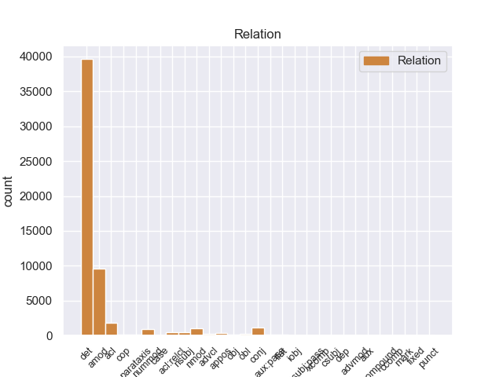
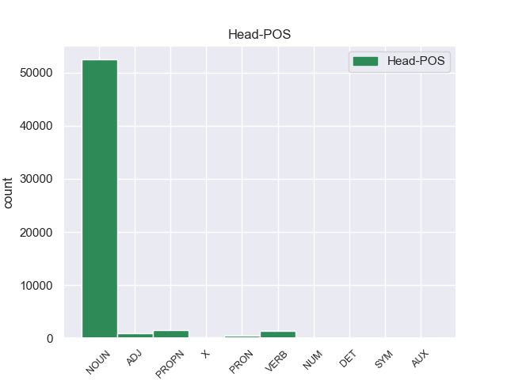
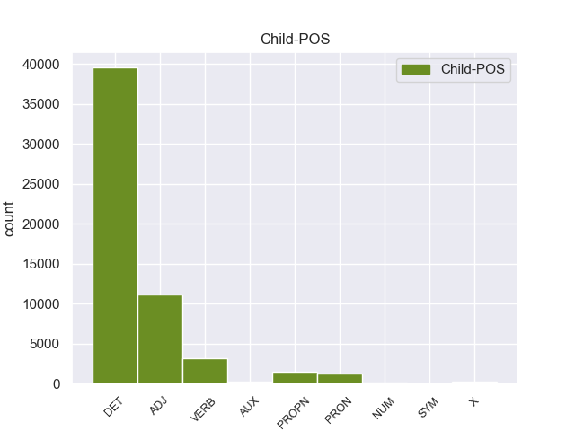

Distribution of features within this leaf



Agreement Rules sorted by frequency.
- When the dependent token is the determiner(det) of the head token, and the head token is NOUN and the dependent token is DET.
1 En _ _ _ _ 0 _ _ _
2 1991 _ _ _ _ 0 _ _ _
3 , _ _ _ _ 0 _ _ _
4 como _ _ _ _ 0 _ _ _
5 ya _ _ _ _ 0 _ _ _
6 está _ _ _ _ 0 _ _ _
7 indicado _ _ _ _ 0 _ _ _
8 en _ _ _ _ 0 _ _ _
9 el _ _ _ _ 0 _ _ _
10 párrafo _ _ _ _ 0 _ _ _
11 anterior _ _ _ _ 0 _ _ _
12 , _ _ _ _ 0 _ _ _
13 se _ _ _ _ 0 _ _ _
14 creó _ _ _ _ 0 _ _ _
15 un _ _ _ _ 0 _ _ _
16 equipo _ _ _ _ 0 _ _ _
17 ad _ _ _ _ 0 _ _ _
18 hoc _ _ _ _ 0 _ _ _
19 para _ _ _ _ 0 _ _ _
20 averiguar _ _ _ _ 0 _ _ _
21 como _ _ _ _ 0 _ _ _
22 se _ _ _ _ 0 _ _ _
23 podía _ _ _ _ 0 _ _ _
24 desarrollar _ _ _ _ 0 _ _ _
25 el _ _ _ _ 0 _ _ _
26 Dialogo _ _ _ _ 0 _ _ _
27 Social _ _ _ _ 0 _ _ _
28 , _ _ _ _ 0 _ _ _
29 este _ _ _ _ 0 _ _ _
30 equipo _ _ _ _ 0 _ _ _
31 estaba _ _ _ _ 0 _ _ _
32 formado _ _ _ _ 0 _ _ _
33 por _ _ _ _ 0 _ _ _
34 representantes _ _ _ _ 0 _ _ _
35 de _ _ _ _ 0 _ _ _
36 todas _ _ _ _ 0 _ _ _
37 las el DET _ Definite=Def|Gender=Fem|Number=Plur|PronType=Art 38 det _ _
38 organizaciones organización NOUN _ Gender=Fem|Number=Plur 0 _ _ _
39 relacionadas _ _ _ _ 0 _ _ _
40 con _ _ _ _ 0 _ _ _
41 CES _ _ _ _ 0 _ _ _
42 , _ _ _ _ 0 _ _ _
43 UNICE _ _ _ _ 0 _ _ _
44 y _ _ _ _ 0 _ _ _
45 CEEP _ _ _ _ 0 _ _ _
46 ; _ _ _ _ 0 _ _ _
1 En _ _ _ _ 0 _ _ _
2 1991 _ _ _ _ 0 _ _ _
3 , _ _ _ _ 0 _ _ _
4 como _ _ _ _ 0 _ _ _
5 ya _ _ _ _ 0 _ _ _
6 está _ _ _ _ 0 _ _ _
7 indicado _ _ _ _ 0 _ _ _
8 en _ _ _ _ 0 _ _ _
9 el _ _ _ _ 0 _ _ _
10 párrafo _ _ _ _ 0 _ _ _
11 anterior _ _ _ _ 0 _ _ _
12 , _ _ _ _ 0 _ _ _
13 se _ _ _ _ 0 _ _ _
14 creó _ _ _ _ 0 _ _ _
15 un _ _ _ _ 0 _ _ _
16 equipo equipo NOUN _ Gender=Masc|Number=Sing 0 _ _ _
17 ad ad ADJ _ Gender=Masc|Number=Sing 16 amod _ _
18 hoc _ _ _ _ 0 _ _ _
19 para _ _ _ _ 0 _ _ _
20 averiguar _ _ _ _ 0 _ _ _
21 como _ _ _ _ 0 _ _ _
22 se _ _ _ _ 0 _ _ _
23 podía _ _ _ _ 0 _ _ _
24 desarrollar _ _ _ _ 0 _ _ _
25 el _ _ _ _ 0 _ _ _
26 Dialogo _ _ _ _ 0 _ _ _
27 Social _ _ _ _ 0 _ _ _
28 , _ _ _ _ 0 _ _ _
29 este _ _ _ _ 0 _ _ _
30 equipo _ _ _ _ 0 _ _ _
31 estaba _ _ _ _ 0 _ _ _
32 formado _ _ _ _ 0 _ _ _
33 por _ _ _ _ 0 _ _ _
34 representantes _ _ _ _ 0 _ _ _
35 de _ _ _ _ 0 _ _ _
36 todas _ _ _ _ 0 _ _ _
37 las _ _ _ _ 0 _ _ _
38 organizaciones _ _ _ _ 0 _ _ _
39 relacionadas _ _ _ _ 0 _ _ _
40 con _ _ _ _ 0 _ _ _
41 CES _ _ _ _ 0 _ _ _
42 , _ _ _ _ 0 _ _ _
43 UNICE _ _ _ _ 0 _ _ _
44 y _ _ _ _ 0 _ _ _
45 CEEP _ _ _ _ 0 _ _ _
46 ; _ _ _ _ 0 _ _ _
1 En _ _ _ _ 0 _ _ _
2 1991 _ _ _ _ 0 _ _ _
3 , _ _ _ _ 0 _ _ _
4 como _ _ _ _ 0 _ _ _
5 ya _ _ _ _ 0 _ _ _
6 está _ _ _ _ 0 _ _ _
7 indicado _ _ _ _ 0 _ _ _
8 en _ _ _ _ 0 _ _ _
9 el _ _ _ _ 0 _ _ _
10 párrafo _ _ _ _ 0 _ _ _
11 anterior _ _ _ _ 0 _ _ _
12 , _ _ _ _ 0 _ _ _
13 se _ _ _ _ 0 _ _ _
14 creó _ _ _ _ 0 _ _ _
15 un _ _ _ _ 0 _ _ _
16 equipo _ _ _ _ 0 _ _ _
17 ad _ _ _ _ 0 _ _ _
18 hoc _ _ _ _ 0 _ _ _
19 para _ _ _ _ 0 _ _ _
20 averiguar _ _ _ _ 0 _ _ _
21 como _ _ _ _ 0 _ _ _
22 se _ _ _ _ 0 _ _ _
23 podía _ _ _ _ 0 _ _ _
24 desarrollar _ _ _ _ 0 _ _ _
25 el _ _ _ _ 0 _ _ _
26 Dialogo _ _ _ _ 0 _ _ _
27 Social _ _ _ _ 0 _ _ _
28 , _ _ _ _ 0 _ _ _
29 este _ _ _ _ 0 _ _ _
30 equipo _ _ _ _ 0 _ _ _
31 estaba _ _ _ _ 0 _ _ _
32 formado _ _ _ _ 0 _ _ _
33 por _ _ _ _ 0 _ _ _
34 representantes _ _ _ _ 0 _ _ _
35 de _ _ _ _ 0 _ _ _
36 todas _ _ _ _ 0 _ _ _
37 las _ _ _ _ 0 _ _ _
38 organizaciones organización NOUN _ Gender=Fem|Number=Plur 0 _ _ _
39 relacionadas relacionado VERB _ Gender=Fem|Number=Plur|VerbForm=Part 38 acl _ _
40 con _ _ _ _ 0 _ _ _
41 CES _ _ _ _ 0 _ _ _
42 , _ _ _ _ 0 _ _ _
43 UNICE _ _ _ _ 0 _ _ _
44 y _ _ _ _ 0 _ _ _
45 CEEP _ _ _ _ 0 _ _ _
46 ; _ _ _ _ 0 _ _ _
1 De _ _ _ _ 0 _ _ _
2 las _ _ _ _ 0 _ _ _
3 8 _ _ _ _ 0 _ _ _
4 porciones _ _ _ _ 0 _ _ _
5 , _ _ _ _ 0 _ _ _
6 cuatro _ _ _ _ 0 _ _ _
7 correspondieron _ _ _ _ 0 _ _ _
8 a _ _ _ _ 0 _ _ _
9 el _ _ _ _ 0 _ _ _
10 rey _ _ _ _ 0 _ _ _
11 , _ _ _ _ 0 _ _ _
12 una _ _ _ _ 0 _ _ _
13 a _ _ _ _ 0 _ _ _
14 el _ _ _ _ 0 _ _ _
15 conde _ _ _ _ 0 _ _ _
16 de _ _ _ _ 0 _ _ _
17 el el DET _ Definite=Def|Gender=Masc|Number=Sing|PronType=Art 18 det _ _
18 Rosellón rosellón PROPN _ Gender=Masc|Number=Sing 0 _ _ _
19 Nuño _ _ _ _ 0 _ _ _
20 Sánchez _ _ _ _ 0 _ _ _
21 , _ _ _ _ 0 _ _ _
22 una _ _ _ _ 0 _ _ _
23 a _ _ _ _ 0 _ _ _
24 el _ _ _ _ 0 _ _ _
25 obispo _ _ _ _ 0 _ _ _
26 de _ _ _ _ 0 _ _ _
27 Barcelona _ _ _ _ 0 _ _ _
28 Berenguer _ _ _ _ 0 _ _ _
29 de _ _ _ _ 0 _ _ _
30 Palou _ _ _ _ 0 _ _ _
31 , _ _ _ _ 0 _ _ _
32 una _ _ _ _ 0 _ _ _
33 a _ _ _ _ 0 _ _ _
34 el _ _ _ _ 0 _ _ _
35 Conde _ _ _ _ 0 _ _ _
36 de _ _ _ _ 0 _ _ _
37 Ampurias _ _ _ _ 0 _ _ _
38 y _ _ _ _ 0 _ _ _
39 finalmente _ _ _ _ 0 _ _ _
40 otra _ _ _ _ 0 _ _ _
41 a _ _ _ _ 0 _ _ _
42 el _ _ _ _ 0 _ _ _
43 vizconde _ _ _ _ 0 _ _ _
44 de _ _ _ _ 0 _ _ _
45 Bearn _ _ _ _ 0 _ _ _
46 . _ _ _ _ 0 _ _ _
1 Ahora _ _ _ _ 0 _ _ _
2 se _ _ _ _ 0 _ _ _
3 aunan _ _ _ _ 0 _ _ _
4 cocina _ _ _ _ 0 _ _ _
5 y _ _ _ _ 0 _ _ _
6 entorno _ _ _ _ 0 _ _ _
7 , _ _ _ _ 0 _ _ _
8 me _ _ _ _ 0 _ _ _
9 encanto _ _ _ _ 0 _ _ _
10 la _ _ _ _ 0 _ _ _
11 bodega _ _ _ _ 0 _ _ _
12 , _ _ _ _ 0 _ _ _
13 las _ _ _ _ 0 _ _ _
14 sillas _ _ _ _ 0 _ _ _
15 son _ _ _ _ 0 _ _ _
16 comodisimas _ _ _ _ 0 _ _ _
17 , _ _ _ _ 0 _ _ _
18 la _ _ _ _ 0 _ _ _
19 iluminacion _ _ _ _ 0 _ _ _
20 es _ _ _ _ 0 _ _ _
21 excepcional _ _ _ _ 0 _ _ _
22 , _ _ _ _ 0 _ _ _
23 alcanzas _ _ _ _ 0 _ _ _
24 un _ _ _ _ 0 _ _ _
25 grado _ _ _ _ 0 _ _ _
26 de _ _ _ _ 0 _ _ _
27 satisfaccion _ _ _ _ 0 _ _ _
28 que _ _ _ _ 0 _ _ _
29 no _ _ _ _ 0 _ _ _
30 se _ _ _ _ 0 _ _ _
31 puede _ _ _ _ 0 _ _ _
32 describir _ _ _ _ 0 _ _ _
33 , _ _ _ _ 0 _ _ _
34 hay _ _ _ _ 0 _ _ _
35 que _ _ _ _ 0 _ _ _
36 probar _ _ _ _ 0 _ _ _
37 lo _ _ _ _ 0 _ _ _
38 , _ _ _ _ 0 _ _ _
39 es _ _ _ _ 0 _ _ _
40 la _ _ _ _ 0 _ _ _
41 primera primero ADJ _ Gender=Fem|Number=Sing|NumType=Ord 42 nummod _ _
42 vez vez NOUN _ Gender=Fem|Number=Sing 0 _ _ _
43 en _ _ _ _ 0 _ _ _
44 mi _ _ _ _ 0 _ _ _
45 vda _ _ _ _ 0 _ _ _
46 que _ _ _ _ 0 _ _ _
47 una _ _ _ _ 0 _ _ _
48 cocina _ _ _ _ 0 _ _ _
49 me _ _ _ _ 0 _ _ _
50 emociona _ _ _ _ 0 _ _ _
51 hasta _ _ _ _ 0 _ _ _
52 ese _ _ _ _ 0 _ _ _
53 punto _ _ _ _ 0 _ _ _
54 . _ _ _ _ 0 _ _ _
1 Esta _ _ _ _ 0 _ _ _
2 teoría _ _ _ _ 0 _ _ _
3 se _ _ _ _ 0 _ _ _
4 avenía _ _ _ _ 0 _ _ _
5 bien _ _ _ _ 0 _ _ _
6 con _ _ _ _ 0 _ _ _
7 la _ _ _ _ 0 _ _ _
8 creencia _ _ _ _ 0 _ _ _
9 de _ _ _ _ 0 _ _ _
10 el _ _ _ _ 0 _ _ _
11 Romanticismo _ _ _ _ 0 _ _ _
12 en _ _ _ _ 0 _ _ _
13 un _ _ _ _ 0 _ _ _
14 volkgeist _ _ _ _ 0 _ _ _
15 , _ _ _ _ 0 _ _ _
16 " _ _ _ _ 0 _ _ _
17 genio _ _ _ _ 0 _ _ _
18 o _ _ _ _ 0 _ _ _
19 espíritu _ _ _ _ 0 _ _ _
20 de _ _ _ _ 0 _ _ _
21 el _ _ _ _ 0 _ _ _
22 pueblo _ _ _ _ 0 _ _ _
23 " _ _ _ _ 0 _ _ _
24 , _ _ _ _ 0 _ _ _
25 autor _ _ _ _ 0 _ _ _
26 colectivo colectivo ADJ _ Gender=Masc|Number=Sing 0 _ _ _
27 y _ _ _ _ 0 _ _ _
28 anónimo anónimo ADJ _ Gender=Masc|Number=Sing 26 conj _ _
29 de _ _ _ _ 0 _ _ _
30 una _ _ _ _ 0 _ _ _
31 poesía _ _ _ _ 0 _ _ _
32 nacional _ _ _ _ 0 _ _ _
33 . _ _ _ _ 0 _ _ _
1 De _ _ _ _ 0 _ _ _
2 la _ _ _ _ 0 _ _ _
3 Vega _ _ _ _ 0 _ _ _
4 ha _ _ _ _ 0 _ _ _
5 pedido pedir VERB _ Gender=Masc|Number=Sing|Tense=Past|VerbForm=Part 0 _ _ _
6 respetar _ _ _ _ 0 _ _ _
7 los _ _ _ _ 0 _ _ _
8 tiempos _ _ _ _ 0 _ _ _
9 de _ _ _ _ 0 _ _ _
10 los _ _ _ _ 0 _ _ _
11 procesos _ _ _ _ 0 _ _ _
12 y _ _ _ _ 0 _ _ _
13 de _ _ _ _ 0 _ _ _
14 la _ _ _ _ 0 _ _ _
15 misma _ _ _ _ 0 _ _ _
16 manera _ _ _ _ 0 _ _ _
17 que _ _ _ _ 0 _ _ _
18 no _ _ _ _ 0 _ _ _
19 ha _ _ _ _ 0 _ _ _
20 querido _ _ _ _ 0 _ _ _
21 entrar _ _ _ _ 0 _ _ _
22 en _ _ _ _ 0 _ _ _
23 la _ _ _ _ 0 _ _ _
24 salida _ _ _ _ 0 _ _ _
25 de _ _ _ _ 0 _ _ _
26 Corbacho _ _ _ _ 0 _ _ _
27 , _ _ _ _ 0 _ _ _
28 tampoco _ _ _ _ 0 _ _ _
29 lo _ _ _ _ 0 _ _ _
30 ha _ _ _ _ 0 _ _ _
31 hecho hacer VERB _ Gender=Masc|Number=Sing|Tense=Past|VerbForm=Part 5 conj _ _
32 la _ _ _ _ 0 _ _ _
33 posible _ _ _ _ 0 _ _ _
34 salida _ _ _ _ 0 _ _ _
35 de _ _ _ _ 0 _ _ _
36 Trinidad _ _ _ _ 0 _ _ _
37 Jiménez _ _ _ _ 0 _ _ _
38 , _ _ _ _ 0 _ _ _
39 que _ _ _ _ 0 _ _ _
40 le _ _ _ _ 0 _ _ _
41 acompañaba _ _ _ _ 0 _ _ _
42 en _ _ _ _ 0 _ _ _
43 la _ _ _ _ 0 _ _ _
44 sala _ _ _ _ 0 _ _ _
45 de _ _ _ _ 0 _ _ _
46 prensa _ _ _ _ 0 _ _ _
47 . _ _ _ _ 0 _ _ _
1 De _ _ _ _ 0 _ _ _
2 las _ _ _ _ 0 _ _ _
3 8 _ _ _ _ 0 _ _ _
4 porciones _ _ _ _ 0 _ _ _
5 , _ _ _ _ 0 _ _ _
6 cuatro _ _ _ _ 0 _ _ _
7 correspondieron _ _ _ _ 0 _ _ _
8 a _ _ _ _ 0 _ _ _
9 el _ _ _ _ 0 _ _ _
10 rey _ _ _ _ 0 _ _ _
11 , _ _ _ _ 0 _ _ _
12 una _ _ _ _ 0 _ _ _
13 a _ _ _ _ 0 _ _ _
14 el _ _ _ _ 0 _ _ _
15 conde conde NOUN _ Gender=Masc|Number=Sing 0 _ _ _
16 de _ _ _ _ 0 _ _ _
17 el _ _ _ _ 0 _ _ _
18 Rosellón rosellón PROPN _ Gender=Masc|Number=Sing 15 nmod _ _
19 Nuño _ _ _ _ 0 _ _ _
20 Sánchez _ _ _ _ 0 _ _ _
21 , _ _ _ _ 0 _ _ _
22 una _ _ _ _ 0 _ _ _
23 a _ _ _ _ 0 _ _ _
24 el _ _ _ _ 0 _ _ _
25 obispo _ _ _ _ 0 _ _ _
26 de _ _ _ _ 0 _ _ _
27 Barcelona _ _ _ _ 0 _ _ _
28 Berenguer _ _ _ _ 0 _ _ _
29 de _ _ _ _ 0 _ _ _
30 Palou _ _ _ _ 0 _ _ _
31 , _ _ _ _ 0 _ _ _
32 una _ _ _ _ 0 _ _ _
33 a _ _ _ _ 0 _ _ _
34 el _ _ _ _ 0 _ _ _
35 Conde _ _ _ _ 0 _ _ _
36 de _ _ _ _ 0 _ _ _
37 Ampurias _ _ _ _ 0 _ _ _
38 y _ _ _ _ 0 _ _ _
39 finalmente _ _ _ _ 0 _ _ _
40 otra _ _ _ _ 0 _ _ _
41 a _ _ _ _ 0 _ _ _
42 el _ _ _ _ 0 _ _ _
43 vizconde _ _ _ _ 0 _ _ _
44 de _ _ _ _ 0 _ _ _
45 Bearn _ _ _ _ 0 _ _ _
46 . _ _ _ _ 0 _ _ _
1 La _ _ _ _ 0 _ _ _
2 victoria _ _ _ _ 0 _ _ _
3 costarricense _ _ _ _ 0 _ _ _
4 en _ _ _ _ 0 _ _ _
5 Santa _ _ _ _ 0 _ _ _
6 Rosa _ _ _ _ 0 _ _ _
7 permitió _ _ _ _ 0 _ _ _
8 la _ _ _ _ 0 _ _ _
9 expulsión _ _ _ _ 0 _ _ _
10 de _ _ _ _ 0 _ _ _
11 los _ _ _ _ 0 _ _ _
12 filibusteros _ _ _ _ 0 _ _ _
13 de _ _ _ _ 0 _ _ _
14 suelo _ _ _ _ 0 _ _ _
15 costarricense _ _ _ _ 0 _ _ _
16 , _ _ _ _ 0 _ _ _
17 trasladando _ _ _ _ 0 _ _ _
18 el _ _ _ _ 0 _ _ _
19 escenario _ _ _ _ 0 _ _ _
20 de _ _ _ _ 0 _ _ _
21 la _ _ _ _ 0 _ _ _
22 guerra _ _ _ _ 0 _ _ _
23 a _ _ _ _ 0 _ _ _
24 la _ _ _ _ 0 _ _ _
25 vecina _ _ _ _ 0 _ _ _
26 Nicaragua _ _ _ _ 0 _ _ _
27 , _ _ _ _ 0 _ _ _
28 en _ _ _ _ 0 _ _ _
29 el _ _ _ _ 0 _ _ _
30 marco _ _ _ _ 0 _ _ _
31 de _ _ _ _ 0 _ _ _
32 la _ _ _ _ 0 _ _ _
33 Guerra _ _ _ _ 0 _ _ _
34 Nacional _ _ _ _ 0 _ _ _
35 de _ _ _ _ 0 _ _ _
36 Nicaragua _ _ _ _ 0 _ _ _
37 , _ _ _ _ 0 _ _ _
38 a _ _ _ _ 0 _ _ _
39 la _ _ _ _ 0 _ _ _
40 vez vez NOUN _ Gender=Fem|Number=Sing 0 _ _ _
41 que _ _ _ _ 0 _ _ _
42 llena lleno VERB _ Gender=Fem|Number=Sing|VerbForm=Fin 40 acl:relcl _ _
43 de _ _ _ _ 0 _ _ _
44 optimismo _ _ _ _ 0 _ _ _
45 a _ _ _ _ 0 _ _ _
46 el _ _ _ _ 0 _ _ _
47 ejército _ _ _ _ 0 _ _ _
48 expedicionario _ _ _ _ 0 _ _ _
49 costarricense _ _ _ _ 0 _ _ _
50 . _ _ _ _ 0 _ _ _
1 Jazmin _ _ _ _ 0 _ _ _
2 es _ _ _ _ 0 _ _ _
3 todo _ _ _ _ 0 _ _ _
4 lo él PRON _ Case=Acc|Gender=Masc|Number=Sing|Person=3|PrepCase=Npr|PronType=Prs 5 det _ _
5 contrario contrario NOUN _ Gender=Masc|Number=Sing 0 _ _ _
6 , _ _ _ _ 0 _ _ _
7 es _ _ _ _ 0 _ _ _
8 tímida _ _ _ _ 0 _ _ _
9 y _ _ _ _ 0 _ _ _
10 callada _ _ _ _ 0 _ _ _
11 , _ _ _ _ 0 _ _ _
12 pero _ _ _ _ 0 _ _ _
13 siempre _ _ _ _ 0 _ _ _
14 es _ _ _ _ 0 _ _ _
15 arrastrada _ _ _ _ 0 _ _ _
16 por _ _ _ _ 0 _ _ _
17 las _ _ _ _ 0 _ _ _
18 locuras _ _ _ _ 0 _ _ _
19 y _ _ _ _ 0 _ _ _
20 travesuras _ _ _ _ 0 _ _ _
21 que _ _ _ _ 0 _ _ _
22 inventa _ _ _ _ 0 _ _ _
23 Alma _ _ _ _ 0 _ _ _
24 . _ _ _ _ 0 _ _ _
1 La _ _ _ _ 0 _ _ _
2 ceriflor ceriflor NOUN _ Gender=Fem|Number=Sing 0 _ _ _
3 o _ _ _ _ 0 _ _ _
4 palomera _ _ _ _ 0 _ _ _
5 ( _ _ _ _ 0 _ _ _
6 Cerinthe cerinthe PROPN _ Gender=Fem|Number=Sing 2 appos _ _
7 major _ _ _ _ 0 _ _ _
8 ) _ _ _ _ 0 _ _ _
9 es _ _ _ _ 0 _ _ _
10 una _ _ _ _ 0 _ _ _
11 planta _ _ _ _ 0 _ _ _
12 de _ _ _ _ 0 _ _ _
13 la _ _ _ _ 0 _ _ _
14 familia _ _ _ _ 0 _ _ _
15 de _ _ _ _ 0 _ _ _
16 las _ _ _ _ 0 _ _ _
17 boragináceas _ _ _ _ 0 _ _ _
18 . _ _ _ _ 0 _ _ _
1 Comienzan _ _ _ _ 0 _ _ _
2 serias _ _ _ _ 0 _ _ _
3 discusiones _ _ _ _ 0 _ _ _
4 con _ _ _ _ 0 _ _ _
5 Daniel _ _ _ _ 0 _ _ _
6 y _ _ _ _ 0 _ _ _
7 la _ _ _ _ 0 _ _ _
8 desgracia _ _ _ _ 0 _ _ _
9 no _ _ _ _ 0 _ _ _
10 se _ _ _ _ 0 _ _ _
11 hace _ _ _ _ 0 _ _ _
12 esperar _ _ _ _ 0 _ _ _
13 , _ _ _ _ 0 _ _ _
14 en _ _ _ _ 0 _ _ _
15 una _ _ _ _ 0 _ _ _
16 noche _ _ _ _ 0 _ _ _
17 Valeria _ _ _ _ 0 _ _ _
18 se _ _ _ _ 0 _ _ _
19 encierra _ _ _ _ 0 _ _ _
20 en _ _ _ _ 0 _ _ _
21 su _ _ _ _ 0 _ _ _
22 habitación _ _ _ _ 0 _ _ _
23 donde _ _ _ _ 0 _ _ _
24 Daniel _ _ _ _ 0 _ _ _
25 la _ _ _ _ 0 _ _ _
26 encuentra _ _ _ _ 0 _ _ _
27 inconsciente _ _ _ _ 0 _ _ _
28 por _ _ _ _ 0 _ _ _
29 lo _ _ _ _ 0 _ _ _
30 que _ _ _ _ 0 _ _ _
31 es _ _ _ _ 0 _ _ _
32 hospitalizada _ _ _ _ 0 _ _ _
33 de _ _ _ _ 0 _ _ _
34 nuevo _ _ _ _ 0 _ _ _
35 y _ _ _ _ 0 _ _ _
36 le _ _ _ _ 0 _ _ _
37 amputan _ _ _ _ 0 _ _ _
38 la _ _ _ _ 0 _ _ _
39 pierna _ _ _ _ 0 _ _ _
40 debido _ _ _ _ 0 _ _ _
41 a _ _ _ _ 0 _ _ _
42 que _ _ _ _ 0 _ _ _
43 se _ _ _ _ 0 _ _ _
44 le _ _ _ _ 0 _ _ _
45 desarrolló _ _ _ _ 0 _ _ _
46 una _ _ _ _ 0 _ _ _
47 gangrena gangrena NOUN _ Gender=Fem|Number=Sing 0 _ _ _
48 en _ _ _ _ 0 _ _ _
49 ella él PRON _ Case=Acc,Nom|Gender=Fem|Number=Sing|Person=3|PronType=Prs 47 nmod _ SpaceAfter=No
50 , _ _ _ _ 0 _ _ _
51 tras _ _ _ _ 0 _ _ _
52 una _ _ _ _ 0 _ _ _
53 trombosis _ _ _ _ 0 _ _ _
54 generada _ _ _ _ 0 _ _ _
55 por _ _ _ _ 0 _ _ _
56 el _ _ _ _ 0 _ _ _
57 esfuerzo _ _ _ _ 0 _ _ _
58 de _ _ _ _ 0 _ _ _
59 Valeria _ _ _ _ 0 _ _ _
60 en _ _ _ _ 0 _ _ _
61 buscar _ _ _ _ 0 _ _ _
62 a _ _ _ _ 0 _ _ _
63 Richie _ _ _ _ 0 _ _ _
64 . _ _ _ _ 0 _ _ _
1 No _ _ _ _ 0 _ _ _
2 pusieron _ _ _ _ 0 _ _ _
3 pegas _ _ _ _ 0 _ _ _
4 a _ _ _ _ 0 _ _ _
5 llegar _ _ _ _ 0 _ _ _
6 tarde _ _ _ _ 0 _ _ _
7 el _ _ _ _ 0 _ _ _
8 día _ _ _ _ 0 _ _ _
9 de _ _ _ _ 0 _ _ _
10 la _ _ _ _ 0 _ _ _
11 entrada _ _ _ _ 0 _ _ _
12 ni _ _ _ _ 0 _ _ _
13 a _ _ _ _ 0 _ _ _
14 salir _ _ _ _ 0 _ _ _
15 un uno DET _ Definite=Ind|Gender=Masc|Number=Sing|PronType=Art 16 det _ _
16 poco poco PRON _ Gender=Masc|Number=Sing|NumType=Card|PronType=Ind 0 _ _ _
17 más _ _ _ _ 0 _ _ _
18 allá _ _ _ _ 0 _ _ _
19 de _ _ _ _ 0 _ _ _
20 las _ _ _ _ 0 _ _ _
21 12 _ _ _ _ 0 _ _ _
22 ( _ _ _ _ 0 _ _ _
23 hora _ _ _ _ 0 _ _ _
24 de _ _ _ _ 0 _ _ _
25 salida _ _ _ _ 0 _ _ _
26 ) _ _ _ _ 0 _ _ _
27 . _ _ _ _ 0 _ _ _
1 El _ _ _ _ 0 _ _ _
2 AS as PROPN _ Gender=Masc|Number=Sing 7 nsubj _ _
3 532 _ _ _ _ 0 _ _ _
4 Cougar _ _ _ _ 0 _ _ _
5 es _ _ _ _ 0 _ _ _
6 un _ _ _ _ 0 _ _ _
7 helicóptero helicóptero NOUN _ Gender=Masc|Number=Sing 0 _ _ _
8 polivalente _ _ _ _ 0 _ _ _
9 bimotor _ _ _ _ 0 _ _ _
10 de _ _ _ _ 0 _ _ _
11 tamaño _ _ _ _ 0 _ _ _
12 medio _ _ _ _ 0 _ _ _
13 fabricado _ _ _ _ 0 _ _ _
14 por _ _ _ _ 0 _ _ _
15 el _ _ _ _ 0 _ _ _
16 Grupo _ _ _ _ 0 _ _ _
17 Eurocopter _ _ _ _ 0 _ _ _
18 . _ _ _ _ 0 _ _ _
1 En _ _ _ _ 0 _ _ _
2 estos _ _ _ _ 0 _ _ _
3 trabajos _ _ _ _ 0 _ _ _
4 se _ _ _ _ 0 _ _ _
5 pusieron _ _ _ _ 0 _ _ _
6 a _ _ _ _ 0 _ _ _
7 el el DET _ Definite=Def|Gender=Masc|Number=Sing|PronType=Art 8 det _ _
8 descubierto descubierto ADJ _ Gender=Masc|Number=Sing 0 _ _ _
9 25 _ _ _ _ 0 _ _ _
10 vanos _ _ _ _ 0 _ _ _
11 correspondientes _ _ _ _ 0 _ _ _
12 a _ _ _ _ 0 _ _ _
13 ventanas _ _ _ _ 0 _ _ _
14 saeteras _ _ _ _ 0 _ _ _
15 que _ _ _ _ 0 _ _ _
16 habían _ _ _ _ 0 _ _ _
17 sido _ _ _ _ 0 _ _ _
18 tapiadas _ _ _ _ 0 _ _ _
19 en _ _ _ _ 0 _ _ _
20 los _ _ _ _ 0 _ _ _
21 siglos _ _ _ _ 0 _ _ _
22 anteriores _ _ _ _ 0 _ _ _
23 . _ _ _ _ 0 _ _ _
1 La _ _ _ _ 0 _ _ _
2 Primera _ _ _ _ 0 _ _ _
3 División división PROPN _ Gender=Fem|Number=Sing 0 _ _ _
4 Blindada blindado PROPN _ Gender=Fem|Number=Sing|VerbForm=Part 3 amod _ _
5 polaca _ _ _ _ 0 _ _ _
6 se _ _ _ _ 0 _ _ _
7 encaminó _ _ _ _ 0 _ _ _
8 hacia _ _ _ _ 0 _ _ _
9 la _ _ _ _ 0 _ _ _
10 frontera _ _ _ _ 0 _ _ _
11 belga _ _ _ _ 0 _ _ _
12 - _ _ _ _ 0 _ _ _
13 neerlandesa _ _ _ _ 0 _ _ _
14 más _ _ _ _ 0 _ _ _
15 a _ _ _ _ 0 _ _ _
16 el _ _ _ _ 0 _ _ _
17 este _ _ _ _ 0 _ _ _
18 y _ _ _ _ 0 _ _ _
19 la _ _ _ _ 0 _ _ _
20 zona _ _ _ _ 0 _ _ _
21 crucial _ _ _ _ 0 _ _ _
22 a _ _ _ _ 0 _ _ _
23 el _ _ _ _ 0 _ _ _
24 norte _ _ _ _ 0 _ _ _
25 de _ _ _ _ 0 _ _ _
26 Amberes _ _ _ _ 0 _ _ _
27 . _ _ _ _ 0 _ _ _
1 El _ _ _ _ 0 _ _ _
2 mandatario _ _ _ _ 0 _ _ _
3 uruguayo _ _ _ _ 0 _ _ _
4 , _ _ _ _ 0 _ _ _
5 quien _ _ _ _ 0 _ _ _
6 llegó _ _ _ _ 0 _ _ _
7 el _ _ _ _ 0 _ _ _
8 domingo _ _ _ _ 0 _ _ _
9 a _ _ _ _ 0 _ _ _
10 Paraguay _ _ _ _ 0 _ _ _
11 , _ _ _ _ 0 _ _ _
12 inició _ _ _ _ 0 _ _ _
13 este _ _ _ _ 0 _ _ _
14 lunes _ _ _ _ 0 _ _ _
15 sus _ _ _ _ 0 _ _ _
16 actividades _ _ _ _ 0 _ _ _
17 a _ _ _ _ 0 _ _ _
18 el el DET _ Definite=Def|Gender=Masc|Number=Sing|PronType=Art 19 det _ _
19 colocar colocar VERB _ Gender=Masc|Number=Sing|VerbForm=Fin 0 _ _ _
20 una _ _ _ _ 0 _ _ _
21 ofrenda _ _ _ _ 0 _ _ _
22 floral _ _ _ _ 0 _ _ _
23 en _ _ _ _ 0 _ _ _
24 el _ _ _ _ 0 _ _ _
25 Panteón _ _ _ _ 0 _ _ _
26 de _ _ _ _ 0 _ _ _
27 los _ _ _ _ 0 _ _ _
28 Héroes _ _ _ _ 0 _ _ _
29 , _ _ _ _ 0 _ _ _
30 tras _ _ _ _ 0 _ _ _
31 lo _ _ _ _ 0 _ _ _
32 cual _ _ _ _ 0 _ _ _
33 se _ _ _ _ 0 _ _ _
34 trasladó _ _ _ _ 0 _ _ _
35 a _ _ _ _ 0 _ _ _
36 el _ _ _ _ 0 _ _ _
37 Palacio _ _ _ _ 0 _ _ _
38 de _ _ _ _ 0 _ _ _
39 Gobierno _ _ _ _ 0 _ _ _
40 donde _ _ _ _ 0 _ _ _
41 fue _ _ _ _ 0 _ _ _
42 condecorado _ _ _ _ 0 _ _ _
43 por _ _ _ _ 0 _ _ _
44 Lugo _ _ _ _ 0 _ _ _
45 . _ _ _ _ 0 _ _ _
1 Si _ _ _ _ 0 _ _ _
2 un _ _ _ _ 0 _ _ _
3 producto _ _ _ _ 0 _ _ _
4 destinado _ _ _ _ 0 _ _ _
5 a _ _ _ _ 0 _ _ _
6 durar _ _ _ _ 0 _ _ _
7 demasiado _ _ _ _ 0 _ _ _
8 , _ _ _ _ 0 _ _ _
9 una _ _ _ _ 0 _ _ _
10 vez _ _ _ _ 0 _ _ _
11 este estar VERB _ Gender=Masc|Number=Sing|VerbForm=Fin 14 advcl _ _
12 ya _ _ _ _ 0 _ _ _
13 ha _ _ _ _ 0 _ _ _
14 llegado llegar VERB _ Gender=Masc|Number=Sing|Tense=Past|VerbForm=Part 0 _ _ _
15 a _ _ _ _ 0 _ _ _
16 el _ _ _ _ 0 _ _ _
17 mercado _ _ _ _ 0 _ _ _
18 la _ _ _ _ 0 _ _ _
19 producción _ _ _ _ 0 _ _ _
20 puede _ _ _ _ 0 _ _ _
21 parar _ _ _ _ 0 _ _ _
22 hasta _ _ _ _ 0 _ _ _
23 que _ _ _ _ 0 _ _ _
24 no _ _ _ _ 0 _ _ _
25 vuelva _ _ _ _ 0 _ _ _
26 a _ _ _ _ 0 _ _ _
27 necesitar _ _ _ _ 0 _ _ _
28 se _ _ _ _ 0 _ _ _
29 y _ _ _ _ 0 _ _ _
30 esto _ _ _ _ 0 _ _ _
31 suponía _ _ _ _ 0 _ _ _
32 una _ _ _ _ 0 _ _ _
33 catástrofe _ _ _ _ 0 _ _ _
34 para _ _ _ _ 0 _ _ _
35 las _ _ _ _ 0 _ _ _
36 empresas _ _ _ _ 0 _ _ _
37 . _ _ _ _ 0 _ _ _
1 Esto _ _ _ _ 0 _ _ _
2 se _ _ _ _ 0 _ _ _
3 explota _ _ _ _ 0 _ _ _
4 en _ _ _ _ 0 _ _ _
5 desarrollo _ _ _ _ 0 _ _ _
6 de _ _ _ _ 0 _ _ _
7 drogas _ _ _ _ 0 _ _ _
8 para _ _ _ _ 0 _ _ _
9 aumentar _ _ _ _ 0 _ _ _
10 la _ _ _ _ 0 _ _ _
11 concentración _ _ _ _ 0 _ _ _
12 de _ _ _ _ 0 _ _ _
13 un _ _ _ _ 0 _ _ _
14 compuesto _ _ _ _ 0 _ _ _
15 en _ _ _ _ 0 _ _ _
16 la _ _ _ _ 0 _ _ _
17 sangre _ _ _ _ 0 _ _ _
18 ajustando _ _ _ _ 0 _ _ _
19 el el DET _ Definite=Def|Gender=Masc|Number=Sing|PronType=Art 20 det _ _
20 pKa pka X _ Gender=Masc|Number=Sing 0 _ _ _
21 de _ _ _ _ 0 _ _ _
22 un _ _ _ _ 0 _ _ _
23 grupo _ _ _ _ 0 _ _ _
24 ionizable _ _ _ _ 0 _ _ _
25 . _ _ _ _ 0 _ _ _
1 El _ _ _ _ 0 _ _ _
2 representante _ _ _ _ 0 _ _ _
3 de _ _ _ _ 0 _ _ _
4 el _ _ _ _ 0 _ _ _
5 Frente _ _ _ _ 0 _ _ _
6 Cívico _ _ _ _ 0 _ _ _
7 en _ _ _ _ 0 _ _ _
8 Tribunal _ _ _ _ 0 _ _ _
9 de _ _ _ _ 0 _ _ _
10 Cuentas _ _ _ _ 0 _ _ _
11 de _ _ _ _ 0 _ _ _
12 la _ _ _ _ 0 _ _ _
13 provincia _ _ _ _ 0 _ _ _
14 de _ _ _ _ 0 _ _ _
15 Córdoba _ _ _ _ 0 _ _ _
16 , _ _ _ _ 0 _ _ _
17 José _ _ _ _ 0 _ _ _
18 Medina _ _ _ _ 0 _ _ _
19 , _ _ _ _ 0 _ _ _
20 denunció _ _ _ _ 0 _ _ _
21 que _ _ _ _ 0 _ _ _
22 el _ _ _ _ 0 _ _ _
23 gobierno _ _ _ _ 0 _ _ _
24 de _ _ _ _ 0 _ _ _
25 Schiaretti _ _ _ _ 0 _ _ _
26 pidió _ _ _ _ 0 _ _ _
27 autorización _ _ _ _ 0 _ _ _
28 para _ _ _ _ 0 _ _ _
29 realizar _ _ _ _ 0 _ _ _
30 reparaciones _ _ _ _ 0 _ _ _
31 en _ _ _ _ 0 _ _ _
32 la _ _ _ _ 0 _ _ _
33 Casa _ _ _ _ 0 _ _ _
34 de _ _ _ _ 0 _ _ _
35 las _ _ _ _ 0 _ _ _
36 Tejas _ _ _ _ 0 _ _ _
37 por _ _ _ _ 0 _ _ _
38 más _ _ _ _ 0 _ _ _
39 de _ _ _ _ 0 _ _ _
40 un uno NUM _ Gender=Masc|Number=Sing|NumType=Card 41 nummod _ _
41 millón millón NOUN _ Gender=Masc|Number=Sing 0 _ _ _
42 de _ _ _ _ 0 _ _ _
43 pesos _ _ _ _ 0 _ _ _
44 el _ _ _ _ 0 _ _ _
45 pasado _ _ _ _ 0 _ _ _
46 19 _ _ _ _ 0 _ _ _
47 de _ _ _ _ 0 _ _ _
48 octubre _ _ _ _ 0 _ _ _
49 , _ _ _ _ 0 _ _ _
50 cuando _ _ _ _ 0 _ _ _
51 ya _ _ _ _ 0 _ _ _
52 estaba _ _ _ _ 0 _ _ _
53 la _ _ _ _ 0 _ _ _
54 decisión _ _ _ _ 0 _ _ _
55 de _ _ _ _ 0 _ _ _
56 demoler _ _ _ _ 0 _ _ _
57 el _ _ _ _ 0 _ _ _
58 edificio _ _ _ _ 0 _ _ _
59 . _ _ _ _ 0 _ _ _
1 Con _ _ _ _ 0 _ _ _
2 miras _ _ _ _ 0 _ _ _
3 a _ _ _ _ 0 _ _ _
4 minimizar _ _ _ _ 0 _ _ _
5 cualquier _ _ _ _ 0 _ _ _
6 confusión _ _ _ _ 0 _ _ _
7 con _ _ _ _ 0 _ _ _
8 una _ _ _ _ 0 _ _ _
9 religión _ _ _ _ 0 _ _ _
10 , _ _ _ _ 0 _ _ _
11 el _ _ _ _ 0 _ _ _
12 uso _ _ _ _ 0 _ _ _
13 de _ _ _ _ 0 _ _ _
14 la _ _ _ _ 0 _ _ _
15 palabra _ _ _ _ 0 _ _ _
16 " _ _ _ _ 0 _ _ _
17 templo _ _ _ _ 0 _ _ _
18 " _ _ _ _ 0 _ _ _
19 para _ _ _ _ 0 _ _ _
20 describir _ _ _ _ 0 _ _ _
21 los _ _ _ _ 0 _ _ _
22 inmuebles _ _ _ _ 0 _ _ _
23 de _ _ _ _ 0 _ _ _
24 los _ _ _ _ 0 _ _ _
25 Shriners _ _ _ _ 0 _ _ _
26 ha _ _ _ _ 0 _ _ _
27 sido ser AUX _ Gender=Masc|Number=Sing|Tense=Past|VerbForm=Part 28 aux:pass _ _
28 reemplazado reemplazar VERB _ Gender=Masc|Number=Sing|Tense=Past|VerbForm=Part 0 _ _ _
29 por _ _ _ _ 0 _ _ _
30 la _ _ _ _ 0 _ _ _
31 frase _ _ _ _ 0 _ _ _
32 " _ _ _ _ 0 _ _ _
33 Centro _ _ _ _ 0 _ _ _
34 Shriner _ _ _ _ 0 _ _ _
35 " _ _ _ _ 0 _ _ _
36 , _ _ _ _ 0 _ _ _
37 aunque _ _ _ _ 0 _ _ _
38 en _ _ _ _ 0 _ _ _
39 capítulos _ _ _ _ 0 _ _ _
40 individuales _ _ _ _ 0 _ _ _
41 siguen _ _ _ _ 0 _ _ _
42 siendo _ _ _ _ 0 _ _ _
43 nombrados _ _ _ _ 0 _ _ _
44 como _ _ _ _ 0 _ _ _
45 " _ _ _ _ 0 _ _ _
46 templos _ _ _ _ 0 _ _ _
47 " _ _ _ _ 0 _ _ _
48 . _ _ _ _ 0 _ _ _
1 De _ _ _ _ 0 _ _ _
2 la _ _ _ _ 0 _ _ _
3 Vega _ _ _ _ 0 _ _ _
4 ha _ _ _ _ 0 _ _ _
5 pedido _ _ _ _ 0 _ _ _
6 respetar _ _ _ _ 0 _ _ _
7 los _ _ _ _ 0 _ _ _
8 tiempos _ _ _ _ 0 _ _ _
9 de _ _ _ _ 0 _ _ _
10 los _ _ _ _ 0 _ _ _
11 procesos _ _ _ _ 0 _ _ _
12 y _ _ _ _ 0 _ _ _
13 de _ _ _ _ 0 _ _ _
14 la _ _ _ _ 0 _ _ _
15 misma _ _ _ _ 0 _ _ _
16 manera _ _ _ _ 0 _ _ _
17 que _ _ _ _ 0 _ _ _
18 no _ _ _ _ 0 _ _ _
19 ha _ _ _ _ 0 _ _ _
20 querido _ _ _ _ 0 _ _ _
21 entrar _ _ _ _ 0 _ _ _
22 en _ _ _ _ 0 _ _ _
23 la _ _ _ _ 0 _ _ _
24 salida _ _ _ _ 0 _ _ _
25 de _ _ _ _ 0 _ _ _
26 Corbacho _ _ _ _ 0 _ _ _
27 , _ _ _ _ 0 _ _ _
28 tampoco _ _ _ _ 0 _ _ _
29 lo él PRON _ Case=Acc|Gender=Masc|Number=Sing|Person=3|PrepCase=Npr|PronType=Prs 31 obj _ _
30 ha _ _ _ _ 0 _ _ _
31 hecho hacer VERB _ Gender=Masc|Number=Sing|Tense=Past|VerbForm=Part 0 _ _ _
32 la _ _ _ _ 0 _ _ _
33 posible _ _ _ _ 0 _ _ _
34 salida _ _ _ _ 0 _ _ _
35 de _ _ _ _ 0 _ _ _
36 Trinidad _ _ _ _ 0 _ _ _
37 Jiménez _ _ _ _ 0 _ _ _
38 , _ _ _ _ 0 _ _ _
39 que _ _ _ _ 0 _ _ _
40 le _ _ _ _ 0 _ _ _
41 acompañaba _ _ _ _ 0 _ _ _
42 en _ _ _ _ 0 _ _ _
43 la _ _ _ _ 0 _ _ _
44 sala _ _ _ _ 0 _ _ _
45 de _ _ _ _ 0 _ _ _
46 prensa _ _ _ _ 0 _ _ _
47 . _ _ _ _ 0 _ _ _
1 A _ _ _ _ 0 _ _ _
2 continuación _ _ _ _ 0 _ _ _
3 , _ _ _ _ 0 _ _ _
4 sonarán _ _ _ _ 0 _ _ _
5 los _ _ _ _ 0 _ _ _
6 ritmos _ _ _ _ 0 _ _ _
7 más _ _ _ _ 0 _ _ _
8 intensos _ _ _ _ 0 _ _ _
9 de _ _ _ _ 0 _ _ _
10 los _ _ _ _ 0 _ _ _
11 llanos _ _ _ _ 0 _ _ _
12 interpretados _ _ _ _ 0 _ _ _
13 por _ _ _ _ 0 _ _ _
14 una _ _ _ _ 0 _ _ _
15 agrupación _ _ _ _ 0 _ _ _
16 que _ _ _ _ 0 _ _ _
17 romperá _ _ _ _ 0 _ _ _
18 esquemas _ _ _ _ 0 _ _ _
19 : _ _ _ _ 0 _ _ _
20 el _ _ _ _ 0 _ _ _
21 Ensamble _ _ _ _ 0 _ _ _
22 de _ _ _ _ 0 _ _ _
23 Arpas _ _ _ _ 0 _ _ _
24 de _ _ _ _ 0 _ _ _
25 la _ _ _ _ 0 _ _ _
26 Orquesta _ _ _ _ 0 _ _ _
27 de _ _ _ _ 0 _ _ _
28 Música _ _ _ _ 0 _ _ _
29 Popular _ _ _ _ 0 _ _ _
30 de _ _ _ _ 0 _ _ _
31 el _ _ _ _ 0 _ _ _
32 Estado _ _ _ _ 0 _ _ _
33 Guárico _ _ _ _ 0 _ _ _
34 , _ _ _ _ 0 _ _ _
35 integrado _ _ _ _ 0 _ _ _
36 por _ _ _ _ 0 _ _ _
37 14 _ _ _ _ 0 _ _ _
38 ejecutantes _ _ _ _ 0 _ _ _
39 , _ _ _ _ 0 _ _ _
40 todos _ _ _ _ 0 _ _ _
41 formados _ _ _ _ 0 _ _ _
42 por _ _ _ _ 0 _ _ _
43 El _ _ _ _ 0 _ _ _
44 Sistema _ _ _ _ 0 _ _ _
45 , _ _ _ _ 0 _ _ _
46 siendo _ _ _ _ 0 _ _ _
47 algunos alguno PRON _ Gender=Masc|Number=Plur|PronType=Ind 50 nsubj _ _
48 de _ _ _ _ 0 _ _ _
49 ellos _ _ _ _ 0 _ _ _
50 ganadores ganador NOUN _ Gender=Masc|Number=Plur 0 _ _ _
51 de _ _ _ _ 0 _ _ _
52 el _ _ _ _ 0 _ _ _
53 reconocido _ _ _ _ 0 _ _ _
54 Festival _ _ _ _ 0 _ _ _
55 Internacional _ _ _ _ 0 _ _ _
56 de _ _ _ _ 0 _ _ _
57 Arpas _ _ _ _ 0 _ _ _
58 Infantil _ _ _ _ 0 _ _ _
59 y _ _ _ _ 0 _ _ _
60 Adultos _ _ _ _ 0 _ _ _
61 de _ _ _ _ 0 _ _ _
62 Villavicencio _ _ _ _ 0 _ _ _
63 , _ _ _ _ 0 _ _ _
64 Colombia _ _ _ _ 0 _ _ _
65 . _ _ _ _ 0 _ _ _
1 Mauricio mauricio PROPN _ Gender=Masc|Number=Sing 0 _ _ _
2 Bernardo _ _ _ _ 0 _ _ _
3 Victorino victorino PROPN _ Gender=Masc|Number=Sing 1 flat _ _
4 Dansilio _ _ _ _ 0 _ _ _
5 ( _ _ _ _ 0 _ _ _
6 Montevideo _ _ _ _ 0 _ _ _
7 , _ _ _ _ 0 _ _ _
8 Uruguay _ _ _ _ 0 _ _ _
9 , _ _ _ _ 0 _ _ _
10 11 _ _ _ _ 0 _ _ _
11 de _ _ _ _ 0 _ _ _
12 octubre _ _ _ _ 0 _ _ _
13 de _ _ _ _ 0 _ _ _
14 1982 _ _ _ _ 0 _ _ _
15 ) _ _ _ _ 0 _ _ _
16 es _ _ _ _ 0 _ _ _
17 un _ _ _ _ 0 _ _ _
18 futbolista _ _ _ _ 0 _ _ _
19 uruguayo _ _ _ _ 0 _ _ _
20 . _ _ _ _ 0 _ _ _
1 Consolidada consolidar VERB _ Gender=Fem|Number=Sing|VerbForm=Part 0 _ _ _
2 como _ _ _ _ 0 _ _ _
3 una uno PRON _ Gender=Fem|Number=Sing|PronType=Ind 1 obl _ _
4 de _ _ _ _ 0 _ _ _
5 las _ _ _ _ 0 _ _ _
6 grandes _ _ _ _ 0 _ _ _
7 cadenas _ _ _ _ 0 _ _ _
8 españolas _ _ _ _ 0 _ _ _
9 , _ _ _ _ 0 _ _ _
10 ' _ _ _ _ 0 _ _ _
11 Sercotel _ _ _ _ 0 _ _ _
12 hotels _ _ _ _ 0 _ _ _
13 ' _ _ _ _ 0 _ _ _
14 , _ _ _ _ 0 _ _ _
15 fundada _ _ _ _ 0 _ _ _
16 en _ _ _ _ 0 _ _ _
17 1994 _ _ _ _ 0 _ _ _
18 , _ _ _ _ 0 _ _ _
19 introdujo _ _ _ _ 0 _ _ _
20 en _ _ _ _ 0 _ _ _
21 España _ _ _ _ 0 _ _ _
22 un _ _ _ _ 0 _ _ _
23 nuevo _ _ _ _ 0 _ _ _
24 modelo _ _ _ _ 0 _ _ _
25 de _ _ _ _ 0 _ _ _
26 cadena _ _ _ _ 0 _ _ _
27 hotelera _ _ _ _ 0 _ _ _
28 basada _ _ _ _ 0 _ _ _
29 en _ _ _ _ 0 _ _ _
30 la _ _ _ _ 0 _ _ _
31 comercialización _ _ _ _ 0 _ _ _
32 conjunta _ _ _ _ 0 _ _ _
33 bajo _ _ _ _ 0 _ _ _
34 una _ _ _ _ 0 _ _ _
35 misma _ _ _ _ 0 _ _ _
36 marca _ _ _ _ 0 _ _ _
37 de _ _ _ _ 0 _ _ _
38 hoteles _ _ _ _ 0 _ _ _
39 , _ _ _ _ 0 _ _ _
40 cuya _ _ _ _ 0 _ _ _
41 explotación _ _ _ _ 0 _ _ _
42 pertenece _ _ _ _ 0 _ _ _
43 a _ _ _ _ 0 _ _ _
44 diferentes _ _ _ _ 0 _ _ _
45 propietarios _ _ _ _ 0 _ _ _
46 , _ _ _ _ 0 _ _ _
47 permitiéndo _ _ _ _ 0 _ _ _
48 les _ _ _ _ 0 _ _ _
49 competir _ _ _ _ 0 _ _ _
50 contra _ _ _ _ 0 _ _ _
51 las _ _ _ _ 0 _ _ _
52 cadenas _ _ _ _ 0 _ _ _
53 en _ _ _ _ 0 _ _ _
54 igualdad _ _ _ _ 0 _ _ _
55 de _ _ _ _ 0 _ _ _
56 condiciones _ _ _ _ 0 _ _ _
57 , _ _ _ _ 0 _ _ _
58 lo _ _ _ _ 0 _ _ _
59 que _ _ _ _ 0 _ _ _
60 le _ _ _ _ 0 _ _ _
61 ha _ _ _ _ 0 _ _ _
62 llevado _ _ _ _ 0 _ _ _
63 a _ _ _ _ 0 _ _ _
64 convertir _ _ _ _ 0 _ _ _
65 se _ _ _ _ 0 _ _ _
66 hoy _ _ _ _ 0 _ _ _
67 en _ _ _ _ 0 _ _ _
68 día _ _ _ _ 0 _ _ _
69 en _ _ _ _ 0 _ _ _
70 el _ _ _ _ 0 _ _ _
71 segundo _ _ _ _ 0 _ _ _
72 emblema _ _ _ _ 0 _ _ _
73 con _ _ _ _ 0 _ _ _
74 mayor _ _ _ _ 0 _ _ _
75 oferta _ _ _ _ 0 _ _ _
76 de _ _ _ _ 0 _ _ _
77 hoteles _ _ _ _ 0 _ _ _
78 urbanos _ _ _ _ 0 _ _ _
79 en _ _ _ _ 0 _ _ _
80 España _ _ _ _ 0 _ _ _
81 . _ _ _ _ 0 _ _ _
1 Ya _ _ _ _ 0 _ _ _
2 en _ _ _ _ 0 _ _ _
3 2003 _ _ _ _ 0 _ _ _
4 Borja _ _ _ _ 0 _ _ _
5 abandona _ _ _ _ 0 _ _ _
6 el _ _ _ _ 0 _ _ _
7 grupo _ _ _ _ 0 _ _ _
8 y _ _ _ _ 0 _ _ _
9 es _ _ _ _ 0 _ _ _
10 sustituido sustituir VERB _ Gender=Masc|Number=Sing|Tense=Past|VerbForm=Part 0 _ _ _
11 por _ _ _ _ 0 _ _ _
12 Ínigo ínigo PROPN _ Gender=Masc|Number=Sing 10 obl _ _
13 Coppel _ _ _ _ 0 _ _ _
14 ( _ _ _ _ 0 _ _ _
15 ahora _ _ _ _ 0 _ _ _
16 en _ _ _ _ 0 _ _ _
17 solitario _ _ _ _ 0 _ _ _
18 como _ _ _ _ 0 _ _ _
19 Coppel _ _ _ _ 0 _ _ _
20 ) _ _ _ _ 0 _ _ _
21 . _ _ _ _ 0 _ _ _
1 La _ _ _ _ 0 _ _ _
2 textura _ _ _ _ 0 _ _ _
3 varía _ _ _ _ 0 _ _ _
4 desde _ _ _ _ 0 _ _ _
5 suave _ _ _ _ 0 _ _ _
6 y _ _ _ _ 0 _ _ _
7 sedoso _ _ _ _ 0 _ _ _
8 a _ _ _ _ 0 _ _ _
9 lanudo lanudo NOUN _ Gender=Masc|Number=Sing 0 _ _ _
10 y _ _ _ _ 0 _ _ _
11 apretado apretado ADJ _ Gender=Masc|Number=Sing|VerbForm=Part 9 conj _ SpaceAfter=No
12 . _ _ _ _ 0 _ _ _
1 A _ _ _ _ 0 _ _ _
2 continuación _ _ _ _ 0 _ _ _
3 , _ _ _ _ 0 _ _ _
4 sonarán _ _ _ _ 0 _ _ _
5 los _ _ _ _ 0 _ _ _
6 ritmos _ _ _ _ 0 _ _ _
7 más _ _ _ _ 0 _ _ _
8 intensos _ _ _ _ 0 _ _ _
9 de _ _ _ _ 0 _ _ _
10 los _ _ _ _ 0 _ _ _
11 llanos _ _ _ _ 0 _ _ _
12 interpretados _ _ _ _ 0 _ _ _
13 por _ _ _ _ 0 _ _ _
14 una _ _ _ _ 0 _ _ _
15 agrupación _ _ _ _ 0 _ _ _
16 que _ _ _ _ 0 _ _ _
17 romperá _ _ _ _ 0 _ _ _
18 esquemas _ _ _ _ 0 _ _ _
19 : _ _ _ _ 0 _ _ _
20 el _ _ _ _ 0 _ _ _
21 Ensamble _ _ _ _ 0 _ _ _
22 de _ _ _ _ 0 _ _ _
23 Arpas _ _ _ _ 0 _ _ _
24 de _ _ _ _ 0 _ _ _
25 la _ _ _ _ 0 _ _ _
26 Orquesta _ _ _ _ 0 _ _ _
27 de _ _ _ _ 0 _ _ _
28 Música _ _ _ _ 0 _ _ _
29 Popular _ _ _ _ 0 _ _ _
30 de _ _ _ _ 0 _ _ _
31 el _ _ _ _ 0 _ _ _
32 Estado _ _ _ _ 0 _ _ _
33 Guárico _ _ _ _ 0 _ _ _
34 , _ _ _ _ 0 _ _ _
35 integrado _ _ _ _ 0 _ _ _
36 por _ _ _ _ 0 _ _ _
37 14 _ _ _ _ 0 _ _ _
38 ejecutantes _ _ _ _ 0 _ _ _
39 , _ _ _ _ 0 _ _ _
40 todos _ _ _ _ 0 _ _ _
41 formados _ _ _ _ 0 _ _ _
42 por _ _ _ _ 0 _ _ _
43 El _ _ _ _ 0 _ _ _
44 Sistema _ _ _ _ 0 _ _ _
45 , _ _ _ _ 0 _ _ _
46 siendo _ _ _ _ 0 _ _ _
47 algunos alguno PRON _ Gender=Masc|Number=Plur|PronType=Ind 0 _ _ _
48 de _ _ _ _ 0 _ _ _
49 ellos él PRON _ Case=Acc,Nom|Gender=Masc|Number=Plur|Person=3|PronType=Prs 47 nmod _ _
50 ganadores _ _ _ _ 0 _ _ _
51 de _ _ _ _ 0 _ _ _
52 el _ _ _ _ 0 _ _ _
53 reconocido _ _ _ _ 0 _ _ _
54 Festival _ _ _ _ 0 _ _ _
55 Internacional _ _ _ _ 0 _ _ _
56 de _ _ _ _ 0 _ _ _
57 Arpas _ _ _ _ 0 _ _ _
58 Infantil _ _ _ _ 0 _ _ _
59 y _ _ _ _ 0 _ _ _
60 Adultos _ _ _ _ 0 _ _ _
61 de _ _ _ _ 0 _ _ _
62 Villavicencio _ _ _ _ 0 _ _ _
63 , _ _ _ _ 0 _ _ _
64 Colombia _ _ _ _ 0 _ _ _
65 . _ _ _ _ 0 _ _ _
1 Desde _ _ _ _ 0 _ _ _
2 el _ _ _ _ 0 _ _ _
3 distrito distrito NOUN _ Gender=Masc|Number=Sing 0 _ _ _
4 , _ _ _ _ 0 _ _ _
5 que _ _ _ _ 0 _ _ _
6 es _ _ _ _ 0 _ _ _
7 el _ _ _ _ 0 _ _ _
8 extremo extremo ADJ _ Gender=Masc|Number=Sing 3 acl:relcl _ _
9 norte _ _ _ _ 0 _ _ _
10 de _ _ _ _ 0 _ _ _
11 la _ _ _ _ 0 _ _ _
12 depresión _ _ _ _ 0 _ _ _
13 hasta _ _ _ _ 0 _ _ _
14 su _ _ _ _ 0 _ _ _
15 desembocadura _ _ _ _ 0 _ _ _
16 en _ _ _ _ 0 _ _ _
17 lo _ _ _ _ 0 _ _ _
18 que _ _ _ _ 0 _ _ _
19 fue _ _ _ _ 0 _ _ _
20 el _ _ _ _ 0 _ _ _
21 Pueblo _ _ _ _ 0 _ _ _
22 de _ _ _ _ 0 _ _ _
23 Nagahama _ _ _ _ 0 _ _ _
24 ( _ _ _ _ 0 _ _ _
25 actualmente _ _ _ _ 0 _ _ _
26 es _ _ _ _ 0 _ _ _
27 parte _ _ _ _ 0 _ _ _
28 de _ _ _ _ 0 _ _ _
29 la _ _ _ _ 0 _ _ _
30 Ciudad _ _ _ _ 0 _ _ _
31 de _ _ _ _ 0 _ _ _
32 Seiyo _ _ _ _ 0 _ _ _
33 ) _ _ _ _ 0 _ _ _
34 , _ _ _ _ 0 _ _ _
35 el _ _ _ _ 0 _ _ _
36 río _ _ _ _ 0 _ _ _
37 corre _ _ _ _ 0 _ _ _
38 lentamente _ _ _ _ 0 _ _ _
39 por _ _ _ _ 0 _ _ _
40 tratar _ _ _ _ 0 _ _ _
41 se _ _ _ _ 0 _ _ _
42 de _ _ _ _ 0 _ _ _
43 una _ _ _ _ 0 _ _ _
44 zona _ _ _ _ 0 _ _ _
45 llana _ _ _ _ 0 _ _ _
46 . _ _ _ _ 0 _ _ _
1 CNN _ _ _ _ 0 _ _ _
2 sería _ _ _ _ 0 _ _ _
3 el _ _ _ _ 0 _ _ _
4 noticiero noticiero NOUN _ Gender=Masc|Number=Sing 0 _ _ _
5 tipo _ _ _ _ 0 _ _ _
6 si _ _ _ _ 0 _ _ _
7 a _ _ _ _ 0 _ _ _
8 el _ _ _ _ 0 _ _ _
9 periodismo _ _ _ _ 0 _ _ _
10 lo _ _ _ _ 0 _ _ _
11 hubiese _ _ _ _ 0 _ _ _
12 inventado inventar VERB _ Gender=Masc|Number=Sing|Tense=Past|VerbForm=Part 4 advcl _ _
13 Goldman _ _ _ _ 0 _ _ _
14 Sachs _ _ _ _ 0 _ _ _
15 . _ _ _ _ 0 _ _ _
1 Les _ _ _ _ 0 _ _ _
2 he _ _ _ _ 0 _ _ _
3 pedido _ _ _ _ 0 _ _ _
4 donde _ _ _ _ 0 _ _ _
5 podía _ _ _ _ 0 _ _ _
6 encontrar _ _ _ _ 0 _ _ _
7 un _ _ _ _ 0 _ _ _
8 fabricante _ _ _ _ 0 _ _ _
9 de _ _ _ _ 0 _ _ _
10 trofeos _ _ _ _ 0 _ _ _
11 en _ _ _ _ 0 _ _ _
12 metacrilato _ _ _ _ 0 _ _ _
13 , _ _ _ _ 0 _ _ _
14 y _ _ _ _ 0 _ _ _
15 ellos él PRON _ Case=Acc,Nom|Gender=Masc|Number=Plur|Person=3|PronType=Prs 0 _ _ _
16 mismos mismo ADJ _ Gender=Masc|Number=Plur 15 amod _ _
17 me _ _ _ _ 0 _ _ _
18 los _ _ _ _ 0 _ _ _
19 han _ _ _ _ 0 _ _ _
20 fabricado _ _ _ _ 0 _ _ _
21 a _ _ _ _ 0 _ _ _
22 un _ _ _ _ 0 _ _ _
23 precio _ _ _ _ 0 _ _ _
24 muy _ _ _ _ 0 _ _ _
25 interesante _ _ _ _ 0 _ _ _
26 . _ _ _ _ 0 _ _ _
1 El _ _ _ _ 0 _ _ _
2 joven _ _ _ _ 0 _ _ _
3 talento _ _ _ _ 0 _ _ _
4 de _ _ _ _ 0 _ _ _
5 River _ _ _ _ 0 _ _ _
6 Plate _ _ _ _ 0 _ _ _
7 es _ _ _ _ 0 _ _ _
8 un _ _ _ _ 0 _ _ _
9 fanático _ _ _ _ 0 _ _ _
10 seguidor seguidor NOUN _ Gender=Masc|Number=Sing 0 _ _ _
11 de _ _ _ _ 0 _ _ _
12 el _ _ _ _ 0 _ _ _
13 fútbol _ _ _ _ 0 _ _ _
14 español _ _ _ _ 0 _ _ _
15 y _ _ _ _ 0 _ _ _
16 ha _ _ _ _ 0 _ _ _
17 tenido tener VERB _ Gender=Masc|Number=Sing|Tense=Past|VerbForm=Part 10 conj _ _
18 ofertas _ _ _ _ 0 _ _ _
19 de _ _ _ _ 0 _ _ _
20 grandes _ _ _ _ 0 _ _ _
21 clubes _ _ _ _ 0 _ _ _
22 de _ _ _ _ 0 _ _ _
23 Europa _ _ _ _ 0 _ _ _
24 . _ _ _ _ 0 _ _ _
1 El _ _ _ _ 0 _ _ _
2 proyecto _ _ _ _ 0 _ _ _
3 original _ _ _ _ 0 _ _ _
4 ofrecía _ _ _ _ 0 _ _ _
5 dos _ _ _ _ 0 _ _ _
6 acabados acabado NOUN _ Gender=Masc|Number=Plur 0 _ _ _
7 distintos _ _ _ _ 0 _ _ _
8 , _ _ _ _ 0 _ _ _
9 uno uno PRON _ Gender=Masc|Number=Sing|PronType=Ind 6 appos _ _
10 con _ _ _ _ 0 _ _ _
11 pilastras _ _ _ _ 0 _ _ _
12 y _ _ _ _ 0 _ _ _
13 otro _ _ _ _ 0 _ _ _
14 con _ _ _ _ 0 _ _ _
15 columnas _ _ _ _ 0 _ _ _
16 adosadas _ _ _ _ 0 _ _ _
17 . _ _ _ _ 0 _ _ _
1 Asimismo _ _ _ _ 0 _ _ _
2 , _ _ _ _ 0 _ _ _
3 Ryanair _ _ _ _ 0 _ _ _
4 ha _ _ _ _ 0 _ _ _
5 desviado _ _ _ _ 0 _ _ _
6 varios _ _ _ _ 0 _ _ _
7 de _ _ _ _ 0 _ _ _
8 sus _ _ _ _ 0 _ _ _
9 vuelos _ _ _ _ 0 _ _ _
10 con _ _ _ _ 0 _ _ _
11 destino _ _ _ _ 0 _ _ _
12 a _ _ _ _ 0 _ _ _
13 Dublín _ _ _ _ 0 _ _ _
14 , _ _ _ _ 0 _ _ _
15 entre _ _ _ _ 0 _ _ _
16 los _ _ _ _ 0 _ _ _
17 que _ _ _ _ 0 _ _ _
18 se _ _ _ _ 0 _ _ _
19 encuentran _ _ _ _ 0 _ _ _
20 un _ _ _ _ 0 _ _ _
21 vuelo vuelo NOUN _ Gender=Masc|Number=Sing 0 _ _ _
22 de _ _ _ _ 0 _ _ _
23 Madrid _ _ _ _ 0 _ _ _
24 y _ _ _ _ 0 _ _ _
25 otro otro PRON _ Gender=Masc|Number=Sing|PronType=Ind 21 conj _ _
26 de _ _ _ _ 0 _ _ _
27 Barcelona _ _ _ _ 0 _ _ _
28 , _ _ _ _ 0 _ _ _
29 hasta _ _ _ _ 0 _ _ _
30 los _ _ _ _ 0 _ _ _
31 aeropuertos _ _ _ _ 0 _ _ _
32 de _ _ _ _ 0 _ _ _
33 Shannon _ _ _ _ 0 _ _ _
34 y _ _ _ _ 0 _ _ _
35 Cork _ _ _ _ 0 _ _ _
36 . _ _ _ _ 0 _ _ _
1 En _ _ _ _ 0 _ _ _
2 2006 _ _ _ _ 0 _ _ _
3 fue _ _ _ _ 0 _ _ _
4 electo electo VERB _ Gender=Masc|Number=Sing|Tense=Past|VerbForm=Part 5 cop _ _
5 diputado diputado NOUN _ Gender=Masc|Number=Sing 0 _ _ _
6 federal _ _ _ _ 0 _ _ _
7 a _ _ _ _ 0 _ _ _
8 la _ _ _ _ 0 _ _ _
9 LX _ _ _ _ 0 _ _ _
10 Legislatura _ _ _ _ 0 _ _ _
11 . _ _ _ _ 0 _ _ _
1 Esa _ _ _ _ 0 _ _ _
2 iniciativa _ _ _ _ 0 _ _ _
3 , _ _ _ _ 0 _ _ _
4 como _ _ _ _ 0 _ _ _
5 otras otro PRON _ Gender=Fem|Number=Plur|PronType=Ind 0 _ _ _
6 surgidas surgido VERB _ Gender=Fem|Number=Plur|VerbForm=Part 5 acl _ _
7 en _ _ _ _ 0 _ _ _
8 las _ _ _ _ 0 _ _ _
9 últimas _ _ _ _ 0 _ _ _
10 semanas _ _ _ _ 0 _ _ _
11 , _ _ _ _ 0 _ _ _
12 ha _ _ _ _ 0 _ _ _
13 estado _ _ _ _ 0 _ _ _
14 alentada _ _ _ _ 0 _ _ _
15 por _ _ _ _ 0 _ _ _
16 el _ _ _ _ 0 _ _ _
17 debate _ _ _ _ 0 _ _ _
18 en _ _ _ _ 0 _ _ _
19 la _ _ _ _ 0 _ _ _
20 Red. _ _ _ _ 0 _ _ _
1 A _ _ _ _ 0 _ _ _
2 continuación _ _ _ _ 0 _ _ _
3 , _ _ _ _ 0 _ _ _
4 sonarán _ _ _ _ 0 _ _ _
5 los _ _ _ _ 0 _ _ _
6 ritmos _ _ _ _ 0 _ _ _
7 más _ _ _ _ 0 _ _ _
8 intensos _ _ _ _ 0 _ _ _
9 de _ _ _ _ 0 _ _ _
10 los _ _ _ _ 0 _ _ _
11 llanos _ _ _ _ 0 _ _ _
12 interpretados _ _ _ _ 0 _ _ _
13 por _ _ _ _ 0 _ _ _
14 una _ _ _ _ 0 _ _ _
15 agrupación _ _ _ _ 0 _ _ _
16 que _ _ _ _ 0 _ _ _
17 romperá _ _ _ _ 0 _ _ _
18 esquemas _ _ _ _ 0 _ _ _
19 : _ _ _ _ 0 _ _ _
20 el _ _ _ _ 0 _ _ _
21 Ensamble ensamble PROPN _ Gender=Masc|Number=Sing 0 _ _ _
22 de _ _ _ _ 0 _ _ _
23 Arpas _ _ _ _ 0 _ _ _
24 de _ _ _ _ 0 _ _ _
25 la _ _ _ _ 0 _ _ _
26 Orquesta _ _ _ _ 0 _ _ _
27 de _ _ _ _ 0 _ _ _
28 Música _ _ _ _ 0 _ _ _
29 Popular _ _ _ _ 0 _ _ _
30 de _ _ _ _ 0 _ _ _
31 el _ _ _ _ 0 _ _ _
32 Estado _ _ _ _ 0 _ _ _
33 Guárico _ _ _ _ 0 _ _ _
34 , _ _ _ _ 0 _ _ _
35 integrado integrado VERB _ Gender=Masc|Number=Sing|VerbForm=Part 21 acl _ _
36 por _ _ _ _ 0 _ _ _
37 14 _ _ _ _ 0 _ _ _
38 ejecutantes _ _ _ _ 0 _ _ _
39 , _ _ _ _ 0 _ _ _
40 todos _ _ _ _ 0 _ _ _
41 formados _ _ _ _ 0 _ _ _
42 por _ _ _ _ 0 _ _ _
43 El _ _ _ _ 0 _ _ _
44 Sistema _ _ _ _ 0 _ _ _
45 , _ _ _ _ 0 _ _ _
46 siendo _ _ _ _ 0 _ _ _
47 algunos _ _ _ _ 0 _ _ _
48 de _ _ _ _ 0 _ _ _
49 ellos _ _ _ _ 0 _ _ _
50 ganadores _ _ _ _ 0 _ _ _
51 de _ _ _ _ 0 _ _ _
52 el _ _ _ _ 0 _ _ _
53 reconocido _ _ _ _ 0 _ _ _
54 Festival _ _ _ _ 0 _ _ _
55 Internacional _ _ _ _ 0 _ _ _
56 de _ _ _ _ 0 _ _ _
57 Arpas _ _ _ _ 0 _ _ _
58 Infantil _ _ _ _ 0 _ _ _
59 y _ _ _ _ 0 _ _ _
60 Adultos _ _ _ _ 0 _ _ _
61 de _ _ _ _ 0 _ _ _
62 Villavicencio _ _ _ _ 0 _ _ _
63 , _ _ _ _ 0 _ _ _
64 Colombia _ _ _ _ 0 _ _ _
65 . _ _ _ _ 0 _ _ _
1 La _ _ _ _ 0 _ _ _
2 Primera _ _ _ _ 0 _ _ _
3 División división PROPN _ Gender=Fem|Number=Sing 0 _ _ _
4 Blindada _ _ _ _ 0 _ _ _
5 polaca polaco ADJ _ Gender=Fem|Number=Sing 3 amod _ _
6 se _ _ _ _ 0 _ _ _
7 encaminó _ _ _ _ 0 _ _ _
8 hacia _ _ _ _ 0 _ _ _
9 la _ _ _ _ 0 _ _ _
10 frontera _ _ _ _ 0 _ _ _
11 belga _ _ _ _ 0 _ _ _
12 - _ _ _ _ 0 _ _ _
13 neerlandesa _ _ _ _ 0 _ _ _
14 más _ _ _ _ 0 _ _ _
15 a _ _ _ _ 0 _ _ _
16 el _ _ _ _ 0 _ _ _
17 este _ _ _ _ 0 _ _ _
18 y _ _ _ _ 0 _ _ _
19 la _ _ _ _ 0 _ _ _
20 zona _ _ _ _ 0 _ _ _
21 crucial _ _ _ _ 0 _ _ _
22 a _ _ _ _ 0 _ _ _
23 el _ _ _ _ 0 _ _ _
24 norte _ _ _ _ 0 _ _ _
25 de _ _ _ _ 0 _ _ _
26 Amberes _ _ _ _ 0 _ _ _
27 . _ _ _ _ 0 _ _ _
1 Les _ _ _ _ 0 _ _ _
2 he _ _ _ _ 0 _ _ _
3 pedido _ _ _ _ 0 _ _ _
4 donde _ _ _ _ 0 _ _ _
5 podía _ _ _ _ 0 _ _ _
6 encontrar _ _ _ _ 0 _ _ _
7 un _ _ _ _ 0 _ _ _
8 fabricante _ _ _ _ 0 _ _ _
9 de _ _ _ _ 0 _ _ _
10 trofeos _ _ _ _ 0 _ _ _
11 en _ _ _ _ 0 _ _ _
12 metacrilato _ _ _ _ 0 _ _ _
13 , _ _ _ _ 0 _ _ _
14 y _ _ _ _ 0 _ _ _
15 ellos él PRON _ Case=Acc,Nom|Gender=Masc|Number=Plur|Person=3|PronType=Prs 20 nsubj _ _
16 mismos _ _ _ _ 0 _ _ _
17 me _ _ _ _ 0 _ _ _
18 los _ _ _ _ 0 _ _ _
19 han _ _ _ _ 0 _ _ _
20 fabricado fabricar VERB _ Gender=Masc|Number=Sing|Tense=Past|VerbForm=Part 0 _ _ _
21 a _ _ _ _ 0 _ _ _
22 un _ _ _ _ 0 _ _ _
23 precio _ _ _ _ 0 _ _ _
24 muy _ _ _ _ 0 _ _ _
25 interesante _ _ _ _ 0 _ _ _
26 . _ _ _ _ 0 _ _ _
1 La _ _ _ _ 0 _ _ _
2 Primera primero PROPN _ Gender=Fem|Number=Sing 3 nummod _ _
3 División división PROPN _ Gender=Fem|Number=Sing 0 _ _ _
4 Blindada _ _ _ _ 0 _ _ _
5 polaca _ _ _ _ 0 _ _ _
6 se _ _ _ _ 0 _ _ _
7 encaminó _ _ _ _ 0 _ _ _
8 hacia _ _ _ _ 0 _ _ _
9 la _ _ _ _ 0 _ _ _
10 frontera _ _ _ _ 0 _ _ _
11 belga _ _ _ _ 0 _ _ _
12 - _ _ _ _ 0 _ _ _
13 neerlandesa _ _ _ _ 0 _ _ _
14 más _ _ _ _ 0 _ _ _
15 a _ _ _ _ 0 _ _ _
16 el _ _ _ _ 0 _ _ _
17 este _ _ _ _ 0 _ _ _
18 y _ _ _ _ 0 _ _ _
19 la _ _ _ _ 0 _ _ _
20 zona _ _ _ _ 0 _ _ _
21 crucial _ _ _ _ 0 _ _ _
22 a _ _ _ _ 0 _ _ _
23 el _ _ _ _ 0 _ _ _
24 norte _ _ _ _ 0 _ _ _
25 de _ _ _ _ 0 _ _ _
26 Amberes _ _ _ _ 0 _ _ _
27 . _ _ _ _ 0 _ _ _
1 La _ _ _ _ 0 _ _ _
2 banda _ _ _ _ 0 _ _ _
3 norteamericana _ _ _ _ 0 _ _ _
4 Red _ _ _ _ 0 _ _ _
5 Hot _ _ _ _ 0 _ _ _
6 Chili _ _ _ _ 0 _ _ _
7 Peppers _ _ _ _ 0 _ _ _
8 dejó _ _ _ _ 0 _ _ _
9 boquiabiertas _ _ _ _ 0 _ _ _
10 a _ _ _ _ 0 _ _ _
11 las _ _ _ _ 0 _ _ _
12 18.000 _ _ _ _ 0 _ _ _
13 personas _ _ _ _ 0 _ _ _
14 congregadas _ _ _ _ 0 _ _ _
15 en _ _ _ _ 0 _ _ _
16 el _ _ _ _ 0 _ _ _
17 concierto _ _ _ _ 0 _ _ _
18 que _ _ _ _ 0 _ _ _
19 ofreció _ _ _ _ 0 _ _ _
20 la _ _ _ _ 0 _ _ _
21 noche _ _ _ _ 0 _ _ _
22 de _ _ _ _ 0 _ _ _
23 el _ _ _ _ 0 _ _ _
24 sábado _ _ _ _ 0 _ _ _
25 17 _ _ _ _ 0 _ _ _
26 de _ _ _ _ 0 _ _ _
27 diciembre _ _ _ _ 0 _ _ _
28 en _ _ _ _ 0 _ _ _
29 el _ _ _ _ 0 _ _ _
30 madrileño _ _ _ _ 0 _ _ _
31 Palacio _ _ _ _ 0 _ _ _
32 de _ _ _ _ 0 _ _ _
33 los _ _ _ _ 0 _ _ _
34 Deportes _ _ _ _ 0 _ _ _
35 con _ _ _ _ 0 _ _ _
36 unos _ _ _ _ 0 _ _ _
37 teloneros telonero NOUN _ Gender=Masc|Number=Plur 0 _ _ _
38 de _ _ _ _ 0 _ _ _
39 pro pro X _ Gender=Masc|Number=Sing 37 nmod _ SpaceAfter=No
40 , _ _ _ _ 0 _ _ _
41 lujo _ _ _ _ 0 _ _ _
42 y _ _ _ _ 0 _ _ _
43 exquisitez _ _ _ _ 0 _ _ _
44 interpretativa _ _ _ _ 0 _ _ _
45 : _ _ _ _ 0 _ _ _
46 Foals _ _ _ _ 0 _ _ _
47 . _ _ _ _ 0 _ _ _
1 A _ _ _ _ 0 _ _ _
2 continuación _ _ _ _ 0 _ _ _
3 , _ _ _ _ 0 _ _ _
4 sonarán _ _ _ _ 0 _ _ _
5 los _ _ _ _ 0 _ _ _
6 ritmos _ _ _ _ 0 _ _ _
7 más _ _ _ _ 0 _ _ _
8 intensos _ _ _ _ 0 _ _ _
9 de _ _ _ _ 0 _ _ _
10 los _ _ _ _ 0 _ _ _
11 llanos _ _ _ _ 0 _ _ _
12 interpretados _ _ _ _ 0 _ _ _
13 por _ _ _ _ 0 _ _ _
14 una _ _ _ _ 0 _ _ _
15 agrupación _ _ _ _ 0 _ _ _
16 que _ _ _ _ 0 _ _ _
17 romperá _ _ _ _ 0 _ _ _
18 esquemas _ _ _ _ 0 _ _ _
19 : _ _ _ _ 0 _ _ _
20 el _ _ _ _ 0 _ _ _
21 Ensamble _ _ _ _ 0 _ _ _
22 de _ _ _ _ 0 _ _ _
23 Arpas _ _ _ _ 0 _ _ _
24 de _ _ _ _ 0 _ _ _
25 la _ _ _ _ 0 _ _ _
26 Orquesta _ _ _ _ 0 _ _ _
27 de _ _ _ _ 0 _ _ _
28 Música _ _ _ _ 0 _ _ _
29 Popular _ _ _ _ 0 _ _ _
30 de _ _ _ _ 0 _ _ _
31 el _ _ _ _ 0 _ _ _
32 Estado _ _ _ _ 0 _ _ _
33 Guárico _ _ _ _ 0 _ _ _
34 , _ _ _ _ 0 _ _ _
35 integrado _ _ _ _ 0 _ _ _
36 por _ _ _ _ 0 _ _ _
37 14 _ _ _ _ 0 _ _ _
38 ejecutantes _ _ _ _ 0 _ _ _
39 , _ _ _ _ 0 _ _ _
40 todos todo PRON _ Gender=Masc|Number=Plur|PronType=Tot 41 nsubj:pass _ _
41 formados formado VERB _ Gender=Masc|Number=Plur|VerbForm=Part 0 _ _ _
42 por _ _ _ _ 0 _ _ _
43 El _ _ _ _ 0 _ _ _
44 Sistema _ _ _ _ 0 _ _ _
45 , _ _ _ _ 0 _ _ _
46 siendo _ _ _ _ 0 _ _ _
47 algunos _ _ _ _ 0 _ _ _
48 de _ _ _ _ 0 _ _ _
49 ellos _ _ _ _ 0 _ _ _
50 ganadores _ _ _ _ 0 _ _ _
51 de _ _ _ _ 0 _ _ _
52 el _ _ _ _ 0 _ _ _
53 reconocido _ _ _ _ 0 _ _ _
54 Festival _ _ _ _ 0 _ _ _
55 Internacional _ _ _ _ 0 _ _ _
56 de _ _ _ _ 0 _ _ _
57 Arpas _ _ _ _ 0 _ _ _
58 Infantil _ _ _ _ 0 _ _ _
59 y _ _ _ _ 0 _ _ _
60 Adultos _ _ _ _ 0 _ _ _
61 de _ _ _ _ 0 _ _ _
62 Villavicencio _ _ _ _ 0 _ _ _
63 , _ _ _ _ 0 _ _ _
64 Colombia _ _ _ _ 0 _ _ _
65 . _ _ _ _ 0 _ _ _
1 La _ _ _ _ 0 _ _ _
2 localidad _ _ _ _ 0 _ _ _
3 se _ _ _ _ 0 _ _ _
4 encuentra _ _ _ _ 0 _ _ _
5 emplazada _ _ _ _ 0 _ _ _
6 en _ _ _ _ 0 _ _ _
7 el _ _ _ _ 0 _ _ _
8 extremo extremo ADJ _ Gender=Masc|Number=Sing 0 _ _ _
9 norte _ _ _ _ 0 _ _ _
10 de _ _ _ _ 0 _ _ _
11 el _ _ _ _ 0 _ _ _
12 departamento _ _ _ _ 0 _ _ _
13 de _ _ _ _ 0 _ _ _
14 Flores _ _ _ _ 0 _ _ _
15 , _ _ _ _ 0 _ _ _
16 sobre _ _ _ _ 0 _ _ _
17 ruta _ _ _ _ 0 _ _ _
18 3 _ _ _ _ 0 _ _ _
19 , _ _ _ _ 0 _ _ _
20 próximo próximo ADJ _ Gender=Masc|Number=Sing 8 amod _ _
21 a _ _ _ _ 0 _ _ _
22 el _ _ _ _ 0 _ _ _
23 embalse _ _ _ _ 0 _ _ _
24 artificial _ _ _ _ 0 _ _ _
25 de _ _ _ _ 0 _ _ _
26 la _ _ _ _ 0 _ _ _
27 Represa _ _ _ _ 0 _ _ _
28 de _ _ _ _ 0 _ _ _
29 Palmar _ _ _ _ 0 _ _ _
30 . _ _ _ _ 0 _ _ _
1 Pero _ _ _ _ 0 _ _ _
2 el _ _ _ _ 0 _ _ _
3 espiritu _ _ _ _ 0 _ _ _
4 de _ _ _ _ 0 _ _ _
5 Bones _ _ _ _ 0 _ _ _
6 no _ _ _ _ 0 _ _ _
7 descansa _ _ _ _ 0 _ _ _
8 en _ _ _ _ 0 _ _ _
9 paz _ _ _ _ 0 _ _ _
10 , _ _ _ _ 0 _ _ _
11 y _ _ _ _ 0 _ _ _
12 espera _ _ _ _ 0 _ _ _
13 la _ _ _ _ 0 _ _ _
14 oportunidad _ _ _ _ 0 _ _ _
15 para _ _ _ _ 0 _ _ _
16 volver _ _ _ _ 0 _ _ _
17 a _ _ _ _ 0 _ _ _
18 la _ _ _ _ 0 _ _ _
19 vida _ _ _ _ 0 _ _ _
20 y _ _ _ _ 0 _ _ _
21 vengar _ _ _ _ 0 _ _ _
22 se _ _ _ _ 0 _ _ _
23 de _ _ _ _ 0 _ _ _
24 todos todo PRON _ Gender=Masc|Number=Plur|PronType=Tot 0 _ _ _
25 los _ _ _ _ 0 _ _ _
26 que _ _ _ _ 0 _ _ _
27 le _ _ _ _ 0 _ _ _
28 han _ _ _ _ 0 _ _ _
29 traicionado traicionar VERB _ Gender=Masc|Number=Sing|Tense=Past|VerbForm=Part 24 acl:relcl _ SpaceAfter=No
30 . _ _ _ _ 0 _ _ _
1 Su _ _ _ _ 0 _ _ _
2 población _ _ _ _ 0 _ _ _
3 fue _ _ _ _ 0 _ _ _
4 estimada estimar VERB _ Gender=Fem|Number=Sing|Tense=Past|VerbForm=Part 0 _ _ _
5 en _ _ _ _ 0 _ _ _
6 2005 _ _ _ _ 0 _ _ _
7 por _ _ _ _ 0 _ _ _
8 el _ _ _ _ 0 _ _ _
9 IBGE _ _ _ _ 0 _ _ _
10 en _ _ _ _ 0 _ _ _
11 97.071 _ _ _ _ 0 _ _ _
12 habitantes _ _ _ _ 0 _ _ _
13 y _ _ _ _ 0 _ _ _
14 está _ _ _ _ 0 _ _ _
15 dividida dividido ADJ _ Gender=Fem|Number=Sing|VerbForm=Part 4 conj _ _
16 en _ _ _ _ 0 _ _ _
17 cinco _ _ _ _ 0 _ _ _
18 municipios _ _ _ _ 0 _ _ _
19 . _ _ _ _ 0 _ _ _
1 Tienen _ _ _ _ 0 _ _ _
2 un _ _ _ _ 0 _ _ _
3 amplisimo _ _ _ _ 0 _ _ _
4 surtido _ _ _ _ 0 _ _ _
5 de _ _ _ _ 0 _ _ _
6 especialidades _ _ _ _ 0 _ _ _
7 saladas _ _ _ _ 0 _ _ _
8 y _ _ _ _ 0 _ _ _
9 dulces _ _ _ _ 0 _ _ _
10 , _ _ _ _ 0 _ _ _
11 helados _ _ _ _ 0 _ _ _
12 y _ _ _ _ 0 _ _ _
13 bombones _ _ _ _ 0 _ _ _
14 , _ _ _ _ 0 _ _ _
15 todo _ _ _ _ 0 _ _ _
16 muy _ _ _ _ 0 _ _ _
17 original _ _ _ _ 0 _ _ _
18 , _ _ _ _ 0 _ _ _
19 se _ _ _ _ 0 _ _ _
20 nota _ _ _ _ 0 _ _ _
21 que _ _ _ _ 0 _ _ _
22 es _ _ _ _ 0 _ _ _
23 todo todo PRON _ Gender=Masc|Number=Sing|PronType=Tot 24 nsubj _ _
24 artesano artesano ADJ _ Gender=Masc|Number=Sing 0 _ _ _
25 , _ _ _ _ 0 _ _ _
26 les _ _ _ _ 0 _ _ _
27 encargue _ _ _ _ 0 _ _ _
28 un _ _ _ _ 0 _ _ _
29 catering _ _ _ _ 0 _ _ _
30 para _ _ _ _ 0 _ _ _
31 un _ _ _ _ 0 _ _ _
32 pequeño _ _ _ _ 0 _ _ _
33 evento _ _ _ _ 0 _ _ _
34 y _ _ _ _ 0 _ _ _
35 quede _ _ _ _ 0 _ _ _
36 genial _ _ _ _ 0 _ _ _
37 , _ _ _ _ 0 _ _ _
38 servicio _ _ _ _ 0 _ _ _
39 personalizado _ _ _ _ 0 _ _ _
40 y _ _ _ _ 0 _ _ _
41 el _ _ _ _ 0 _ _ _
42 personal _ _ _ _ 0 _ _ _
43 super _ _ _ _ 0 _ _ _
44 simpatico _ _ _ _ 0 _ _ _
45 , _ _ _ _ 0 _ _ _
46 recomendable _ _ _ _ 0 _ _ _
47 100 _ _ _ _ 0 _ _ _
48 x100 _ _ _ _ 0 _ _ _
49 . _ _ _ _ 0 _ _ _
1 Las _ _ _ _ 0 _ _ _
2 máquinas _ _ _ _ 0 _ _ _
3 llevaban _ _ _ _ 0 _ _ _
4 un _ _ _ _ 0 _ _ _
5 gran _ _ _ _ 0 _ _ _
6 parecido _ _ _ _ 0 _ _ _
7 con _ _ _ _ 0 _ _ _
8 el _ _ _ _ 0 _ _ _
9 TRS _ _ _ _ 0 _ _ _
10 - _ _ _ _ 0 _ _ _
11 80 _ _ _ _ 0 _ _ _
12 modelo _ _ _ _ 0 _ _ _
13 III _ _ _ _ 0 _ _ _
14 y _ _ _ _ 0 _ _ _
15 similares _ _ _ _ 0 _ _ _
16 a _ _ _ _ 0 _ _ _
17 los _ _ _ _ 0 _ _ _
18 equipos _ _ _ _ 0 _ _ _
19 " _ _ _ _ 0 _ _ _
20 Todo todo PROPN _ Gender=Masc|Number=Sing 0 _ _ _
21 en _ _ _ _ 0 _ _ _
22 uno uno PROPN _ Gender=Masc|Number=Sing 20 nmod _ SpaceAfter=No
23 " _ _ _ _ 0 _ _ _
24 . _ _ _ _ 0 _ _ _
1 En _ _ _ _ 0 _ _ _
2 el _ _ _ _ 0 _ _ _
3 vídeo _ _ _ _ 0 _ _ _
4 se _ _ _ _ 0 _ _ _
5 puede _ _ _ _ 0 _ _ _
6 observar _ _ _ _ 0 _ _ _
7 a _ _ _ _ 0 _ _ _
8 Twain _ _ _ _ 0 _ _ _
9 tocando _ _ _ _ 0 _ _ _
10 unos _ _ _ _ 0 _ _ _
11 tambores _ _ _ _ 0 _ _ _
12 y _ _ _ _ 0 _ _ _
13 bailando _ _ _ _ 0 _ _ _
14 a _ _ _ _ 0 _ _ _
15 el _ _ _ _ 0 _ _ _
16 ritmo _ _ _ _ 0 _ _ _
17 de _ _ _ _ 0 _ _ _
18 la _ _ _ _ 0 _ _ _
19 música _ _ _ _ 0 _ _ _
20 , _ _ _ _ 0 _ _ _
21 junto junto ADJ _ Gender=Masc|Number=Sing 24 case _ _
22 con _ _ _ _ 0 _ _ _
23 un _ _ _ _ 0 _ _ _
24 grupo grupo NOUN _ Gender=Masc|Number=Sing 0 _ _ _
25 de _ _ _ _ 0 _ _ _
26 amigos _ _ _ _ 0 _ _ _
27 . _ _ _ _ 0 _ _ _
1 En _ _ _ _ 0 _ _ _
2 cuanto _ _ _ _ 0 _ _ _
3 a _ _ _ _ 0 _ _ _
4 el _ _ _ _ 0 _ _ _
5 video _ _ _ _ 0 _ _ _
6 , _ _ _ _ 0 _ _ _
7 es _ _ _ _ 0 _ _ _
8 mucho _ _ _ _ 0 _ _ _
9 más _ _ _ _ 0 _ _ _
10 corto corto ADJ _ Gender=Masc|Number=Sing 0 _ _ _
11 y _ _ _ _ 0 _ _ _
12 años _ _ _ _ 0 _ _ _
13 luz _ _ _ _ 0 _ _ _
14 menos _ _ _ _ 0 _ _ _
15 elaborado elaborado VERB _ Gender=Masc|Number=Sing|VerbForm=Part 10 conj _ _
16 que _ _ _ _ 0 _ _ _
17 el _ _ _ _ 0 _ _ _
18 que _ _ _ _ 0 _ _ _
19 te _ _ _ _ 0 _ _ _
20 enseñan _ _ _ _ 0 _ _ _
21 de _ _ _ _ 0 _ _ _
22 muestra _ _ _ _ 0 _ _ _
23 , _ _ _ _ 0 _ _ _
24 que _ _ _ _ 0 _ _ _
25 no _ _ _ _ 0 _ _ _
26 tiene _ _ _ _ 0 _ _ _
27 nada _ _ _ _ 0 _ _ _
28 que _ _ _ _ 0 _ _ _
29 ver _ _ _ _ 0 _ _ _
30 con _ _ _ _ 0 _ _ _
31 la _ _ _ _ 0 _ _ _
32 realidad _ _ _ _ 0 _ _ _
33 . _ _ _ _ 0 _ _ _
1 El _ _ _ _ 0 _ _ _
2 proyecto _ _ _ _ 0 _ _ _
3 original _ _ _ _ 0 _ _ _
4 ofrecía _ _ _ _ 0 _ _ _
5 dos _ _ _ _ 0 _ _ _
6 acabados _ _ _ _ 0 _ _ _
7 distintos _ _ _ _ 0 _ _ _
8 , _ _ _ _ 0 _ _ _
9 uno uno PRON _ Gender=Masc|Number=Sing|PronType=Ind 0 _ _ _
10 con _ _ _ _ 0 _ _ _
11 pilastras _ _ _ _ 0 _ _ _
12 y _ _ _ _ 0 _ _ _
13 otro otro PRON _ Gender=Masc|Number=Sing|PronType=Ind 9 conj _ _
14 con _ _ _ _ 0 _ _ _
15 columnas _ _ _ _ 0 _ _ _
16 adosadas _ _ _ _ 0 _ _ _
17 . _ _ _ _ 0 _ _ _
1 Recientemente _ _ _ _ 0 _ _ _
2 la _ _ _ _ 0 _ _ _
3 Agencia _ _ _ _ 0 _ _ _
4 Espacial _ _ _ _ 0 _ _ _
5 Europea _ _ _ _ 0 _ _ _
6 ha _ _ _ _ 0 _ _ _
7 tratado _ _ _ _ 0 _ _ _
8 de _ _ _ _ 0 _ _ _
9 encontrar _ _ _ _ 0 _ _ _
10 nuevas _ _ _ _ 0 _ _ _
11 opciones _ _ _ _ 0 _ _ _
12 , _ _ _ _ 0 _ _ _
13 en _ _ _ _ 0 _ _ _
14 términos _ _ _ _ 0 _ _ _
15 de _ _ _ _ 0 _ _ _
16 combinaciones _ _ _ _ 0 _ _ _
17 propelente _ _ _ _ 0 _ _ _
18 / _ _ _ _ 0 _ _ _
19 oxidante _ _ _ _ 0 _ _ _
20 , _ _ _ _ 0 _ _ _
21 para _ _ _ _ 0 _ _ _
22 evitar _ _ _ _ 0 _ _ _
23 que _ _ _ _ 0 _ _ _
24 se _ _ _ _ 0 _ _ _
25 usen _ _ _ _ 0 _ _ _
26 químicos químico ADJ _ Gender=Masc|Number=Plur 0 _ _ _
27 venenosos _ _ _ _ 0 _ _ _
28 como _ _ _ _ 0 _ _ _
29 este este PRON _ Gender=Masc|Number=Sing|PronType=Dem 26 nmod _ _
30 y _ _ _ _ 0 _ _ _
31 sus _ _ _ _ 0 _ _ _
32 derivados _ _ _ _ 0 _ _ _
33 . _ _ _ _ 0 _ _ _
1 Fue _ _ _ _ 0 _ _ _
2 también _ _ _ _ 0 _ _ _
3 fundador _ _ _ _ 0 _ _ _
4 de _ _ _ _ 0 _ _ _
5 el _ _ _ _ 0 _ _ _
6 Teatro teatro PROPN _ Gender=Masc|Number=Sing 0 _ _ _
7 de _ _ _ _ 0 _ _ _
8 la _ _ _ _ 0 _ _ _
9 Universidad _ _ _ _ 0 _ _ _
10 y _ _ _ _ 0 _ _ _
11 de _ _ _ _ 0 _ _ _
12 el _ _ _ _ 0 _ _ _
13 Teatro teatro PROPN _ Gender=Masc|Number=Sing 6 conj _ _
14 de _ _ _ _ 0 _ _ _
15 los _ _ _ _ 0 _ _ _
16 Trabajadores _ _ _ _ 0 _ _ _
17 , _ _ _ _ 0 _ _ _
18 grupo _ _ _ _ 0 _ _ _
19 experimental _ _ _ _ 0 _ _ _
20 en _ _ _ _ 0 _ _ _
21 el _ _ _ _ 0 _ _ _
22 que _ _ _ _ 0 _ _ _
23 colaboró _ _ _ _ 0 _ _ _
24 a _ _ _ _ 0 _ _ _
25 el _ _ _ _ 0 _ _ _
26 lado _ _ _ _ 0 _ _ _
27 de _ _ _ _ 0 _ _ _
28 Ermilo _ _ _ _ 0 _ _ _
29 Abreu _ _ _ _ 0 _ _ _
30 Gómez _ _ _ _ 0 _ _ _
31 y _ _ _ _ 0 _ _ _
32 Silvestre _ _ _ _ 0 _ _ _
33 Revueltas _ _ _ _ 0 _ _ _
34 , _ _ _ _ 0 _ _ _
35 entre _ _ _ _ 0 _ _ _
36 otros _ _ _ _ 0 _ _ _
37 intelectuales _ _ _ _ 0 _ _ _
38 de _ _ _ _ 0 _ _ _
39 la _ _ _ _ 0 _ _ _
40 época _ _ _ _ 0 _ _ _
41 . _ _ _ _ 0 _ _ _
1 El _ _ _ _ 0 _ _ _
2 actual _ _ _ _ 0 _ _ _
3 escudo _ _ _ _ 0 _ _ _
4 está _ _ _ _ 0 _ _ _
5 formado formado VERB _ Gender=Masc|Number=Sing|VerbForm=Part 0 _ _ _
6 por _ _ _ _ 0 _ _ _
7 dos _ _ _ _ 0 _ _ _
8 círculos _ _ _ _ 0 _ _ _
9 concéntricos _ _ _ _ 0 _ _ _
10 con _ _ _ _ 0 _ _ _
11 la _ _ _ _ 0 _ _ _
12 leyenda _ _ _ _ 0 _ _ _
13 GIRONA _ _ _ _ 0 _ _ _
14 FC _ _ _ _ 0 _ _ _
15 en _ _ _ _ 0 _ _ _
16 blanco _ _ _ _ 0 _ _ _
17 sobre _ _ _ _ 0 _ _ _
18 fondo _ _ _ _ 0 _ _ _
19 rojo _ _ _ _ 0 _ _ _
20 , _ _ _ _ 0 _ _ _
21 el _ _ _ _ 0 _ _ _
22 círculo _ _ _ _ 0 _ _ _
23 interior _ _ _ _ 0 _ _ _
24 esta _ _ _ _ 0 _ _ _
25 cruzado cruzado VERB _ Gender=Masc|Number=Sing|VerbForm=Part 5 parataxis _ _
26 por _ _ _ _ 0 _ _ _
27 19 _ _ _ _ 0 _ _ _
28 franjas _ _ _ _ 0 _ _ _
29 , _ _ _ _ 0 _ _ _
30 10 _ _ _ _ 0 _ _ _
31 blancas _ _ _ _ 0 _ _ _
32 y _ _ _ _ 0 _ _ _
33 9 _ _ _ _ 0 _ _ _
34 rojas _ _ _ _ 0 _ _ _
35 portando _ _ _ _ 0 _ _ _
36 un _ _ _ _ 0 _ _ _
37 blasón _ _ _ _ 0 _ _ _
38 lonsanjado _ _ _ _ 0 _ _ _
39 de _ _ _ _ 0 _ _ _
40 oro _ _ _ _ 0 _ _ _
41 con _ _ _ _ 0 _ _ _
42 cuatro _ _ _ _ 0 _ _ _
43 palos _ _ _ _ 0 _ _ _
44 verticales _ _ _ _ 0 _ _ _
45 gules _ _ _ _ 0 _ _ _
46 y _ _ _ _ 0 _ _ _
47 escusón _ _ _ _ 0 _ _ _
48 central _ _ _ _ 0 _ _ _
49 cuadrilongo _ _ _ _ 0 _ _ _
50 ibérico _ _ _ _ 0 _ _ _
51 verado _ _ _ _ 0 _ _ _
52 de _ _ _ _ 0 _ _ _
53 ondas _ _ _ _ 0 _ _ _
54 rojas _ _ _ _ 0 _ _ _
55 y _ _ _ _ 0 _ _ _
56 blancas _ _ _ _ 0 _ _ _
57 . _ _ _ _ 0 _ _ _
1 Pelecanimimus _ _ _ _ 0 _ _ _
2 ( _ _ _ _ 0 _ _ _
3 gr. gr. X _ Gender=Masc|Number=Sing 5 dep _ _
4 " _ _ _ _ 0 _ _ _
5 imitador imitador NOUN _ Gender=Masc|Number=Sing 0 _ _ _
6 de _ _ _ _ 0 _ _ _
7 pelícanos _ _ _ _ 0 _ _ _
8 " _ _ _ _ 0 _ _ _
9 ) _ _ _ _ 0 _ _ _
10 es _ _ _ _ 0 _ _ _
11 un _ _ _ _ 0 _ _ _
12 género _ _ _ _ 0 _ _ _
13 representado _ _ _ _ 0 _ _ _
14 por _ _ _ _ 0 _ _ _
15 una _ _ _ _ 0 _ _ _
16 única _ _ _ _ 0 _ _ _
17 especie _ _ _ _ 0 _ _ _
18 de _ _ _ _ 0 _ _ _
19 dinosaurio _ _ _ _ 0 _ _ _
20 terópodo _ _ _ _ 0 _ _ _
21 ornitomimosauriano _ _ _ _ 0 _ _ _
22 basal _ _ _ _ 0 _ _ _
23 , _ _ _ _ 0 _ _ _
24 que _ _ _ _ 0 _ _ _
25 vivió _ _ _ _ 0 _ _ _
26 a _ _ _ _ 0 _ _ _
27 principios _ _ _ _ 0 _ _ _
28 de _ _ _ _ 0 _ _ _
29 el _ _ _ _ 0 _ _ _
30 período _ _ _ _ 0 _ _ _
31 Cretácico _ _ _ _ 0 _ _ _
32 , _ _ _ _ 0 _ _ _
33 hace _ _ _ _ 0 _ _ _
34 algo _ _ _ _ 0 _ _ _
35 más _ _ _ _ 0 _ _ _
36 de _ _ _ _ 0 _ _ _
37 125 _ _ _ _ 0 _ _ _
38 millones _ _ _ _ 0 _ _ _
39 de _ _ _ _ 0 _ _ _
40 años _ _ _ _ 0 _ _ _
41 , _ _ _ _ 0 _ _ _
42 en _ _ _ _ 0 _ _ _
43 el _ _ _ _ 0 _ _ _
44 Barremiense _ _ _ _ 0 _ _ _
45 , _ _ _ _ 0 _ _ _
46 en _ _ _ _ 0 _ _ _
47 lo _ _ _ _ 0 _ _ _
48 que _ _ _ _ 0 _ _ _
49 es _ _ _ _ 0 _ _ _
50 hoy _ _ _ _ 0 _ _ _
51 Europa _ _ _ _ 0 _ _ _
52 . _ _ _ _ 0 _ _ _
1 El _ _ _ _ 0 _ _ _
2 actual _ _ _ _ 0 _ _ _
3 escudo _ _ _ _ 0 _ _ _
4 está _ _ _ _ 0 _ _ _
5 formado _ _ _ _ 0 _ _ _
6 por _ _ _ _ 0 _ _ _
7 dos _ _ _ _ 0 _ _ _
8 círculos _ _ _ _ 0 _ _ _
9 concéntricos _ _ _ _ 0 _ _ _
10 con _ _ _ _ 0 _ _ _
11 la _ _ _ _ 0 _ _ _
12 leyenda _ _ _ _ 0 _ _ _
13 GIRONA _ _ _ _ 0 _ _ _
14 FC _ _ _ _ 0 _ _ _
15 en _ _ _ _ 0 _ _ _
16 blanco _ _ _ _ 0 _ _ _
17 sobre _ _ _ _ 0 _ _ _
18 fondo _ _ _ _ 0 _ _ _
19 rojo _ _ _ _ 0 _ _ _
20 , _ _ _ _ 0 _ _ _
21 el _ _ _ _ 0 _ _ _
22 círculo _ _ _ _ 0 _ _ _
23 interior _ _ _ _ 0 _ _ _
24 esta _ _ _ _ 0 _ _ _
25 cruzado _ _ _ _ 0 _ _ _
26 por _ _ _ _ 0 _ _ _
27 19 _ _ _ _ 0 _ _ _
28 franjas _ _ _ _ 0 _ _ _
29 , _ _ _ _ 0 _ _ _
30 10 _ _ _ _ 0 _ _ _
31 blancas _ _ _ _ 0 _ _ _
32 y _ _ _ _ 0 _ _ _
33 9 _ _ _ _ 0 _ _ _
34 rojas _ _ _ _ 0 _ _ _
35 portando _ _ _ _ 0 _ _ _
36 un _ _ _ _ 0 _ _ _
37 blasón _ _ _ _ 0 _ _ _
38 lonsanjado _ _ _ _ 0 _ _ _
39 de _ _ _ _ 0 _ _ _
40 oro _ _ _ _ 0 _ _ _
41 con _ _ _ _ 0 _ _ _
42 cuatro _ _ _ _ 0 _ _ _
43 palos palo NOUN _ Gender=Masc|Number=Plur 0 _ _ _
44 verticales _ _ _ _ 0 _ _ _
45 gules gul ADJ _ Gender=Masc|Number=Plur 43 appos _ _
46 y _ _ _ _ 0 _ _ _
47 escusón _ _ _ _ 0 _ _ _
48 central _ _ _ _ 0 _ _ _
49 cuadrilongo _ _ _ _ 0 _ _ _
50 ibérico _ _ _ _ 0 _ _ _
51 verado _ _ _ _ 0 _ _ _
52 de _ _ _ _ 0 _ _ _
53 ondas _ _ _ _ 0 _ _ _
54 rojas _ _ _ _ 0 _ _ _
55 y _ _ _ _ 0 _ _ _
56 blancas _ _ _ _ 0 _ _ _
57 . _ _ _ _ 0 _ _ _
1 The _ _ _ _ 0 _ _ _
2 Rolling _ _ _ _ 0 _ _ _
3 Stones _ _ _ _ 0 _ _ _
4 British _ _ _ _ 0 _ _ _
5 Tour _ _ _ _ 0 _ _ _
6 1966 _ _ _ _ 0 _ _ _
7 fue _ _ _ _ 0 _ _ _
8 una _ _ _ _ 0 _ _ _
9 gira _ _ _ _ 0 _ _ _
10 de _ _ _ _ 0 _ _ _
11 conciertos _ _ _ _ 0 _ _ _
12 musicales _ _ _ _ 0 _ _ _
13 realizada _ _ _ _ 0 _ _ _
14 por _ _ _ _ 0 _ _ _
15 la _ _ _ _ 0 _ _ _
16 banda _ _ _ _ 0 _ _ _
17 , _ _ _ _ 0 _ _ _
18 que _ _ _ _ 0 _ _ _
19 comenzó _ _ _ _ 0 _ _ _
20 el _ _ _ _ 0 _ _ _
21 23 _ _ _ _ 0 _ _ _
22 de _ _ _ _ 0 _ _ _
23 septiembre _ _ _ _ 0 _ _ _
24 de _ _ _ _ 0 _ _ _
25 1966 _ _ _ _ 0 _ _ _
26 y _ _ _ _ 0 _ _ _
27 finalizó _ _ _ _ 0 _ _ _
28 el _ _ _ _ 0 _ _ _
29 9 _ _ _ _ 0 _ _ _
30 de _ _ _ _ 0 _ _ _
31 octubre _ _ _ _ 0 _ _ _
32 de _ _ _ _ 0 _ _ _
33 el _ _ _ _ 0 _ _ _
34 mismo mismo ADJ _ Gender=Masc|Number=Sing 35 amod _ _
35 añ12o añ12o X _ Gender=Masc|Number=Sing 0 _ _ _
36 . _ _ _ _ 0 _ _ _
1 VLC vlc PROPN _ Gender=Fem|Number=Sing 0 _ _ _
2 Media media PROPN _ Gender=Fem|Number=Sing 1 appos _ _
3 Player _ _ _ _ 0 _ _ _
4 reproduce _ _ _ _ 0 _ _ _
5 casi _ _ _ _ 0 _ _ _
6 cualquier _ _ _ _ 0 _ _ _
7 formato _ _ _ _ 0 _ _ _
8 de _ _ _ _ 0 _ _ _
9 audio _ _ _ _ 0 _ _ _
10 y _ _ _ _ 0 _ _ _
11 vídeo _ _ _ _ 0 _ _ _
12 . _ _ _ _ 0 _ _ _
1 Ese _ _ _ _ 0 _ _ _
2 verano _ _ _ _ 0 _ _ _
3 , _ _ _ _ 0 _ _ _
4 Cristiano cristiano PROPN _ Gender=Masc|Number=Sing 7 nsubj:pass _ _
5 Ronaldo _ _ _ _ 0 _ _ _
6 fue _ _ _ _ 0 _ _ _
7 vendido vender VERB _ Gender=Masc|Number=Sing|Tense=Past|VerbForm=Part 0 _ _ _
8 a _ _ _ _ 0 _ _ _
9 el _ _ _ _ 0 _ _ _
10 Real _ _ _ _ 0 _ _ _
11 Madrid _ _ _ _ 0 _ _ _
12 por _ _ _ _ 0 _ _ _
13 una _ _ _ _ 0 _ _ _
14 cifra _ _ _ _ 0 _ _ _
15 récord _ _ _ _ 0 _ _ _
16 de _ _ _ _ 0 _ _ _
17 80 _ _ _ _ 0 _ _ _
18 millones _ _ _ _ 0 _ _ _
19 GBP _ _ _ _ 0 _ _ _
20 . _ _ _ _ 0 _ _ _
1 El _ _ _ _ 0 _ _ _
2 monoplaza _ _ _ _ 0 _ _ _
3 no _ _ _ _ 0 _ _ _
4 resultó _ _ _ _ 0 _ _ _
5 competitivo competitivo ADJ _ Gender=Masc|Number=Sing 0 _ _ _
6 a _ _ _ _ 0 _ _ _
7 pesar _ _ _ _ 0 _ _ _
8 de _ _ _ _ 0 _ _ _
9 ser _ _ _ _ 0 _ _ _
10 pilotado pilotar VERB _ Gender=Masc|Number=Sing|Tense=Past|VerbForm=Part 5 advcl _ _
11 por _ _ _ _ 0 _ _ _
12 el _ _ _ _ 0 _ _ _
13 veterano _ _ _ _ 0 _ _ _
14 Hans _ _ _ _ 0 _ _ _
15 Joachim _ _ _ _ 0 _ _ _
16 Stuck _ _ _ _ 0 _ _ _
17 . _ _ _ _ 0 _ _ _
1 Hemos _ _ _ _ 0 _ _ _
2 tenido tener VERB _ Gender=Masc|Number=Sing|Tense=Past|VerbForm=Part 0 _ _ _
3 todo _ _ _ _ 0 _ _ _
4 guardado guardado ADJ _ Gender=Masc|Number=Sing 2 xcomp _ _
5 allí _ _ _ _ 0 _ _ _
6 durante _ _ _ _ 0 _ _ _
7 10 _ _ _ _ 0 _ _ _
8 meses _ _ _ _ 0 _ _ _
9 . _ _ _ _ 0 _ _ _
1 Por _ _ _ _ 0 _ _ _
2 último último ADJ _ Gender=Masc|Number=Sing 3 amod _ _
3 quiero querer VERB _ Gender=Masc|Number=Sing|VerbForm=Fin 0 _ _ _
4 que _ _ _ _ 0 _ _ _
5 sepa _ _ _ _ 0 _ _ _
6 que _ _ _ _ 0 _ _ _
7 este _ _ _ _ 0 _ _ _
8 blog _ _ _ _ 0 _ _ _
9 está _ _ _ _ 0 _ _ _
10 hecho _ _ _ _ 0 _ _ _
11 por _ _ _ _ 0 _ _ _
12 y _ _ _ _ 0 _ _ _
13 para _ _ _ _ 0 _ _ _
14 usted _ _ _ _ 0 _ _ _
15 , _ _ _ _ 0 _ _ _
16 con _ _ _ _ 0 _ _ _
17 el _ _ _ _ 0 _ _ _
18 único _ _ _ _ 0 _ _ _
19 objetivo _ _ _ _ 0 _ _ _
20 de _ _ _ _ 0 _ _ _
21 ayudar _ _ _ _ 0 _ _ _
22 le _ _ _ _ 0 _ _ _
23 y _ _ _ _ 0 _ _ _
24 guiar _ _ _ _ 0 _ _ _
25 le _ _ _ _ 0 _ _ _
26 en _ _ _ _ 0 _ _ _
27 todo _ _ _ _ 0 _ _ _
28 lo _ _ _ _ 0 _ _ _
29 posible _ _ _ _ 0 _ _ _
30 en _ _ _ _ 0 _ _ _
31 este _ _ _ _ 0 _ _ _
32 mundo _ _ _ _ 0 _ _ _
33 financiero _ _ _ _ 0 _ _ _
34 . _ _ _ _ 0 _ _ _
1 Este _ _ _ _ 0 _ _ _
2 año _ _ _ _ 0 _ _ _
3 ha _ _ _ _ 0 _ _ _
4 sido ser AUX _ Gender=Masc|Number=Sing|Tense=Past|VerbForm=Part 5 cop _ _
5 maravilloso maravilloso ADJ _ Gender=Masc|Number=Sing 0 _ _ _
6 , _ _ _ _ 0 _ _ _
7 he _ _ _ _ 0 _ _ _
8 participado _ _ _ _ 0 _ _ _
9 mucho _ _ _ _ 0 _ _ _
10 , _ _ _ _ 0 _ _ _
11 nadie _ _ _ _ 0 _ _ _
12 podía _ _ _ _ 0 _ _ _
13 esperar _ _ _ _ 0 _ _ _
14 algo _ _ _ _ 0 _ _ _
15 así _ _ _ _ 0 _ _ _
16 " _ _ _ _ 0 _ _ _
17 , _ _ _ _ 0 _ _ _
18 comentó _ _ _ _ 0 _ _ _
19 en _ _ _ _ 0 _ _ _
20 una _ _ _ _ 0 _ _ _
21 entrevista _ _ _ _ 0 _ _ _
22 a _ _ _ _ 0 _ _ _
23 UEFA.com _ _ _ _ 0 _ _ _
24 . _ _ _ _ 0 _ _ _
1 Ha _ _ _ _ 0 _ _ _
2 estado estado VERB _ Gender=Masc|Number=Sing|VerbForm=Fin 3 cop _ _
3 casado casado ADJ _ Gender=Masc|Number=Sing|VerbForm=Part 0 _ _ _
4 dos _ _ _ _ 0 _ _ _
5 veces _ _ _ _ 0 _ _ _
6 y _ _ _ _ 0 _ _ _
7 no _ _ _ _ 0 _ _ _
8 tiene _ _ _ _ 0 _ _ _
9 hijos _ _ _ _ 0 _ _ _
10 . _ _ _ _ 0 _ _ _
1 Dichas dicho ADJ _ Gender=Fem|Number=Plur|VerbForm=Part 2 det _ _
2 acciones acción NOUN _ Gender=Fem|Number=Plur 0 _ _ _
3 fueron _ _ _ _ 0 _ _ _
4 el _ _ _ _ 0 _ _ _
5 principal _ _ _ _ 0 _ _ _
6 mecanismo _ _ _ _ 0 _ _ _
7 para _ _ _ _ 0 _ _ _
8 hacer _ _ _ _ 0 _ _ _
9 notar _ _ _ _ 0 _ _ _
10 su _ _ _ _ 0 _ _ _
11 descontento _ _ _ _ 0 _ _ _
12 con _ _ _ _ 0 _ _ _
13 sectores _ _ _ _ 0 _ _ _
14 públicos _ _ _ _ 0 _ _ _
15 y _ _ _ _ 0 _ _ _
16 privados _ _ _ _ 0 _ _ _
17 peruanos _ _ _ _ 0 _ _ _
18 . _ _ _ _ 0 _ _ _
1 Con _ _ _ _ 0 _ _ _
2 ayuda _ _ _ _ 0 _ _ _
3 de _ _ _ _ 0 _ _ _
4 otras _ _ _ _ 0 _ _ _
5 tribus tribu NOUN _ Gender=Masc 0 _ _ _
6 prusiasm prusiasm X _ Gender=Masc|Number=Sing 5 amod _ _
7 Diwanus _ _ _ _ 0 _ _ _
8 atacó _ _ _ _ 0 _ _ _
9 Chełmno _ _ _ _ 0 _ _ _
10 , _ _ _ _ 0 _ _ _
11 Malbork _ _ _ _ 0 _ _ _
12 y _ _ _ _ 0 _ _ _
13 Christburgo _ _ _ _ 0 _ _ _
14 . _ _ _ _ 0 _ _ _
1 Ha _ _ _ _ 0 _ _ _
2 sido ser AUX _ Gender=Masc|Number=Sing|Tense=Past|VerbForm=Part 3 cop _ _
3 Campeón campeón NOUN _ Gender=Masc|Number=Sing 0 _ _ _
4 juvenil _ _ _ _ 0 _ _ _
5 de _ _ _ _ 0 _ _ _
6 Colombia _ _ _ _ 0 _ _ _
7 . _ _ _ _ 0 _ _ _
1 Una uno PRON _ Gender=Fem|Number=Sing|PronType=Ind 8 nsubj _ _
2 de _ _ _ _ 0 _ _ _
3 sus _ _ _ _ 0 _ _ _
4 biografías _ _ _ _ 0 _ _ _
5 más _ _ _ _ 0 _ _ _
6 extensas _ _ _ _ 0 _ _ _
7 es _ _ _ _ 0 _ _ _
8 la él PRON _ Case=Acc|Gender=Fem|Number=Sing|Person=3|PrepCase=Npr|PronType=Prs 0 _ _ _
9 de _ _ _ _ 0 _ _ _
10 Atilio _ _ _ _ 0 _ _ _
11 Cornejo _ _ _ _ 0 _ _ _
12 , _ _ _ _ 0 _ _ _
13 que _ _ _ _ 0 _ _ _
14 sigue _ _ _ _ 0 _ _ _
15 la _ _ _ _ 0 _ _ _
16 línea _ _ _ _ 0 _ _ _
17 tradicional _ _ _ _ 0 _ _ _
18 , _ _ _ _ 0 _ _ _
19 así _ _ _ _ 0 _ _ _
20 como _ _ _ _ 0 _ _ _
21 la _ _ _ _ 0 _ _ _
22 monumental _ _ _ _ 0 _ _ _
23 obra _ _ _ _ 0 _ _ _
24 " _ _ _ _ 0 _ _ _
25 Güemes _ _ _ _ 0 _ _ _
26 documentado _ _ _ _ 0 _ _ _
27 " _ _ _ _ 0 _ _ _
28 , _ _ _ _ 0 _ _ _
29 de _ _ _ _ 0 _ _ _
30 su _ _ _ _ 0 _ _ _
31 descendiente _ _ _ _ 0 _ _ _
32 Luis _ _ _ _ 0 _ _ _
33 Güemes _ _ _ _ 0 _ _ _
34 , _ _ _ _ 0 _ _ _
35 en _ _ _ _ 0 _ _ _
36 13 _ _ _ _ 0 _ _ _
37 tomos _ _ _ _ 0 _ _ _
38 . _ _ _ _ 0 _ _ _
1 Dietilcarbamazina _ _ _ _ 0 _ _ _
2 ( _ _ _ _ 0 _ _ _
3 DEC _ _ _ _ 0 _ _ _
4 ) _ _ _ _ 0 _ _ _
5 es _ _ _ _ 0 _ _ _
6 el _ _ _ _ 0 _ _ _
7 nombre _ _ _ _ 0 _ _ _
8 de _ _ _ _ 0 _ _ _
9 un _ _ _ _ 0 _ _ _
10 medicamento medicamento NOUN _ Gender=Masc|Number=Sing 0 _ _ _
11 antihelmíntico _ _ _ _ 0 _ _ _
12 , _ _ _ _ 0 _ _ _
13 derivado derivado VERB _ Gender=Masc|Number=Sing|VerbForm=Part 10 parataxis _ _
14 de _ _ _ _ 0 _ _ _
15 la _ _ _ _ 0 _ _ _
16 piperazina _ _ _ _ 0 _ _ _
17 , _ _ _ _ 0 _ _ _
18 con _ _ _ _ 0 _ _ _
19 una _ _ _ _ 0 _ _ _
20 composición _ _ _ _ 0 _ _ _
21 química _ _ _ _ 0 _ _ _
22 muy _ _ _ _ 0 _ _ _
23 diferente _ _ _ _ 0 _ _ _
24 a _ _ _ _ 0 _ _ _
25 la _ _ _ _ 0 _ _ _
26 de _ _ _ _ 0 _ _ _
27 otros _ _ _ _ 0 _ _ _
28 desparasitantes _ _ _ _ 0 _ _ _
29 . _ _ _ _ 0 _ _ _
1 Comarca _ _ _ _ 0 _ _ _
2 serrana _ _ _ _ 0 _ _ _
3 y _ _ _ _ 0 _ _ _
4 con _ _ _ _ 0 _ _ _
5 pretensiones _ _ _ _ 0 _ _ _
6 mineras _ _ _ _ 0 _ _ _
7 ( _ _ _ _ 0 _ _ _
8 carbón carbón NOUN _ Gender=Masc|Number=Sing 0 _ _ _
9 y _ _ _ _ 0 _ _ _
10 cobre cobre PROPN _ Gender=Masc|Number=Sing 8 conj _ SpaceAfter=No
11 ) _ _ _ _ 0 _ _ _
12 de _ _ _ _ 0 _ _ _
13 vieja _ _ _ _ 0 _ _ _
14 historia _ _ _ _ 0 _ _ _
15 que _ _ _ _ 0 _ _ _
16 gira _ _ _ _ 0 _ _ _
17 en _ _ _ _ 0 _ _ _
18 torno _ _ _ _ 0 _ _ _
19 a _ _ _ _ 0 _ _ _
20 dos _ _ _ _ 0 _ _ _
21 monasterios _ _ _ _ 0 _ _ _
22 medievales _ _ _ _ 0 _ _ _
23 : _ _ _ _ 0 _ _ _
24 San _ _ _ _ 0 _ _ _
25 Cristóbal _ _ _ _ 0 _ _ _
26 de _ _ _ _ 0 _ _ _
27 Ibeas _ _ _ _ 0 _ _ _
28 , _ _ _ _ 0 _ _ _
29 de _ _ _ _ 0 _ _ _
30 el _ _ _ _ 0 _ _ _
31 cual _ _ _ _ 0 _ _ _
32 no _ _ _ _ 0 _ _ _
33 queda _ _ _ _ 0 _ _ _
34 casi _ _ _ _ 0 _ _ _
35 ni _ _ _ _ 0 _ _ _
36 la _ _ _ _ 0 _ _ _
37 memoria _ _ _ _ 0 _ _ _
38 de _ _ _ _ 0 _ _ _
39 su _ _ _ _ 0 _ _ _
40 emplazamiento _ _ _ _ 0 _ _ _
41 , _ _ _ _ 0 _ _ _
42 y _ _ _ _ 0 _ _ _
43 el _ _ _ _ 0 _ _ _
44 de _ _ _ _ 0 _ _ _
45 Santa _ _ _ _ 0 _ _ _
46 María _ _ _ _ 0 _ _ _
47 de _ _ _ _ 0 _ _ _
48 Bujedo _ _ _ _ 0 _ _ _
49 . _ _ _ _ 0 _ _ _
1 Með _ _ _ _ 0 _ _ _
2 suð _ _ _ _ 0 _ _ _
3 í _ _ _ _ 0 _ _ _
4 eyrum _ _ _ _ 0 _ _ _
5 við við X _ Gender=Masc|Number=Sing 6 compound _ _
6 spilum spilum X _ Gender=Masc|Number=Sing 0 _ _ _
7 endalaust _ _ _ _ 0 _ _ _
8 ( _ _ _ _ 0 _ _ _
9 IPA _ _ _ _ 0 _ _ _
10 : _ _ _ _ 0 _ _ _
11 ) _ _ _ _ 0 _ _ _
12 , _ _ _ _ 0 _ _ _
13 ( _ _ _ _ 0 _ _ _
14 en _ _ _ _ 0 _ _ _
15 español _ _ _ _ 0 _ _ _
16 : _ _ _ _ 0 _ _ _
17 " _ _ _ _ 0 _ _ _
18 Con _ _ _ _ 0 _ _ _
19 un _ _ _ _ 0 _ _ _
20 zumbido _ _ _ _ 0 _ _ _
21 en _ _ _ _ 0 _ _ _
22 nuestros _ _ _ _ 0 _ _ _
23 oídos _ _ _ _ 0 _ _ _
24 tocamos _ _ _ _ 0 _ _ _
25 eternamente _ _ _ _ 0 _ _ _
26 " _ _ _ _ 0 _ _ _
27 ) _ _ _ _ 0 _ _ _
28 , _ _ _ _ 0 _ _ _
29 es _ _ _ _ 0 _ _ _
30 el _ _ _ _ 0 _ _ _
31 quinto _ _ _ _ 0 _ _ _
32 álbum _ _ _ _ 0 _ _ _
33 de _ _ _ _ 0 _ _ _
34 estudio _ _ _ _ 0 _ _ _
35 de _ _ _ _ 0 _ _ _
36 la _ _ _ _ 0 _ _ _
37 banda _ _ _ _ 0 _ _ _
38 islandesa _ _ _ _ 0 _ _ _
39 Sigur _ _ _ _ 0 _ _ _
40 Rós _ _ _ _ 0 _ _ _
41 , _ _ _ _ 0 _ _ _
42 lanzado _ _ _ _ 0 _ _ _
43 el _ _ _ _ 0 _ _ _
44 23 _ _ _ _ 0 _ _ _
45 de _ _ _ _ 0 _ _ _
46 junio _ _ _ _ 0 _ _ _
47 de _ _ _ _ 0 _ _ _
48 2008 _ _ _ _ 0 _ _ _
49 . _ _ _ _ 0 _ _ _
1 Compre _ _ _ _ 0 _ _ _
2 un _ _ _ _ 0 _ _ _
3 seguro seguro NOUN _ Gender=Masc|Number=Sing 0 _ _ _
4 de _ _ _ _ 0 _ _ _
5 viaje _ _ _ _ 0 _ _ _
6 online online X _ Gender=Masc|Number=Sing 3 appos _ _
7 y _ _ _ _ 0 _ _ _
8 estando _ _ _ _ 0 _ _ _
9 en _ _ _ _ 0 _ _ _
10 viaje _ _ _ _ 0 _ _ _
11 utilice _ _ _ _ 0 _ _ _
12 el _ _ _ _ 0 _ _ _
13 servicio _ _ _ _ 0 _ _ _
14 y _ _ _ _ 0 _ _ _
15 la _ _ _ _ 0 _ _ _
16 atención _ _ _ _ 0 _ _ _
17 fue _ _ _ _ 0 _ _ _
18 excelente _ _ _ _ 0 _ _ _
19 . _ _ _ _ 0 _ _ _
1 Clematis clematis PROPN _ Gender=Fem|Number=Plur 4 nsubj _ _
2 crassifolia _ _ _ _ 0 _ _ _
3 fue _ _ _ _ 0 _ _ _
4 descrita descrito VERB _ Gender=Fem|Number=Sing|Tense=Past|VerbForm=Part 0 _ _ _
5 por _ _ _ _ 0 _ _ _
6 George _ _ _ _ 0 _ _ _
7 Bentham _ _ _ _ 0 _ _ _
8 y _ _ _ _ 0 _ _ _
9 publicado _ _ _ _ 0 _ _ _
10 en _ _ _ _ 0 _ _ _
11 Flora _ _ _ _ 0 _ _ _
12 Hongkongensis _ _ _ _ 0 _ _ _
13 7 _ _ _ _ 0 _ _ _
14 , _ _ _ _ 0 _ _ _
15 en _ _ _ _ 0 _ _ _
16 el _ _ _ _ 0 _ _ _
17 año _ _ _ _ 0 _ _ _
18 1861 _ _ _ _ 0 _ _ _
19 . _ _ _ _ 0 _ _ _
1 Mi _ _ _ _ 0 _ _ _
2 primer _ _ _ _ 0 _ _ _
3 plato plato NOUN _ Gender=Masc|Number=Sing 0 _ _ _
4 fueron _ _ _ _ 0 _ _ _
5 3 _ _ _ _ 0 _ _ _
6 o _ _ _ _ 0 _ _ _
7 4 _ _ _ _ 0 _ _ _
8 espárragos _ _ _ _ 0 _ _ _
9 sacados _ _ _ _ 0 _ _ _
10 tal _ _ _ _ 0 _ _ _
11 cual _ _ _ _ 0 _ _ _
12 de _ _ _ _ 0 _ _ _
13 la _ _ _ _ 0 _ _ _
14 lata _ _ _ _ 0 _ _ _
15 y _ _ _ _ 0 _ _ _
16 una _ _ _ _ 0 _ _ _
17 loncha _ _ _ _ 0 _ _ _
18 de _ _ _ _ 0 _ _ _
19 mortadela _ _ _ _ 0 _ _ _
20 de _ _ _ _ 0 _ _ _
21 adorno _ _ _ _ 0 _ _ _
22 y _ _ _ _ 0 _ _ _
23 el el DET _ Definite=Def|Gender=Masc|Number=Sing|PronType=Art 3 conj _ _
24 de _ _ _ _ 0 _ _ _
25 mi _ _ _ _ 0 _ _ _
26 novio _ _ _ _ 0 _ _ _
27 fueron _ _ _ _ 0 _ _ _
28 entrantes _ _ _ _ 0 _ _ _
29 , _ _ _ _ 0 _ _ _
30 es _ _ _ _ 0 _ _ _
31 decir _ _ _ _ 0 _ _ _
32 una _ _ _ _ 0 _ _ _
33 loncha _ _ _ _ 0 _ _ _
34 de _ _ _ _ 0 _ _ _
35 embutido _ _ _ _ 0 _ _ _
36 de _ _ _ _ 0 _ _ _
37 mortadela _ _ _ _ 0 _ _ _
38 , _ _ _ _ 0 _ _ _
39 otra _ _ _ _ 0 _ _ _
40 de _ _ _ _ 0 _ _ _
41 salami _ _ _ _ 0 _ _ _
42 y _ _ _ _ 0 _ _ _
43 poco _ _ _ _ 0 _ _ _
44 más _ _ _ _ 0 _ _ _
45 . _ _ _ _ 0 _ _ _
1 Está _ _ _ _ 0 _ _ _
2 conformado conformado VERB _ Gender=Masc|Number=Sing|VerbForm=Part 0 _ _ _
3 por _ _ _ _ 0 _ _ _
4 las _ _ _ _ 0 _ _ _
5 vías _ _ _ _ 0 _ _ _
6 que _ _ _ _ 0 _ _ _
7 se _ _ _ _ 0 _ _ _
8 orientan _ _ _ _ 0 _ _ _
9 en _ _ _ _ 0 _ _ _
10 dirección _ _ _ _ 0 _ _ _
11 norte _ _ _ _ 0 _ _ _
12 -- _ _ _ _ 0 _ _ _
13 sur _ _ _ _ 0 _ _ _
14 , _ _ _ _ 0 _ _ _
15 paralelo paralelo ADJ _ Gender=Masc|Number=Sing 2 parataxis _ _
16 a _ _ _ _ 0 _ _ _
17 el _ _ _ _ 0 _ _ _
18 río _ _ _ _ 0 _ _ _
19 Santa _ _ _ _ 0 _ _ _
20 ; _ _ _ _ 0 _ _ _
1 Sin _ _ _ _ 0 _ _ _
2 embargo _ _ _ _ 0 _ _ _
3 , _ _ _ _ 0 _ _ _
4 estas este DET _ Gender=Fem|Number=Plur|PronType=Dem 0 _ _ _
5 y _ _ _ _ 0 _ _ _
6 otras otro DET _ Gender=Fem|Number=Plur|PronType=Ind 4 conj _ _
7 obras _ _ _ _ 0 _ _ _
8 suyas _ _ _ _ 0 _ _ _
9 de _ _ _ _ 0 _ _ _
10 música _ _ _ _ 0 _ _ _
11 de _ _ _ _ 0 _ _ _
12 cámara _ _ _ _ 0 _ _ _
13 fueron _ _ _ _ 0 _ _ _
14 muy _ _ _ _ 0 _ _ _
15 demandadas _ _ _ _ 0 _ _ _
16 , _ _ _ _ 0 _ _ _
17 por _ _ _ _ 0 _ _ _
18 su _ _ _ _ 0 _ _ _
19 originalidad _ _ _ _ 0 _ _ _
20 y _ _ _ _ 0 _ _ _
21 nobleza _ _ _ _ 0 _ _ _
22 . _ _ _ _ 0 _ _ _
1 Al _ _ _ _ 0 _ _ _
2 hilo _ _ _ _ 0 _ _ _
3 de _ _ _ _ 0 _ _ _
4 ello _ _ _ _ 0 _ _ _
5 , _ _ _ _ 0 _ _ _
6 ha _ _ _ _ 0 _ _ _
7 dicho decir VERB _ Gender=Masc|Number=Sing|Tense=Past|VerbForm=Part 0 _ _ _
8 que _ _ _ _ 0 _ _ _
9 esta _ _ _ _ 0 _ _ _
10 tierra _ _ _ _ 0 _ _ _
11 " _ _ _ _ 0 _ _ _
12 desértica _ _ _ _ 0 _ _ _
13 " _ _ _ _ 0 _ _ _
14 se _ _ _ _ 0 _ _ _
15 ha _ _ _ _ 0 _ _ _
16 convertido convertir VERB _ Gender=Masc|Number=Sing|Tense=Past|VerbForm=Part 7 ccomp _ _
17 en _ _ _ _ 0 _ _ _
18 " _ _ _ _ 0 _ _ _
19 la _ _ _ _ 0 _ _ _
20 capital _ _ _ _ 0 _ _ _
21 de _ _ _ _ 0 _ _ _
22 el _ _ _ _ 0 _ _ _
23 mundo _ _ _ _ 0 _ _ _
24 de _ _ _ _ 0 _ _ _
25 la _ _ _ _ 0 _ _ _
26 agricultura _ _ _ _ 0 _ _ _
27 " _ _ _ _ 0 _ _ _
28 . _ _ _ _ 0 _ _ _
1 Alrededor _ _ _ _ 0 _ _ _
2 de _ _ _ _ 0 _ _ _
3 las el DET _ Definite=Def|Gender=Fem|Number=Plur|PronType=Art 4 det _ _
4 doce doce NUM _ Gender=Fem|Number=Plur|NumType=Card 0 _ _ _
5 y _ _ _ _ 0 _ _ _
6 media _ _ _ _ 0 _ _ _
7 de _ _ _ _ 0 _ _ _
8 la _ _ _ _ 0 _ _ _
9 mañana _ _ _ _ 0 _ _ _
10 de _ _ _ _ 0 _ _ _
11 este _ _ _ _ 0 _ _ _
12 lunes _ _ _ _ 0 _ _ _
13 , _ _ _ _ 0 _ _ _
14 un _ _ _ _ 0 _ _ _
15 particular _ _ _ _ 0 _ _ _
16 alertó _ _ _ _ 0 _ _ _
17 de _ _ _ _ 0 _ _ _
18 que _ _ _ _ 0 _ _ _
19 se _ _ _ _ 0 _ _ _
20 había _ _ _ _ 0 _ _ _
21 cometido _ _ _ _ 0 _ _ _
22 un _ _ _ _ 0 _ _ _
23 robo _ _ _ _ 0 _ _ _
24 en _ _ _ _ 0 _ _ _
25 un _ _ _ _ 0 _ _ _
26 caserío _ _ _ _ 0 _ _ _
27 de _ _ _ _ 0 _ _ _
28 Mallabia _ _ _ _ 0 _ _ _
29 y _ _ _ _ 0 _ _ _
30 que _ _ _ _ 0 _ _ _
31 los _ _ _ _ 0 _ _ _
32 autores _ _ _ _ 0 _ _ _
33 iban _ _ _ _ 0 _ _ _
34 a _ _ _ _ 0 _ _ _
35 bordo _ _ _ _ 0 _ _ _
36 de _ _ _ _ 0 _ _ _
37 un _ _ _ _ 0 _ _ _
38 Renault _ _ _ _ 0 _ _ _
39 Megane _ _ _ _ 0 _ _ _
40 . _ _ _ _ 0 _ _ _
1 El _ _ _ _ 0 _ _ _
2 impacto _ _ _ _ 0 _ _ _
3 socio socio X _ Gender=Masc|Number=Sing 4 dep _ _
4 económico económico ADJ _ Gender=Masc|Number=Sing 0 _ _ _
5 que _ _ _ _ 0 _ _ _
6 habrá _ _ _ _ 0 _ _ _
7 en _ _ _ _ 0 _ _ _
8 la _ _ _ _ 0 _ _ _
9 zona _ _ _ _ 0 _ _ _
10 es _ _ _ _ 0 _ _ _
11 más _ _ _ _ 0 _ _ _
12 que _ _ _ _ 0 _ _ _
13 significativo _ _ _ _ 0 _ _ _
14 . _ _ _ _ 0 _ _ _
1 La _ _ _ _ 0 _ _ _
2 garganta _ _ _ _ 0 _ _ _
3 y _ _ _ _ 0 _ _ _
4 el _ _ _ _ 0 _ _ _
5 vientre _ _ _ _ 0 _ _ _
6 son _ _ _ _ 0 _ _ _
7 blanquecinos _ _ _ _ 0 _ _ _
8 , _ _ _ _ 0 _ _ _
9 la _ _ _ _ 0 _ _ _
10 cola _ _ _ _ 0 _ _ _
11 es _ _ _ _ 0 _ _ _
12 parda _ _ _ _ 0 _ _ _
13 olivácea _ _ _ _ 0 _ _ _
14 oscura _ _ _ _ 0 _ _ _
15 , _ _ _ _ 0 _ _ _
16 lo _ _ _ _ 0 _ _ _
17 mismo _ _ _ _ 0 _ _ _
18 que _ _ _ _ 0 _ _ _
19 las _ _ _ _ 0 _ _ _
20 alas _ _ _ _ 0 _ _ _
21 , _ _ _ _ 0 _ _ _
22 pero _ _ _ _ 0 _ _ _
23 estas este DET _ Gender=Fem|Number=Plur|PronType=Dem 0 _ _ _
24 últimas último ADJ _ Gender=Fem|Number=Plur 23 amod _ _
25 tienen _ _ _ _ 0 _ _ _
26 barras _ _ _ _ 0 _ _ _
27 blancas _ _ _ _ 0 _ _ _
28 en _ _ _ _ 0 _ _ _
29 las _ _ _ _ 0 _ _ _
30 alas _ _ _ _ 0 _ _ _
31 . _ _ _ _ 0 _ _ _
1 Su _ _ _ _ 0 _ _ _
2 novia _ _ _ _ 0 _ _ _
3 se _ _ _ _ 0 _ _ _
4 va _ _ _ _ 0 _ _ _
5 con _ _ _ _ 0 _ _ _
6 él _ _ _ _ 0 _ _ _
7 , _ _ _ _ 0 _ _ _
8 le _ _ _ _ 0 _ _ _
9 arranca _ _ _ _ 0 _ _ _
10 unos uno DET _ Definite=Ind|Gender=Masc|Number=Plur|PronType=Art 11 advmod _ _
11 pétalos pétalo NOUN _ Gender=Masc|Number=Plur 0 _ _ _
12 a _ _ _ _ 0 _ _ _
13 la _ _ _ _ 0 _ _ _
14 flor _ _ _ _ 0 _ _ _
15 , _ _ _ _ 0 _ _ _
16 y _ _ _ _ 0 _ _ _
17 luego _ _ _ _ 0 _ _ _
18 lo _ _ _ _ 0 _ _ _
19 deja _ _ _ _ 0 _ _ _
20 . _ _ _ _ 0 _ _ _
1 Mete mete PROPN _ Gender=Masc|Number=Sing 5 nsubj _ _
2 Serdar _ _ _ _ 0 _ _ _
3 Çoban _ _ _ _ 0 _ _ _
4 es _ _ _ _ 0 _ _ _
5 uno uno PRON _ Gender=Masc|Number=Sing|PronType=Ind 0 _ _ _
6 de _ _ _ _ 0 _ _ _
7 los _ _ _ _ 0 _ _ _
8 jugadores _ _ _ _ 0 _ _ _
9 que _ _ _ _ 0 _ _ _
10 destacarán _ _ _ _ 0 _ _ _
11 en _ _ _ _ 0 _ _ _
12 el _ _ _ _ 0 _ _ _
13 Castilla _ _ _ _ 0 _ _ _
14 . _ _ _ _ 0 _ _ _
1 Ambiente _ _ _ _ 0 _ _ _
2 muy _ _ _ _ 0 _ _ _
3 divertido _ _ _ _ 0 _ _ _
4 , _ _ _ _ 0 _ _ _
5 con _ _ _ _ 0 _ _ _
6 performance performance X _ Gender=Masc|Number=Sing 0 _ _ _
7 y _ _ _ _ 0 _ _ _
8 hits hit X _ Gender=Masc|Number=Plur 6 conj _ _
9 de _ _ _ _ 0 _ _ _
10 los _ _ _ _ 0 _ _ _
11 80 _ _ _ _ 0 _ _ _
12 y _ _ _ _ 0 _ _ _
13 90 _ _ _ _ 0 _ _ _
14 remezclados _ _ _ _ 0 _ _ _
15 con _ _ _ _ 0 _ _ _
16 muy _ _ _ _ 0 _ _ _
17 buen _ _ _ _ 0 _ _ _
18 gusto _ _ _ _ 0 _ _ _
19 . _ _ _ _ 0 _ _ _
1 Consolidada _ _ _ _ 0 _ _ _
2 como _ _ _ _ 0 _ _ _
3 una _ _ _ _ 0 _ _ _
4 de _ _ _ _ 0 _ _ _
5 las _ _ _ _ 0 _ _ _
6 grandes _ _ _ _ 0 _ _ _
7 cadenas _ _ _ _ 0 _ _ _
8 españolas _ _ _ _ 0 _ _ _
9 , _ _ _ _ 0 _ _ _
10 ' _ _ _ _ 0 _ _ _
11 Sercotel _ _ _ _ 0 _ _ _
12 hotels _ _ _ _ 0 _ _ _
13 ' _ _ _ _ 0 _ _ _
14 , _ _ _ _ 0 _ _ _
15 fundada _ _ _ _ 0 _ _ _
16 en _ _ _ _ 0 _ _ _
17 1994 _ _ _ _ 0 _ _ _
18 , _ _ _ _ 0 _ _ _
19 introdujo _ _ _ _ 0 _ _ _
20 en _ _ _ _ 0 _ _ _
21 España _ _ _ _ 0 _ _ _
22 un _ _ _ _ 0 _ _ _
23 nuevo _ _ _ _ 0 _ _ _
24 modelo _ _ _ _ 0 _ _ _
25 de _ _ _ _ 0 _ _ _
26 cadena _ _ _ _ 0 _ _ _
27 hotelera hotelero ADJ _ Gender=Fem|Number=Sing 0 _ _ _
28 basada basado VERB _ Gender=Fem|Number=Sing|VerbForm=Part 27 acl _ _
29 en _ _ _ _ 0 _ _ _
30 la _ _ _ _ 0 _ _ _
31 comercialización _ _ _ _ 0 _ _ _
32 conjunta _ _ _ _ 0 _ _ _
33 bajo _ _ _ _ 0 _ _ _
34 una _ _ _ _ 0 _ _ _
35 misma _ _ _ _ 0 _ _ _
36 marca _ _ _ _ 0 _ _ _
37 de _ _ _ _ 0 _ _ _
38 hoteles _ _ _ _ 0 _ _ _
39 , _ _ _ _ 0 _ _ _
40 cuya _ _ _ _ 0 _ _ _
41 explotación _ _ _ _ 0 _ _ _
42 pertenece _ _ _ _ 0 _ _ _
43 a _ _ _ _ 0 _ _ _
44 diferentes _ _ _ _ 0 _ _ _
45 propietarios _ _ _ _ 0 _ _ _
46 , _ _ _ _ 0 _ _ _
47 permitiéndo _ _ _ _ 0 _ _ _
48 les _ _ _ _ 0 _ _ _
49 competir _ _ _ _ 0 _ _ _
50 contra _ _ _ _ 0 _ _ _
51 las _ _ _ _ 0 _ _ _
52 cadenas _ _ _ _ 0 _ _ _
53 en _ _ _ _ 0 _ _ _
54 igualdad _ _ _ _ 0 _ _ _
55 de _ _ _ _ 0 _ _ _
56 condiciones _ _ _ _ 0 _ _ _
57 , _ _ _ _ 0 _ _ _
58 lo _ _ _ _ 0 _ _ _
59 que _ _ _ _ 0 _ _ _
60 le _ _ _ _ 0 _ _ _
61 ha _ _ _ _ 0 _ _ _
62 llevado _ _ _ _ 0 _ _ _
63 a _ _ _ _ 0 _ _ _
64 convertir _ _ _ _ 0 _ _ _
65 se _ _ _ _ 0 _ _ _
66 hoy _ _ _ _ 0 _ _ _
67 en _ _ _ _ 0 _ _ _
68 día _ _ _ _ 0 _ _ _
69 en _ _ _ _ 0 _ _ _
70 el _ _ _ _ 0 _ _ _
71 segundo _ _ _ _ 0 _ _ _
72 emblema _ _ _ _ 0 _ _ _
73 con _ _ _ _ 0 _ _ _
74 mayor _ _ _ _ 0 _ _ _
75 oferta _ _ _ _ 0 _ _ _
76 de _ _ _ _ 0 _ _ _
77 hoteles _ _ _ _ 0 _ _ _
78 urbanos _ _ _ _ 0 _ _ _
79 en _ _ _ _ 0 _ _ _
80 España _ _ _ _ 0 _ _ _
81 . _ _ _ _ 0 _ _ _
1 El _ _ _ _ 0 _ _ _
2 resultado resultado NOUN _ Gender=Masc|Number=Sing 0 _ _ _
3 fue _ _ _ _ 0 _ _ _
4 que _ _ _ _ 0 _ _ _
5 centenares _ _ _ _ 0 _ _ _
6 de _ _ _ _ 0 _ _ _
7 integrantes _ _ _ _ 0 _ _ _
8 de _ _ _ _ 0 _ _ _
9 las _ _ _ _ 0 _ _ _
10 OPM _ _ _ _ 0 _ _ _
11 fueron _ _ _ _ 0 _ _ _
12 condenados condenar VERB _ Gender=Masc|Number=Plur|Tense=Past|VerbForm=Part 2 csubj _ _
13 y _ _ _ _ 0 _ _ _
14 encarcelados _ _ _ _ 0 _ _ _
15 , _ _ _ _ 0 _ _ _
16 mientras _ _ _ _ 0 _ _ _
17 otros _ _ _ _ 0 _ _ _
18 tantos _ _ _ _ 0 _ _ _
19 eran _ _ _ _ 0 _ _ _
20 detenidos _ _ _ _ 0 _ _ _
21 en _ _ _ _ 0 _ _ _
22 cárceles _ _ _ _ 0 _ _ _
23 continuando _ _ _ _ 0 _ _ _
24 el _ _ _ _ 0 _ _ _
25 proceso _ _ _ _ 0 _ _ _
26 legal _ _ _ _ 0 _ _ _
27 . _ _ _ _ 0 _ _ _
1 El _ _ _ _ 0 _ _ _
2 objetivo _ _ _ _ 0 _ _ _
3 de _ _ _ _ 0 _ _ _
4 el _ _ _ _ 0 _ _ _
5 IDSDR _ _ _ _ 0 _ _ _
6 es _ _ _ _ 0 _ _ _
7 agrupar _ _ _ _ 0 _ _ _
8 a _ _ _ _ 0 _ _ _
9 los _ _ _ _ 0 _ _ _
10 máximos _ _ _ _ 0 _ _ _
11 representantes _ _ _ _ 0 _ _ _
12 de _ _ _ _ 0 _ _ _
13 el _ _ _ _ 0 _ _ _
14 diseño _ _ _ _ 0 _ _ _
15 arquitectónico _ _ _ _ 0 _ _ _
16 y _ _ _ _ 0 _ _ _
17 de _ _ _ _ 0 _ _ _
18 interiores _ _ _ _ 0 _ _ _
19 , _ _ _ _ 0 _ _ _
20 tanto _ _ _ _ 0 _ _ _
21 de _ _ _ _ 0 _ _ _
22 el _ _ _ _ 0 _ _ _
23 mercado _ _ _ _ 0 _ _ _
24 nacional _ _ _ _ 0 _ _ _
25 como _ _ _ _ 0 _ _ _
26 extranjero _ _ _ _ 0 _ _ _
27 , _ _ _ _ 0 _ _ _
28 dentro _ _ _ _ 0 _ _ _
29 de _ _ _ _ 0 _ _ _
30 un _ _ _ _ 0 _ _ _
31 concepto _ _ _ _ 0 _ _ _
32 totalmente _ _ _ _ 0 _ _ _
33 innovador _ _ _ _ 0 _ _ _
34 , _ _ _ _ 0 _ _ _
35 con _ _ _ _ 0 _ _ _
36 la _ _ _ _ 0 _ _ _
37 finalidad _ _ _ _ 0 _ _ _
38 de _ _ _ _ 0 _ _ _
39 mantener _ _ _ _ 0 _ _ _
40 a _ _ _ _ 0 _ _ _
41 la _ _ _ _ 0 _ _ _
42 vanguardia _ _ _ _ 0 _ _ _
43 a _ _ _ _ 0 _ _ _
44 los _ _ _ _ 0 _ _ _
45 profesionales _ _ _ _ 0 _ _ _
46 , _ _ _ _ 0 _ _ _
47 estudiantes _ _ _ _ 0 _ _ _
48 de _ _ _ _ 0 _ _ _
49 la _ _ _ _ 0 _ _ _
50 industria _ _ _ _ 0 _ _ _
51 y _ _ _ _ 0 _ _ _
52 público _ _ _ _ 0 _ _ _
53 en _ _ _ _ 0 _ _ _
54 general _ _ _ _ 0 _ _ _
55 , _ _ _ _ 0 _ _ _
56 que _ _ _ _ 0 _ _ _
57 podrán _ _ _ _ 0 _ _ _
58 admirar _ _ _ _ 0 _ _ _
59 y _ _ _ _ 0 _ _ _
60 sentir _ _ _ _ 0 _ _ _
61 los _ _ _ _ 0 _ _ _
62 mas _ _ _ _ 0 _ _ _
63 hermosos _ _ _ _ 0 _ _ _
64 y _ _ _ _ 0 _ _ _
65 espectaculares _ _ _ _ 0 _ _ _
66 ambientes _ _ _ _ 0 _ _ _
67 y _ _ _ _ 0 _ _ _
68 escenarios _ _ _ _ 0 _ _ _
69 , _ _ _ _ 0 _ _ _
70 creados creado VERB _ Gender=Masc|Number=Plur|VerbForm=Part 0 _ _ _
71 y _ _ _ _ 0 _ _ _
72 diseñados _ _ _ _ 0 _ _ _
73 especialmente _ _ _ _ 0 _ _ _
74 para _ _ _ _ 0 _ _ _
75 este _ _ _ _ 0 _ _ _
76 show show X _ Gender=Masc|Number=Sing 70 obl _ SpaceAfter=No
77 , _ _ _ _ 0 _ _ _
78 así _ _ _ _ 0 _ _ _
79 como _ _ _ _ 0 _ _ _
80 presenciar _ _ _ _ 0 _ _ _
81 las _ _ _ _ 0 _ _ _
82 excelentes _ _ _ _ 0 _ _ _
83 charlas _ _ _ _ 0 _ _ _
84 a _ _ _ _ 0 _ _ _
85 cargo _ _ _ _ 0 _ _ _
86 de _ _ _ _ 0 _ _ _
87 famosas _ _ _ _ 0 _ _ _
88 personalidades _ _ _ _ 0 _ _ _
89 tanto _ _ _ _ 0 _ _ _
90 nacionales _ _ _ _ 0 _ _ _
91 como _ _ _ _ 0 _ _ _
92 internacionales _ _ _ _ 0 _ _ _
93 . _ _ _ _ 0 _ _ _
1 Las _ _ _ _ 0 _ _ _
2 primeras _ _ _ _ 0 _ _ _
3 dos _ _ _ _ 0 _ _ _
4 cisteínas _ _ _ _ 0 _ _ _
5 de _ _ _ _ 0 _ _ _
6 una _ _ _ _ 0 _ _ _
7 quimiocina _ _ _ _ 0 _ _ _
8 están _ _ _ _ 0 _ _ _
9 muy _ _ _ _ 0 _ _ _
10 juntas _ _ _ _ 0 _ _ _
11 y _ _ _ _ 0 _ _ _
12 se _ _ _ _ 0 _ _ _
13 encuentran _ _ _ _ 0 _ _ _
14 situadas _ _ _ _ 0 _ _ _
15 cerca _ _ _ _ 0 _ _ _
16 de _ _ _ _ 0 _ _ _
17 el _ _ _ _ 0 _ _ _
18 extremo _ _ _ _ 0 _ _ _
19 N _ _ _ _ 0 _ _ _
20 terminal _ _ _ _ 0 _ _ _
21 de _ _ _ _ 0 _ _ _
22 la _ _ _ _ 0 _ _ _
23 proteína _ _ _ _ 0 _ _ _
24 madura _ _ _ _ 0 _ _ _
25 , _ _ _ _ 0 _ _ _
26 con _ _ _ _ 0 _ _ _
27 la _ _ _ _ 0 _ _ _
28 tercera tercero ADJ _ Gender=Fem|Number=Sing|NumType=Ord 29 nummod _ _
29 cisteína cisteína PROPN _ Gender=Fem|Number=Sing 0 _ _ _
30 situada _ _ _ _ 0 _ _ _
31 en _ _ _ _ 0 _ _ _
32 el _ _ _ _ 0 _ _ _
33 centro _ _ _ _ 0 _ _ _
34 de _ _ _ _ 0 _ _ _
35 la _ _ _ _ 0 _ _ _
36 molécula _ _ _ _ 0 _ _ _
37 y _ _ _ _ 0 _ _ _
38 la _ _ _ _ 0 _ _ _
39 cuarta _ _ _ _ 0 _ _ _
40 cerca _ _ _ _ 0 _ _ _
41 de _ _ _ _ 0 _ _ _
42 el _ _ _ _ 0 _ _ _
43 extremo _ _ _ _ 0 _ _ _
44 C _ _ _ _ 0 _ _ _
45 terminal _ _ _ _ 0 _ _ _
46 . _ _ _ _ 0 _ _ _
1 El _ _ _ _ 0 _ _ _
2 lugar _ _ _ _ 0 _ _ _
3 en _ _ _ _ 0 _ _ _
4 el _ _ _ _ 0 _ _ _
5 que _ _ _ _ 0 _ _ _
6 se _ _ _ _ 0 _ _ _
7 hospedaron _ _ _ _ 0 _ _ _
8 con _ _ _ _ 0 _ _ _
9 su _ _ _ _ 0 _ _ _
10 Green _ _ _ _ 0 _ _ _
11 Box _ _ _ _ 0 _ _ _
12 la _ _ _ _ 0 _ _ _
13 familia _ _ _ _ 0 _ _ _
14 de _ _ _ _ 0 _ _ _
15 saltimbanquis _ _ _ _ 0 _ _ _
16 fue _ _ _ _ 0 _ _ _
17 el _ _ _ _ 0 _ _ _
18 terreno _ _ _ _ 0 _ _ _
19 llamado llamado VERB _ Gender=Masc|Number=Sing|VerbForm=Part 22 cop _ _
20 Tarrinzean _ _ _ _ 0 _ _ _
21 - _ _ _ _ 0 _ _ _
22 field field PROPN _ Gender=Masc|Number=Sing 0 _ _ _
23 ( _ _ _ _ 0 _ _ _
24 tarrinzean _ _ _ _ 0 _ _ _
25 es _ _ _ _ 0 _ _ _
26 un _ _ _ _ 0 _ _ _
27 vocablo _ _ _ _ 0 _ _ _
28 de _ _ _ _ 0 _ _ _
29 el _ _ _ _ 0 _ _ _
30 inglés _ _ _ _ 0 _ _ _
31 antiguo _ _ _ _ 0 _ _ _
32 que _ _ _ _ 0 _ _ _
33 significa _ _ _ _ 0 _ _ _
34 verde _ _ _ _ 0 _ _ _
35 ) _ _ _ _ 0 _ _ _
36 , _ _ _ _ 0 _ _ _
37 a _ _ _ _ 0 _ _ _
38 el _ _ _ _ 0 _ _ _
39 lado _ _ _ _ 0 _ _ _
40 de _ _ _ _ 0 _ _ _
41 el _ _ _ _ 0 _ _ _
42 arrabal _ _ _ _ 0 _ _ _
43 de _ _ _ _ 0 _ _ _
44 Southwark _ _ _ _ 0 _ _ _
45 , _ _ _ _ 0 _ _ _
46 en _ _ _ _ 0 _ _ _
47 los _ _ _ _ 0 _ _ _
48 barrios _ _ _ _ 0 _ _ _
49 bajos _ _ _ _ 0 _ _ _
50 de _ _ _ _ 0 _ _ _
51 Londres _ _ _ _ 0 _ _ _
52 . _ _ _ _ 0 _ _ _
1 Aterrizar _ _ _ _ 0 _ _ _
2 en _ _ _ _ 0 _ _ _
3 cualquier _ _ _ _ 0 _ _ _
4 acto _ _ _ _ 0 _ _ _
5 político _ _ _ _ 0 _ _ _
6 creyendo _ _ _ _ 0 _ _ _
7 que _ _ _ _ 0 _ _ _
8 tu _ _ _ _ 0 _ _ _
9 trabajo trabajo NOUN _ Gender=Masc|Number=Sing 0 _ _ _
10 más _ _ _ _ 0 _ _ _
11 trascendental _ _ _ _ 0 _ _ _
12 será _ _ _ _ 0 _ _ _
13 el el DET _ Definite=Def|Gender=Masc|Number=Sing|PronType=Art 9 nsubj _ _
14 de _ _ _ _ 0 _ _ _
15 levantar _ _ _ _ 0 _ _ _
16 una _ _ _ _ 0 _ _ _
17 pancarta _ _ _ _ 0 _ _ _
18 , _ _ _ _ 0 _ _ _
19 arengar _ _ _ _ 0 _ _ _
20 con _ _ _ _ 0 _ _ _
21 cánticos _ _ _ _ 0 _ _ _
22 y _ _ _ _ 0 _ _ _
23 no _ _ _ _ 0 _ _ _
24 bañar _ _ _ _ 0 _ _ _
25 te _ _ _ _ 0 _ _ _
26 . _ _ _ _ 0 _ _ _
1 El _ _ _ _ 0 _ _ _
2 condado _ _ _ _ 0 _ _ _
3 posee _ _ _ _ 0 _ _ _
4 un _ _ _ _ 0 _ _ _
5 área _ _ _ _ 0 _ _ _
6 de _ _ _ _ 0 _ _ _
7 1.482 _ _ _ _ 0 _ _ _
8 km _ _ _ _ 0 _ _ _
9 ² _ _ _ _ 0 _ _ _
10 ( _ _ _ _ 0 _ _ _
11 los el DET _ Definite=Def|Gender=Masc|Number=Plur|PronType=Art 14 det _ _
12 cuales _ _ _ _ 0 _ _ _
13 4 _ _ _ _ 0 _ _ _
14 km km SYM _ Gender=Masc 0 _ _ _
15 ² _ _ _ _ 0 _ _ _
16 están _ _ _ _ 0 _ _ _
17 cubiertos _ _ _ _ 0 _ _ _
18 de _ _ _ _ 0 _ _ _
19 agua _ _ _ _ 0 _ _ _
20 ) _ _ _ _ 0 _ _ _
21 , _ _ _ _ 0 _ _ _
22 una _ _ _ _ 0 _ _ _
23 población _ _ _ _ 0 _ _ _
24 de _ _ _ _ 0 _ _ _
25 10.724 _ _ _ _ 0 _ _ _
26 habitantes _ _ _ _ 0 _ _ _
27 , _ _ _ _ 0 _ _ _
28 y _ _ _ _ 0 _ _ _
29 la _ _ _ _ 0 _ _ _
30 densidad _ _ _ _ 0 _ _ _
31 de _ _ _ _ 0 _ _ _
32 población _ _ _ _ 0 _ _ _
33 es _ _ _ _ 0 _ _ _
34 de _ _ _ _ 0 _ _ _
35 7 _ _ _ _ 0 _ _ _
36 hab _ _ _ _ 0 _ _ _
37 / _ _ _ _ 0 _ _ _
38 km _ _ _ _ 0 _ _ _
39 ² _ _ _ _ 0 _ _ _
40 ( _ _ _ _ 0 _ _ _
41 según _ _ _ _ 0 _ _ _
42 censo _ _ _ _ 0 _ _ _
43 nacional _ _ _ _ 0 _ _ _
44 de _ _ _ _ 0 _ _ _
45 2000 _ _ _ _ 0 _ _ _
46 ) _ _ _ _ 0 _ _ _
47 . _ _ _ _ 0 _ _ _
1 El _ _ _ _ 0 _ _ _
2 nombre _ _ _ _ 0 _ _ _
3 Atakapa _ _ _ _ 0 _ _ _
4 es _ _ _ _ 0 _ _ _
5 derivado _ _ _ _ 0 _ _ _
6 de _ _ _ _ 0 _ _ _
7 el _ _ _ _ 0 _ _ _
8 nombre _ _ _ _ 0 _ _ _
9 de _ _ _ _ 0 _ _ _
10 choctaw _ _ _ _ 0 _ _ _
11 Atakapa _ _ _ _ 0 _ _ _
12 que _ _ _ _ 0 _ _ _
13 significa _ _ _ _ 0 _ _ _
14 " _ _ _ _ 0 _ _ _
15 comedor _ _ _ _ 0 _ _ _
16 de _ _ _ _ 0 _ _ _
17 personas _ _ _ _ 0 _ _ _
18 " _ _ _ _ 0 _ _ _
19 ( _ _ _ _ 0 _ _ _
20 " _ _ _ _ 0 _ _ _
21 persona persona NOUN _ Gender=Fem|Number=Sing 0 _ _ _
22 " _ _ _ _ 0 _ _ _
23 de _ _ _ _ 0 _ _ _
24 hattak _ _ _ _ 0 _ _ _
25 , _ _ _ _ 0 _ _ _
26 apa apa X _ Gender=Fem|Number=Sing 21 conj _ _
27 para _ _ _ _ 0 _ _ _
28 " _ _ _ _ 0 _ _ _
29 comer _ _ _ _ 0 _ _ _
30 " _ _ _ _ 0 _ _ _
31 ) _ _ _ _ 0 _ _ _
32 , _ _ _ _ 0 _ _ _
33 que _ _ _ _ 0 _ _ _
34 es _ _ _ _ 0 _ _ _
35 una _ _ _ _ 0 _ _ _
36 referencia _ _ _ _ 0 _ _ _
37 a _ _ _ _ 0 _ _ _
38 la _ _ _ _ 0 _ _ _
39 práctica _ _ _ _ 0 _ _ _
40 de _ _ _ _ 0 _ _ _
41 el _ _ _ _ 0 _ _ _
42 canibalismo _ _ _ _ 0 _ _ _
43 ejercitado _ _ _ _ 0 _ _ _
44 por _ _ _ _ 0 _ _ _
45 personas _ _ _ _ 0 _ _ _
46 de _ _ _ _ 0 _ _ _
47 costa _ _ _ _ 0 _ _ _
48 de _ _ _ _ 0 _ _ _
49 Golfo _ _ _ _ 0 _ _ _
50 en _ _ _ _ 0 _ _ _
51 sus _ _ _ _ 0 _ _ _
52 enemigos _ _ _ _ 0 _ _ _
53 . _ _ _ _ 0 _ _ _
1 El _ _ _ _ 0 _ _ _
2 examen _ _ _ _ 0 _ _ _
3 de _ _ _ _ 0 _ _ _
4 Carbono _ _ _ _ 0 _ _ _
5 14 _ _ _ _ 0 _ _ _
6 a _ _ _ _ 0 _ _ _
7 través _ _ _ _ 0 _ _ _
8 de _ _ _ _ 0 _ _ _
9 dos _ _ _ _ 0 _ _ _
10 trozos _ _ _ _ 0 _ _ _
11 de _ _ _ _ 0 _ _ _
12 estuco _ _ _ _ 0 _ _ _
13 han _ _ _ _ 0 _ _ _
14 datado datar VERB _ Gender=Masc|Number=Sing|Tense=Past|VerbForm=Part 0 _ _ _
15 los _ _ _ _ 0 _ _ _
16 mismos _ _ _ _ 0 _ _ _
17 en _ _ _ _ 0 _ _ _
18 torno _ _ _ _ 0 _ _ _
19 a _ _ _ _ 0 _ _ _
20 el _ _ _ _ 0 _ _ _
21 año _ _ _ _ 0 _ _ _
22 500 _ _ _ _ 0 _ _ _
23 y _ _ _ _ 0 _ _ _
24 los _ _ _ _ 0 _ _ _
25 otros otro PRON _ Gender=Masc|Number=Plur|PronType=Ind 14 conj _ _
26 en _ _ _ _ 0 _ _ _
27 torno _ _ _ _ 0 _ _ _
28 a _ _ _ _ 0 _ _ _
29 el _ _ _ _ 0 _ _ _
30 año _ _ _ _ 0 _ _ _
31 800 _ _ _ _ 0 _ _ _
32 . _ _ _ _ 0 _ _ _
1 William _ _ _ _ 0 _ _ _
2 James _ _ _ _ 0 _ _ _
3 " _ _ _ _ 0 _ _ _
4 Bill _ _ _ _ 0 _ _ _
5 " _ _ _ _ 0 _ _ _
6 Bolger _ _ _ _ 0 _ _ _
7 ( _ _ _ _ 0 _ _ _
8 nacido _ _ _ _ 0 _ _ _
9 el _ _ _ _ 0 _ _ _
10 en _ _ _ _ 0 _ _ _
11 Nueva _ _ _ _ 0 _ _ _
12 York _ _ _ _ 0 _ _ _
13 ( _ _ _ _ 0 _ _ _
14 Nueva _ _ _ _ 0 _ _ _
15 York _ _ _ _ 0 _ _ _
16 y _ _ _ _ 0 _ _ _
17 fallecido fallecido VERB _ Gender=Masc|Number=Sing|VerbForm=Part 0 _ _ _
18 el el DET _ Definite=Def|Gender=Masc|Number=Sing|PronType=Art 17 nsubj _ _
19 en _ _ _ _ 0 _ _ _
20 Glen _ _ _ _ 0 _ _ _
21 Ellyn _ _ _ _ 0 _ _ _
22 , _ _ _ _ 0 _ _ _
23 Illinois _ _ _ _ 0 _ _ _
24 ) _ _ _ _ 0 _ _ _
25 fue _ _ _ _ 0 _ _ _
26 un _ _ _ _ 0 _ _ _
27 jugador _ _ _ _ 0 _ _ _
28 de _ _ _ _ 0 _ _ _
29 baloncesto _ _ _ _ 0 _ _ _
30 estadounidense _ _ _ _ 0 _ _ _
31 que _ _ _ _ 0 _ _ _
32 disputó _ _ _ _ 0 _ _ _
33 una _ _ _ _ 0 _ _ _
34 temporada _ _ _ _ 0 _ _ _
35 en _ _ _ _ 0 _ _ _
36 la _ _ _ _ 0 _ _ _
37 NBA _ _ _ _ 0 _ _ _
38 . _ _ _ _ 0 _ _ _
1 Para _ _ _ _ 0 _ _ _
2 que _ _ _ _ 0 _ _ _
3 la _ _ _ _ 0 _ _ _
4 costumbre _ _ _ _ 0 _ _ _
5 no _ _ _ _ 0 _ _ _
6 se _ _ _ _ 0 _ _ _
7 pierda _ _ _ _ 0 _ _ _
8 , _ _ _ _ 0 _ _ _
9 la _ _ _ _ 0 _ _ _
10 compañía _ _ _ _ 0 _ _ _
11 arranca _ _ _ _ 0 _ _ _
12 la _ _ _ _ 0 _ _ _
13 semana _ _ _ _ 0 _ _ _
14 con _ _ _ _ 0 _ _ _
15 el _ _ _ _ 0 _ _ _
16 lanzamiento _ _ _ _ 0 _ _ _
17 en _ _ _ _ 0 _ _ _
18 España _ _ _ _ 0 _ _ _
19 precisamente _ _ _ _ 0 _ _ _
20 de _ _ _ _ 0 _ _ _
21 un _ _ _ _ 0 _ _ _
22 teléfono _ _ _ _ 0 _ _ _
23 con _ _ _ _ 0 _ _ _
24 este _ _ _ _ 0 _ _ _
25 diseño _ _ _ _ 0 _ _ _
26 , _ _ _ _ 0 _ _ _
27 el el DET _ Definite=Def|Gender=Masc|Number=Sing|PronType=Art 0 _ _ _
28 llamado llamado VERB _ Gender=Masc|Number=Sing|VerbForm=Part 27 acl _ _
29 Motorola _ _ _ _ 0 _ _ _
30 Gleam _ _ _ _ 0 _ _ _
31 . _ _ _ _ 0 _ _ _
1 Jazmin _ _ _ _ 0 _ _ _
2 es _ _ _ _ 0 _ _ _
3 todo _ _ _ _ 0 _ _ _
4 lo _ _ _ _ 0 _ _ _
5 contrario contrario NOUN _ Gender=Masc|Number=Sing 0 _ _ _
6 , _ _ _ _ 0 _ _ _
7 es _ _ _ _ 0 _ _ _
8 tímida tímido ADJ _ Gender=Masc|Number=Sing 5 parataxis _ _
9 y _ _ _ _ 0 _ _ _
10 callada _ _ _ _ 0 _ _ _
11 , _ _ _ _ 0 _ _ _
12 pero _ _ _ _ 0 _ _ _
13 siempre _ _ _ _ 0 _ _ _
14 es _ _ _ _ 0 _ _ _
15 arrastrada _ _ _ _ 0 _ _ _
16 por _ _ _ _ 0 _ _ _
17 las _ _ _ _ 0 _ _ _
18 locuras _ _ _ _ 0 _ _ _
19 y _ _ _ _ 0 _ _ _
20 travesuras _ _ _ _ 0 _ _ _
21 que _ _ _ _ 0 _ _ _
22 inventa _ _ _ _ 0 _ _ _
23 Alma _ _ _ _ 0 _ _ _
24 . _ _ _ _ 0 _ _ _
1 El _ _ _ _ 0 _ _ _
2 restaurante _ _ _ _ 0 _ _ _
3 Enoteca _ _ _ _ 0 _ _ _
4 de _ _ _ _ 0 _ _ _
5 el _ _ _ _ 0 _ _ _
6 Hotel _ _ _ _ 0 _ _ _
7 Arts _ _ _ _ 0 _ _ _
8 Barcelona _ _ _ _ 0 _ _ _
9 , _ _ _ _ 0 _ _ _
10 que _ _ _ _ 0 _ _ _
11 regenta _ _ _ _ 0 _ _ _
12 Paco _ _ _ _ 0 _ _ _
13 Pérez _ _ _ _ 0 _ _ _
14 , _ _ _ _ 0 _ _ _
15 ha _ _ _ _ 0 _ _ _
16 vuelto volver VERB _ Gender=Masc|Number=Sing|Tense=Past|VerbForm=Part 0 _ _ _
17 a _ _ _ _ 0 _ _ _
18 ser _ _ _ _ 0 _ _ _
19 reconocido reconocer VERB _ Gender=Masc|Number=Sing|Tense=Past|VerbForm=Part 16 xcomp _ _
20 con _ _ _ _ 0 _ _ _
21 una _ _ _ _ 0 _ _ _
22 estrella _ _ _ _ 0 _ _ _
23 Michelin _ _ _ _ 0 _ _ _
24 que _ _ _ _ 0 _ _ _
25 ya _ _ _ _ 0 _ _ _
26 le _ _ _ _ 0 _ _ _
27 fue _ _ _ _ 0 _ _ _
28 otorgada _ _ _ _ 0 _ _ _
29 el _ _ _ _ 0 _ _ _
30 año _ _ _ _ 0 _ _ _
31 pasado _ _ _ _ 0 _ _ _
32 en _ _ _ _ 0 _ _ _
33 la _ _ _ _ 0 _ _ _
34 edición _ _ _ _ 0 _ _ _
35 de _ _ _ _ 0 _ _ _
36 la _ _ _ _ 0 _ _ _
37 guía _ _ _ _ 0 _ _ _
38 2010 _ _ _ _ 0 _ _ _
39 . _ _ _ _ 0 _ _ _
1 El _ _ _ _ 0 _ _ _
2 juez _ _ _ _ 0 _ _ _
3 Fernando _ _ _ _ 0 _ _ _
4 Poviña _ _ _ _ 0 _ _ _
5 le _ _ _ _ 0 _ _ _
6 prohibió _ _ _ _ 0 _ _ _
7 salir _ _ _ _ 0 _ _ _
8 de _ _ _ _ 0 _ _ _
9 Argentina _ _ _ _ 0 _ _ _
10 a _ _ _ _ 0 _ _ _
11 el _ _ _ _ 0 _ _ _
12 empresario _ _ _ _ 0 _ _ _
13 de _ _ _ _ 0 _ _ _
14 el _ _ _ _ 0 _ _ _
15 ingenio _ _ _ _ 0 _ _ _
16 jujeño _ _ _ _ 0 _ _ _
17 , _ _ _ _ 0 _ _ _
18 además _ _ _ _ 0 _ _ _
19 mandó _ _ _ _ 0 _ _ _
20 a _ _ _ _ 0 _ _ _
21 detener _ _ _ _ 0 _ _ _
22 a _ _ _ _ 0 _ _ _
23 cuatro _ _ _ _ 0 _ _ _
24 policías _ _ _ _ 0 _ _ _
25 que _ _ _ _ 0 _ _ _
26 habrían _ _ _ _ 0 _ _ _
27 estado estar AUX _ Gender=Masc|Number=Sing|Tense=Past|VerbForm=Part 28 aux _ _
28 implicados implicado VERB _ Gender=Masc|Number=Plur|VerbForm=Part 0 _ _ _
29 en _ _ _ _ 0 _ _ _
30 la _ _ _ _ 0 _ _ _
31 noche _ _ _ _ 0 _ _ _
32 de _ _ _ _ 0 _ _ _
33 el _ _ _ _ 0 _ _ _
34 apagón _ _ _ _ 0 _ _ _
35 . _ _ _ _ 0 _ _ _
1 El _ _ _ _ 0 _ _ _
2 lugar _ _ _ _ 0 _ _ _
3 en _ _ _ _ 0 _ _ _
4 el _ _ _ _ 0 _ _ _
5 que _ _ _ _ 0 _ _ _
6 se _ _ _ _ 0 _ _ _
7 hospedaron _ _ _ _ 0 _ _ _
8 con _ _ _ _ 0 _ _ _
9 su _ _ _ _ 0 _ _ _
10 Green _ _ _ _ 0 _ _ _
11 Box _ _ _ _ 0 _ _ _
12 la _ _ _ _ 0 _ _ _
13 familia _ _ _ _ 0 _ _ _
14 de _ _ _ _ 0 _ _ _
15 saltimbanquis _ _ _ _ 0 _ _ _
16 fue _ _ _ _ 0 _ _ _
17 el _ _ _ _ 0 _ _ _
18 terreno terreno NOUN _ Gender=Masc|Number=Sing 0 _ _ _
19 llamado _ _ _ _ 0 _ _ _
20 Tarrinzean _ _ _ _ 0 _ _ _
21 - _ _ _ _ 0 _ _ _
22 field field PROPN _ Gender=Masc|Number=Sing 18 acl _ _
23 ( _ _ _ _ 0 _ _ _
24 tarrinzean _ _ _ _ 0 _ _ _
25 es _ _ _ _ 0 _ _ _
26 un _ _ _ _ 0 _ _ _
27 vocablo _ _ _ _ 0 _ _ _
28 de _ _ _ _ 0 _ _ _
29 el _ _ _ _ 0 _ _ _
30 inglés _ _ _ _ 0 _ _ _
31 antiguo _ _ _ _ 0 _ _ _
32 que _ _ _ _ 0 _ _ _
33 significa _ _ _ _ 0 _ _ _
34 verde _ _ _ _ 0 _ _ _
35 ) _ _ _ _ 0 _ _ _
36 , _ _ _ _ 0 _ _ _
37 a _ _ _ _ 0 _ _ _
38 el _ _ _ _ 0 _ _ _
39 lado _ _ _ _ 0 _ _ _
40 de _ _ _ _ 0 _ _ _
41 el _ _ _ _ 0 _ _ _
42 arrabal _ _ _ _ 0 _ _ _
43 de _ _ _ _ 0 _ _ _
44 Southwark _ _ _ _ 0 _ _ _
45 , _ _ _ _ 0 _ _ _
46 en _ _ _ _ 0 _ _ _
47 los _ _ _ _ 0 _ _ _
48 barrios _ _ _ _ 0 _ _ _
49 bajos _ _ _ _ 0 _ _ _
50 de _ _ _ _ 0 _ _ _
51 Londres _ _ _ _ 0 _ _ _
52 . _ _ _ _ 0 _ _ _
1 Desde _ _ _ _ 0 _ _ _
2 un _ _ _ _ 0 _ _ _
3 extremo _ _ _ _ 0 _ _ _
4 determinado _ _ _ _ 0 _ _ _
5 , _ _ _ _ 0 _ _ _
6 o _ _ _ _ 0 _ _ _
7 desde _ _ _ _ 0 _ _ _
8 más _ _ _ _ 0 _ _ _
9 de _ _ _ _ 0 _ _ _
10 uno _ _ _ _ 0 _ _ _
11 , _ _ _ _ 0 _ _ _
12 se _ _ _ _ 0 _ _ _
13 procede _ _ _ _ 0 _ _ _
14 a _ _ _ _ 0 _ _ _
15 la _ _ _ _ 0 _ _ _
16 suelta _ _ _ _ 0 _ _ _
17 de _ _ _ _ 0 _ _ _
18 las _ _ _ _ 0 _ _ _
19 rehalas _ _ _ _ 0 _ _ _
20 que _ _ _ _ 0 _ _ _
21 , _ _ _ _ 0 _ _ _
22 conducidas _ _ _ _ 0 _ _ _
23 por _ _ _ _ 0 _ _ _
24 sus _ _ _ _ 0 _ _ _
25 respectivos _ _ _ _ 0 _ _ _
26 perreros _ _ _ _ 0 _ _ _
27 , _ _ _ _ 0 _ _ _
28 batirán _ _ _ _ 0 _ _ _
29 la _ _ _ _ 0 _ _ _
30 mancha _ _ _ _ 0 _ _ _
31 en _ _ _ _ 0 _ _ _
32 diversas _ _ _ _ 0 _ _ _
33 direcciones _ _ _ _ 0 _ _ _
34 con _ _ _ _ 0 _ _ _
35 el _ _ _ _ 0 _ _ _
36 objeto _ _ _ _ 0 _ _ _
37 último _ _ _ _ 0 _ _ _
38 de _ _ _ _ 0 _ _ _
39 que _ _ _ _ 0 _ _ _
40 las _ _ _ _ 0 _ _ _
41 piezas _ _ _ _ 0 _ _ _
42 de _ _ _ _ 0 _ _ _
43 caza _ _ _ _ 0 _ _ _
44 en _ _ _ _ 0 _ _ _
45 su _ _ _ _ 0 _ _ _
46 huida _ _ _ _ 0 _ _ _
47 traten _ _ _ _ 0 _ _ _
48 de _ _ _ _ 0 _ _ _
49 atravesar _ _ _ _ 0 _ _ _
50 las _ _ _ _ 0 _ _ _
51 líneas _ _ _ _ 0 _ _ _
52 de _ _ _ _ 0 _ _ _
53 cazadores cazador NOUN _ Gender=Masc|Number=Plur 0 _ _ _
54 ( _ _ _ _ 0 _ _ _
55 llamados _ _ _ _ 0 _ _ _
56 en _ _ _ _ 0 _ _ _
57 el _ _ _ _ 0 _ _ _
58 sur _ _ _ _ 0 _ _ _
59 monteros montero ADJ _ Gender=Masc|Number=Sing 53 acl _ SpaceAfter=No
60 ) _ _ _ _ 0 _ _ _
61 o _ _ _ _ 0 _ _ _
62 sean _ _ _ _ 0 _ _ _
63 avistadas _ _ _ _ 0 _ _ _
64 por _ _ _ _ 0 _ _ _
65 estos _ _ _ _ 0 _ _ _
66 . _ _ _ _ 0 _ _ _
1 Tras _ _ _ _ 0 _ _ _
2 el _ _ _ _ 0 _ _ _
3 éxito _ _ _ _ 0 _ _ _
4 de _ _ _ _ 0 _ _ _
5 " _ _ _ _ 0 _ _ _
6 The _ _ _ _ 0 _ _ _
7 Man _ _ _ _ 0 _ _ _
8 Who _ _ _ _ 0 _ _ _
9 Can _ _ _ _ 0 _ _ _
10 not _ _ _ _ 0 _ _ _
11 Be _ _ _ _ 0 _ _ _
12 Moved _ _ _ _ 0 _ _ _
13 " _ _ _ _ 0 _ _ _
14 , _ _ _ _ 0 _ _ _
15 el _ _ _ _ 0 _ _ _
16 álbum _ _ _ _ 0 _ _ _
17 entró _ _ _ _ 0 _ _ _
18 a _ _ _ _ 0 _ _ _
19 UK _ _ _ _ 0 _ _ _
20 Album _ _ _ _ 0 _ _ _
21 Chart _ _ _ _ 0 _ _ _
22 en _ _ _ _ 0 _ _ _
23 el _ _ _ _ 0 _ _ _
24 número número NOUN _ Gender=Masc|Number=Sing 0 _ _ _
25 uno uno NUM _ Gender=Masc|Number=Sing|NumType=Card 24 appos _ _
26 con _ _ _ _ 0 _ _ _
27 ventas _ _ _ _ 0 _ _ _
28 de _ _ _ _ 0 _ _ _
29 20,240 _ _ _ _ 0 _ _ _
30 copias _ _ _ _ 0 _ _ _
31 dónde _ _ _ _ 0 _ _ _
32 se _ _ _ _ 0 _ _ _
33 quedaron _ _ _ _ 0 _ _ _
34 por _ _ _ _ 0 _ _ _
35 once _ _ _ _ 0 _ _ _
36 semanas _ _ _ _ 0 _ _ _
37 . _ _ _ _ 0 _ _ _
1 El _ _ _ _ 0 _ _ _
2 País _ _ _ _ 0 _ _ _
3 Vasco _ _ _ _ 0 _ _ _
4 es _ _ _ _ 0 _ _ _
5 la _ _ _ _ 0 _ _ _
6 comunidad _ _ _ _ 0 _ _ _
7 autónoma _ _ _ _ 0 _ _ _
8 más _ _ _ _ 0 _ _ _
9 competitiva _ _ _ _ 0 _ _ _
10 a _ _ _ _ 0 _ _ _
11 nivel _ _ _ _ 0 _ _ _
12 turístico _ _ _ _ 0 _ _ _
13 de _ _ _ _ 0 _ _ _
14 España _ _ _ _ 0 _ _ _
15 , _ _ _ _ 0 _ _ _
16 según _ _ _ _ 0 _ _ _
17 el _ _ _ _ 0 _ _ _
18 ránking ránking X _ Gender=Masc|Number=Sing 0 _ _ _
19 MoniTur _ _ _ _ 0 _ _ _
20 2009 _ _ _ _ 0 _ _ _
21 elaborado elaborado VERB _ Gender=Masc|Number=Sing|VerbForm=Part 18 acl _ _
22 por _ _ _ _ 0 _ _ _
23 la _ _ _ _ 0 _ _ _
24 asociación _ _ _ _ 0 _ _ _
25 empresarial _ _ _ _ 0 _ _ _
26 Exceltur _ _ _ _ 0 _ _ _
27 y _ _ _ _ 0 _ _ _
28 la _ _ _ _ 0 _ _ _
29 consultora _ _ _ _ 0 _ _ _
30 Deloitte _ _ _ _ 0 _ _ _
31 . _ _ _ _ 0 _ _ _
1 Los _ _ _ _ 0 _ _ _
2 edificios _ _ _ _ 0 _ _ _
3 más _ _ _ _ 0 _ _ _
4 característicos _ _ _ _ 0 _ _ _
5 de _ _ _ _ 0 _ _ _
6 el _ _ _ _ 0 _ _ _
7 campus _ _ _ _ 0 _ _ _
8 son _ _ _ _ 0 _ _ _
9 el _ _ _ _ 0 _ _ _
10 edificio edificio NOUN _ Gender=Masc|Number=Sing 0 _ _ _
11 observatorio _ _ _ _ 0 _ _ _
12 situado _ _ _ _ 0 _ _ _
13 en _ _ _ _ 0 _ _ _
14 Zellescher _ _ _ _ 0 _ _ _
15 Weg _ _ _ _ 0 _ _ _
16 ( _ _ _ _ 0 _ _ _
17 hoy _ _ _ _ 0 _ _ _
18 conocido conocido VERB _ Gender=Masc|Number=Sing|VerbForm=Part 10 appos _ _
19 como _ _ _ _ 0 _ _ _
20 Beyer _ _ _ _ 0 _ _ _
21 - _ _ _ _ 0 _ _ _
22 Bau _ _ _ _ 0 _ _ _
23 ) _ _ _ _ 0 _ _ _
24 y _ _ _ _ 0 _ _ _
25 el _ _ _ _ 0 _ _ _
26 Hauptkollegiengebäude _ _ _ _ 0 _ _ _
27 ( _ _ _ _ 0 _ _ _
28 denominado _ _ _ _ 0 _ _ _
29 actualmente _ _ _ _ 0 _ _ _
30 Zeuner _ _ _ _ 0 _ _ _
31 - _ _ _ _ 0 _ _ _
32 Bau _ _ _ _ 0 _ _ _
33 ) _ _ _ _ 0 _ _ _
34 . _ _ _ _ 0 _ _ _
1 De _ _ _ _ 0 _ _ _
2 los _ _ _ _ 0 _ _ _
3 546 _ _ _ _ 0 _ _ _
4 habitantes _ _ _ _ 0 _ _ _
5 , _ _ _ _ 0 _ _ _
6 Chester _ _ _ _ 0 _ _ _
7 estaba _ _ _ _ 0 _ _ _
8 compuesto compuesto ADJ _ Gender=Masc|Number=Sing|VerbForm=Part 0 _ _ _
9 por _ _ _ _ 0 _ _ _
10 el _ _ _ _ 0 _ _ _
11 98.72 _ _ _ _ 0 _ _ _
12 % _ _ _ _ 0 _ _ _
13 blancos _ _ _ _ 0 _ _ _
14 , _ _ _ _ 0 _ _ _
15 el _ _ _ _ 0 _ _ _
16 0 _ _ _ _ 0 _ _ _
17 % _ _ _ _ 0 _ _ _
18 eran _ _ _ _ 0 _ _ _
19 afroamericanos afroamericano ADJ _ Gender=Masc|Number=Plur 8 parataxis _ SpaceAfter=No
20 , _ _ _ _ 0 _ _ _
21 el _ _ _ _ 0 _ _ _
22 0.37 _ _ _ _ 0 _ _ _
23 % _ _ _ _ 0 _ _ _
24 eran _ _ _ _ 0 _ _ _
25 amerindios _ _ _ _ 0 _ _ _
26 , _ _ _ _ 0 _ _ _
27 el _ _ _ _ 0 _ _ _
28 0.18 _ _ _ _ 0 _ _ _
29 % _ _ _ _ 0 _ _ _
30 eran _ _ _ _ 0 _ _ _
31 asiáticos _ _ _ _ 0 _ _ _
32 , _ _ _ _ 0 _ _ _
33 el _ _ _ _ 0 _ _ _
34 0 _ _ _ _ 0 _ _ _
35 % _ _ _ _ 0 _ _ _
36 eran _ _ _ _ 0 _ _ _
37 isleños _ _ _ _ 0 _ _ _
38 de _ _ _ _ 0 _ _ _
39 el _ _ _ _ 0 _ _ _
40 Pacífico _ _ _ _ 0 _ _ _
41 , _ _ _ _ 0 _ _ _
42 el _ _ _ _ 0 _ _ _
43 0 _ _ _ _ 0 _ _ _
44 % _ _ _ _ 0 _ _ _
45 eran _ _ _ _ 0 _ _ _
46 de _ _ _ _ 0 _ _ _
47 otras _ _ _ _ 0 _ _ _
48 razas _ _ _ _ 0 _ _ _
49 y _ _ _ _ 0 _ _ _
50 el _ _ _ _ 0 _ _ _
51 0.73 _ _ _ _ 0 _ _ _
52 % _ _ _ _ 0 _ _ _
53 pertenecían _ _ _ _ 0 _ _ _
54 a _ _ _ _ 0 _ _ _
55 dos _ _ _ _ 0 _ _ _
56 o _ _ _ _ 0 _ _ _
57 más _ _ _ _ 0 _ _ _
58 razas _ _ _ _ 0 _ _ _
59 . _ _ _ _ 0 _ _ _
1 Dönitz _ _ _ _ 0 _ _ _
2 ordenó _ _ _ _ 0 _ _ _
3 que _ _ _ _ 0 _ _ _
4 el _ _ _ _ 0 _ _ _
5 barco _ _ _ _ 0 _ _ _
6 fuera _ _ _ _ 0 _ _ _
7 arreglado _ _ _ _ 0 _ _ _
8 sin _ _ _ _ 0 _ _ _
9 reparar _ _ _ _ 0 _ _ _
10 en _ _ _ _ 0 _ _ _
11 costes _ _ _ _ 0 _ _ _
12 a _ _ _ _ 0 _ _ _
13 pesar _ _ _ _ 0 _ _ _
14 de _ _ _ _ 0 _ _ _
15 que _ _ _ _ 0 _ _ _
16 sabía _ _ _ _ 0 _ _ _
17 que _ _ _ _ 0 _ _ _
18 el _ _ _ _ 0 _ _ _
19 acorazado _ _ _ _ 0 _ _ _
20 ya _ _ _ _ 0 _ _ _
21 no _ _ _ _ 0 _ _ _
22 podría _ _ _ _ 0 _ _ _
23 ser _ _ _ _ 0 _ _ _
24 usado _ _ _ _ 0 _ _ _
25 en _ _ _ _ 0 _ _ _
26 acciones _ _ _ _ 0 _ _ _
27 de _ _ _ _ 0 _ _ _
28 superficie _ _ _ _ 0 _ _ _
29 debido deber VERB _ Gender=Masc|Number=Sing|VerbForm=Part 33 case _ _
30 a _ _ _ _ 0 _ _ _
31 el _ _ _ _ 0 _ _ _
32 insuficiente _ _ _ _ 0 _ _ _
33 apoyo apoyo NOUN _ Gender=Masc|Number=Sing 0 _ _ _
34 de _ _ _ _ 0 _ _ _
35 combate _ _ _ _ 0 _ _ _
36 . _ _ _ _ 0 _ _ _
1 Inició _ _ _ _ 0 _ _ _
2 entonces _ _ _ _ 0 _ _ _
3 estudios estudio NOUN _ Gender=Masc|Number=Plur 0 _ _ _
4 de _ _ _ _ 0 _ _ _
5 pintura _ _ _ _ 0 _ _ _
6 en _ _ _ _ 0 _ _ _
7 los _ _ _ _ 0 _ _ _
8 talleres _ _ _ _ 0 _ _ _
9 de _ _ _ _ 0 _ _ _
10 Antonio _ _ _ _ 0 _ _ _
11 Cabral _ _ _ _ 0 _ _ _
12 Bejarano _ _ _ _ 0 _ _ _
13 , _ _ _ _ 0 _ _ _
14 y _ _ _ _ 0 _ _ _
15 más _ _ _ _ 0 _ _ _
16 tarde _ _ _ _ 0 _ _ _
17 en _ _ _ _ 0 _ _ _
18 el el DET _ Definite=Def|Gender=Masc|Number=Sing|PronType=Art 3 nmod _ _
19 de _ _ _ _ 0 _ _ _
20 su _ _ _ _ 0 _ _ _
21 tío _ _ _ _ 0 _ _ _
22 paterno _ _ _ _ 0 _ _ _
23 Joaquín _ _ _ _ 0 _ _ _
24 Domínguez _ _ _ _ 0 _ _ _
25 Bécquer _ _ _ _ 0 _ _ _
26 , _ _ _ _ 0 _ _ _
27 que _ _ _ _ 0 _ _ _
28 le _ _ _ _ 0 _ _ _
29 pronosticó _ _ _ _ 0 _ _ _
30 « _ _ _ _ 0 _ _ _
31 Tú _ _ _ _ 0 _ _ _
32 no _ _ _ _ 0 _ _ _
33 serás _ _ _ _ 0 _ _ _
34 nunca _ _ _ _ 0 _ _ _
35 un _ _ _ _ 0 _ _ _
36 buen _ _ _ _ 0 _ _ _
37 pintor _ _ _ _ 0 _ _ _
38 , _ _ _ _ 0 _ _ _
39 sino _ _ _ _ 0 _ _ _
40 un _ _ _ _ 0 _ _ _
41 mal _ _ _ _ 0 _ _ _
42 literato _ _ _ _ 0 _ _ _
43 » _ _ _ _ 0 _ _ _
44 , _ _ _ _ 0 _ _ _
45 aunque _ _ _ _ 0 _ _ _
46 le _ _ _ _ 0 _ _ _
47 estimuló _ _ _ _ 0 _ _ _
48 a _ _ _ _ 0 _ _ _
49 los _ _ _ _ 0 _ _ _
50 estudios _ _ _ _ 0 _ _ _
51 y _ _ _ _ 0 _ _ _
52 le _ _ _ _ 0 _ _ _
53 pagó _ _ _ _ 0 _ _ _
54 los _ _ _ _ 0 _ _ _
55 de _ _ _ _ 0 _ _ _
56 latín _ _ _ _ 0 _ _ _
57 . _ _ _ _ 0 _ _ _
1 Está _ _ _ _ 0 _ _ _
2 considerado considerado VERB _ Gender=Masc|Number=Sing|VerbForm=Part 3 cop _ _
3 uno uno PRON _ Gender=Masc|Number=Sing|PronType=Ind 0 _ _ _
4 de _ _ _ _ 0 _ _ _
5 los _ _ _ _ 0 _ _ _
6 mejores _ _ _ _ 0 _ _ _
7 jugadores _ _ _ _ 0 _ _ _
8 de _ _ _ _ 0 _ _ _
9 la _ _ _ _ 0 _ _ _
10 historia _ _ _ _ 0 _ _ _
11 de _ _ _ _ 0 _ _ _
12 Dinamarca _ _ _ _ 0 _ _ _
13 , _ _ _ _ 0 _ _ _
14 junto _ _ _ _ 0 _ _ _
15 a _ _ _ _ 0 _ _ _
16 otras _ _ _ _ 0 _ _ _
17 grandes _ _ _ _ 0 _ _ _
18 estrellas _ _ _ _ 0 _ _ _
19 como _ _ _ _ 0 _ _ _
20 Michael _ _ _ _ 0 _ _ _
21 Laudrup _ _ _ _ 0 _ _ _
22 , _ _ _ _ 0 _ _ _
23 Peter _ _ _ _ 0 _ _ _
24 Schmeichel _ _ _ _ 0 _ _ _
25 o _ _ _ _ 0 _ _ _
26 Allan _ _ _ _ 0 _ _ _
27 Simonsen _ _ _ _ 0 _ _ _
28 . _ _ _ _ 0 _ _ _
1 Lo él PRON _ Case=Acc|Gender=Masc|Number=Sing|Person=3|PrepCase=Npr|PronType=Prs 0 _ _ _
2 que _ _ _ _ 0 _ _ _
3 sí _ _ _ _ 0 _ _ _
4 es _ _ _ _ 0 _ _ _
5 cierto cierto ADJ _ Gender=Masc|Number=Sing 1 acl:relcl _ _
6 es _ _ _ _ 0 _ _ _
7 que _ _ _ _ 0 _ _ _
8 este _ _ _ _ 0 _ _ _
9 particular _ _ _ _ 0 _ _ _
10 " _ _ _ _ 0 _ _ _
11 modelo _ _ _ _ 0 _ _ _
12 " _ _ _ _ 0 _ _ _
13 de _ _ _ _ 0 _ _ _
14 crecimiento _ _ _ _ 0 _ _ _
15 necesita _ _ _ _ 0 _ _ _
16 , _ _ _ _ 0 _ _ _
17 sin _ _ _ _ 0 _ _ _
18 dudas _ _ _ _ 0 _ _ _
19 , _ _ _ _ 0 _ _ _
20 una _ _ _ _ 0 _ _ _
21 tasa _ _ _ _ 0 _ _ _
22 de _ _ _ _ 0 _ _ _
23 inflación _ _ _ _ 0 _ _ _
24 claramente _ _ _ _ 0 _ _ _
25 superior _ _ _ _ 0 _ _ _
26 a _ _ _ _ 0 _ _ _
27 la _ _ _ _ 0 _ _ _
28 media _ _ _ _ 0 _ _ _
29 de _ _ _ _ 0 _ _ _
30 el _ _ _ _ 0 _ _ _
31 mundo _ _ _ _ 0 _ _ _
32 . _ _ _ _ 0 _ _ _
1 La _ _ _ _ 0 _ _ _
2 hidrocefalia _ _ _ _ 0 _ _ _
3 comunicante _ _ _ _ 0 _ _ _
4 ocurre _ _ _ _ 0 _ _ _
5 cuando _ _ _ _ 0 _ _ _
6 el _ _ _ _ 0 _ _ _
7 flujo _ _ _ _ 0 _ _ _
8 de _ _ _ _ 0 _ _ _
9 el _ _ _ _ 0 _ _ _
10 líquido _ _ _ _ 0 _ _ _
11 cefaloraquídeo _ _ _ _ 0 _ _ _
12 se _ _ _ _ 0 _ _ _
13 ve _ _ _ _ 0 _ _ _
14 bloqueado _ _ _ _ 0 _ _ _
15 después _ _ _ _ 0 _ _ _
16 de _ _ _ _ 0 _ _ _
17 salir _ _ _ _ 0 _ _ _
18 de _ _ _ _ 0 _ _ _
19 los _ _ _ _ 0 _ _ _
20 ventrículos _ _ _ _ 0 _ _ _
21 a _ _ _ _ 0 _ _ _
22 el _ _ _ _ 0 _ _ _
23 espacio espacio NOUN _ Gender=Masc|Number=Sing 0 _ _ _
24 subaracnoideo subaracnoideo PROPN _ Gender=Masc|Number=Sing 23 amod _ SpaceAfter=No
25 . _ _ _ _ 0 _ _ _
1 Su _ _ _ _ 0 _ _ _
2 primogénito _ _ _ _ 0 _ _ _
3 Francisco _ _ _ _ 0 _ _ _
4 Diego _ _ _ _ 0 _ _ _
5 , _ _ _ _ 0 _ _ _
6 renunció _ _ _ _ 0 _ _ _
7 a _ _ _ _ 0 _ _ _
8 su _ _ _ _ 0 _ _ _
9 herencia _ _ _ _ 0 _ _ _
10 , _ _ _ _ 0 _ _ _
11 títulos _ _ _ _ 0 _ _ _
12 y _ _ _ _ 0 _ _ _
13 estados _ _ _ _ 0 _ _ _
14 y _ _ _ _ 0 _ _ _
15 se _ _ _ _ 0 _ _ _
16 hizo _ _ _ _ 0 _ _ _
17 en _ _ _ _ 0 _ _ _
18 1601 _ _ _ _ 0 _ _ _
19 religioso _ _ _ _ 0 _ _ _
20 en _ _ _ _ 0 _ _ _
21 la _ _ _ _ 0 _ _ _
22 Orden _ _ _ _ 0 _ _ _
23 de _ _ _ _ 0 _ _ _
24 Santo _ _ _ _ 0 _ _ _
25 Domingo _ _ _ _ 0 _ _ _
26 , _ _ _ _ 0 _ _ _
27 donde _ _ _ _ 0 _ _ _
28 tomó _ _ _ _ 0 _ _ _
29 el _ _ _ _ 0 _ _ _
30 nombre _ _ _ _ 0 _ _ _
31 de _ _ _ _ 0 _ _ _
32 fray _ _ _ _ 0 _ _ _
33 Francisco _ _ _ _ 0 _ _ _
34 de _ _ _ _ 0 _ _ _
35 la _ _ _ _ 0 _ _ _
36 Cruz _ _ _ _ 0 _ _ _
37 , _ _ _ _ 0 _ _ _
38 su _ _ _ _ 0 _ _ _
39 segundogénito _ _ _ _ 0 _ _ _
40 Alonso _ _ _ _ 0 _ _ _
41 Diego _ _ _ _ 0 _ _ _
42 fue _ _ _ _ 0 _ _ _
43 su _ _ _ _ 0 _ _ _
44 sucesor _ _ _ _ 0 _ _ _
45 , _ _ _ _ 0 _ _ _
46 y _ _ _ _ 0 _ _ _
47 su _ _ _ _ 0 _ _ _
48 hija _ _ _ _ 0 _ _ _
49 Guiomar _ _ _ _ 0 _ _ _
50 Leonor _ _ _ _ 0 _ _ _
51 Brianda _ _ _ _ 0 _ _ _
52 se _ _ _ _ 0 _ _ _
53 casó _ _ _ _ 0 _ _ _
54 con _ _ _ _ 0 _ _ _
55 su _ _ _ _ 0 _ _ _
56 primo primo NOUN _ Gender=Masc|Number=Sing 0 _ _ _
57 hermano hermano ADJ _ Gender=Masc|Number=Sing 56 compound _ _
58 Francisco _ _ _ _ 0 _ _ _
59 Antonio _ _ _ _ 0 _ _ _
60 Silvestre _ _ _ _ 0 _ _ _
61 de _ _ _ _ 0 _ _ _
62 Zúñiga _ _ _ _ 0 _ _ _
63 Sotomayor _ _ _ _ 0 _ _ _
64 , _ _ _ _ 0 _ _ _
65 V _ _ _ _ 0 _ _ _
66 marqués _ _ _ _ 0 _ _ _
67 de _ _ _ _ 0 _ _ _
68 Ayamonte _ _ _ _ 0 _ _ _
69 , _ _ _ _ 0 _ _ _
70 sin _ _ _ _ 0 _ _ _
71 sucesión _ _ _ _ 0 _ _ _
72 en _ _ _ _ 0 _ _ _
73 su _ _ _ _ 0 _ _ _
74 matrimonio _ _ _ _ 0 _ _ _
75 . _ _ _ _ 0 _ _ _
1 En _ _ _ _ 0 _ _ _
2 ocasiones _ _ _ _ 0 _ _ _
3 , _ _ _ _ 0 _ _ _
4 G. _ _ _ _ 0 _ _ _
5 marmoratus marmoratus PROPN _ Gender=Masc 8 nsubj _ _
6 puede _ _ _ _ 0 _ _ _
7 quedar _ _ _ _ 0 _ _ _
8 atrapado atrapado ADJ _ Gender=Masc|Number=Sing|VerbForm=Part 0 _ _ _
9 en _ _ _ _ 0 _ _ _
10 pozas _ _ _ _ 0 _ _ _
11 litorales _ _ _ _ 0 _ _ _
12 a _ _ _ _ 0 _ _ _
13 medida _ _ _ _ 0 _ _ _
14 que _ _ _ _ 0 _ _ _
15 baja _ _ _ _ 0 _ _ _
16 la _ _ _ _ 0 _ _ _
17 marea _ _ _ _ 0 _ _ _
18 , _ _ _ _ 0 _ _ _
19 quedando _ _ _ _ 0 _ _ _
20 expuesto _ _ _ _ 0 _ _ _
21 a _ _ _ _ 0 _ _ _
22 alzas _ _ _ _ 0 _ _ _
23 de _ _ _ _ 0 _ _ _
24 temperatura _ _ _ _ 0 _ _ _
25 , _ _ _ _ 0 _ _ _
26 salinidad _ _ _ _ 0 _ _ _
27 y _ _ _ _ 0 _ _ _
28 desecación _ _ _ _ 0 _ _ _
29 . _ _ _ _ 0 _ _ _
1 Al _ _ _ _ 0 _ _ _
2 encontrar _ _ _ _ 0 _ _ _
3 un _ _ _ _ 0 _ _ _
4 hermoso _ _ _ _ 0 _ _ _
5 arroyo _ _ _ _ 0 _ _ _
6 de _ _ _ _ 0 _ _ _
7 montaña _ _ _ _ 0 _ _ _
8 que _ _ _ _ 0 _ _ _
9 fluía _ _ _ _ 0 _ _ _
10 por _ _ _ _ 0 _ _ _
11 el _ _ _ _ 0 _ _ _
12 paso _ _ _ _ 0 _ _ _
13 lo él PRON _ Case=Acc|Gender=Masc|Number=Sing|Person=3|PrepCase=Npr|PronType=Prs 15 obj _ _
14 llamó _ _ _ _ 0 _ _ _
15 río río NOUN _ Gender=Masc|Number=Sing 0 _ _ _
16 Cumberland _ _ _ _ 0 _ _ _
17 . _ _ _ _ 0 _ _ _
1 Tiene _ _ _ _ 0 _ _ _
2 una _ _ _ _ 0 _ _ _
3 población _ _ _ _ 0 _ _ _
4 de _ _ _ _ 0 _ _ _
5 369 _ _ _ _ 0 _ _ _
6 habitantes _ _ _ _ 0 _ _ _
7 ( _ _ _ _ 0 _ _ _
8 según _ _ _ _ 0 _ _ _
9 censo _ _ _ _ 0 _ _ _
10 de _ _ _ _ 0 _ _ _
11 1999 _ _ _ _ 0 _ _ _
12 ) _ _ _ _ 0 _ _ _
13 y _ _ _ _ 0 _ _ _
14 una _ _ _ _ 0 _ _ _
15 densidad densidad NOUN _ Gender=Fem|Number=Sing 0 _ _ _
16 de _ _ _ _ 0 _ _ _
17 9 _ _ _ _ 0 _ _ _
18 h h SYM _ Gender=Fem|Number=Sing 15 nmod _ _
19 / _ _ _ _ 0 _ _ _
20 km _ _ _ _ 0 _ _ _
21 ² _ _ _ _ 0 _ _ _
22 . _ _ _ _ 0 _ _ _
1 Don _ _ _ _ 0 _ _ _
2 Diego _ _ _ _ 0 _ _ _
3 de _ _ _ _ 0 _ _ _
4 Montemayor _ _ _ _ 0 _ _ _
5 es _ _ _ _ 0 _ _ _
6 considerado _ _ _ _ 0 _ _ _
7 uno _ _ _ _ 0 _ _ _
8 de _ _ _ _ 0 _ _ _
9 los _ _ _ _ 0 _ _ _
10 padres _ _ _ _ 0 _ _ _
11 de _ _ _ _ 0 _ _ _
12 Nuevo _ _ _ _ 0 _ _ _
13 León _ _ _ _ 0 _ _ _
14 , _ _ _ _ 0 _ _ _
15 no _ _ _ _ 0 _ _ _
16 solo _ _ _ _ 0 _ _ _
17 por _ _ _ _ 0 _ _ _
18 haber _ _ _ _ 0 _ _ _
19 sido ser AUX _ Gender=Masc|Number=Sing|Tense=Past|VerbForm=Part 20 cop _ _
20 uno uno PRON _ Gender=Masc|Number=Sing|PronType=Ind 0 _ _ _
21 de _ _ _ _ 0 _ _ _
22 los _ _ _ _ 0 _ _ _
23 primeros _ _ _ _ 0 _ _ _
24 gobernadores _ _ _ _ 0 _ _ _
25 de _ _ _ _ 0 _ _ _
26 el _ _ _ _ 0 _ _ _
27 Nuevo _ _ _ _ 0 _ _ _
28 Reino _ _ _ _ 0 _ _ _
29 de _ _ _ _ 0 _ _ _
30 León _ _ _ _ 0 _ _ _
31 , _ _ _ _ 0 _ _ _
32 sino _ _ _ _ 0 _ _ _
33 que _ _ _ _ 0 _ _ _
34 habiéndo _ _ _ _ 0 _ _ _
35 se _ _ _ _ 0 _ _ _
36 asentado _ _ _ _ 0 _ _ _
37 en _ _ _ _ 0 _ _ _
38 esa _ _ _ _ 0 _ _ _
39 ciudad _ _ _ _ 0 _ _ _
40 , _ _ _ _ 0 _ _ _
41 dejó _ _ _ _ 0 _ _ _
42 su _ _ _ _ 0 _ _ _
43 descendencia _ _ _ _ 0 _ _ _
44 en _ _ _ _ 0 _ _ _
45 esas _ _ _ _ 0 _ _ _
46 tierras _ _ _ _ 0 _ _ _
47 norteñas _ _ _ _ 0 _ _ _
48 . _ _ _ _ 0 _ _ _
1 Muchos _ _ _ _ 0 _ _ _
2 críticos _ _ _ _ 0 _ _ _
3 modernos _ _ _ _ 0 _ _ _
4 han _ _ _ _ 0 _ _ _
5 señalado señalar VERB _ Gender=Masc|Number=Sing|Tense=Past|VerbForm=Part 0 _ _ _
6 que _ _ _ _ 0 _ _ _
7 el _ _ _ _ 0 _ _ _
8 juego _ _ _ _ 0 _ _ _
9 es _ _ _ _ 0 _ _ _
10 muy _ _ _ _ 0 _ _ _
11 lento lento ADJ _ Gender=Masc|Number=Sing 5 ccomp _ _
12 para _ _ _ _ 0 _ _ _
13 los _ _ _ _ 0 _ _ _
14 estándares _ _ _ _ 0 _ _ _
15 contemporáneos _ _ _ _ 0 _ _ _
16 e _ _ _ _ 0 _ _ _
17 implica _ _ _ _ 0 _ _ _
18 mucho _ _ _ _ 0 _ _ _
19 más _ _ _ _ 0 _ _ _
20 tiempo _ _ _ _ 0 _ _ _
21 en _ _ _ _ 0 _ _ _
22 la _ _ _ _ 0 _ _ _
23 búsqueda _ _ _ _ 0 _ _ _
24 de _ _ _ _ 0 _ _ _
25 batallas _ _ _ _ 0 _ _ _
26 aleatorias _ _ _ _ 0 _ _ _
27 para _ _ _ _ 0 _ _ _
28 incrementar _ _ _ _ 0 _ _ _
29 los _ _ _ _ 0 _ _ _
30 niveles _ _ _ _ 0 _ _ _
31 de _ _ _ _ 0 _ _ _
32 experiencia _ _ _ _ 0 _ _ _
33 y _ _ _ _ 0 _ _ _
34 dinero _ _ _ _ 0 _ _ _
35 que _ _ _ _ 0 _ _ _
36 el _ _ _ _ 0 _ _ _
37 que _ _ _ _ 0 _ _ _
38 se _ _ _ _ 0 _ _ _
39 dedica _ _ _ _ 0 _ _ _
40 a _ _ _ _ 0 _ _ _
41 explorar _ _ _ _ 0 _ _ _
42 y _ _ _ _ 0 _ _ _
43 resolver _ _ _ _ 0 _ _ _
44 acertijos _ _ _ _ 0 _ _ _
45 . _ _ _ _ 0 _ _ _
1 Una _ _ _ _ 0 _ _ _
2 palabra _ _ _ _ 0 _ _ _
3 consistiendo _ _ _ _ 0 _ _ _
4 de _ _ _ _ 0 _ _ _
5 un _ _ _ _ 0 _ _ _
6 medio medio ADJ _ Gender=Masc|Number=Sing 8 dep _ _
7 " _ _ _ _ 0 _ _ _
8 contador contador NOUN _ Gender=Masc|Number=Sing 0 _ _ _
9 " _ _ _ _ 0 _ _ _
10 y _ _ _ _ 0 _ _ _
11 medio _ _ _ _ 0 _ _ _
12 " _ _ _ _ 0 _ _ _
13 pointer _ _ _ _ 0 _ _ _
14 " _ _ _ _ 0 _ _ _
15 soportaba _ _ _ _ 0 _ _ _
16 regiones _ _ _ _ 0 _ _ _
17 limitadas _ _ _ _ 0 _ _ _
18 de _ _ _ _ 0 _ _ _
19 memoria _ _ _ _ 0 _ _ _
20 , _ _ _ _ 0 _ _ _
21 notablemente _ _ _ _ 0 _ _ _
22 las _ _ _ _ 0 _ _ _
23 pilas _ _ _ _ 0 _ _ _
24 . _ _ _ _ 0 _ _ _
1 El _ _ _ _ 0 _ _ _
2 objetivo _ _ _ _ 0 _ _ _
3 de _ _ _ _ 0 _ _ _
4 la _ _ _ _ 0 _ _ _
5 Gran _ _ _ _ 0 _ _ _
6 Colombia _ _ _ _ 0 _ _ _
7 fue _ _ _ _ 0 _ _ _
8 obligar _ _ _ _ 0 _ _ _
9 a _ _ _ _ 0 _ _ _
10 Perú _ _ _ _ 0 _ _ _
11 a _ _ _ _ 0 _ _ _
12 la _ _ _ _ 0 _ _ _
13 devolución _ _ _ _ 0 _ _ _
14 de _ _ _ _ 0 _ _ _
15 los _ _ _ _ 0 _ _ _
16 territorios territorio NOUN _ Gender=Masc|Number=Plur 0 _ _ _
17 de _ _ _ _ 0 _ _ _
18 Tumbes _ _ _ _ 0 _ _ _
19 , _ _ _ _ 0 _ _ _
20 Jaén _ _ _ _ 0 _ _ _
21 y _ _ _ _ 0 _ _ _
22 Maynas _ _ _ _ 0 _ _ _
23 , _ _ _ _ 0 _ _ _
24 que _ _ _ _ 0 _ _ _
25 Colombia _ _ _ _ 0 _ _ _
26 consideró _ _ _ _ 0 _ _ _
27 suyos suyo PRON _ Gender=Masc|Number=Plur|Person=3|Poss=Yes|PronType=Prs 16 acl:relcl _ SpaceAfter=No
28 , _ _ _ _ 0 _ _ _
29 pero _ _ _ _ 0 _ _ _
30 ocupados _ _ _ _ 0 _ _ _
31 por _ _ _ _ 0 _ _ _
32 el _ _ _ _ 0 _ _ _
33 ejército _ _ _ _ 0 _ _ _
34 Peruano _ _ _ _ 0 _ _ _
35 durante _ _ _ _ 0 _ _ _
36 las _ _ _ _ 0 _ _ _
37 guerras _ _ _ _ 0 _ _ _
38 de _ _ _ _ 0 _ _ _
39 independencia _ _ _ _ 0 _ _ _
40 . _ _ _ _ 0 _ _ _
1 Fue _ _ _ _ 0 _ _ _
2 parte parte NOUN _ Gender=Fem|Number=Sing 0 _ _ _
3 de _ _ _ _ 0 _ _ _
4 la _ _ _ _ 0 _ _ _
5 escena _ _ _ _ 0 _ _ _
6 musical _ _ _ _ 0 _ _ _
7 post _ _ _ _ 0 _ _ _
8 - _ _ _ _ 0 _ _ _
9 punk _ _ _ _ 0 _ _ _
10 ocurrida _ _ _ _ 0 _ _ _
11 en _ _ _ _ 0 _ _ _
12 Mánchester _ _ _ _ 0 _ _ _
13 a _ _ _ _ 0 _ _ _
14 finales _ _ _ _ 0 _ _ _
15 de _ _ _ _ 0 _ _ _
16 la _ _ _ _ 0 _ _ _
17 década _ _ _ _ 0 _ _ _
18 de _ _ _ _ 0 _ _ _
19 1970 _ _ _ _ 0 _ _ _
20 , _ _ _ _ 0 _ _ _
21 aunque _ _ _ _ 0 _ _ _
22 es _ _ _ _ 0 _ _ _
23 conocida conocido ADJ _ Gender=Fem|Number=Sing|VerbForm=Part 2 advcl _ _
24 en _ _ _ _ 0 _ _ _
25 Argentina _ _ _ _ 0 _ _ _
26 por _ _ _ _ 0 _ _ _
27 haber _ _ _ _ 0 _ _ _
28 tenido _ _ _ _ 0 _ _ _
29 como _ _ _ _ 0 _ _ _
30 miembro _ _ _ _ 0 _ _ _
31 y _ _ _ _ 0 _ _ _
32 baterista _ _ _ _ 0 _ _ _
33 a _ _ _ _ 0 _ _ _
34 Stephanie _ _ _ _ 0 _ _ _
35 Nuttal _ _ _ _ 0 _ _ _
36 , _ _ _ _ 0 _ _ _
37 futura _ _ _ _ 0 _ _ _
38 integrante _ _ _ _ 0 _ _ _
39 fundadora _ _ _ _ 0 _ _ _
40 y _ _ _ _ 0 _ _ _
41 también _ _ _ _ 0 _ _ _
42 baterista _ _ _ _ 0 _ _ _
43 de _ _ _ _ 0 _ _ _
44 el _ _ _ _ 0 _ _ _
45 grupo _ _ _ _ 0 _ _ _
46 de _ _ _ _ 0 _ _ _
47 rock _ _ _ _ 0 _ _ _
48 argentino _ _ _ _ 0 _ _ _
49 Sumo _ _ _ _ 0 _ _ _
50 . _ _ _ _ 0 _ _ _
1 También _ _ _ _ 0 _ _ _
2 se _ _ _ _ 0 _ _ _
3 le _ _ _ _ 0 _ _ _
4 conoce _ _ _ _ 0 _ _ _
5 como _ _ _ _ 0 _ _ _
6 el _ _ _ _ 0 _ _ _
7 antiguo _ _ _ _ 0 _ _ _
8 Liceo liceo PROPN _ Gender=Masc|Number=Sing 0 _ _ _
9 Antioqueño _ _ _ _ 0 _ _ _
10 el _ _ _ _ 0 _ _ _
11 cual _ _ _ _ 0 _ _ _
12 estaba _ _ _ _ 0 _ _ _
13 adscrito adscrito VERB _ Gender=Masc|Number=Sing|VerbForm=Part 8 acl:relcl _ _
14 a _ _ _ _ 0 _ _ _
15 la _ _ _ _ 0 _ _ _
16 Universidad _ _ _ _ 0 _ _ _
17 y _ _ _ _ 0 _ _ _
18 prestaba _ _ _ _ 0 _ _ _
19 los _ _ _ _ 0 _ _ _
20 servicios _ _ _ _ 0 _ _ _
21 educativos _ _ _ _ 0 _ _ _
22 de _ _ _ _ 0 _ _ _
23 bachillerato _ _ _ _ 0 _ _ _
24 , _ _ _ _ 0 _ _ _
25 una _ _ _ _ 0 _ _ _
26 vez _ _ _ _ 0 _ _ _
27 éste _ _ _ _ 0 _ _ _
28 es _ _ _ _ 0 _ _ _
29 cerrado _ _ _ _ 0 _ _ _
30 en _ _ _ _ 0 _ _ _
31 1988 _ _ _ _ 0 _ _ _
32 , _ _ _ _ 0 _ _ _
33 pasa _ _ _ _ 0 _ _ _
34 a _ _ _ _ 0 _ _ _
35 ser _ _ _ _ 0 _ _ _
36 ocupado _ _ _ _ 0 _ _ _
37 directamente _ _ _ _ 0 _ _ _
38 por _ _ _ _ 0 _ _ _
39 la _ _ _ _ 0 _ _ _
40 Universidad _ _ _ _ 0 _ _ _
41 . _ _ _ _ 0 _ _ _
1 Jürgen jürgen PROPN _ Gender=Masc|Number=Sing 0 _ _ _
2 Stark _ _ _ _ 0 _ _ _
3 ( _ _ _ _ 0 _ _ _
4 n. n. X _ Gender=Masc|Number=Sing 1 appos _ _
5 31 _ _ _ _ 0 _ _ _
6 de _ _ _ _ 0 _ _ _
7 mayo _ _ _ _ 0 _ _ _
8 de _ _ _ _ 0 _ _ _
9 1948 _ _ _ _ 0 _ _ _
10 , _ _ _ _ 0 _ _ _
11 Gau _ _ _ _ 0 _ _ _
12 - _ _ _ _ 0 _ _ _
13 Odernheim _ _ _ _ 0 _ _ _
14 , _ _ _ _ 0 _ _ _
15 Alemania _ _ _ _ 0 _ _ _
16 ) _ _ _ _ 0 _ _ _
17 es _ _ _ _ 0 _ _ _
18 un _ _ _ _ 0 _ _ _
19 economista _ _ _ _ 0 _ _ _
20 alemán _ _ _ _ 0 _ _ _
21 . _ _ _ _ 0 _ _ _
1 Los _ _ _ _ 0 _ _ _
2 soldados _ _ _ _ 0 _ _ _
3 y _ _ _ _ 0 _ _ _
4 la _ _ _ _ 0 _ _ _
5 familia _ _ _ _ 0 _ _ _
6 dejan _ _ _ _ 0 _ _ _
7 a _ _ _ _ 0 _ _ _
8 Števa _ _ _ _ 0 _ _ _
9 y _ _ _ _ 0 _ _ _
10 Jenůfa _ _ _ _ 0 _ _ _
11 a _ _ _ _ 0 _ _ _
12 solas _ _ _ _ 0 _ _ _
13 , _ _ _ _ 0 _ _ _
14 y _ _ _ _ 0 _ _ _
15 ella _ _ _ _ 0 _ _ _
16 le _ _ _ _ 0 _ _ _
17 ruega _ _ _ _ 0 _ _ _
18 que _ _ _ _ 0 _ _ _
19 la _ _ _ _ 0 _ _ _
20 ame _ _ _ _ 0 _ _ _
21 , _ _ _ _ 0 _ _ _
22 pero _ _ _ _ 0 _ _ _
23 él _ _ _ _ 0 _ _ _
24 , _ _ _ _ 0 _ _ _
25 sin _ _ _ _ 0 _ _ _
26 conocer _ _ _ _ 0 _ _ _
27 su _ _ _ _ 0 _ _ _
28 embarazo _ _ _ _ 0 _ _ _
29 , _ _ _ _ 0 _ _ _
30 le _ _ _ _ 0 _ _ _
31 da _ _ _ _ 0 _ _ _
32 contestaciones contestación NOUN _ Gender=Fem|Number=Plur 0 _ _ _
33 distraídas distraído VERB _ Gender=Fem|Number=Plur|VerbForm=Part 32 amod _ _
34 y _ _ _ _ 0 _ _ _
35 se _ _ _ _ 0 _ _ _
36 marcha _ _ _ _ 0 _ _ _
37 . _ _ _ _ 0 _ _ _
1 El _ _ _ _ 0 _ _ _
2 paso _ _ _ _ 0 _ _ _
3 también _ _ _ _ 0 _ _ _
4 conocido _ _ _ _ 0 _ _ _
5 con _ _ _ _ 0 _ _ _
6 el _ _ _ _ 0 _ _ _
7 nombre _ _ _ _ 0 _ _ _
8 de _ _ _ _ 0 _ _ _
9 " _ _ _ _ 0 _ _ _
10 primer _ _ _ _ 0 _ _ _
11 y _ _ _ _ 0 _ _ _
12 mayor _ _ _ _ 0 _ _ _
13 paso paso PROPN _ Gender=Masc|Number=Sing 0 _ _ _
14 bajo _ _ _ _ 0 _ _ _
15 el _ _ _ _ 0 _ _ _
16 cielo _ _ _ _ 0 _ _ _
17 " _ _ _ _ 0 _ _ _
18 ( _ _ _ _ 0 _ _ _
19 chino chino ADJ _ Gender=Masc|Number=Sing 13 appos _ SpaceAfter=No
20 : _ _ _ _ 0 _ _ _
21 天下第一 _ _ _ _ 0 _ _ _
22 雄关 _ _ _ _ 0 _ _ _
23 ) _ _ _ _ 0 _ _ _
24 , _ _ _ _ 0 _ _ _
25 no _ _ _ _ 0 _ _ _
26 debe _ _ _ _ 0 _ _ _
27 confundir _ _ _ _ 0 _ _ _
28 se _ _ _ _ 0 _ _ _
29 con _ _ _ _ 0 _ _ _
30 el _ _ _ _ 0 _ _ _
31 " _ _ _ _ 0 _ _ _
32 Primer _ _ _ _ 0 _ _ _
33 Paso _ _ _ _ 0 _ _ _
34 bajo _ _ _ _ 0 _ _ _
35 el _ _ _ _ 0 _ _ _
36 Cielo _ _ _ _ 0 _ _ _
37 " _ _ _ _ 0 _ _ _
38 ( _ _ _ _ 0 _ _ _
39 chino _ _ _ _ 0 _ _ _
40 : _ _ _ _ 0 _ _ _
41 天下第一 _ _ _ _ 0 _ _ _
42 关 _ _ _ _ 0 _ _ _
43 ) _ _ _ _ 0 _ _ _
44 , _ _ _ _ 0 _ _ _
45 un _ _ _ _ 0 _ _ _
46 nombre _ _ _ _ 0 _ _ _
47 de _ _ _ _ 0 _ _ _
48 el _ _ _ _ 0 _ _ _
49 Paso _ _ _ _ 0 _ _ _
50 Shanhai _ _ _ _ 0 _ _ _
51 en _ _ _ _ 0 _ _ _
52 el _ _ _ _ 0 _ _ _
53 extremo _ _ _ _ 0 _ _ _
54 oriental _ _ _ _ 0 _ _ _
55 de _ _ _ _ 0 _ _ _
56 la _ _ _ _ 0 _ _ _
57 Gran _ _ _ _ 0 _ _ _
58 Muralla _ _ _ _ 0 _ _ _
59 , _ _ _ _ 0 _ _ _
60 cerca _ _ _ _ 0 _ _ _
61 de _ _ _ _ 0 _ _ _
62 Qinhuangdao _ _ _ _ 0 _ _ _
63 , _ _ _ _ 0 _ _ _
64 en _ _ _ _ 0 _ _ _
65 Hebei _ _ _ _ 0 _ _ _
66 . _ _ _ _ 0 _ _ _
1 Cloudscape _ _ _ _ 0 _ _ _
2 es _ _ _ _ 0 _ _ _
3 un _ _ _ _ 0 _ _ _
4 grupo _ _ _ _ 0 _ _ _
5 de _ _ _ _ 0 _ _ _
6 Metal _ _ _ _ 0 _ _ _
7 progresivo _ _ _ _ 0 _ _ _
8 sueco _ _ _ _ 0 _ _ _
9 formado _ _ _ _ 0 _ _ _
10 en _ _ _ _ 0 _ _ _
11 el _ _ _ _ 0 _ _ _
12 2001 _ _ _ _ 0 _ _ _
13 que _ _ _ _ 0 _ _ _
14 se _ _ _ _ 0 _ _ _
15 hicieron _ _ _ _ 0 _ _ _
16 famosos famoso ADJ _ Gender=Masc|Number=Plur 0 _ _ _
17 en _ _ _ _ 0 _ _ _
18 el _ _ _ _ 0 _ _ _
19 Sweden sweden PROPN _ Gender=Masc|Number=Sing 16 nmod _ _
20 Rock _ _ _ _ 0 _ _ _
21 Festival _ _ _ _ 0 _ _ _
22 . _ _ _ _ 0 _ _ _
1 Las _ _ _ _ 0 _ _ _
2 hojas _ _ _ _ 0 _ _ _
3 juveniles _ _ _ _ 0 _ _ _
4 son _ _ _ _ 0 _ _ _
5 ovadas _ _ _ _ 0 _ _ _
6 ( _ _ _ _ 0 _ _ _
7 7 _ _ _ _ 0 _ _ _
8 cm cm SYM _ Gender=Masc 0 _ _ _
9 de _ _ _ _ 0 _ _ _
10 largo largo ADJ _ Gender=Masc|Number=Sing 8 amod _ SpaceAfter=No
11 ) _ _ _ _ 0 _ _ _
12 y _ _ _ _ 0 _ _ _
13 verde _ _ _ _ 0 _ _ _
14 opacas _ _ _ _ 0 _ _ _
15 , _ _ _ _ 0 _ _ _
16 mientras _ _ _ _ 0 _ _ _
17 que _ _ _ _ 0 _ _ _
18 las _ _ _ _ 0 _ _ _
19 hojas _ _ _ _ 0 _ _ _
20 adultas _ _ _ _ 0 _ _ _
21 son _ _ _ _ 0 _ _ _
22 lanceoladas _ _ _ _ 0 _ _ _
23 y _ _ _ _ 0 _ _ _
24 verde _ _ _ _ 0 _ _ _
25 brillosas _ _ _ _ 0 _ _ _
26 ( _ _ _ _ 0 _ _ _
27 hasta _ _ _ _ 0 _ _ _
28 17 _ _ _ _ 0 _ _ _
29 cm _ _ _ _ 0 _ _ _
30 ) _ _ _ _ 0 _ _ _
31 . _ _ _ _ 0 _ _ _
1 Originariamente _ _ _ _ 0 _ _ _
2 se _ _ _ _ 0 _ _ _
3 formó _ _ _ _ 0 _ _ _
4 como _ _ _ _ 0 _ _ _
5 una _ _ _ _ 0 _ _ _
6 zona _ _ _ _ 0 _ _ _
7 de _ _ _ _ 0 _ _ _
8 veraneo _ _ _ _ 0 _ _ _
9 para _ _ _ _ 0 _ _ _
10 la _ _ _ _ 0 _ _ _
11 burguesía _ _ _ _ 0 _ _ _
12 palmesana _ _ _ _ 0 _ _ _
13 a _ _ _ _ 0 _ _ _
14 finales _ _ _ _ 0 _ _ _
15 de _ _ _ _ 0 _ _ _
16 el _ _ _ _ 0 _ _ _
17 siglo _ _ _ _ 0 _ _ _
18 XIX _ _ _ _ 0 _ _ _
19 y _ _ _ _ 0 _ _ _
20 principios principio NOUN _ Gender=Masc|Number=Plur 0 _ _ _
21 de _ _ _ _ 0 _ _ _
22 el _ _ _ _ 0 _ _ _
23 XX xx NUM _ Gender=Masc|Number=Sing|NumType=Card 20 nmod _ SpaceAfter=No
24 . _ _ _ _ 0 _ _ _
1 Si _ _ _ _ 0 _ _ _
2 ya _ _ _ _ 0 _ _ _
3 esta _ _ _ _ 0 _ _ _
4 mañana _ _ _ _ 0 _ _ _
5 la _ _ _ _ 0 _ _ _
6 banda _ _ _ _ 0 _ _ _
7 de _ _ _ _ 0 _ _ _
8 Chris _ _ _ _ 0 _ _ _
9 Martin _ _ _ _ 0 _ _ _
10 mostraban _ _ _ _ 0 _ _ _
11 el _ _ _ _ 0 _ _ _
12 segundo segundo ADJ _ Gender=Masc|Number=Sing|NumType=Ord 13 nummod _ _
13 teaser teaser X _ Gender=Masc|Number=Sing 0 _ _ _
14 correspondiente _ _ _ _ 0 _ _ _
15 a _ _ _ _ 0 _ _ _
16 su _ _ _ _ 0 _ _ _
17 próximo _ _ _ _ 0 _ _ _
18 disco _ _ _ _ 0 _ _ _
19 , _ _ _ _ 0 _ _ _
20 ha _ _ _ _ 0 _ _ _
21 sorprendido _ _ _ _ 0 _ _ _
22 hace _ _ _ _ 0 _ _ _
23 unas _ _ _ _ 0 _ _ _
24 horas _ _ _ _ 0 _ _ _
25 el _ _ _ _ 0 _ _ _
26 comunicado _ _ _ _ 0 _ _ _
27 de _ _ _ _ 0 _ _ _
28 EMI _ _ _ _ 0 _ _ _
29 con _ _ _ _ 0 _ _ _
30 detalles _ _ _ _ 0 _ _ _
31 sobre _ _ _ _ 0 _ _ _
32 su _ _ _ _ 0 _ _ _
33 primer _ _ _ _ 0 _ _ _
34 single _ _ _ _ 0 _ _ _
35 . _ _ _ _ 0 _ _ _
1 Dicha _ _ _ _ 0 _ _ _
2 ruta _ _ _ _ 0 _ _ _
3 es _ _ _ _ 0 _ _ _
4 conocida conocido VERB _ Gender=Fem|Number=Sing|Tense=Past|VerbForm=Part 0 _ _ _
5 como _ _ _ _ 0 _ _ _
6 Causey _ _ _ _ 0 _ _ _
7 Mounth _ _ _ _ 0 _ _ _
8 , _ _ _ _ 0 _ _ _
9 y _ _ _ _ 0 _ _ _
10 consiste _ _ _ _ 0 _ _ _
11 en _ _ _ _ 0 _ _ _
12 una _ _ _ _ 0 _ _ _
13 antigua _ _ _ _ 0 _ _ _
14 carretera _ _ _ _ 0 _ _ _
15 construida _ _ _ _ 0 _ _ _
16 en _ _ _ _ 0 _ _ _
17 alguna _ _ _ _ 0 _ _ _
18 de _ _ _ _ 0 _ _ _
19 sus _ _ _ _ 0 _ _ _
20 partes _ _ _ _ 0 _ _ _
21 con _ _ _ _ 0 _ _ _
22 cantería _ _ _ _ 0 _ _ _
23 de _ _ _ _ 0 _ _ _
24 piedra _ _ _ _ 0 _ _ _
25 y _ _ _ _ 0 _ _ _
26 elevada _ _ _ _ 0 _ _ _
27 respecto _ _ _ _ 0 _ _ _
28 de _ _ _ _ 0 _ _ _
29 el _ _ _ _ 0 _ _ _
30 terreno _ _ _ _ 0 _ _ _
31 por _ _ _ _ 0 _ _ _
32 el _ _ _ _ 0 _ _ _
33 que _ _ _ _ 0 _ _ _
34 discurre _ _ _ _ 0 _ _ _
35 , _ _ _ _ 0 _ _ _
36 con _ _ _ _ 0 _ _ _
37 la _ _ _ _ 0 _ _ _
38 finalidad _ _ _ _ 0 _ _ _
39 de _ _ _ _ 0 _ _ _
40 evitar _ _ _ _ 0 _ _ _
41 inundaciones _ _ _ _ 0 _ _ _
42 en _ _ _ _ 0 _ _ _
43 la _ _ _ _ 0 _ _ _
44 misma _ _ _ _ 0 _ _ _
45 , _ _ _ _ 0 _ _ _
46 a _ _ _ _ 0 _ _ _
47 el _ _ _ _ 0 _ _ _
48 discurrir _ _ _ _ 0 _ _ _
49 a _ _ _ _ 0 _ _ _
50 través _ _ _ _ 0 _ _ _
51 de _ _ _ _ 0 _ _ _
52 pantanos _ _ _ _ 0 _ _ _
53 y _ _ _ _ 0 _ _ _
54 marismas _ _ _ _ 0 _ _ _
55 , _ _ _ _ 0 _ _ _
56 siendo _ _ _ _ 0 _ _ _
57 la _ _ _ _ 0 _ _ _
58 más _ _ _ _ 0 _ _ _
59 conocida conocido ADJ _ Gender=Fem|Number=Sing|VerbForm=Part 4 advcl _ _
60 de _ _ _ _ 0 _ _ _
61 dichas _ _ _ _ 0 _ _ _
62 zonas _ _ _ _ 0 _ _ _
63 pantanosas _ _ _ _ 0 _ _ _
64 la _ _ _ _ 0 _ _ _
65 reserva _ _ _ _ 0 _ _ _
66 natural _ _ _ _ 0 _ _ _
67 de _ _ _ _ 0 _ _ _
68 Portlethen _ _ _ _ 0 _ _ _
69 Moss _ _ _ _ 0 _ _ _
70 . _ _ _ _ 0 _ _ _
1 La _ _ _ _ 0 _ _ _
2 recta _ _ _ _ 0 _ _ _
3 oblicua _ _ _ _ 0 _ _ _
4 puede _ _ _ _ 0 _ _ _
5 estar _ _ _ _ 0 _ _ _
6 situado _ _ _ _ 0 _ _ _
7 en _ _ _ _ 0 _ _ _
8 el _ _ _ _ 0 _ _ _
9 plano _ _ _ _ 0 _ _ _
10 horizontal _ _ _ _ 0 _ _ _
11 , _ _ _ _ 0 _ _ _
12 por _ _ _ _ 0 _ _ _
13 lo él PRON _ Case=Acc|Gender=Masc|Number=Sing|Person=3|PrepCase=Npr|PronType=Prs 14 det _ _
14 tanto tanto PRON _ Gender=Masc|Number=Sing|NumType=Card|PronType=Dem 0 _ _ _
15 su _ _ _ _ 0 _ _ _
16 proyección _ _ _ _ 0 _ _ _
17 vertical _ _ _ _ 0 _ _ _
18 coincide _ _ _ _ 0 _ _ _
19 con _ _ _ _ 0 _ _ _
20 la _ _ _ _ 0 _ _ _
21 linea _ _ _ _ 0 _ _ _
22 de _ _ _ _ 0 _ _ _
23 tierra _ _ _ _ 0 _ _ _
24 . _ _ _ _ 0 _ _ _
1 Mark _ _ _ _ 0 _ _ _
2 Bridge _ _ _ _ 0 _ _ _
3 ha _ _ _ _ 0 _ _ _
4 jugado _ _ _ _ 0 _ _ _
5 para _ _ _ _ 0 _ _ _
6 el _ _ _ _ 0 _ _ _
7 equipo _ _ _ _ 0 _ _ _
8 sub _ _ _ _ 0 _ _ _
9 - _ _ _ _ 0 _ _ _
10 20 _ _ _ _ 0 _ _ _
11 australiano _ _ _ _ 0 _ _ _
12 , _ _ _ _ 0 _ _ _
13 con _ _ _ _ 0 _ _ _
14 el el DET _ Definite=Def|Gender=Masc|Number=Sing|PronType=Art 15 obl _ _
15 jugó jugar VERB _ Gender=Masc|Number=Sing|VerbForm=Fin 0 _ _ _
16 nueve _ _ _ _ 0 _ _ _
17 partidos _ _ _ _ 0 _ _ _
18 en _ _ _ _ 0 _ _ _
19 los _ _ _ _ 0 _ _ _
20 que _ _ _ _ 0 _ _ _
21 anotó _ _ _ _ 0 _ _ _
22 la _ _ _ _ 0 _ _ _
23 misma _ _ _ _ 0 _ _ _
24 cantidad _ _ _ _ 0 _ _ _
25 de _ _ _ _ 0 _ _ _
26 goles _ _ _ _ 0 _ _ _
27 . _ _ _ _ 0 _ _ _
1 El el DET _ Definite=Def|Gender=Masc|Number=Sing|PronType=Art 6 nsubj _ _
2 de _ _ _ _ 0 _ _ _
3 la _ _ _ _ 0 _ _ _
4 derecha _ _ _ _ 0 _ _ _
5 estuvo _ _ _ _ 0 _ _ _
6 vacío vacío ADJ _ Gender=Masc|Number=Sing|VerbForm=Part 0 _ _ _
7 hasta _ _ _ _ 0 _ _ _
8 el _ _ _ _ 0 _ _ _
9 10 _ _ _ _ 0 _ _ _
10 de _ _ _ _ 0 _ _ _
11 diciembre _ _ _ _ 0 _ _ _
12 de _ _ _ _ 0 _ _ _
13 1993 _ _ _ _ 0 _ _ _
14 en _ _ _ _ 0 _ _ _
15 que _ _ _ _ 0 _ _ _
16 fueron _ _ _ _ 0 _ _ _
17 trasladadas _ _ _ _ 0 _ _ _
18 desde _ _ _ _ 0 _ _ _
19 Roma _ _ _ _ 0 _ _ _
20 las _ _ _ _ 0 _ _ _
21 cenizas _ _ _ _ 0 _ _ _
22 de _ _ _ _ 0 _ _ _
23 el _ _ _ _ 0 _ _ _
24 arzobispo _ _ _ _ 0 _ _ _
25 fray _ _ _ _ 0 _ _ _
26 Bartolomé _ _ _ _ 0 _ _ _
27 de _ _ _ _ 0 _ _ _
28 Carranza _ _ _ _ 0 _ _ _
29 , _ _ _ _ 0 _ _ _
30 por _ _ _ _ 0 _ _ _
31 expreso _ _ _ _ 0 _ _ _
32 deseo _ _ _ _ 0 _ _ _
33 de _ _ _ _ 0 _ _ _
34 el _ _ _ _ 0 _ _ _
35 cardenal _ _ _ _ 0 _ _ _
36 Marcelo _ _ _ _ 0 _ _ _
37 González _ _ _ _ 0 _ _ _
38 Martín _ _ _ _ 0 _ _ _
39 ; _ _ _ _ 0 _ _ _
1 Es _ _ _ _ 0 _ _ _
2 conocido _ _ _ _ 0 _ _ _
3 principalmente _ _ _ _ 0 _ _ _
4 por _ _ _ _ 0 _ _ _
5 traducir _ _ _ _ 0 _ _ _
6 a _ _ _ _ 0 _ _ _
7 el _ _ _ _ 0 _ _ _
8 inglés _ _ _ _ 0 _ _ _
9 Los él PRON _ Case=Acc|Gender=Masc|Number=Plur|Person=3|PrepCase=Npr|PronType=Prs 0 _ _ _
10 maravillosos _ _ _ _ 0 _ _ _
11 viajes viaje PROPN _ Gender=Masc|Number=Plur 9 flat _ _
12 por _ _ _ _ 0 _ _ _
13 tierra _ _ _ _ 0 _ _ _
14 y _ _ _ _ 0 _ _ _
15 por _ _ _ _ 0 _ _ _
16 mar _ _ _ _ 0 _ _ _
17 , _ _ _ _ 0 _ _ _
18 guerra _ _ _ _ 0 _ _ _
19 y _ _ _ _ 0 _ _ _
20 divertidas _ _ _ _ 0 _ _ _
21 aventuras _ _ _ _ 0 _ _ _
22 de _ _ _ _ 0 _ _ _
23 el _ _ _ _ 0 _ _ _
24 barón _ _ _ _ 0 _ _ _
25 de _ _ _ _ 0 _ _ _
26 Münchhausen _ _ _ _ 0 _ _ _
27 de _ _ _ _ 0 _ _ _
28 Rudolf _ _ _ _ 0 _ _ _
29 Erich _ _ _ _ 0 _ _ _
30 Raspe _ _ _ _ 0 _ _ _
31 . _ _ _ _ 0 _ _ _
1 Reconocida _ _ _ _ 0 _ _ _
2 por _ _ _ _ 0 _ _ _
3 sus _ _ _ _ 0 _ _ _
4 actuaciones _ _ _ _ 0 _ _ _
5 en _ _ _ _ 0 _ _ _
6 las _ _ _ _ 0 _ _ _
7 películas _ _ _ _ 0 _ _ _
8 Scream _ _ _ _ 0 _ _ _
9 , _ _ _ _ 0 _ _ _
10 Todos _ _ _ _ 0 _ _ _
11 la él PRON _ Case=Acc|Gender=Fem|Number=Sing|Person=3|PrepCase=Npr|PronType=Prs 14 obj _ _
12 querían _ _ _ _ 0 _ _ _
13 ... _ _ _ _ 0 _ _ _
14 muerta muerto ADJ _ Gender=Fem|Number=Sing|VerbForm=Part 0 _ _ _
15 ( _ _ _ _ 0 _ _ _
16 2000 _ _ _ _ 0 _ _ _
17 ) _ _ _ _ 0 _ _ _
18 y _ _ _ _ 0 _ _ _
19 Cerrando _ _ _ _ 0 _ _ _
20 el _ _ _ _ 0 _ _ _
21 círculo _ _ _ _ 0 _ _ _
22 ( _ _ _ _ 0 _ _ _
23 2007 _ _ _ _ 0 _ _ _
24 ) _ _ _ _ 0 _ _ _
25 . _ _ _ _ 0 _ _ _
1 La _ _ _ _ 0 _ _ _
2 despedida _ _ _ _ 0 _ _ _
3 de _ _ _ _ 0 _ _ _
4 el _ _ _ _ 0 _ _ _
5 Bosque _ _ _ _ 0 _ _ _
6 Dorado _ _ _ _ 0 _ _ _
7 entristeció _ _ _ _ 0 _ _ _
8 a _ _ _ _ 0 _ _ _
9 todos _ _ _ _ 0 _ _ _
10 y _ _ _ _ 0 _ _ _
11 a _ _ _ _ 0 _ _ _
12 pesar _ _ _ _ 0 _ _ _
13 de _ _ _ _ 0 _ _ _
14 los _ _ _ _ 0 _ _ _
15 consejos _ _ _ _ 0 _ _ _
16 de _ _ _ _ 0 _ _ _
17 Celeborn _ _ _ _ 0 _ _ _
18 y _ _ _ _ 0 _ _ _
19 los _ _ _ _ 0 _ _ _
20 regalos _ _ _ _ 0 _ _ _
21 de _ _ _ _ 0 _ _ _
22 la _ _ _ _ 0 _ _ _
23 Dama _ _ _ _ 0 _ _ _
24 : _ _ _ _ 0 _ _ _
25 a _ _ _ _ 0 _ _ _
26 Legolas _ _ _ _ 0 _ _ _
27 le _ _ _ _ 0 _ _ _
28 regaló _ _ _ _ 0 _ _ _
29 un _ _ _ _ 0 _ _ _
30 arco _ _ _ _ 0 _ _ _
31 más _ _ _ _ 0 _ _ _
32 largo largo ADJ _ Gender=Masc|Number=Sing 0 _ _ _
33 que _ _ _ _ 0 _ _ _
34 el el DET _ Definite=Def|Gender=Masc|Number=Sing|PronType=Art 32 nmod _ _
35 que _ _ _ _ 0 _ _ _
36 acostumbraban _ _ _ _ 0 _ _ _
37 a _ _ _ _ 0 _ _ _
38 usar _ _ _ _ 0 _ _ _
39 los _ _ _ _ 0 _ _ _
40 Elfos _ _ _ _ 0 _ _ _
41 Silvanos _ _ _ _ 0 _ _ _
42 . _ _ _ _ 0 _ _ _
1 Este _ _ _ _ 0 _ _ _
2 año _ _ _ _ 0 _ _ _
3 ha _ _ _ _ 0 _ _ _
4 sido _ _ _ _ 0 _ _ _
5 maravilloso maravilloso ADJ _ Gender=Masc|Number=Sing 0 _ _ _
6 , _ _ _ _ 0 _ _ _
7 he _ _ _ _ 0 _ _ _
8 participado participar VERB _ Gender=Masc|Number=Sing|Tense=Past|VerbForm=Part 5 parataxis _ _
9 mucho _ _ _ _ 0 _ _ _
10 , _ _ _ _ 0 _ _ _
11 nadie _ _ _ _ 0 _ _ _
12 podía _ _ _ _ 0 _ _ _
13 esperar _ _ _ _ 0 _ _ _
14 algo _ _ _ _ 0 _ _ _
15 así _ _ _ _ 0 _ _ _
16 " _ _ _ _ 0 _ _ _
17 , _ _ _ _ 0 _ _ _
18 comentó _ _ _ _ 0 _ _ _
19 en _ _ _ _ 0 _ _ _
20 una _ _ _ _ 0 _ _ _
21 entrevista _ _ _ _ 0 _ _ _
22 a _ _ _ _ 0 _ _ _
23 UEFA.com _ _ _ _ 0 _ _ _
24 . _ _ _ _ 0 _ _ _
1 Ofiuco _ _ _ _ 0 _ _ _
2 o _ _ _ _ 0 _ _ _
3 Ophiuchus _ _ _ _ 0 _ _ _
4 ( _ _ _ _ 0 _ _ _
5 el _ _ _ _ 0 _ _ _
6 portador _ _ _ _ 0 _ _ _
7 de _ _ _ _ 0 _ _ _
8 la _ _ _ _ 0 _ _ _
9 serpiente _ _ _ _ 0 _ _ _
10 ) _ _ _ _ 0 _ _ _
11 , _ _ _ _ 0 _ _ _
12 que _ _ _ _ 0 _ _ _
13 es _ _ _ _ 0 _ _ _
14 una _ _ _ _ 0 _ _ _
15 de _ _ _ _ 0 _ _ _
16 las _ _ _ _ 0 _ _ _
17 constelaciones _ _ _ _ 0 _ _ _
18 descritas _ _ _ _ 0 _ _ _
19 por _ _ _ _ 0 _ _ _
20 Ptolomeo _ _ _ _ 0 _ _ _
21 entre _ _ _ _ 0 _ _ _
22 sus _ _ _ _ 0 _ _ _
23 48 _ _ _ _ 0 _ _ _
24 constelaciones _ _ _ _ 0 _ _ _
25 escrituradas _ _ _ _ 0 _ _ _
26 , _ _ _ _ 0 _ _ _
27 está _ _ _ _ 0 _ _ _
28 considerado considerado VERB _ Gender=Masc|Number=Sing|VerbForm=Part 0 _ _ _
29 como _ _ _ _ 0 _ _ _
30 el _ _ _ _ 0 _ _ _
31 decimotercero decimotercero ADJ _ Gender=Masc|Number=Sing|NumType=Ord 28 obl _ _
32 de _ _ _ _ 0 _ _ _
33 los _ _ _ _ 0 _ _ _
34 signos _ _ _ _ 0 _ _ _
35 zodiacales _ _ _ _ 0 _ _ _
36 que _ _ _ _ 0 _ _ _
37 junto _ _ _ _ 0 _ _ _
38 con _ _ _ _ 0 _ _ _
39 el _ _ _ _ 0 _ _ _
40 de _ _ _ _ 0 _ _ _
41 la _ _ _ _ 0 _ _ _
42 ballena _ _ _ _ 0 _ _ _
43 optan _ _ _ _ 0 _ _ _
44 por _ _ _ _ 0 _ _ _
45 incorporar _ _ _ _ 0 _ _ _
46 se _ _ _ _ 0 _ _ _
47 a _ _ _ _ 0 _ _ _
48 los _ _ _ _ 0 _ _ _
49 signos _ _ _ _ 0 _ _ _
50 actuales _ _ _ _ 0 _ _ _
51 . _ _ _ _ 0 _ _ _
1 Ya _ _ _ _ 0 _ _ _
2 en _ _ _ _ 0 _ _ _
3 la _ _ _ _ 0 _ _ _
4 ciudad _ _ _ _ 0 _ _ _
5 , _ _ _ _ 0 _ _ _
6 Pip _ _ _ _ 0 _ _ _
7 tiene _ _ _ _ 0 _ _ _
8 que _ _ _ _ 0 _ _ _
9 vivir _ _ _ _ 0 _ _ _
10 con _ _ _ _ 0 _ _ _
11 un _ _ _ _ 0 _ _ _
12 compañero compañero NOUN _ Gender=Masc|Number=Sing 0 _ _ _
13 de _ _ _ _ 0 _ _ _
14 cuarto cuarto ADJ _ Gender=Masc|Number=Sing|NumType=Ord 12 nmod _ _
15 llamado _ _ _ _ 0 _ _ _
16 Herbert _ _ _ _ 0 _ _ _
17 Pocket _ _ _ _ 0 _ _ _
18 , _ _ _ _ 0 _ _ _
19 chico _ _ _ _ 0 _ _ _
20 con _ _ _ _ 0 _ _ _
21 el _ _ _ _ 0 _ _ _
22 cual _ _ _ _ 0 _ _ _
23 había _ _ _ _ 0 _ _ _
24 peleado _ _ _ _ 0 _ _ _
25 en _ _ _ _ 0 _ _ _
26 la _ _ _ _ 0 _ _ _
27 Casa _ _ _ _ 0 _ _ _
28 Satis _ _ _ _ 0 _ _ _
29 , _ _ _ _ 0 _ _ _
30 después _ _ _ _ 0 _ _ _
31 de _ _ _ _ 0 _ _ _
32 reconocer _ _ _ _ 0 _ _ _
33 se _ _ _ _ 0 _ _ _
34 el _ _ _ _ 0 _ _ _
35 uno _ _ _ _ 0 _ _ _
36 a _ _ _ _ 0 _ _ _
37 el _ _ _ _ 0 _ _ _
38 otro _ _ _ _ 0 _ _ _
39 se _ _ _ _ 0 _ _ _
40 convierten _ _ _ _ 0 _ _ _
41 en _ _ _ _ 0 _ _ _
42 grandes _ _ _ _ 0 _ _ _
43 amigos _ _ _ _ 0 _ _ _
44 mientras _ _ _ _ 0 _ _ _
45 que _ _ _ _ 0 _ _ _
46 Pip _ _ _ _ 0 _ _ _
47 comienza _ _ _ _ 0 _ _ _
48 su _ _ _ _ 0 _ _ _
49 formación _ _ _ _ 0 _ _ _
50 como _ _ _ _ 0 _ _ _
51 caballero _ _ _ _ 0 _ _ _
52 con _ _ _ _ 0 _ _ _
53 su _ _ _ _ 0 _ _ _
54 tutor _ _ _ _ 0 _ _ _
55 Matthew _ _ _ _ 0 _ _ _
56 Pocket _ _ _ _ 0 _ _ _
57 , _ _ _ _ 0 _ _ _
58 padre _ _ _ _ 0 _ _ _
59 de _ _ _ _ 0 _ _ _
60 Herbert _ _ _ _ 0 _ _ _
61 . _ _ _ _ 0 _ _ _
1 Preparó _ _ _ _ 0 _ _ _
2 el _ _ _ _ 0 _ _ _
3 ácido ácido PROPN _ Gender=Masc|Number=Sing 0 _ _ _
4 silicowolframico _ _ _ _ 0 _ _ _
5 , _ _ _ _ 0 _ _ _
6 uno uno PRON _ Gender=Masc|Number=Sing|PronType=Ind 3 appos _ _
7 de _ _ _ _ 0 _ _ _
8 los _ _ _ _ 0 _ _ _
9 primeros _ _ _ _ 0 _ _ _
10 ejemplos _ _ _ _ 0 _ _ _
11 de _ _ _ _ 0 _ _ _
12 ácido _ _ _ _ 0 _ _ _
13 inorgánico _ _ _ _ 0 _ _ _
14 complejo _ _ _ _ 0 _ _ _
15 . _ _ _ _ 0 _ _ _
1 Este _ _ _ _ 0 _ _ _
2 acto _ _ _ _ 0 _ _ _
3 , _ _ _ _ 0 _ _ _
4 fue _ _ _ _ 0 _ _ _
5 repudiado repudiar VERB _ Gender=Masc|Number=Sing|Tense=Past|VerbForm=Part 0 _ _ _
6 por _ _ _ _ 0 _ _ _
7 los _ _ _ _ 0 _ _ _
8 habitantes _ _ _ _ 0 _ _ _
9 de _ _ _ _ 0 _ _ _
10 los _ _ _ _ 0 _ _ _
11 demás _ _ _ _ 0 _ _ _
12 poblados _ _ _ _ 0 _ _ _
13 vecinos _ _ _ _ 0 _ _ _
14 : _ _ _ _ 0 _ _ _
15 Azacualpa _ _ _ _ 0 _ _ _
16 , _ _ _ _ 0 _ _ _
17 San _ _ _ _ 0 _ _ _
18 Miguel _ _ _ _ 0 _ _ _
19 , _ _ _ _ 0 _ _ _
20 El _ _ _ _ 0 _ _ _
21 Corpus _ _ _ _ 0 _ _ _
22 que _ _ _ _ 0 _ _ _
23 denunciaron _ _ _ _ 0 _ _ _
24 ante _ _ _ _ 0 _ _ _
25 las _ _ _ _ 0 _ _ _
26 autoridades _ _ _ _ 0 _ _ _
27 que _ _ _ _ 0 _ _ _
28 la _ _ _ _ 0 _ _ _
29 planta _ _ _ _ 0 _ _ _
30 de _ _ _ _ 0 _ _ _
31 tratamiento _ _ _ _ 0 _ _ _
32 podría _ _ _ _ 0 _ _ _
33 tener _ _ _ _ 0 _ _ _
34 un _ _ _ _ 0 _ _ _
35 vertido _ _ _ _ 0 _ _ _
36 de _ _ _ _ 0 _ _ _
37 cianuro _ _ _ _ 0 _ _ _
38 a _ _ _ _ 0 _ _ _
39 el _ _ _ _ 0 _ _ _
40 Río _ _ _ _ 0 _ _ _
41 Higuito _ _ _ _ 0 _ _ _
42 , _ _ _ _ 0 _ _ _
43 de _ _ _ _ 0 _ _ _
44 el _ _ _ _ 0 _ _ _
45 cual _ _ _ _ 0 _ _ _
46 se _ _ _ _ 0 _ _ _
47 aprovechan _ _ _ _ 0 _ _ _
48 sus _ _ _ _ 0 _ _ _
49 aguas _ _ _ _ 0 _ _ _
50 para _ _ _ _ 0 _ _ _
51 potabilizar _ _ _ _ 0 _ _ _
52 las _ _ _ _ 0 _ _ _
53 , _ _ _ _ 0 _ _ _
54 uno uno PRON _ Gender=Masc|Number=Sing|PronType=Ind 5 parataxis _ _
55 de _ _ _ _ 0 _ _ _
56 los _ _ _ _ 0 _ _ _
57 activistas _ _ _ _ 0 _ _ _
58 pro _ _ _ _ 0 _ _ _
59 indemnización _ _ _ _ 0 _ _ _
60 a _ _ _ _ 0 _ _ _
61 los _ _ _ _ 0 _ _ _
62 habitantes _ _ _ _ 0 _ _ _
63 es _ _ _ _ 0 _ _ _
64 el _ _ _ _ 0 _ _ _
65 Obispo _ _ _ _ 0 _ _ _
66 de _ _ _ _ 0 _ _ _
67 la _ _ _ _ 0 _ _ _
68 Diócesis _ _ _ _ 0 _ _ _
69 de _ _ _ _ 0 _ _ _
70 Santa _ _ _ _ 0 _ _ _
71 Rosa _ _ _ _ 0 _ _ _
72 de _ _ _ _ 0 _ _ _
73 Copán _ _ _ _ 0 _ _ _
74 , _ _ _ _ 0 _ _ _
75 Monseñor _ _ _ _ 0 _ _ _
76 Luis _ _ _ _ 0 _ _ _
77 Alfonso _ _ _ _ 0 _ _ _
78 Santos _ _ _ _ 0 _ _ _
79 Villeda _ _ _ _ 0 _ _ _
80 y _ _ _ _ 0 _ _ _
81 además _ _ _ _ 0 _ _ _
82 que _ _ _ _ 0 _ _ _
83 el _ _ _ _ 0 _ _ _
84 área _ _ _ _ 0 _ _ _
85 boscosa _ _ _ _ 0 _ _ _
86 talada _ _ _ _ 0 _ _ _
87 , _ _ _ _ 0 _ _ _
88 fue _ _ _ _ 0 _ _ _
89 demandada _ _ _ _ 0 _ _ _
90 por _ _ _ _ 0 _ _ _
91 Greenpeace _ _ _ _ 0 _ _ _
92 , _ _ _ _ 0 _ _ _
93 ya _ _ _ _ 0 _ _ _
94 que _ _ _ _ 0 _ _ _
95 el _ _ _ _ 0 _ _ _
96 efecto _ _ _ _ 0 _ _ _
97 causaría _ _ _ _ 0 _ _ _
98 erosión _ _ _ _ 0 _ _ _
99 en _ _ _ _ 0 _ _ _
100 las _ _ _ _ 0 _ _ _
101 montañas _ _ _ _ 0 _ _ _
102 y _ _ _ _ 0 _ _ _
103 zonas _ _ _ _ 0 _ _ _
104 aledañas _ _ _ _ 0 _ _ _
105 utilizadas _ _ _ _ 0 _ _ _
106 para _ _ _ _ 0 _ _ _
107 cultivo _ _ _ _ 0 _ _ _
108 y _ _ _ _ 0 _ _ _
109 ganadería _ _ _ _ 0 _ _ _
110 . _ _ _ _ 0 _ _ _
1 Fue _ _ _ _ 0 _ _ _
2 cedido cedido VERB _ Gender=Masc|Number=Sing|Tense=Past|VerbForm=Part 0 _ _ _
3 a _ _ _ _ 0 _ _ _
4 el _ _ _ _ 0 _ _ _
5 ASVEL asvel PROPN _ Gender=Masc|Number=Sing 2 iobj _ _
6 Lyon _ _ _ _ 0 _ _ _
7 - _ _ _ _ 0 _ _ _
8 Villeurbanne _ _ _ _ 0 _ _ _
9 , _ _ _ _ 0 _ _ _
10 de _ _ _ _ 0 _ _ _
11 la _ _ _ _ 0 _ _ _
12 liga _ _ _ _ 0 _ _ _
13 francesa _ _ _ _ 0 _ _ _
14 . _ _ _ _ 0 _ _ _
1 Para _ _ _ _ 0 _ _ _
2 que _ _ _ _ 0 _ _ _
3 la _ _ _ _ 0 _ _ _
4 costumbre _ _ _ _ 0 _ _ _
5 no _ _ _ _ 0 _ _ _
6 se _ _ _ _ 0 _ _ _
7 pierda _ _ _ _ 0 _ _ _
8 , _ _ _ _ 0 _ _ _
9 la _ _ _ _ 0 _ _ _
10 compañía _ _ _ _ 0 _ _ _
11 arranca _ _ _ _ 0 _ _ _
12 la _ _ _ _ 0 _ _ _
13 semana _ _ _ _ 0 _ _ _
14 con _ _ _ _ 0 _ _ _
15 el _ _ _ _ 0 _ _ _
16 lanzamiento _ _ _ _ 0 _ _ _
17 en _ _ _ _ 0 _ _ _
18 España _ _ _ _ 0 _ _ _
19 precisamente _ _ _ _ 0 _ _ _
20 de _ _ _ _ 0 _ _ _
21 un _ _ _ _ 0 _ _ _
22 teléfono teléfono NOUN _ Gender=Masc|Number=Sing 0 _ _ _
23 con _ _ _ _ 0 _ _ _
24 este _ _ _ _ 0 _ _ _
25 diseño _ _ _ _ 0 _ _ _
26 , _ _ _ _ 0 _ _ _
27 el el DET _ Definite=Def|Gender=Masc|Number=Sing|PronType=Art 22 appos _ _
28 llamado _ _ _ _ 0 _ _ _
29 Motorola _ _ _ _ 0 _ _ _
30 Gleam _ _ _ _ 0 _ _ _
31 . _ _ _ _ 0 _ _ _
1 Meyerbeer _ _ _ _ 0 _ _ _
2 hace _ _ _ _ 0 _ _ _
3 acompañar _ _ _ _ 0 _ _ _
4 este _ _ _ _ 0 _ _ _
5 aria _ _ _ _ 0 _ _ _
6 con _ _ _ _ 0 _ _ _
7 un _ _ _ _ 0 _ _ _
8 solo _ _ _ _ 0 _ _ _
9 de _ _ _ _ 0 _ _ _
10 viola _ _ _ _ 0 _ _ _
11 d' d' X _ Gender=Masc|Number=Sing 12 dep _ SpaceAfter=No
12 amore amore X _ Gender=Masc|Number=Sing 0 _ _ _
13 . _ _ _ _ 0 _ _ _
1 Criticable _ _ _ _ 0 _ _ _
2 o _ _ _ _ 0 _ _ _
3 no _ _ _ _ 0 _ _ _
4 , _ _ _ _ 0 _ _ _
5 es _ _ _ _ 0 _ _ _
6 cierto cierto ADJ _ Gender=Masc|Number=Sing 0 _ _ _
7 que _ _ _ _ 0 _ _ _
8 su _ _ _ _ 0 _ _ _
9 música _ _ _ _ 0 _ _ _
10 puede _ _ _ _ 0 _ _ _
11 parecer _ _ _ _ 0 _ _ _
12 tan _ _ _ _ 0 _ _ _
13 transgresora _ _ _ _ 0 _ _ _
14 y _ _ _ _ 0 _ _ _
15 novedosa _ _ _ _ 0 _ _ _
16 que _ _ _ _ 0 _ _ _
17 quizás _ _ _ _ 0 _ _ _
18 se _ _ _ _ 0 _ _ _
19 pase _ _ _ _ 0 _ _ _
20 de _ _ _ _ 0 _ _ _
21 tuerca _ _ _ _ 0 _ _ _
22 , _ _ _ _ 0 _ _ _
23 pero _ _ _ _ 0 _ _ _
24 lo él PRON _ Case=Acc|Gender=Masc|Number=Sing|Person=3|PrepCase=Npr|PronType=Prs 6 conj _ _
25 que _ _ _ _ 0 _ _ _
26 no _ _ _ _ 0 _ _ _
27 vamos _ _ _ _ 0 _ _ _
28 a _ _ _ _ 0 _ _ _
29 negar _ _ _ _ 0 _ _ _
30 es _ _ _ _ 0 _ _ _
31 que _ _ _ _ 0 _ _ _
32 ayer _ _ _ _ 0 _ _ _
33 gustaron _ _ _ _ 0 _ _ _
34 - _ _ _ _ 0 _ _ _
35 y _ _ _ _ 0 _ _ _
36 mucho _ _ _ _ 0 _ _ _
37 - _ _ _ _ 0 _ _ _
38 . _ _ _ _ 0 _ _ _
1 Los _ _ _ _ 0 _ _ _
2 niños _ _ _ _ 0 _ _ _
3 se _ _ _ _ 0 _ _ _
4 lo _ _ _ _ 0 _ _ _
5 pasaron _ _ _ _ 0 _ _ _
6 de _ _ _ _ 0 _ _ _
7 lo él PRON _ Case=Acc|Gender=Masc|Number=Sing|Person=3|PrepCase=Npr|PronType=Prs 9 det _ _
8 mas _ _ _ _ 0 _ _ _
9 divertido divertido ADJ _ Gender=Masc|Number=Sing|VerbForm=Part 0 _ _ _
10 , _ _ _ _ 0 _ _ _
11 las _ _ _ _ 0 _ _ _
12 comidas _ _ _ _ 0 _ _ _
13 son _ _ _ _ 0 _ _ _
14 buenísimas _ _ _ _ 0 _ _ _
15 y _ _ _ _ 0 _ _ _
16 el _ _ _ _ 0 _ _ _
17 hotel _ _ _ _ 0 _ _ _
18 es _ _ _ _ 0 _ _ _
19 pequeño _ _ _ _ 0 _ _ _
20 pero _ _ _ _ 0 _ _ _
21 muy _ _ _ _ 0 _ _ _
22 acogedor _ _ _ _ 0 _ _ _
23 . _ _ _ _ 0 _ _ _
1 La _ _ _ _ 0 _ _ _
2 serie _ _ _ _ 0 _ _ _
3 se _ _ _ _ 0 _ _ _
4 centró _ _ _ _ 0 _ _ _
5 en _ _ _ _ 0 _ _ _
6 los _ _ _ _ 0 _ _ _
7 alter alter X _ Gender=Masc|Number=Plur 9 compound _ _
8 - _ _ _ _ 0 _ _ _
9 egos ego NOUN _ Gender=Masc|Number=Plur 0 _ _ _
10 de _ _ _ _ 0 _ _ _
11 el _ _ _ _ 0 _ _ _
12 rapero _ _ _ _ 0 _ _ _
13 estadounidense _ _ _ _ 0 _ _ _
14 Eminem _ _ _ _ 0 _ _ _
15 : _ _ _ _ 0 _ _ _
16 Slim _ _ _ _ 0 _ _ _
17 Shady _ _ _ _ 0 _ _ _
18 , _ _ _ _ 0 _ _ _
19 Marshall _ _ _ _ 0 _ _ _
20 Mathers _ _ _ _ 0 _ _ _
21 y _ _ _ _ 0 _ _ _
22 Ken _ _ _ _ 0 _ _ _
23 Kaniff _ _ _ _ 0 _ _ _
24 . _ _ _ _ 0 _ _ _
1 Tienen _ _ _ _ 0 _ _ _
2 los _ _ _ _ 0 _ _ _
3 mejores _ _ _ _ 0 _ _ _
4 precios _ _ _ _ 0 _ _ _
5 de _ _ _ _ 0 _ _ _
6 alquiler _ _ _ _ 0 _ _ _
7 de _ _ _ _ 0 _ _ _
8 coches _ _ _ _ 0 _ _ _
9 en _ _ _ _ 0 _ _ _
10 aeropuertos aeropuerto NOUN _ Gender=Masc|Number=Plur 0 _ _ _
11 , _ _ _ _ 0 _ _ _
12 estaciones _ _ _ _ 0 _ _ _
13 , _ _ _ _ 0 _ _ _
14 etc. etc. X _ Gender=Masc|Number=Sing 10 punct _ SpaceAfter=No
15 .. _ _ _ _ 0 _ _ _
16 ¿ _ _ _ _ 0 _ _ _
17 Cómo _ _ _ _ 0 _ _ _
18 podrán _ _ _ _ 0 _ _ _
19 conseguir _ _ _ _ 0 _ _ _
20 esos _ _ _ _ 0 _ _ _
21 precios _ _ _ _ 0 _ _ _
22 ? _ _ _ _ 0 _ _ _
1 Los _ _ _ _ 0 _ _ _
2 calormenos _ _ _ _ 0 _ _ _
3 viven _ _ _ _ 0 _ _ _
4 en _ _ _ _ 0 _ _ _
5 un _ _ _ _ 0 _ _ _
6 desierto _ _ _ _ 0 _ _ _
7 , _ _ _ _ 0 _ _ _
8 usan _ _ _ _ 0 _ _ _
9 turbantes _ _ _ _ 0 _ _ _
10 y _ _ _ _ 0 _ _ _
11 zapatillas _ _ _ _ 0 _ _ _
12 puntiagudas _ _ _ _ 0 _ _ _
13 , _ _ _ _ 0 _ _ _
14 sus _ _ _ _ 0 _ _ _
15 nobles _ _ _ _ 0 _ _ _
16 se _ _ _ _ 0 _ _ _
17 llaman _ _ _ _ 0 _ _ _
18 Tarkaans _ _ _ _ 0 _ _ _
19 ( _ _ _ _ 0 _ _ _
20 Tarkan _ _ _ _ 0 _ _ _
21 significa _ _ _ _ 0 _ _ _
22 caballero _ _ _ _ 0 _ _ _
23 en _ _ _ _ 0 _ _ _
24 la _ _ _ _ 0 _ _ _
25 cultura _ _ _ _ 0 _ _ _
26 turca turco ADJ _ Gender=Fem|Number=Sing 0 _ _ _
27 pre _ _ _ _ 0 _ _ _
28 - _ _ _ _ 0 _ _ _
29 islámica islámico ADJ _ Gender=Fem|Number=Sing 26 appos _ SpaceAfter=No
30 ) _ _ _ _ 0 _ _ _
31 , _ _ _ _ 0 _ _ _
32 están _ _ _ _ 0 _ _ _
33 armados _ _ _ _ 0 _ _ _
34 con _ _ _ _ 0 _ _ _
35 cimitarras _ _ _ _ 0 _ _ _
36 , _ _ _ _ 0 _ _ _
37 y _ _ _ _ 0 _ _ _
38 utilizan _ _ _ _ 0 _ _ _
39 el _ _ _ _ 0 _ _ _
40 símbolo _ _ _ _ 0 _ _ _
41 de _ _ _ _ 0 _ _ _
42 una _ _ _ _ 0 _ _ _
43 media _ _ _ _ 0 _ _ _
44 luna _ _ _ _ 0 _ _ _
45 como _ _ _ _ 0 _ _ _
46 dinero _ _ _ _ 0 _ _ _
47 . _ _ _ _ 0 _ _ _
1 La _ _ _ _ 0 _ _ _
2 operación _ _ _ _ 0 _ _ _
3 salida _ _ _ _ 0 _ _ _
4 de _ _ _ _ 0 _ _ _
5 el _ _ _ _ 0 _ _ _
6 Real _ _ _ _ 0 _ _ _
7 Madrid _ _ _ _ 0 _ _ _
8 se _ _ _ _ 0 _ _ _
9 cerraba _ _ _ _ 0 _ _ _
10 hace _ _ _ _ 0 _ _ _
11 unas _ _ _ _ 0 _ _ _
12 horas _ _ _ _ 0 _ _ _
13 con _ _ _ _ 0 _ _ _
14 tres _ _ _ _ 0 _ _ _
15 jugadores jugador NOUN _ Gender=Masc|Number=Plur 0 _ _ _
16 fuera _ _ _ _ 0 _ _ _
17 , _ _ _ _ 0 _ _ _
18 dos _ _ _ _ 0 _ _ _
19 cedidos _ _ _ _ 0 _ _ _
20 , _ _ _ _ 0 _ _ _
21 uno uno NUM _ Gender=Masc|Number=Sing|NumType=Card 15 conj _ _
22 vendido _ _ _ _ 0 _ _ _
23 a _ _ _ _ 0 _ _ _
24 coste _ _ _ _ 0 _ _ _
25 cero _ _ _ _ 0 _ _ _
26 . _ _ _ _ 0 _ _ _
1 Hay _ _ _ _ 0 _ _ _
2 varios _ _ _ _ 0 _ _ _
3 ejércitos _ _ _ _ 0 _ _ _
4 con _ _ _ _ 0 _ _ _
5 igualdad _ _ _ _ 0 _ _ _
6 de _ _ _ _ 0 _ _ _
7 fortaleza _ _ _ _ 0 _ _ _
8 para _ _ _ _ 0 _ _ _
9 elegir _ _ _ _ 0 _ _ _
10 , _ _ _ _ 0 _ _ _
11 incluido incluir VERB _ Gender=Masc|Number=Sing|Tense=Past|VerbForm=Part 0 _ _ _
12 el _ _ _ _ 0 _ _ _
13 ejército ejército PROPN _ Gender=Masc|Number=Sing 11 obj _ _
14 FIDE _ _ _ _ 0 _ _ _
15 . _ _ _ _ 0 _ _ _
1 Es _ _ _ _ 0 _ _ _
2 propietario _ _ _ _ 0 _ _ _
3 de _ _ _ _ 0 _ _ _
4 este _ _ _ _ 0 _ _ _
5 videoclub _ _ _ _ 0 _ _ _
6 " _ _ _ _ 0 _ _ _
7 24 _ _ _ _ 0 _ _ _
8 horas _ _ _ _ 0 _ _ _
9 " _ _ _ _ 0 _ _ _
10 lleva _ _ _ _ 0 _ _ _
11 varios _ _ _ _ 0 _ _ _
12 meses _ _ _ _ 0 _ _ _
13 con _ _ _ _ 0 _ _ _
14 el _ _ _ _ 0 _ _ _
15 cajero _ _ _ _ 0 _ _ _
16 inactivo _ _ _ _ 0 _ _ _
17 y _ _ _ _ 0 _ _ _
18 el _ _ _ _ 0 _ _ _
19 videoclub videoclub NOUN _ Gender=Masc|Number=Sing 0 _ _ _
20 cerrado cerrado ADJ _ Gender=Masc|Number=Sing|VerbForm=Part 19 xcomp _ _
21 " _ _ _ _ 0 _ _ _
22 por _ _ _ _ 0 _ _ _
23 reformas _ _ _ _ 0 _ _ _
24 " _ _ _ _ 0 _ _ _
25 . _ _ _ _ 0 _ _ _
1 Fue _ _ _ _ 0 _ _ _
2 miembro _ _ _ _ 0 _ _ _
3 fundador _ _ _ _ 0 _ _ _
4 y _ _ _ _ 0 _ _ _
5 compositor _ _ _ _ 0 _ _ _
6 de _ _ _ _ 0 _ _ _
7 Deneuve _ _ _ _ 0 _ _ _
8 , _ _ _ _ 0 _ _ _
9 con _ _ _ _ 0 _ _ _
10 el _ _ _ _ 0 _ _ _
11 que _ _ _ _ 0 _ _ _
12 editó _ _ _ _ 0 _ _ _
13 cuatro _ _ _ _ 0 _ _ _
14 álbumes _ _ _ _ 0 _ _ _
15 ( _ _ _ _ 0 _ _ _
16 El _ _ _ _ 0 _ _ _
17 amor _ _ _ _ 0 _ _ _
18 visto _ _ _ _ 0 _ _ _
19 desde _ _ _ _ 0 _ _ _
20 el _ _ _ _ 0 _ _ _
21 aire _ _ _ _ 0 _ _ _
22 , _ _ _ _ 0 _ _ _
23 El _ _ _ _ 0 _ _ _
24 amor amor PROPN _ Gender=Masc|Number=Sing 0 _ _ _
25 visto ver PROPN _ Gender=Masc|Number=Sing|VerbForm=Part 24 acl _ _
26 desde _ _ _ _ 0 _ _ _
27 L' _ _ _ _ 0 _ _ _
28 Espai _ _ _ _ 0 _ _ _
29 , _ _ _ _ 0 _ _ _
30 Llueve _ _ _ _ 0 _ _ _
31 revolución _ _ _ _ 0 _ _ _
32 y _ _ _ _ 0 _ _ _
33 El _ _ _ _ 0 _ _ _
34 adiós _ _ _ _ 0 _ _ _
35 Salvaje _ _ _ _ 0 _ _ _
36 ) _ _ _ _ 0 _ _ _
37 , _ _ _ _ 0 _ _ _
38 además _ _ _ _ 0 _ _ _
39 de _ _ _ _ 0 _ _ _
40 los _ _ _ _ 0 _ _ _
41 Cdsingles _ _ _ _ 0 _ _ _
42 " _ _ _ _ 0 _ _ _
43 Plan _ _ _ _ 0 _ _ _
44 de _ _ _ _ 0 _ _ _
45 excelencia _ _ _ _ 0 _ _ _
46 - _ _ _ _ 0 _ _ _
47 tiempos _ _ _ _ 0 _ _ _
48 de _ _ _ _ 0 _ _ _
49 guerra _ _ _ _ 0 _ _ _
50 " _ _ _ _ 0 _ _ _
51 y _ _ _ _ 0 _ _ _
52 " _ _ _ _ 0 _ _ _
53 Anne _ _ _ _ 0 _ _ _
54 y _ _ _ _ 0 _ _ _
55 Nick _ _ _ _ 0 _ _ _
56 " _ _ _ _ 0 _ _ _
57 ( _ _ _ _ 0 _ _ _
58 todos _ _ _ _ 0 _ _ _
59 en _ _ _ _ 0 _ _ _
60 Grabaciones _ _ _ _ 0 _ _ _
61 en _ _ _ _ 0 _ _ _
62 el _ _ _ _ 0 _ _ _
63 mar _ _ _ _ 0 _ _ _
64 ) _ _ _ _ 0 _ _ _
65 . _ _ _ _ 0 _ _ _
1 Inició _ _ _ _ 0 _ _ _
2 entonces _ _ _ _ 0 _ _ _
3 estudios _ _ _ _ 0 _ _ _
4 de _ _ _ _ 0 _ _ _
5 pintura _ _ _ _ 0 _ _ _
6 en _ _ _ _ 0 _ _ _
7 los _ _ _ _ 0 _ _ _
8 talleres _ _ _ _ 0 _ _ _
9 de _ _ _ _ 0 _ _ _
10 Antonio _ _ _ _ 0 _ _ _
11 Cabral _ _ _ _ 0 _ _ _
12 Bejarano _ _ _ _ 0 _ _ _
13 , _ _ _ _ 0 _ _ _
14 y _ _ _ _ 0 _ _ _
15 más _ _ _ _ 0 _ _ _
16 tarde _ _ _ _ 0 _ _ _
17 en _ _ _ _ 0 _ _ _
18 el _ _ _ _ 0 _ _ _
19 de _ _ _ _ 0 _ _ _
20 su _ _ _ _ 0 _ _ _
21 tío _ _ _ _ 0 _ _ _
22 paterno _ _ _ _ 0 _ _ _
23 Joaquín _ _ _ _ 0 _ _ _
24 Domínguez _ _ _ _ 0 _ _ _
25 Bécquer _ _ _ _ 0 _ _ _
26 , _ _ _ _ 0 _ _ _
27 que _ _ _ _ 0 _ _ _
28 le _ _ _ _ 0 _ _ _
29 pronosticó _ _ _ _ 0 _ _ _
30 « _ _ _ _ 0 _ _ _
31 Tú _ _ _ _ 0 _ _ _
32 no _ _ _ _ 0 _ _ _
33 serás _ _ _ _ 0 _ _ _
34 nunca _ _ _ _ 0 _ _ _
35 un _ _ _ _ 0 _ _ _
36 buen _ _ _ _ 0 _ _ _
37 pintor _ _ _ _ 0 _ _ _
38 , _ _ _ _ 0 _ _ _
39 sino _ _ _ _ 0 _ _ _
40 un _ _ _ _ 0 _ _ _
41 mal _ _ _ _ 0 _ _ _
42 literato _ _ _ _ 0 _ _ _
43 » _ _ _ _ 0 _ _ _
44 , _ _ _ _ 0 _ _ _
45 aunque _ _ _ _ 0 _ _ _
46 le _ _ _ _ 0 _ _ _
47 estimuló _ _ _ _ 0 _ _ _
48 a _ _ _ _ 0 _ _ _
49 los _ _ _ _ 0 _ _ _
50 estudios _ _ _ _ 0 _ _ _
51 y _ _ _ _ 0 _ _ _
52 le _ _ _ _ 0 _ _ _
53 pagó _ _ _ _ 0 _ _ _
54 los él PRON _ Case=Acc|Gender=Masc|Number=Plur|Person=3|PrepCase=Npr|PronType=Prs 0 _ _ _
55 de _ _ _ _ 0 _ _ _
56 latín latín PROPN _ Gender=Masc|Number=Sing 54 nmod _ SpaceAfter=No
57 . _ _ _ _ 0 _ _ _
1 " _ _ _ _ 0 _ _ _
2 Sobre _ _ _ _ 0 _ _ _
3 la _ _ _ _ 0 _ _ _
4 venta _ _ _ _ 0 _ _ _
5 , _ _ _ _ 0 _ _ _
6 pregún _ _ _ _ 0 _ _ _
7 te _ _ _ _ 0 _ _ _
8 le _ _ _ _ 0 _ _ _
9 a _ _ _ _ 0 _ _ _
10 los _ _ _ _ 0 _ _ _
11 directivos _ _ _ _ 0 _ _ _
12 de _ _ _ _ 0 _ _ _
13 Povisa _ _ _ _ 0 _ _ _
14 , _ _ _ _ 0 _ _ _
15 a _ _ _ _ 0 _ _ _
16 nosotros yo PRON _ Case=Acc,Nom|Gender=Masc|Number=Plur|Person=1|PronType=Prs 21 iobj _ _
17 no _ _ _ _ 0 _ _ _
18 se _ _ _ _ 0 _ _ _
19 nos _ _ _ _ 0 _ _ _
20 ha _ _ _ _ 0 _ _ _
21 notificado notificar VERB _ Gender=Masc|Number=Sing|Tense=Past|VerbForm=Part 0 _ _ _
22 nada _ _ _ _ 0 _ _ _
23 " _ _ _ _ 0 _ _ _
24 , _ _ _ _ 0 _ _ _
25 ha _ _ _ _ 0 _ _ _
26 sentenciado _ _ _ _ 0 _ _ _
27 a _ _ _ _ 0 _ _ _
28 el _ _ _ _ 0 _ _ _
29 ser _ _ _ _ 0 _ _ _
30 preguntado _ _ _ _ 0 _ _ _
31 sobre _ _ _ _ 0 _ _ _
32 el _ _ _ _ 0 _ _ _
33 tema _ _ _ _ 0 _ _ _
34 en _ _ _ _ 0 _ _ _
35 la _ _ _ _ 0 _ _ _
36 rueda _ _ _ _ 0 _ _ _
37 de _ _ _ _ 0 _ _ _
38 prensa _ _ _ _ 0 _ _ _
39 posterior _ _ _ _ 0 _ _ _
40 a _ _ _ _ 0 _ _ _
41 el _ _ _ _ 0 _ _ _
42 Consello _ _ _ _ 0 _ _ _
43 de _ _ _ _ 0 _ _ _
44 la _ _ _ _ 0 _ _ _
45 Xunta _ _ _ _ 0 _ _ _
46 . _ _ _ _ 0 _ _ _
1 Después _ _ _ _ 0 _ _ _
2 de _ _ _ _ 0 _ _ _
3 pasar _ _ _ _ 0 _ _ _
4 un uno NUM _ Gender=Masc|Number=Sing|NumType=Card 5 obl _ _
5 año año NOUN _ Gender=Masc|Number=Sing 0 _ _ _
6 allí _ _ _ _ 0 _ _ _
7 , _ _ _ _ 0 _ _ _
8 hizo _ _ _ _ 0 _ _ _
9 lo _ _ _ _ 0 _ _ _
10 que _ _ _ _ 0 _ _ _
11 la _ _ _ _ 0 _ _ _
12 mayoría _ _ _ _ 0 _ _ _
13 de _ _ _ _ 0 _ _ _
14 los _ _ _ _ 0 _ _ _
15 jóvenes _ _ _ _ 0 _ _ _
16 de _ _ _ _ 0 _ _ _
17 el _ _ _ _ 0 _ _ _
18 Paris _ _ _ _ 0 _ _ _
19 FC _ _ _ _ 0 _ _ _
20 suelen _ _ _ _ 0 _ _ _
21 hacer _ _ _ _ 0 _ _ _
22 y _ _ _ _ 0 _ _ _
23 se _ _ _ _ 0 _ _ _
24 unió _ _ _ _ 0 _ _ _
25 a _ _ _ _ 0 _ _ _
26 el _ _ _ _ 0 _ _ _
27 París _ _ _ _ 0 _ _ _
28 - _ _ _ _ 0 _ _ _
29 Saint _ _ _ _ 0 _ _ _
30 Germain _ _ _ _ 0 _ _ _
31 . _ _ _ _ 0 _ _ _
1 Sabía _ _ _ _ 0 _ _ _
2 dónde _ _ _ _ 0 _ _ _
3 había _ _ _ _ 0 _ _ _
4 estado _ _ _ _ 0 _ _ _
5 y _ _ _ _ 0 _ _ _
6 dónde _ _ _ _ 0 _ _ _
7 estaba _ _ _ _ 0 _ _ _
8 , _ _ _ _ 0 _ _ _
9 a _ _ _ _ 0 _ _ _
10 mí _ _ _ _ 0 _ _ _
11 nunca _ _ _ _ 0 _ _ _
12 me _ _ _ _ 0 _ _ _
13 contó _ _ _ _ 0 _ _ _
14 detalles _ _ _ _ 0 _ _ _
15 de _ _ _ _ 0 _ _ _
16 lo _ _ _ _ 0 _ _ _
17 que _ _ _ _ 0 _ _ _
18 había _ _ _ _ 0 _ _ _
19 vivido _ _ _ _ 0 _ _ _
20 ahí _ _ _ _ 0 _ _ _
21 adentro _ _ _ _ 0 _ _ _
22 , _ _ _ _ 0 _ _ _
23 lo él PRON _ Case=Acc|Gender=Masc|Number=Sing|Person=3|PrepCase=Npr|PronType=Prs 0 _ _ _
24 que _ _ _ _ 0 _ _ _
25 sí _ _ _ _ 0 _ _ _
26 me _ _ _ _ 0 _ _ _
27 contó _ _ _ _ 0 _ _ _
28 es _ _ _ _ 0 _ _ _
29 que _ _ _ _ 0 _ _ _
30 lo _ _ _ _ 0 _ _ _
31 habían _ _ _ _ 0 _ _ _
32 torturado torturar VERB _ Gender=Masc|Number=Sing|Tense=Past|VerbForm=Part 23 csubj _ _
33 delante _ _ _ _ 0 _ _ _
34 de _ _ _ _ 0 _ _ _
35 su _ _ _ _ 0 _ _ _
36 madre _ _ _ _ 0 _ _ _
37 para _ _ _ _ 0 _ _ _
38 que _ _ _ _ 0 _ _ _
39 ella _ _ _ _ 0 _ _ _
40 diera _ _ _ _ 0 _ _ _
41 los _ _ _ _ 0 _ _ _
42 datos _ _ _ _ 0 _ _ _
43 de _ _ _ _ 0 _ _ _
44 una _ _ _ _ 0 _ _ _
45 hipoteca _ _ _ _ 0 _ _ _
46 o _ _ _ _ 0 _ _ _
47 de _ _ _ _ 0 _ _ _
48 una _ _ _ _ 0 _ _ _
49 casa _ _ _ _ 0 _ _ _
50 que _ _ _ _ 0 _ _ _
51 tenían _ _ _ _ 0 _ _ _
52 . _ _ _ _ 0 _ _ _
1 Castièro _ _ _ _ 0 _ _ _
2 es _ _ _ _ 0 _ _ _
3 un _ _ _ _ 0 _ _ _
4 terçon terçon X _ Gender=Masc|Number=Sing 0 _ _ _
5 tradicional _ _ _ _ 0 _ _ _
6 de _ _ _ _ 0 _ _ _
7 el _ _ _ _ 0 _ _ _
8 Valle valle PROPN _ Gender=Masc|Number=Sing 4 nmod _ _
9 de _ _ _ _ 0 _ _ _
10 Arán _ _ _ _ 0 _ _ _
11 , _ _ _ _ 0 _ _ _
12 ( _ _ _ _ 0 _ _ _
13 Cataluña _ _ _ _ 0 _ _ _
14 , _ _ _ _ 0 _ _ _
15 España _ _ _ _ 0 _ _ _
16 ) _ _ _ _ 0 _ _ _
17 utilizado _ _ _ _ 0 _ _ _
18 como _ _ _ _ 0 _ _ _
19 circunscripción _ _ _ _ 0 _ _ _
20 territorial _ _ _ _ 0 _ _ _
21 para _ _ _ _ 0 _ _ _
22 las _ _ _ _ 0 _ _ _
23 elecciones _ _ _ _ 0 _ _ _
24 a _ _ _ _ 0 _ _ _
25 el _ _ _ _ 0 _ _ _
26 Conselh _ _ _ _ 0 _ _ _
27 Generau _ _ _ _ 0 _ _ _
28 d' _ _ _ _ 0 _ _ _
29 Aran _ _ _ _ 0 _ _ _
30 ( _ _ _ _ 0 _ _ _
31 Consejo _ _ _ _ 0 _ _ _
32 General _ _ _ _ 0 _ _ _
33 de _ _ _ _ 0 _ _ _
34 Arán _ _ _ _ 0 _ _ _
35 ) _ _ _ _ 0 _ _ _
36 . _ _ _ _ 0 _ _ _
1 Stanković _ _ _ _ 0 _ _ _
2 era _ _ _ _ 0 _ _ _
3 un _ _ _ _ 0 _ _ _
4 jugador _ _ _ _ 0 _ _ _
5 que _ _ _ _ 0 _ _ _
6 habitualmente _ _ _ _ 0 _ _ _
7 se _ _ _ _ 0 _ _ _
8 desempeñaba _ _ _ _ 0 _ _ _
9 como _ _ _ _ 0 _ _ _
10 defensa _ _ _ _ 0 _ _ _
11 libre _ _ _ _ 0 _ _ _
12 o _ _ _ _ 0 _ _ _
13 central _ _ _ _ 0 _ _ _
14 , _ _ _ _ 0 _ _ _
15 aunque _ _ _ _ 0 _ _ _
16 también _ _ _ _ 0 _ _ _
17 actuó _ _ _ _ 0 _ _ _
18 alguna alguno DET _ Gender=Fem|Number=Sing|PronType=Ind 0 _ _ _
19 que _ _ _ _ 0 _ _ _
20 otra otro DET _ Gender=Fem|Number=Sing|PronType=Ind 18 nmod _ _
21 vez _ _ _ _ 0 _ _ _
22 como _ _ _ _ 0 _ _ _
23 lateral _ _ _ _ 0 _ _ _
24 izquierdo _ _ _ _ 0 _ _ _
25 . _ _ _ _ 0 _ _ _
1 Esta _ _ _ _ 0 _ _ _
2 ciudad _ _ _ _ 0 _ _ _
3 pertenece _ _ _ _ 0 _ _ _
4 a _ _ _ _ 0 _ _ _
5 la _ _ _ _ 0 _ _ _
6 Región _ _ _ _ 0 _ _ _
7 Quechua _ _ _ _ 0 _ _ _
8 a _ _ _ _ 0 _ _ _
9 el _ _ _ _ 0 _ _ _
10 estar estar AUX _ Gender=Masc|Number=Sing|VerbForm=Fin 11 cop _ _
11 ubicado ubicado VERB _ Gender=Masc|Number=Sing|VerbForm=Part 0 _ _ _
12 a _ _ _ _ 0 _ _ _
13 3.052 _ _ _ _ 0 _ _ _
14 m.s.n.m. _ _ _ _ 0 _ _ _
1 Un _ _ _ _ 0 _ _ _
2 motor _ _ _ _ 0 _ _ _
3 robusto _ _ _ _ 0 _ _ _
4 , _ _ _ _ 0 _ _ _
5 de _ _ _ _ 0 _ _ _
6 3 _ _ _ _ 0 _ _ _
7 velocidades _ _ _ _ 0 _ _ _
8 y _ _ _ _ 0 _ _ _
9 4 _ _ _ _ 0 _ _ _
10 cilindros _ _ _ _ 0 _ _ _
11 en _ _ _ _ 0 _ _ _
12 bloque _ _ _ _ 0 _ _ _
13 que _ _ _ _ 0 _ _ _
14 permitía _ _ _ _ 0 _ _ _
15 unas _ _ _ _ 0 _ _ _
16 velocidades _ _ _ _ 0 _ _ _
17 puntas _ _ _ _ 0 _ _ _
18 entre _ _ _ _ 0 _ _ _
19 64 _ _ _ _ 0 _ _ _
20 y _ _ _ _ 0 _ _ _
21 72 _ _ _ _ 0 _ _ _
22 Km _ _ _ _ 0 _ _ _
23 / _ _ _ _ 0 _ _ _
24 h _ _ _ _ 0 _ _ _
25 en _ _ _ _ 0 _ _ _
26 llano _ _ _ _ 0 _ _ _
27 con _ _ _ _ 0 _ _ _
28 un _ _ _ _ 0 _ _ _
29 consumo _ _ _ _ 0 _ _ _
30 de _ _ _ _ 0 _ _ _
31 unos _ _ _ _ 0 _ _ _
32 11-19 _ _ _ _ 0 _ _ _
33 litros litro NOUN _ Gender=Masc|Number=Plur 0 _ _ _
34 cada _ _ _ _ 0 _ _ _
35 100 _ _ _ _ 0 _ _ _
36 Km km SYM _ Gender=Masc 33 appos _ _
37 que _ _ _ _ 0 _ _ _
38 propulsaba _ _ _ _ 0 _ _ _
39 el _ _ _ _ 0 _ _ _
40 coche _ _ _ _ 0 _ _ _
41 a _ _ _ _ 0 _ _ _
42 través _ _ _ _ 0 _ _ _
43 de _ _ _ _ 0 _ _ _
44 la _ _ _ _ 0 _ _ _
45 tracción _ _ _ _ 0 _ _ _
46 posterior _ _ _ _ 0 _ _ _
47 acababa _ _ _ _ 0 _ _ _
48 de _ _ _ _ 0 _ _ _
49 atar _ _ _ _ 0 _ _ _
50 el _ _ _ _ 0 _ _ _
51 Ford _ _ _ _ 0 _ _ _
52 T _ _ _ _ 0 _ _ _
53 con _ _ _ _ 0 _ _ _
54 las _ _ _ _ 0 _ _ _
55 ideas _ _ _ _ 0 _ _ _
56 de _ _ _ _ 0 _ _ _
57 Henry _ _ _ _ 0 _ _ _
58 Ford _ _ _ _ 0 _ _ _
59 . _ _ _ _ 0 _ _ _
1 Su _ _ _ _ 0 _ _ _
2 presentación _ _ _ _ 0 _ _ _
3 no _ _ _ _ 0 _ _ _
4 agradó _ _ _ _ 0 _ _ _
5 a _ _ _ _ 0 _ _ _
6 el _ _ _ _ 0 _ _ _
7 público _ _ _ _ 0 _ _ _
8 - _ _ _ _ 0 _ _ _
9 que _ _ _ _ 0 _ _ _
10 en _ _ _ _ 0 _ _ _
11 ese _ _ _ _ 0 _ _ _
12 festival _ _ _ _ 0 _ _ _
13 es _ _ _ _ 0 _ _ _
14 llamado _ _ _ _ 0 _ _ _
15 " _ _ _ _ 0 _ _ _
16 El _ _ _ _ 0 _ _ _
17 Monstruo _ _ _ _ 0 _ _ _
18 " _ _ _ _ 0 _ _ _
19 por _ _ _ _ 0 _ _ _
20 el _ _ _ _ 0 _ _ _
21 poder _ _ _ _ 0 _ _ _
22 que _ _ _ _ 0 _ _ _
23 ejerce _ _ _ _ 0 _ _ _
24 sobre _ _ _ _ 0 _ _ _
25 la _ _ _ _ 0 _ _ _
26 continuidad _ _ _ _ 0 _ _ _
27 de _ _ _ _ 0 _ _ _
28 los _ _ _ _ 0 _ _ _
29 artistas _ _ _ _ 0 _ _ _
30 que _ _ _ _ 0 _ _ _
31 se _ _ _ _ 0 _ _ _
32 presentan _ _ _ _ 0 _ _ _
33 - _ _ _ _ 0 _ _ _
34 debido _ _ _ _ 0 _ _ _
35 a _ _ _ _ 0 _ _ _
36 que _ _ _ _ 0 _ _ _
37 comenzó _ _ _ _ 0 _ _ _
38 su _ _ _ _ 0 _ _ _
39 rutina _ _ _ _ 0 _ _ _
40 haciendo _ _ _ _ 0 _ _ _
41 una _ _ _ _ 0 _ _ _
42 crítica _ _ _ _ 0 _ _ _
43 a _ _ _ _ 0 _ _ _
44 el _ _ _ _ 0 _ _ _
45 humor humor NOUN _ Gender=Masc|Number=Sing 0 _ _ _
46 de _ _ _ _ 0 _ _ _
47 doble _ _ _ _ 0 _ _ _
48 sentido _ _ _ _ 0 _ _ _
49 , _ _ _ _ 0 _ _ _
50 que _ _ _ _ 0 _ _ _
51 precisamente _ _ _ _ 0 _ _ _
52 era _ _ _ _ 0 _ _ _
53 el el DET _ Definite=Def|Gender=Masc|Number=Sing|PronType=Art 45 acl:relcl _ _
54 que _ _ _ _ 0 _ _ _
55 utilizaba _ _ _ _ 0 _ _ _
56 la _ _ _ _ 0 _ _ _
57 dupla _ _ _ _ 0 _ _ _
58 Melón _ _ _ _ 0 _ _ _
59 y _ _ _ _ 0 _ _ _
60 Melame _ _ _ _ 0 _ _ _
61 , _ _ _ _ 0 _ _ _
62 quienes _ _ _ _ 0 _ _ _
63 se _ _ _ _ 0 _ _ _
64 habían _ _ _ _ 0 _ _ _
65 presentado _ _ _ _ 0 _ _ _
66 la _ _ _ _ 0 _ _ _
67 noche _ _ _ _ 0 _ _ _
68 anterior _ _ _ _ 0 _ _ _
69 en _ _ _ _ 0 _ _ _
70 el _ _ _ _ 0 _ _ _
71 mismo _ _ _ _ 0 _ _ _
72 escenario _ _ _ _ 0 _ _ _
73 con _ _ _ _ 0 _ _ _
74 gran _ _ _ _ 0 _ _ _
75 éxito _ _ _ _ 0 _ _ _
76 . _ _ _ _ 0 _ _ _
1 " _ _ _ _ 0 _ _ _
2 La _ _ _ _ 0 _ _ _
3 Cueva _ _ _ _ 0 _ _ _
4 de _ _ _ _ 0 _ _ _
5 los _ _ _ _ 0 _ _ _
6 Dos _ _ _ _ 0 _ _ _
7 Enamorados _ _ _ _ 0 _ _ _
8 " _ _ _ _ 0 _ _ _
9 es _ _ _ _ 0 _ _ _
10 el _ _ _ _ 0 _ _ _
11 vigésimo vigésimo ADJ _ Gender=Masc|Number=Sing|NumType=Ord 12 nummod _ _
12 segundo segundo ADJ _ Gender=Masc|Number=Sing|NumType=Ord 0 _ _ _
13 episodio _ _ _ _ 0 _ _ _
14 de _ _ _ _ 0 _ _ _
15 la _ _ _ _ 0 _ _ _
16 serie _ _ _ _ 0 _ _ _
17 animada _ _ _ _ 0 _ _ _
18 de _ _ _ _ 0 _ _ _
19 televisión _ _ _ _ 0 _ _ _
20 Avatar _ _ _ _ 0 _ _ _
21 : _ _ _ _ 0 _ _ _
22 la _ _ _ _ 0 _ _ _
23 leyenda _ _ _ _ 0 _ _ _
24 de _ _ _ _ 0 _ _ _
25 Aang _ _ _ _ 0 _ _ _
26 y _ _ _ _ 0 _ _ _
27 el _ _ _ _ 0 _ _ _
28 segundo _ _ _ _ 0 _ _ _
29 capítulo _ _ _ _ 0 _ _ _
30 de _ _ _ _ 0 _ _ _
31 la _ _ _ _ 0 _ _ _
32 segunda _ _ _ _ 0 _ _ _
33 temporada _ _ _ _ 0 _ _ _
34 . _ _ _ _ 0 _ _ _
1 La _ _ _ _ 0 _ _ _
2 letra _ _ _ _ 0 _ _ _
3 ta _ _ _ _ 0 _ _ _
4 ' _ _ _ _ 0 _ _ _
5 convencional _ _ _ _ 0 _ _ _
6 se _ _ _ _ 0 _ _ _
7 denomina _ _ _ _ 0 _ _ _
8 , _ _ _ _ 0 _ _ _
9 para _ _ _ _ 0 _ _ _
10 distinguir _ _ _ _ 0 _ _ _
11 la _ _ _ _ 0 _ _ _
12 de _ _ _ _ 0 _ _ _
13 la _ _ _ _ 0 _ _ _
14 ta _ _ _ _ 0 _ _ _
15 marbuta _ _ _ _ 0 _ _ _
16 , _ _ _ _ 0 _ _ _
17 ta ta X _ Gender=Fem|Number=Sing 0 _ _ _
18 maftūḥa maftūḥa X _ Gender=Fem|Number=Sing 17 amod _ SpaceAfter=No
19 , _ _ _ _ 0 _ _ _
20 es _ _ _ _ 0 _ _ _
21 decir _ _ _ _ 0 _ _ _
22 , _ _ _ _ 0 _ _ _
23 abierta _ _ _ _ 0 _ _ _
24 ( _ _ _ _ 0 _ _ _
25 en _ _ _ _ 0 _ _ _
26 árabe _ _ _ _ 0 _ _ _
27 تاء _ _ _ _ 0 _ _ _
28 مفتوحة _ _ _ _ 0 _ _ _
29 ) _ _ _ _ 0 _ _ _
30 . _ _ _ _ 0 _ _ _
1 Este _ _ _ _ 0 _ _ _
2 fue _ _ _ _ 0 _ _ _
3 un _ _ _ _ 0 _ _ _
4 crossover crossover X _ Gender=Masc|Number=Sing 0 _ _ _
5 entre _ _ _ _ 0 _ _ _
6 las _ _ _ _ 0 _ _ _
7 series _ _ _ _ 0 _ _ _
8 de _ _ _ _ 0 _ _ _
9 Dan _ _ _ _ 0 _ _ _
10 Schneider _ _ _ _ 0 _ _ _
11 , _ _ _ _ 0 _ _ _
12 iCarly _ _ _ _ 0 _ _ _
13 y _ _ _ _ 0 _ _ _
14 Victorious _ _ _ _ 0 _ _ _
15 , _ _ _ _ 0 _ _ _
16 que _ _ _ _ 0 _ _ _
17 fue _ _ _ _ 0 _ _ _
18 grabado grabar VERB _ Gender=Masc|Number=Sing|Tense=Past|VerbForm=Part 4 acl:relcl _ _
19 completamente _ _ _ _ 0 _ _ _
20 en _ _ _ _ 0 _ _ _
21 el _ _ _ _ 0 _ _ _
22 año _ _ _ _ 0 _ _ _
23 2010 _ _ _ _ 0 _ _ _
24 . _ _ _ _ 0 _ _ _
1 Su _ _ _ _ 0 _ _ _
2 modelo _ _ _ _ 0 _ _ _
3 y _ _ _ _ 0 _ _ _
4 compañera _ _ _ _ 0 _ _ _
5 era _ _ _ _ 0 _ _ _
6 Annah _ _ _ _ 0 _ _ _
7 llamadaa llamadaa ADJ _ Gender=Fem|Number=Sing 10 cop _ _
8 « _ _ _ _ 0 _ _ _
9 la _ _ _ _ 0 _ _ _
10 javanesa javanés NOUN _ Gender=Fem|Number=Sing 0 _ _ _
11 » _ _ _ _ 0 _ _ _
12 , _ _ _ _ 0 _ _ _
13 una _ _ _ _ 0 _ _ _
14 mestiza _ _ _ _ 0 _ _ _
15 de _ _ _ _ 0 _ _ _
16 origen _ _ _ _ 0 _ _ _
17 y _ _ _ _ 0 _ _ _
18 edad _ _ _ _ 0 _ _ _
19 desconocidas _ _ _ _ 0 _ _ _
20 . _ _ _ _ 0 _ _ _
1 Tras _ _ _ _ 0 _ _ _
2 la _ _ _ _ 0 _ _ _
3 Segunda _ _ _ _ 0 _ _ _
4 Guerra _ _ _ _ 0 _ _ _
5 Mundial _ _ _ _ 0 _ _ _
6 la _ _ _ _ 0 _ _ _
7 Macedonia _ _ _ _ 0 _ _ _
8 eslava _ _ _ _ 0 _ _ _
9 que _ _ _ _ 0 _ _ _
10 había _ _ _ _ 0 _ _ _
11 quedado _ _ _ _ 0 _ _ _
12 en _ _ _ _ 0 _ _ _
13 poder _ _ _ _ 0 _ _ _
14 de _ _ _ _ 0 _ _ _
15 Serbia _ _ _ _ 0 _ _ _
16 pasó _ _ _ _ 0 _ _ _
17 a _ _ _ _ 0 _ _ _
18 ser _ _ _ _ 0 _ _ _
19 la _ _ _ _ 0 _ _ _
20 República _ _ _ _ 0 _ _ _
21 Socialista _ _ _ _ 0 _ _ _
22 de _ _ _ _ 0 _ _ _
23 Macedonia _ _ _ _ 0 _ _ _
24 , _ _ _ _ 0 _ _ _
25 una uno PRON _ Gender=Fem|Number=Sing|PronType=Ind 0 _ _ _
26 de _ _ _ _ 0 _ _ _
27 las _ _ _ _ 0 _ _ _
28 repúblicas _ _ _ _ 0 _ _ _
29 federadas _ _ _ _ 0 _ _ _
30 de _ _ _ _ 0 _ _ _
31 Yugoslavia _ _ _ _ 0 _ _ _
32 , _ _ _ _ 0 _ _ _
33 la él PRON _ Case=Acc|Gender=Fem|Number=Sing|Person=3|PrepCase=Npr|PronType=Prs 25 appos _ _
34 más _ _ _ _ 0 _ _ _
35 meridional _ _ _ _ 0 _ _ _
36 de _ _ _ _ 0 _ _ _
37 éstas _ _ _ _ 0 _ _ _
38 . _ _ _ _ 0 _ _ _
1 La _ _ _ _ 0 _ _ _
2 Municipalidad _ _ _ _ 0 _ _ _
3 resolvió _ _ _ _ 0 _ _ _
4 techar _ _ _ _ 0 _ _ _
5 el _ _ _ _ 0 _ _ _
6 templo _ _ _ _ 0 _ _ _
7 de _ _ _ _ 0 _ _ _
8 inmediato _ _ _ _ 0 _ _ _
9 lo _ _ _ _ 0 _ _ _
10 que _ _ _ _ 0 _ _ _
11 provoco _ _ _ _ 0 _ _ _
12 la _ _ _ _ 0 _ _ _
13 supresión _ _ _ _ 0 _ _ _
14 de _ _ _ _ 0 _ _ _
15 varios varios ADJ _ Gender=Masc|Number=Plur 16 advmod _ _
16 metros metro NOUN _ Gender=Masc|Number=Plur 0 _ _ _
17 de _ _ _ _ 0 _ _ _
18 altura _ _ _ _ 0 _ _ _
19 y _ _ _ _ 0 _ _ _
20 que _ _ _ _ 0 _ _ _
21 no _ _ _ _ 0 _ _ _
22 luzca _ _ _ _ 0 _ _ _
23 como _ _ _ _ 0 _ _ _
24 los _ _ _ _ 0 _ _ _
25 demás _ _ _ _ 0 _ _ _
26 templos _ _ _ _ 0 _ _ _
27 de _ _ _ _ 0 _ _ _
28 su _ _ _ _ 0 _ _ _
29 estilo _ _ _ _ 0 _ _ _
30 . _ _ _ _ 0 _ _ _
1 Las _ _ _ _ 0 _ _ _
2 víctimas _ _ _ _ 0 _ _ _
3 mortales _ _ _ _ 0 _ _ _
4 resultaron _ _ _ _ 0 _ _ _
5 ser _ _ _ _ 0 _ _ _
6 dos _ _ _ _ 0 _ _ _
7 personas _ _ _ _ 0 _ _ _
8 conocidas _ _ _ _ 0 _ _ _
9 en _ _ _ _ 0 _ _ _
10 el _ _ _ _ 0 _ _ _
11 municipio _ _ _ _ 0 _ _ _
12 de _ _ _ _ 0 _ _ _
13 Teapa _ _ _ _ 0 _ _ _
14 , _ _ _ _ 0 _ _ _
15 el _ _ _ _ 0 _ _ _
16 primero _ _ _ _ 0 _ _ _
17 de _ _ _ _ 0 _ _ _
18 ellos _ _ _ _ 0 _ _ _
19 conocido _ _ _ _ 0 _ _ _
20 como _ _ _ _ 0 _ _ _
21 el _ _ _ _ 0 _ _ _
22 Negro _ _ _ _ 0 _ _ _
23 Farías _ _ _ _ 0 _ _ _
24 , _ _ _ _ 0 _ _ _
25 gerente _ _ _ _ 0 _ _ _
26 de _ _ _ _ 0 _ _ _
27 la _ _ _ _ 0 _ _ _
28 gasera _ _ _ _ 0 _ _ _
29 " _ _ _ _ 0 _ _ _
30 Ramagas _ _ _ _ 0 _ _ _
31 " _ _ _ _ 0 _ _ _
32 , _ _ _ _ 0 _ _ _
33 mientras _ _ _ _ 0 _ _ _
34 que _ _ _ _ 0 _ _ _
35 el _ _ _ _ 0 _ _ _
36 segundo segundo ADJ _ Gender=Masc|Number=Sing|NumType=Ord 37 nsubj _ _
37 empleado empleado NOUN _ Gender=Masc|Number=Sing 0 _ _ _
38 de _ _ _ _ 0 _ _ _
39 una _ _ _ _ 0 _ _ _
40 distribuidora _ _ _ _ 0 _ _ _
41 . _ _ _ _ 0 _ _ _
1 El _ _ _ _ 0 _ _ _
2 objetivo _ _ _ _ 0 _ _ _
3 de _ _ _ _ 0 _ _ _
4 la _ _ _ _ 0 _ _ _
5 Gran _ _ _ _ 0 _ _ _
6 Colombia _ _ _ _ 0 _ _ _
7 fue _ _ _ _ 0 _ _ _
8 obligar _ _ _ _ 0 _ _ _
9 a _ _ _ _ 0 _ _ _
10 Perú _ _ _ _ 0 _ _ _
11 a _ _ _ _ 0 _ _ _
12 la _ _ _ _ 0 _ _ _
13 devolución _ _ _ _ 0 _ _ _
14 de _ _ _ _ 0 _ _ _
15 los _ _ _ _ 0 _ _ _
16 territorios _ _ _ _ 0 _ _ _
17 de _ _ _ _ 0 _ _ _
18 Tumbes _ _ _ _ 0 _ _ _
19 , _ _ _ _ 0 _ _ _
20 Jaén _ _ _ _ 0 _ _ _
21 y _ _ _ _ 0 _ _ _
22 Maynas _ _ _ _ 0 _ _ _
23 , _ _ _ _ 0 _ _ _
24 que _ _ _ _ 0 _ _ _
25 Colombia _ _ _ _ 0 _ _ _
26 consideró _ _ _ _ 0 _ _ _
27 suyos suyo PRON _ Gender=Masc|Number=Plur|Person=3|Poss=Yes|PronType=Prs 0 _ _ _
28 , _ _ _ _ 0 _ _ _
29 pero _ _ _ _ 0 _ _ _
30 ocupados ocupado VERB _ Gender=Masc|Number=Plur|VerbForm=Part 27 conj _ _
31 por _ _ _ _ 0 _ _ _
32 el _ _ _ _ 0 _ _ _
33 ejército _ _ _ _ 0 _ _ _
34 Peruano _ _ _ _ 0 _ _ _
35 durante _ _ _ _ 0 _ _ _
36 las _ _ _ _ 0 _ _ _
37 guerras _ _ _ _ 0 _ _ _
38 de _ _ _ _ 0 _ _ _
39 independencia _ _ _ _ 0 _ _ _
40 . _ _ _ _ 0 _ _ _
1 Jerry jerry PROPN _ Gender=Masc|Number=Sing 6 nsubj:pass _ _
2 Lewis _ _ _ _ 0 _ _ _
3 es _ _ _ _ 0 _ _ _
4 considerado _ _ _ _ 0 _ _ _
5 el _ _ _ _ 0 _ _ _
6 padre padre NOUN _ Gender=Masc|Number=Sing 0 _ _ _
7 de _ _ _ _ 0 _ _ _
8 la _ _ _ _ 0 _ _ _
9 teletón _ _ _ _ 0 _ _ _
10 . _ _ _ _ 0 _ _ _
1 El _ _ _ _ 0 _ _ _
2 Málaga _ _ _ _ 0 _ _ _
3 puede _ _ _ _ 0 _ _ _
4 seguir _ _ _ _ 0 _ _ _
5 creciendo _ _ _ _ 0 _ _ _
6 a _ _ _ _ 0 _ _ _
7 base _ _ _ _ 0 _ _ _
8 de _ _ _ _ 0 _ _ _
9 talonario _ _ _ _ 0 _ _ _
10 y _ _ _ _ 0 _ _ _
11 planea _ _ _ _ 0 _ _ _
12 algún alguno DET _ Gender=Masc|Number=Sing|PronType=Ind 0 _ _ _
13 que _ _ _ _ 0 _ _ _
14 otro otro PRON _ Gender=Masc|Number=Sing|PronType=Ind 12 nmod _ _
15 fichaje _ _ _ _ 0 _ _ _
16 para _ _ _ _ 0 _ _ _
17 el _ _ _ _ 0 _ _ _
18 mercado _ _ _ _ 0 _ _ _
19 invernal _ _ _ _ 0 _ _ _
20 . _ _ _ _ 0 _ _ _
1 Los _ _ _ _ 0 _ _ _
2 pueblos _ _ _ _ 0 _ _ _
3 tuareg _ _ _ _ 0 _ _ _
4 también _ _ _ _ 0 _ _ _
5 se _ _ _ _ 0 _ _ _
6 había _ _ _ _ 0 _ _ _
7 quejado _ _ _ _ 0 _ _ _
8 de _ _ _ _ 0 _ _ _
9 la _ _ _ _ 0 _ _ _
10 marginación _ _ _ _ 0 _ _ _
11 dentro _ _ _ _ 0 _ _ _
12 de _ _ _ _ 0 _ _ _
13 Malí _ _ _ _ 0 _ _ _
14 , _ _ _ _ 0 _ _ _
15 así _ _ _ _ 0 _ _ _
16 como _ _ _ _ 0 _ _ _
17 basado _ _ _ _ 0 _ _ _
18 en _ _ _ _ 0 _ _ _
19 los _ _ _ _ 0 _ _ _
20 acuerdos _ _ _ _ 0 _ _ _
21 anteriores _ _ _ _ 0 _ _ _
22 para _ _ _ _ 0 _ _ _
23 poner _ _ _ _ 0 _ _ _
24 fin _ _ _ _ 0 _ _ _
25 a _ _ _ _ 0 _ _ _
26 las _ _ _ _ 0 _ _ _
27 rebeliones _ _ _ _ 0 _ _ _
28 tuareg _ _ _ _ 0 _ _ _
29 los _ _ _ _ 0 _ _ _
30 últimos último ADJ _ Gender=Masc|Number=Plur 32 nsubj:pass _ _
31 fueron _ _ _ _ 0 _ _ _
32 violados violar VERB _ Gender=Masc|Number=Plur|Tense=Past|VerbForm=Part 0 _ _ _
33 por _ _ _ _ 0 _ _ _
34 Malí _ _ _ _ 0 _ _ _
35 , _ _ _ _ 0 _ _ _
36 un _ _ _ _ 0 _ _ _
37 reclamo _ _ _ _ 0 _ _ _
38 Malí _ _ _ _ 0 _ _ _
39 lo _ _ _ _ 0 _ _ _
40 niega _ _ _ _ 0 _ _ _
41 . _ _ _ _ 0 _ _ _
1 La _ _ _ _ 0 _ _ _
2 orquesta _ _ _ _ 0 _ _ _
3 está _ _ _ _ 0 _ _ _
4 integrada _ _ _ _ 0 _ _ _
5 por _ _ _ _ 0 _ _ _
6 cuerda _ _ _ _ 0 _ _ _
7 , _ _ _ _ 0 _ _ _
8 dos _ _ _ _ 0 _ _ _
9 flautas _ _ _ _ 0 _ _ _
10 , _ _ _ _ 0 _ _ _
11 dos _ _ _ _ 0 _ _ _
12 oboes _ _ _ _ 0 _ _ _
13 , _ _ _ _ 0 _ _ _
14 dos _ _ _ _ 0 _ _ _
15 clarinetes _ _ _ _ 0 _ _ _
16 , _ _ _ _ 0 _ _ _
17 un _ _ _ _ 0 _ _ _
18 corno corno PROPN _ Gender=Masc|Number=Sing 0 _ _ _
19 di _ _ _ _ 0 _ _ _
20 bassetto bassetto X _ Gender=Masc|Number=Sing 18 nmod _ SpaceAfter=No
21 , _ _ _ _ 0 _ _ _
22 dos _ _ _ _ 0 _ _ _
23 fagotes _ _ _ _ 0 _ _ _
24 , _ _ _ _ 0 _ _ _
25 dos _ _ _ _ 0 _ _ _
26 trompas _ _ _ _ 0 _ _ _
27 , _ _ _ _ 0 _ _ _
28 dos _ _ _ _ 0 _ _ _
29 trompetas _ _ _ _ 0 _ _ _
30 y _ _ _ _ 0 _ _ _
31 timbales _ _ _ _ 0 _ _ _
32 . _ _ _ _ 0 _ _ _
1 Este _ _ _ _ 0 _ _ _
2 fin _ _ _ _ 0 _ _ _
3 de _ _ _ _ 0 _ _ _
4 semana _ _ _ _ 0 _ _ _
5 fui _ _ _ _ 0 _ _ _
6 a _ _ _ _ 0 _ _ _
7 reservar _ _ _ _ 0 _ _ _
8 un _ _ _ _ 0 _ _ _
9 vuelo _ _ _ _ 0 _ _ _
10 a _ _ _ _ 0 _ _ _
11 la _ _ _ _ 0 _ _ _
12 coruña _ _ _ _ 0 _ _ _
13 a _ _ _ _ 0 _ _ _
14 una _ _ _ _ 0 _ _ _
15 agencia _ _ _ _ 0 _ _ _
16 de _ _ _ _ 0 _ _ _
17 viajes viaje NOUN _ Gender=Masc|Number=Plur 0 _ _ _
18 halcón halcón PROPN _ Gender=Masc|Number=Sing 17 flat _ _
19 y _ _ _ _ 0 _ _ _
20 el _ _ _ _ 0 _ _ _
21 trato _ _ _ _ 0 _ _ _
22 fue _ _ _ _ 0 _ _ _
23 estupendo _ _ _ _ 0 _ _ _
24 , _ _ _ _ 0 _ _ _
25 muy _ _ _ _ 0 _ _ _
26 buena _ _ _ _ 0 _ _ _
27 atención _ _ _ _ 0 _ _ _
28 a _ _ _ _ 0 _ _ _
29 el _ _ _ _ 0 _ _ _
30 cliente _ _ _ _ 0 _ _ _
31 . _ _ _ _ 0 _ _ _
1 Desde _ _ _ _ 0 _ _ _
2 ciertas _ _ _ _ 0 _ _ _
3 instancias _ _ _ _ 0 _ _ _
4 políticas _ _ _ _ 0 _ _ _
5 este _ _ _ _ 0 _ _ _
6 hecho _ _ _ _ 0 _ _ _
7 se _ _ _ _ 0 _ _ _
8 consideraba _ _ _ _ 0 _ _ _
9 un _ _ _ _ 0 _ _ _
10 agravio _ _ _ _ 0 _ _ _
11 comparativo _ _ _ _ 0 _ _ _
12 , _ _ _ _ 0 _ _ _
13 una _ _ _ _ 0 _ _ _
14 rémora _ _ _ _ 0 _ _ _
15 de _ _ _ _ 0 _ _ _
16 el _ _ _ _ 0 _ _ _
17 periodo _ _ _ _ 0 _ _ _
18 franquista _ _ _ _ 0 _ _ _
19 y _ _ _ _ 0 _ _ _
20 se _ _ _ _ 0 _ _ _
21 solicitó _ _ _ _ 0 _ _ _
22 que _ _ _ _ 0 _ _ _
23 se _ _ _ _ 0 _ _ _
24 diera _ _ _ _ 0 _ _ _
25 el _ _ _ _ 0 _ _ _
26 mismo _ _ _ _ 0 _ _ _
27 trato _ _ _ _ 0 _ _ _
28 a _ _ _ _ 0 _ _ _
29 la _ _ _ _ 0 _ _ _
30 competición competición NOUN _ Gender=Fem|Number=Sing 0 _ _ _
31 de _ _ _ _ 0 _ _ _
32 1937 _ _ _ _ 0 _ _ _
33 , _ _ _ _ 0 _ _ _
34 que _ _ _ _ 0 _ _ _
35 a _ _ _ _ 0 _ _ _
36 la _ _ _ _ 0 _ _ _
37 de _ _ _ _ 0 _ _ _
38 1939 _ _ _ _ 0 _ _ _
39 , _ _ _ _ 0 _ _ _
40 y _ _ _ _ 0 _ _ _
41 que _ _ _ _ 0 _ _ _
42 ambas _ _ _ _ 0 _ _ _
43 fueran _ _ _ _ 0 _ _ _
44 alzadas alzado VERB _ Gender=Fem|Number=Plur|Tense=Past|VerbForm=Part 30 ccomp _ _
45 a _ _ _ _ 0 _ _ _
46 el _ _ _ _ 0 _ _ _
47 palmarés _ _ _ _ 0 _ _ _
48 de _ _ _ _ 0 _ _ _
49 la _ _ _ _ 0 _ _ _
50 Copa _ _ _ _ 0 _ _ _
51 en _ _ _ _ 0 _ _ _
52 igualdad _ _ _ _ 0 _ _ _
53 de _ _ _ _ 0 _ _ _
54 condiciones _ _ _ _ 0 _ _ _
55 . _ _ _ _ 0 _ _ _
1 Según _ _ _ _ 0 _ _ _
2 el _ _ _ _ 0 _ _ _
3 United _ _ _ _ 0 _ _ _
4 States _ _ _ _ 0 _ _ _
5 Census _ _ _ _ 0 _ _ _
6 Bureau _ _ _ _ 0 _ _ _
7 tiene _ _ _ _ 0 _ _ _
8 un _ _ _ _ 0 _ _ _
9 área _ _ _ _ 0 _ _ _
10 total _ _ _ _ 0 _ _ _
11 de _ _ _ _ 0 _ _ _
12 86,2 _ _ _ _ 0 _ _ _
13 kilómetros _ _ _ _ 0 _ _ _
14 cuadrados _ _ _ _ 0 _ _ _
15 , _ _ _ _ 0 _ _ _
16 de _ _ _ _ 0 _ _ _
17 los _ _ _ _ 0 _ _ _
18 cuales _ _ _ _ 0 _ _ _
19 86,2 _ _ _ _ 0 _ _ _
20 km _ _ _ _ 0 _ _ _
21 ² _ _ _ _ 0 _ _ _
22 estan _ _ _ _ 0 _ _ _
23 cubiertos _ _ _ _ 0 _ _ _
24 por _ _ _ _ 0 _ _ _
25 tierra _ _ _ _ 0 _ _ _
26 y _ _ _ _ 0 _ _ _
27 0,0 _ _ _ _ 0 _ _ _
28 km km SYM _ Gender=Masc|Number=Plur 31 nsubj _ SpaceAfter=No
29 ² _ _ _ _ 0 _ _ _
30 están _ _ _ _ 0 _ _ _
31 cubiertos cubierto ADJ _ Gender=Masc|Number=Plur|VerbForm=Part 0 _ _ _
32 por _ _ _ _ 0 _ _ _
33 agua _ _ _ _ 0 _ _ _
34 . _ _ _ _ 0 _ _ _
1 Nos _ _ _ _ 0 _ _ _
2 insultaron _ _ _ _ 0 _ _ _
3 y _ _ _ _ 0 _ _ _
4 nos _ _ _ _ 0 _ _ _
5 faltaron _ _ _ _ 0 _ _ _
6 al al X _ Gender=Masc|Number=Sing 7 det _ _
7 respeto respeto NOUN _ Gender=Masc|Number=Sing 0 _ _ _
8 por _ _ _ _ 0 _ _ _
9 pedir _ _ _ _ 0 _ _ _
10 la _ _ _ _ 0 _ _ _
11 hoja _ _ _ _ 0 _ _ _
12 de _ _ _ _ 0 _ _ _
13 reclamaciones _ _ _ _ 0 _ _ _
14 ! _ _ _ _ 0 _ _ _
1 Pastora _ _ _ _ 0 _ _ _
2 es _ _ _ _ 0 _ _ _
3 uno _ _ _ _ 0 _ _ _
4 de _ _ _ _ 0 _ _ _
5 esos _ _ _ _ 0 _ _ _
6 grupos _ _ _ _ 0 _ _ _
7 que _ _ _ _ 0 _ _ _
8 gustan _ _ _ _ 0 _ _ _
9 a _ _ _ _ 0 _ _ _
10 unos uno PRON _ Gender=Masc|Number=Plur|PronType=Ind 0 _ _ _
11 ya _ _ _ _ 0 _ _ _
12 otros _ _ _ _ 0 _ _ _
13 , _ _ _ _ 0 _ _ _
14 a _ _ _ _ 0 _ _ _
15 los el DET _ Definite=Def|Gender=Masc|Number=Plur|PronType=Art 10 appos _ _
16 que _ _ _ _ 0 _ _ _
17 escuchan _ _ _ _ 0 _ _ _
18 la _ _ _ _ 0 _ _ _
19 radiofórmula _ _ _ _ 0 _ _ _
20 más _ _ _ _ 0 _ _ _
21 comercial _ _ _ _ 0 _ _ _
22 y _ _ _ _ 0 _ _ _
23 a _ _ _ _ 0 _ _ _
24 los _ _ _ _ 0 _ _ _
25 llamados _ _ _ _ 0 _ _ _
26 indies _ _ _ _ 0 _ _ _
27 . _ _ _ _ 0 _ _ _
1 El _ _ _ _ 0 _ _ _
2 V v NUM _ Gender=Masc|Number=Sing|NumType=Card 3 nummod _ _
3 Distrito distrito PROPN _ Gender=Masc|Number=Sing 0 _ _ _
4 Electoral _ _ _ _ 0 _ _ _
5 Federal _ _ _ _ 0 _ _ _
6 de _ _ _ _ 0 _ _ _
7 Tabasco _ _ _ _ 0 _ _ _
8 , _ _ _ _ 0 _ _ _
9 es _ _ _ _ 0 _ _ _
10 uno _ _ _ _ 0 _ _ _
11 de _ _ _ _ 0 _ _ _
12 los _ _ _ _ 0 _ _ _
13 300 _ _ _ _ 0 _ _ _
14 Distritos _ _ _ _ 0 _ _ _
15 Electorales _ _ _ _ 0 _ _ _
16 Federales _ _ _ _ 0 _ _ _
17 en _ _ _ _ 0 _ _ _
18 que _ _ _ _ 0 _ _ _
19 se _ _ _ _ 0 _ _ _
20 encuentra _ _ _ _ 0 _ _ _
21 dividido _ _ _ _ 0 _ _ _
22 México _ _ _ _ 0 _ _ _
23 y _ _ _ _ 0 _ _ _
24 uno _ _ _ _ 0 _ _ _
25 de _ _ _ _ 0 _ _ _
26 los _ _ _ _ 0 _ _ _
27 6 _ _ _ _ 0 _ _ _
28 de _ _ _ _ 0 _ _ _
29 el _ _ _ _ 0 _ _ _
30 estado _ _ _ _ 0 _ _ _
31 de _ _ _ _ 0 _ _ _
32 Tabasco _ _ _ _ 0 _ _ _
33 . _ _ _ _ 0 _ _ _
1 Los _ _ _ _ 0 _ _ _
2 equipos _ _ _ _ 0 _ _ _
3 serán _ _ _ _ 0 _ _ _
4 informados _ _ _ _ 0 _ _ _
5 a _ _ _ _ 0 _ _ _
6 el _ _ _ _ 0 _ _ _
7 menos _ _ _ _ 0 _ _ _
8 una _ _ _ _ 0 _ _ _
9 semana _ _ _ _ 0 _ _ _
10 antes _ _ _ _ 0 _ _ _
11 de _ _ _ _ 0 _ _ _
12 cada _ _ _ _ 0 _ _ _
13 gran _ _ _ _ 0 _ _ _
14 premio _ _ _ _ 0 _ _ _
15 ( _ _ _ _ 0 _ _ _
16 el _ _ _ _ 0 _ _ _
17 primero primero ADJ _ Gender=Masc|Number=Sing|NumType=Ord 19 nsubj _ _
18 será _ _ _ _ 0 _ _ _
19 el el DET _ Definite=Def|Gender=Masc|Number=Sing|PronType=Art 0 _ _ _
20 de _ _ _ _ 0 _ _ _
21 Malasia _ _ _ _ 0 _ _ _
22 ) _ _ _ _ 0 _ _ _
23 . _ _ _ _ 0 _ _ _
1 La _ _ _ _ 0 _ _ _
2 clase _ _ _ _ 0 _ _ _
3 de _ _ _ _ 0 _ _ _
4 consulta _ _ _ _ 0 _ _ _
5 es _ _ _ _ 0 _ _ _
6 una _ _ _ _ 0 _ _ _
7 instancia _ _ _ _ 0 _ _ _
8 de _ _ _ _ 0 _ _ _
9 apoyo _ _ _ _ 0 _ _ _
10 con _ _ _ _ 0 _ _ _
11 que _ _ _ _ 0 _ _ _
12 cuentan _ _ _ _ 0 _ _ _
13 los _ _ _ _ 0 _ _ _
14 estudiantes _ _ _ _ 0 _ _ _
15 para _ _ _ _ 0 _ _ _
16 despejar _ _ _ _ 0 _ _ _
17 dudas _ _ _ _ 0 _ _ _
18 o _ _ _ _ 0 _ _ _
19 reforzar _ _ _ _ 0 _ _ _
20 conocimientos _ _ _ _ 0 _ _ _
21 teórico teórico ADJ _ Gender=Masc|Number=Sing 0 _ _ _
22 - _ _ _ _ 0 _ _ _
23 prácticos práctico ADJ _ Gender=Masc|Number=Plur 21 dep _ SpaceAfter=No
24 . _ _ _ _ 0 _ _ _
1 Ayudó _ _ _ _ 0 _ _ _
2 a _ _ _ _ 0 _ _ _
3 fundar _ _ _ _ 0 _ _ _
4 lo él PRON _ Case=Acc|Gender=Masc|Number=Sing|Person=3|PrepCase=Npr|PronType=Prs 0 _ _ _
5 que _ _ _ _ 0 _ _ _
6 ahora _ _ _ _ 0 _ _ _
7 es _ _ _ _ 0 _ _ _
8 el _ _ _ _ 0 _ _ _
9 Colegio colegio PROPN _ Gender=Masc|Number=Sing 4 acl:relcl _ _
10 Universitario _ _ _ _ 0 _ _ _
11 de _ _ _ _ 0 _ _ _
12 el _ _ _ _ 0 _ _ _
13 Estado _ _ _ _ 0 _ _ _
14 Libre _ _ _ _ 0 _ _ _
15 de _ _ _ _ 0 _ _ _
16 Orange _ _ _ _ 0 _ _ _
17 y _ _ _ _ 0 _ _ _
18 el _ _ _ _ 0 _ _ _
19 Seminario _ _ _ _ 0 _ _ _
20 Stellenbosch _ _ _ _ 0 _ _ _
21 . _ _ _ _ 0 _ _ _
1 Se _ _ _ _ 0 _ _ _
2 dividen _ _ _ _ 0 _ _ _
3 en _ _ _ _ 0 _ _ _
4 dos _ _ _ _ 0 _ _ _
5 subtipos _ _ _ _ 0 _ _ _
6 , _ _ _ _ 0 _ _ _
7 uno uno PRON _ Gender=Masc|Number=Sing|PronType=Ind 0 _ _ _
8 generalmente _ _ _ _ 0 _ _ _
9 compuesto compuesto VERB _ Gender=Masc|Number=Sing|VerbForm=Part 7 parataxis _ _
10 de _ _ _ _ 0 _ _ _
11 una _ _ _ _ 0 _ _ _
12 tumba _ _ _ _ 0 _ _ _
13 de _ _ _ _ 0 _ _ _
14 corredor _ _ _ _ 0 _ _ _
15 con _ _ _ _ 0 _ _ _
16 bóveda _ _ _ _ 0 _ _ _
17 con _ _ _ _ 0 _ _ _
18 piedras _ _ _ _ 0 _ _ _
19 en _ _ _ _ 0 _ _ _
20 voladizo _ _ _ _ 0 _ _ _
21 con _ _ _ _ 0 _ _ _
22 una _ _ _ _ 0 _ _ _
23 cámara _ _ _ _ 0 _ _ _
24 mortuoria _ _ _ _ 0 _ _ _
25 única _ _ _ _ 0 _ _ _
26 con _ _ _ _ 0 _ _ _
27 vinculación _ _ _ _ 0 _ _ _
28 a _ _ _ _ 0 _ _ _
29 la _ _ _ _ 0 _ _ _
30 entrada _ _ _ _ 0 _ _ _
31 por _ _ _ _ 0 _ _ _
32 un _ _ _ _ 0 _ _ _
33 pasaje _ _ _ _ 0 _ _ _
34 corto _ _ _ _ 0 _ _ _
35 y _ _ _ _ 0 _ _ _
36 cubierto _ _ _ _ 0 _ _ _
37 con _ _ _ _ 0 _ _ _
38 un _ _ _ _ 0 _ _ _
39 túmulo _ _ _ _ 0 _ _ _
40 de _ _ _ _ 0 _ _ _
41 piedras _ _ _ _ 0 _ _ _
42 , _ _ _ _ 0 _ _ _
43 con _ _ _ _ 0 _ _ _
44 las _ _ _ _ 0 _ _ _
45 entradas _ _ _ _ 0 _ _ _
46 orientadas _ _ _ _ 0 _ _ _
47 a _ _ _ _ 0 _ _ _
48 el _ _ _ _ 0 _ _ _
49 suroeste _ _ _ _ 0 _ _ _
50 , _ _ _ _ 0 _ _ _
51 hacia _ _ _ _ 0 _ _ _
52 la _ _ _ _ 0 _ _ _
53 puesta _ _ _ _ 0 _ _ _
54 de _ _ _ _ 0 _ _ _
55 el _ _ _ _ 0 _ _ _
56 sol _ _ _ _ 0 _ _ _
57 en _ _ _ _ 0 _ _ _
58 pleno _ _ _ _ 0 _ _ _
59 invierno _ _ _ _ 0 _ _ _
60 . _ _ _ _ 0 _ _ _
1 A _ _ _ _ 0 _ _ _
2 mi _ _ _ _ 0 _ _ _
3 me _ _ _ _ 0 _ _ _
4 va _ _ _ _ 0 _ _ _
5 bien _ _ _ _ 0 _ _ _
6 y _ _ _ _ 0 _ _ _
7 lo _ _ _ _ 0 _ _ _
8 digo _ _ _ _ 0 _ _ _
9 , _ _ _ _ 0 _ _ _
10 pero _ _ _ _ 0 _ _ _
11 no _ _ _ _ 0 _ _ _
12 me _ _ _ _ 0 _ _ _
13 meto _ _ _ _ 0 _ _ _
14 con _ _ _ _ 0 _ _ _
15 el _ _ _ _ 0 _ _ _
16 resto _ _ _ _ 0 _ _ _
17 , _ _ _ _ 0 _ _ _
18 que _ _ _ _ 0 _ _ _
19 seguro seguro ADJ _ Gender=Masc|Number=Sing 0 _ _ _
20 que _ _ _ _ 0 _ _ _
21 a _ _ _ _ 0 _ _ _
22 el _ _ _ _ 0 _ _ _
23 que _ _ _ _ 0 _ _ _
24 le _ _ _ _ 0 _ _ _
25 vaya _ _ _ _ 0 _ _ _
26 bien _ _ _ _ 0 _ _ _
27 estará _ _ _ _ 0 _ _ _
28 encantado encantado ADJ _ Gender=Masc|Number=Sing|VerbForm=Part 19 csubj _ SpaceAfter=No
29 . _ _ _ _ 0 _ _ _
1 Pertenece _ _ _ _ 0 _ _ _
2 a _ _ _ _ 0 _ _ _
3 la _ _ _ _ 0 _ _ _
4 comarca _ _ _ _ 0 _ _ _
5 de _ _ _ _ 0 _ _ _
6 La _ _ _ _ 0 _ _ _
7 Jara _ _ _ _ 0 _ _ _
8 y _ _ _ _ 0 _ _ _
9 linda _ _ _ _ 0 _ _ _
10 con _ _ _ _ 0 _ _ _
11 los _ _ _ _ 0 _ _ _
12 términos _ _ _ _ 0 _ _ _
13 municipales _ _ _ _ 0 _ _ _
14 de _ _ _ _ 0 _ _ _
15 Santa _ _ _ _ 0 _ _ _
16 Ana _ _ _ _ 0 _ _ _
17 de _ _ _ _ 0 _ _ _
18 Pusa _ _ _ _ 0 _ _ _
19 y _ _ _ _ 0 _ _ _
20 San _ _ _ _ 0 _ _ _
21 Martín _ _ _ _ 0 _ _ _
22 de _ _ _ _ 0 _ _ _
23 Pusa _ _ _ _ 0 _ _ _
24 a _ _ _ _ 0 _ _ _
25 el _ _ _ _ 0 _ _ _
26 norte _ _ _ _ 0 _ _ _
27 , _ _ _ _ 0 _ _ _
28 Villarejo villarejo PROPN _ Gender=Masc|Number=Sing 0 _ _ _
29 de _ _ _ _ 0 _ _ _
30 Montalbán _ _ _ _ 0 _ _ _
31 y _ _ _ _ 0 _ _ _
32 Navahermosa _ _ _ _ 0 _ _ _
33 a _ _ _ _ 0 _ _ _
34 el _ _ _ _ 0 _ _ _
35 este este PRON _ Gender=Masc|Number=Sing|PronType=Dem 28 nmod _ SpaceAfter=No
36 , _ _ _ _ 0 _ _ _
37 Hontanar _ _ _ _ 0 _ _ _
38 a _ _ _ _ 0 _ _ _
39 el _ _ _ _ 0 _ _ _
40 sur _ _ _ _ 0 _ _ _
41 y _ _ _ _ 0 _ _ _
42 Los _ _ _ _ 0 _ _ _
43 Navalucillos _ _ _ _ 0 _ _ _
44 a _ _ _ _ 0 _ _ _
45 el _ _ _ _ 0 _ _ _
46 sur _ _ _ _ 0 _ _ _
47 y _ _ _ _ 0 _ _ _
48 oeste _ _ _ _ 0 _ _ _
49 , _ _ _ _ 0 _ _ _
50 todos _ _ _ _ 0 _ _ _
51 de _ _ _ _ 0 _ _ _
52 Toledo _ _ _ _ 0 _ _ _
53 . _ _ _ _ 0 _ _ _
1 La _ _ _ _ 0 _ _ _
2 C c X _ Gender=Fem|Number=Sing 6 nsubj _ _
3 - _ _ _ _ 0 _ _ _
4 2 _ _ _ _ 0 _ _ _
5 la _ _ _ _ 0 _ _ _
6 une une VERB _ Gender=Fem|Number=Sing|VerbForm=Fin 0 _ _ _
7 con _ _ _ _ 0 _ _ _
8 Pulpí _ _ _ _ 0 _ _ _
9 , _ _ _ _ 0 _ _ _
10 Lorca _ _ _ _ 0 _ _ _
11 , _ _ _ _ 0 _ _ _
12 Murcia _ _ _ _ 0 _ _ _
13 y _ _ _ _ 0 _ _ _
14 con _ _ _ _ 0 _ _ _
15 Águilas _ _ _ _ 0 _ _ _
16 . _ _ _ _ 0 _ _ _
1 Su _ _ _ _ 0 _ _ _
2 primera _ _ _ _ 0 _ _ _
3 novela novela NOUN _ Gender=Fem|Number=Sing 0 _ _ _
4 gráfica _ _ _ _ 0 _ _ _
5 , _ _ _ _ 0 _ _ _
6 Mi _ _ _ _ 0 _ _ _
7 culo _ _ _ _ 0 _ _ _
8 es _ _ _ _ 0 _ _ _
9 la _ _ _ _ 0 _ _ _
10 revolución revolución PROPN _ Gender=Fem|Number=Sing 3 parataxis _ SpaceAfter=No
11 , _ _ _ _ 0 _ _ _
12 esta _ _ _ _ 0 _ _ _
13 pendiente _ _ _ _ 0 _ _ _
14 de _ _ _ _ 0 _ _ _
15 publicación _ _ _ _ 0 _ _ _
16 . _ _ _ _ 0 _ _ _
1 Quizás _ _ _ _ 0 _ _ _
2 sus _ _ _ _ 0 _ _ _
3 reconocimientos _ _ _ _ 0 _ _ _
4 más _ _ _ _ 0 _ _ _
5 insólitos _ _ _ _ 0 _ _ _
6 en _ _ _ _ 0 _ _ _
7 este _ _ _ _ 0 _ _ _
8 campo _ _ _ _ 0 _ _ _
9 sean _ _ _ _ 0 _ _ _
10 el el DET _ Definite=Def|Gender=Masc|Number=Sing|PronType=Art 0 _ _ _
11 que _ _ _ _ 0 _ _ _
12 le _ _ _ _ 0 _ _ _
13 hayan _ _ _ _ 0 _ _ _
14 puesto poner VERB _ Gender=Masc|Number=Sing|Tense=Past|VerbForm=Part 10 acl:relcl _ _
15 su _ _ _ _ 0 _ _ _
16 nombre _ _ _ _ 0 _ _ _
17 a _ _ _ _ 0 _ _ _
18 una _ _ _ _ 0 _ _ _
19 hormiga _ _ _ _ 0 _ _ _
20 nativa _ _ _ _ 0 _ _ _
21 de _ _ _ _ 0 _ _ _
22 Honduras _ _ _ _ 0 _ _ _
23 y _ _ _ _ 0 _ _ _
24 de _ _ _ _ 0 _ _ _
25 Belice _ _ _ _ 0 _ _ _
26 , _ _ _ _ 0 _ _ _
27 bajo _ _ _ _ 0 _ _ _
28 el _ _ _ _ 0 _ _ _
29 nombre _ _ _ _ 0 _ _ _
30 de _ _ _ _ 0 _ _ _
31 Pheidole _ _ _ _ 0 _ _ _
32 harrisonfordi _ _ _ _ 0 _ _ _
33 , _ _ _ _ 0 _ _ _
34 por _ _ _ _ 0 _ _ _
35 su _ _ _ _ 0 _ _ _
36 apoyo _ _ _ _ 0 _ _ _
37 a _ _ _ _ 0 _ _ _
38 la _ _ _ _ 0 _ _ _
39 organización _ _ _ _ 0 _ _ _
40 The _ _ _ _ 0 _ _ _
41 Ant _ _ _ _ 0 _ _ _
42 Society _ _ _ _ 0 _ _ _
43 de _ _ _ _ 0 _ _ _
44 Conservation _ _ _ _ 0 _ _ _
45 International _ _ _ _ 0 _ _ _
46 , _ _ _ _ 0 _ _ _
47 y _ _ _ _ 0 _ _ _
48 a _ _ _ _ 0 _ _ _
49 una _ _ _ _ 0 _ _ _
50 araña _ _ _ _ 0 _ _ _
51 californiana _ _ _ _ 0 _ _ _
52 , _ _ _ _ 0 _ _ _
53 Calponia _ _ _ _ 0 _ _ _
54 harrisonfordi _ _ _ _ 0 _ _ _
55 , _ _ _ _ 0 _ _ _
56 en _ _ _ _ 0 _ _ _
57 reconocimiento _ _ _ _ 0 _ _ _
58 a _ _ _ _ 0 _ _ _
59 sus _ _ _ _ 0 _ _ _
60 esfuerzos _ _ _ _ 0 _ _ _
61 en _ _ _ _ 0 _ _ _
62 favor _ _ _ _ 0 _ _ _
63 de _ _ _ _ 0 _ _ _
64 el _ _ _ _ 0 _ _ _
65 Museo _ _ _ _ 0 _ _ _
66 Americano _ _ _ _ 0 _ _ _
67 de _ _ _ _ 0 _ _ _
68 Historia _ _ _ _ 0 _ _ _
69 Natural _ _ _ _ 0 _ _ _
70 . _ _ _ _ 0 _ _ _
1 También _ _ _ _ 0 _ _ _
2 se _ _ _ _ 0 _ _ _
3 sucedieron _ _ _ _ 0 _ _ _
4 brotes _ _ _ _ 0 _ _ _
5 en _ _ _ _ 0 _ _ _
6 otros _ _ _ _ 0 _ _ _
7 lugares _ _ _ _ 0 _ _ _
8 menos _ _ _ _ 0 _ _ _
9 frecuentemente _ _ _ _ 0 _ _ _
10 aunque _ _ _ _ 0 _ _ _
11 algunas alguno PRON _ Gender=Fem|Number=Plur|PronType=Ind 13 dep _ _
12 de _ _ _ _ 0 _ _ _
13 manera manera NOUN _ Gender=Fem|Number=Sing 0 _ _ _
14 severa _ _ _ _ 0 _ _ _
15 , _ _ _ _ 0 _ _ _
16 como _ _ _ _ 0 _ _ _
17 en _ _ _ _ 0 _ _ _
18 Egipto _ _ _ _ 0 _ _ _
19 entre _ _ _ _ 0 _ _ _
20 1977 _ _ _ _ 0 _ _ _
21 y _ _ _ _ 0 _ _ _
22 1978 _ _ _ _ 0 _ _ _
23 , _ _ _ _ 0 _ _ _
24 donde _ _ _ _ 0 _ _ _
25 tuvo _ _ _ _ 0 _ _ _
26 como _ _ _ _ 0 _ _ _
27 resultado _ _ _ _ 0 _ _ _
28 varios _ _ _ _ 0 _ _ _
29 millones _ _ _ _ 0 _ _ _
30 de _ _ _ _ 0 _ _ _
31 personas _ _ _ _ 0 _ _ _
32 infectadas _ _ _ _ 0 _ _ _
33 y _ _ _ _ 0 _ _ _
34 miles _ _ _ _ 0 _ _ _
35 de _ _ _ _ 0 _ _ _
36 muertos _ _ _ _ 0 _ _ _
37 durante _ _ _ _ 0 _ _ _
38 la _ _ _ _ 0 _ _ _
39 epidemia _ _ _ _ 0 _ _ _
40 . _ _ _ _ 0 _ _ _
1 En _ _ _ _ 0 _ _ _
2 matorrales matorral PROPN _ Gender=Masc|Number=Plur 0 _ _ _
3 y _ _ _ _ 0 _ _ _
4 claros claro ADJ _ Gender=Masc|Number=Plur 2 conj _ _
5 de _ _ _ _ 0 _ _ _
6 alcornocales _ _ _ _ 0 _ _ _
7 , _ _ _ _ 0 _ _ _
8 encinares _ _ _ _ 0 _ _ _
9 o _ _ _ _ 0 _ _ _
10 pinares _ _ _ _ 0 _ _ _
11 , _ _ _ _ 0 _ _ _
12 jarales _ _ _ _ 0 _ _ _
13 y _ _ _ _ 0 _ _ _
14 brezales _ _ _ _ 0 _ _ _
15 . _ _ _ _ 0 _ _ _
1 William william PROPN _ Gender=Masc|Number=Sing 0 _ _ _
2 James _ _ _ _ 0 _ _ _
3 " _ _ _ _ 0 _ _ _
4 Bill _ _ _ _ 0 _ _ _
5 " _ _ _ _ 0 _ _ _
6 Bolger _ _ _ _ 0 _ _ _
7 ( _ _ _ _ 0 _ _ _
8 nacido nacido VERB _ Gender=Masc|Number=Sing|VerbForm=Part 1 parataxis _ _
9 el _ _ _ _ 0 _ _ _
10 en _ _ _ _ 0 _ _ _
11 Nueva _ _ _ _ 0 _ _ _
12 York _ _ _ _ 0 _ _ _
13 ( _ _ _ _ 0 _ _ _
14 Nueva _ _ _ _ 0 _ _ _
15 York _ _ _ _ 0 _ _ _
16 y _ _ _ _ 0 _ _ _
17 fallecido _ _ _ _ 0 _ _ _
18 el _ _ _ _ 0 _ _ _
19 en _ _ _ _ 0 _ _ _
20 Glen _ _ _ _ 0 _ _ _
21 Ellyn _ _ _ _ 0 _ _ _
22 , _ _ _ _ 0 _ _ _
23 Illinois _ _ _ _ 0 _ _ _
24 ) _ _ _ _ 0 _ _ _
25 fue _ _ _ _ 0 _ _ _
26 un _ _ _ _ 0 _ _ _
27 jugador _ _ _ _ 0 _ _ _
28 de _ _ _ _ 0 _ _ _
29 baloncesto _ _ _ _ 0 _ _ _
30 estadounidense _ _ _ _ 0 _ _ _
31 que _ _ _ _ 0 _ _ _
32 disputó _ _ _ _ 0 _ _ _
33 una _ _ _ _ 0 _ _ _
34 temporada _ _ _ _ 0 _ _ _
35 en _ _ _ _ 0 _ _ _
36 la _ _ _ _ 0 _ _ _
37 NBA _ _ _ _ 0 _ _ _
38 . _ _ _ _ 0 _ _ _
1 Para _ _ _ _ 0 _ _ _
2 afrontar _ _ _ _ 0 _ _ _
3 sus _ _ _ _ 0 _ _ _
4 gastos _ _ _ _ 0 _ _ _
5 , _ _ _ _ 0 _ _ _
6 Heyer _ _ _ _ 0 _ _ _
7 vendió _ _ _ _ 0 _ _ _
8 los _ _ _ _ 0 _ _ _
9 derechos _ _ _ _ 0 _ _ _
10 otorgados _ _ _ _ 0 _ _ _
11 por _ _ _ _ 0 _ _ _
12 la _ _ _ _ 0 _ _ _
13 Commonwealth _ _ _ _ 0 _ _ _
14 por _ _ _ _ 0 _ _ _
15 Esas _ _ _ _ 0 _ _ _
16 viejas _ _ _ _ 0 _ _ _
17 sombras _ _ _ _ 0 _ _ _
18 , _ _ _ _ 0 _ _ _
19 Devil devil PROPN _ Gender=Masc|Number=Sing 0 _ _ _
20 's 's X _ Gender=Masc|Number=Sing 19 dep _ _
21 Cub _ _ _ _ 0 _ _ _
22 , _ _ _ _ 0 _ _ _
23 y _ _ _ _ 0 _ _ _
24 Regency _ _ _ _ 0 _ _ _
25 Buck _ _ _ _ 0 _ _ _
26 a _ _ _ _ 0 _ _ _
27 su _ _ _ _ 0 _ _ _
28 compañía _ _ _ _ 0 _ _ _
29 editorial _ _ _ _ 0 _ _ _
30 , _ _ _ _ 0 _ _ _
31 Heinemann _ _ _ _ 0 _ _ _
32 , _ _ _ _ 0 _ _ _
33 por _ _ _ _ 0 _ _ _
34 £ _ _ _ _ 0 _ _ _
35 750 _ _ _ _ 0 _ _ _
36 . _ _ _ _ 0 _ _ _
1 Uno uno PRON _ Gender=Masc|Number=Sing|PronType=Ind 10 nsubj _ _
2 de _ _ _ _ 0 _ _ _
3 sus _ _ _ _ 0 _ _ _
4 títulos _ _ _ _ 0 _ _ _
5 oficiales _ _ _ _ 0 _ _ _
6 en _ _ _ _ 0 _ _ _
7 esta _ _ _ _ 0 _ _ _
8 época _ _ _ _ 0 _ _ _
9 fue _ _ _ _ 0 _ _ _
10 el el DET _ Definite=Def|Gender=Masc|Number=Sing|PronType=Art 0 _ _ _
11 de _ _ _ _ 0 _ _ _
12 Guardabosque _ _ _ _ 0 _ _ _
13 Mayor _ _ _ _ 0 _ _ _
14 de _ _ _ _ 0 _ _ _
15 los _ _ _ _ 0 _ _ _
16 bosques _ _ _ _ 0 _ _ _
17 de _ _ _ _ 0 _ _ _
18 la _ _ _ _ 0 _ _ _
19 residencia _ _ _ _ 0 _ _ _
20 de _ _ _ _ 0 _ _ _
21 verano _ _ _ _ 0 _ _ _
22 de _ _ _ _ 0 _ _ _
23 el _ _ _ _ 0 _ _ _
24 príncipe _ _ _ _ 0 _ _ _
25 - _ _ _ _ 0 _ _ _
26 obispo _ _ _ _ 0 _ _ _
27 , _ _ _ _ 0 _ _ _
28 el _ _ _ _ 0 _ _ _
29 castillo _ _ _ _ 0 _ _ _
30 de _ _ _ _ 0 _ _ _
31 Johannesberg _ _ _ _ 0 _ _ _
32 . _ _ _ _ 0 _ _ _
1 Tras _ _ _ _ 0 _ _ _
2 la _ _ _ _ 0 _ _ _
3 muerte _ _ _ _ 0 _ _ _
4 de _ _ _ _ 0 _ _ _
5 éste _ _ _ _ 0 _ _ _
6 en _ _ _ _ 0 _ _ _
7 1536 _ _ _ _ 0 _ _ _
8 , _ _ _ _ 0 _ _ _
9 Enrique _ _ _ _ 0 _ _ _
10 le _ _ _ _ 0 _ _ _
11 sucedió _ _ _ _ 0 _ _ _
12 en _ _ _ _ 0 _ _ _
13 ambos _ _ _ _ 0 _ _ _
14 títulos _ _ _ _ 0 _ _ _
15 sin _ _ _ _ 0 _ _ _
16 llegar _ _ _ _ 0 _ _ _
17 a _ _ _ _ 0 _ _ _
18 gobernar _ _ _ _ 0 _ _ _
19 en _ _ _ _ 0 _ _ _
20 Bretaña _ _ _ _ 0 _ _ _
21 , _ _ _ _ 0 _ _ _
22 dado dado VERB _ Gender=Masc|Number=Sing|Tense=Past|VerbForm=Part 28 mark _ _
23 que _ _ _ _ 0 _ _ _
24 su _ _ _ _ 0 _ _ _
25 padre _ _ _ _ 0 _ _ _
26 era _ _ _ _ 0 _ _ _
27 el _ _ _ _ 0 _ _ _
28 usufructuario usufructuario NOUN _ Gender=Masc|Number=Sing 0 _ _ _
29 . _ _ _ _ 0 _ _ _
1 Las _ _ _ _ 0 _ _ _
2 bajas _ _ _ _ 0 _ _ _
3 de _ _ _ _ 0 _ _ _
4 el _ _ _ _ 0 _ _ _
5 Real _ _ _ _ 0 _ _ _
6 Madrid _ _ _ _ 0 _ _ _
7 serán _ _ _ _ 0 _ _ _
8 variadas variados ADJ _ Gender=Fem|Number=Plur|VerbForm=Part 0 _ _ _
9 , _ _ _ _ 0 _ _ _
10 una _ _ _ _ 0 _ _ _
11 de _ _ _ _ 0 _ _ _
12 ellas _ _ _ _ 0 _ _ _
13 por _ _ _ _ 0 _ _ _
14 ejemplo _ _ _ _ 0 _ _ _
15 será _ _ _ _ 0 _ _ _
16 la él PRON _ Case=Acc|Gender=Fem|Number=Sing|Person=3|PrepCase=Npr|PronType=Prs 8 parataxis _ _
17 de _ _ _ _ 0 _ _ _
18 la _ _ _ _ 0 _ _ _
19 salida _ _ _ _ 0 _ _ _
20 de _ _ _ _ 0 _ _ _
21 Kaká _ _ _ _ 0 _ _ _
22 a _ _ _ _ 0 _ _ _
23 final _ _ _ _ 0 _ _ _
24 de _ _ _ _ 0 _ _ _
25 la _ _ _ _ 0 _ _ _
26 temporada _ _ _ _ 0 _ _ _
27 por _ _ _ _ 0 _ _ _
28 un _ _ _ _ 0 _ _ _
29 valor _ _ _ _ 0 _ _ _
30 de _ _ _ _ 0 _ _ _
31 35 _ _ _ _ 0 _ _ _
32 millones _ _ _ _ 0 _ _ _
33 de _ _ _ _ 0 _ _ _
34 euros _ _ _ _ 0 _ _ _
35 que _ _ _ _ 0 _ _ _
36 es _ _ _ _ 0 _ _ _
37 lo _ _ _ _ 0 _ _ _
38 que _ _ _ _ 0 _ _ _
39 piden _ _ _ _ 0 _ _ _
40 por _ _ _ _ 0 _ _ _
41 su _ _ _ _ 0 _ _ _
42 salida _ _ _ _ 0 _ _ _
43 aproximadamente _ _ _ _ 0 _ _ _
44 , _ _ _ _ 0 _ _ _
45 un _ _ _ _ 0 _ _ _
46 dinero _ _ _ _ 0 _ _ _
47 que _ _ _ _ 0 _ _ _
48 seguramente _ _ _ _ 0 _ _ _
49 dará _ _ _ _ 0 _ _ _
50 para _ _ _ _ 0 _ _ _
51 algún _ _ _ _ 0 _ _ _
52 jugador _ _ _ _ 0 _ _ _
53 , _ _ _ _ 0 _ _ _
54 quizás _ _ _ _ 0 _ _ _
55 por _ _ _ _ 0 _ _ _
56 Carriço _ _ _ _ 0 _ _ _
57 , _ _ _ _ 0 _ _ _
58 defensa _ _ _ _ 0 _ _ _
59 de _ _ _ _ 0 _ _ _
60 el _ _ _ _ 0 _ _ _
61 Sporting _ _ _ _ 0 _ _ _
62 de _ _ _ _ 0 _ _ _
63 Lisboa _ _ _ _ 0 _ _ _
64 actualmente _ _ _ _ 0 _ _ _
65 . _ _ _ _ 0 _ _ _
1 El _ _ _ _ 0 _ _ _
2 1 _ _ _ _ 0 _ _ _
3 de _ _ _ _ 0 _ _ _
4 diciembre _ _ _ _ 0 _ _ _
5 , _ _ _ _ 0 _ _ _
6 muere _ _ _ _ 0 _ _ _
7 uno uno PRON _ Gender=Masc|Number=Sing|PronType=Ind 0 _ _ _
8 de _ _ _ _ 0 _ _ _
9 sus _ _ _ _ 0 _ _ _
10 persiguidores _ _ _ _ 0 _ _ _
11 conocido _ _ _ _ 0 _ _ _
12 por _ _ _ _ 0 _ _ _
13 " _ _ _ _ 0 _ _ _
14 el _ _ _ _ 0 _ _ _
15 jíbaro _ _ _ _ 0 _ _ _
16 " _ _ _ _ 0 _ _ _
17 ( _ _ _ _ 0 _ _ _
18 Gregorio gregorio PROPN _ Gender=Masc|Number=Sing 7 appos _ _
19 Pedraza _ _ _ _ 0 _ _ _
20 ) _ _ _ _ 0 _ _ _
21 . _ _ _ _ 0 _ _ _
1 La _ _ _ _ 0 _ _ _
2 longitud _ _ _ _ 0 _ _ _
3 de _ _ _ _ 0 _ _ _
4 el _ _ _ _ 0 _ _ _
5 antiguo _ _ _ _ 0 _ _ _
6 dique _ _ _ _ 0 _ _ _
7 que _ _ _ _ 0 _ _ _
8 separaba _ _ _ _ 0 _ _ _
9 el _ _ _ _ 0 _ _ _
10 lago _ _ _ _ 0 _ _ _
11 de _ _ _ _ 0 _ _ _
12 el _ _ _ _ 0 _ _ _
13 mar _ _ _ _ 0 _ _ _
14 , _ _ _ _ 0 _ _ _
15 de _ _ _ _ 0 _ _ _
16 un uno NUM _ Gender=Masc|Number=Sing|NumType=Card 0 _ _ _
17 kilómetro _ _ _ _ 0 _ _ _
18 y _ _ _ _ 0 _ _ _
19 medio medio ADJ _ Gender=Masc|Number=Sing 16 conj _ _
20 de _ _ _ _ 0 _ _ _
21 longitud _ _ _ _ 0 _ _ _
22 , _ _ _ _ 0 _ _ _
23 puede _ _ _ _ 0 _ _ _
24 ser _ _ _ _ 0 _ _ _
25 recorrido _ _ _ _ 0 _ _ _
26 por _ _ _ _ 0 _ _ _
27 submarinistas _ _ _ _ 0 _ _ _
28 . _ _ _ _ 0 _ _ _
1 Creado creado VERB _ Gender=Masc|Number=Sing|VerbForm=Part 0 _ _ _
2 por _ _ _ _ 0 _ _ _
3 iniciativa _ _ _ _ 0 _ _ _
4 de _ _ _ _ 0 _ _ _
5 creado creado VERB _ Gender=Masc|Number=Sing|VerbForm=Part 1 dep _ _
6 por _ _ _ _ 0 _ _ _
7 Mariano _ _ _ _ 0 _ _ _
8 García _ _ _ _ 0 _ _ _
9 Morales _ _ _ _ 0 _ _ _
10 y _ _ _ _ 0 _ _ _
11 aprobado _ _ _ _ 0 _ _ _
12 por _ _ _ _ 0 _ _ _
13 Decreto _ _ _ _ 0 _ _ _
14 de _ _ _ _ 0 _ _ _
15 15 _ _ _ _ 0 _ _ _
16 de _ _ _ _ 0 _ _ _
17 junio _ _ _ _ 0 _ _ _
18 de _ _ _ _ 0 _ _ _
19 1942 _ _ _ _ 0 _ _ _
20 como _ _ _ _ 0 _ _ _
21 organismo _ _ _ _ 0 _ _ _
22 autónomo _ _ _ _ 0 _ _ _
23 , _ _ _ _ 0 _ _ _
24 denominado _ _ _ _ 0 _ _ _
25 Centro _ _ _ _ 0 _ _ _
26 Experimental _ _ _ _ 0 _ _ _
27 de _ _ _ _ 0 _ _ _
28 Arqultectura _ _ _ _ 0 _ _ _
29 , _ _ _ _ 0 _ _ _
30 dependiente _ _ _ _ 0 _ _ _
31 de _ _ _ _ 0 _ _ _
32 el _ _ _ _ 0 _ _ _
33 Ministerio _ _ _ _ 0 _ _ _
34 de _ _ _ _ 0 _ _ _
35 la _ _ _ _ 0 _ _ _
36 Gobernación _ _ _ _ 0 _ _ _
37 de _ _ _ _ 0 _ _ _
38 España _ _ _ _ 0 _ _ _
39 , _ _ _ _ 0 _ _ _
40 siendo _ _ _ _ 0 _ _ _
41 ministro _ _ _ _ 0 _ _ _
42 Valentín _ _ _ _ 0 _ _ _
43 Galarza _ _ _ _ 0 _ _ _
44 Morante _ _ _ _ 0 _ _ _
45 . _ _ _ _ 0 _ _ _
1 El _ _ _ _ 0 _ _ _
2 sitio _ _ _ _ 0 _ _ _
3 web _ _ _ _ 0 _ _ _
4 fue _ _ _ _ 0 _ _ _
5 cerrado _ _ _ _ 0 _ _ _
6 tras _ _ _ _ 0 _ _ _
7 el _ _ _ _ 0 _ _ _
8 ataque _ _ _ _ 0 _ _ _
9 después _ _ _ _ 0 _ _ _
10 unas uno DET _ Definite=Ind|Gender=Fem|Number=Plur|PronType=Art 12 nummod _ _
11 cuantas _ _ _ _ 0 _ _ _
12 horas hora NOUN _ Gender=Fem|Number=Plur 0 _ _ _
13 . _ _ _ _ 0 _ _ _
1 Hojas _ _ _ _ 0 _ _ _
2 opuestas _ _ _ _ 0 _ _ _
3 , _ _ _ _ 0 _ _ _
4 ovales _ _ _ _ 0 _ _ _
5 , _ _ _ _ 0 _ _ _
6 caducas _ _ _ _ 0 _ _ _
7 y _ _ _ _ 0 _ _ _
8 de _ _ _ _ 0 _ _ _
9 bordes _ _ _ _ 0 _ _ _
10 dentados _ _ _ _ 0 _ _ _
11 con _ _ _ _ 0 _ _ _
12 2-4 _ _ _ _ 0 _ _ _
13 pares _ _ _ _ 0 _ _ _
14 de _ _ _ _ 0 _ _ _
15 nervios _ _ _ _ 0 _ _ _
16 laterales _ _ _ _ 0 _ _ _
17 muy _ _ _ _ 0 _ _ _
18 marcados _ _ _ _ 0 _ _ _
19 y _ _ _ _ 0 _ _ _
20 de _ _ _ _ 0 _ _ _
21 color _ _ _ _ 0 _ _ _
22 verde _ _ _ _ 0 _ _ _
23 brillante _ _ _ _ 0 _ _ _
24 de _ _ _ _ 0 _ _ _
25 2-6 2-6 X _ Gender=Masc|Number=Sing 26 nummod _ _
26 cm cm SYM _ Gender=Masc|Number=Sing 0 _ _ _
27 de _ _ _ _ 0 _ _ _
28 longitud _ _ _ _ 0 _ _ _
29 . _ _ _ _ 0 _ _ _
1 Io _ _ _ _ 0 _ _ _
2 che _ _ _ _ 0 _ _ _
3 l' _ _ _ _ 0 _ _ _
4 onde _ _ _ _ 0 _ _ _
5 raffreno raffreno X _ Gender=Masc|Number=Sing 14 nsubj:pass _ SpaceAfter=No
6 , _ _ _ _ 0 _ _ _
7 que _ _ _ _ 0 _ _ _
8 abrió _ _ _ _ 0 _ _ _
9 el _ _ _ _ 0 _ _ _
10 Intermedio _ _ _ _ 0 _ _ _
11 5 _ _ _ _ 0 _ _ _
12 , _ _ _ _ 0 _ _ _
13 fue _ _ _ _ 0 _ _ _
14 cantado cantar VERB _ Gender=Masc|Number=Sing|Tense=Past|VerbForm=Part 0 _ _ _
15 por _ _ _ _ 0 _ _ _
16 Vittoria _ _ _ _ 0 _ _ _
17 Archilei _ _ _ _ 0 _ _ _
18 en _ _ _ _ 0 _ _ _
19 el _ _ _ _ 0 _ _ _
20 papel _ _ _ _ 0 _ _ _
21 de _ _ _ _ 0 _ _ _
22 Anfítrite _ _ _ _ 0 _ _ _
23 ; _ _ _ _ 0 _ _ _
1 Actualmente _ _ _ _ 0 _ _ _
2 el _ _ _ _ 0 _ _ _
3 lugar _ _ _ _ 0 _ _ _
4 , _ _ _ _ 0 _ _ _
5 aunque _ _ _ _ 0 _ _ _
6 ha _ _ _ _ 0 _ _ _
7 perdido perder VERB _ Gender=Masc|Number=Sing|Tense=Past|VerbForm=Part 15 advcl _ _
8 algunos _ _ _ _ 0 _ _ _
9 de _ _ _ _ 0 _ _ _
10 sus _ _ _ _ 0 _ _ _
11 encantos _ _ _ _ 0 _ _ _
12 iniciales _ _ _ _ 0 _ _ _
13 , _ _ _ _ 0 _ _ _
14 es _ _ _ _ 0 _ _ _
15 uno uno PRON _ Gender=Masc|Number=Sing|PronType=Ind 0 _ _ _
16 de _ _ _ _ 0 _ _ _
17 los _ _ _ _ 0 _ _ _
18 más _ _ _ _ 0 _ _ _
19 visitados _ _ _ _ 0 _ _ _
20 por _ _ _ _ 0 _ _ _
21 el _ _ _ _ 0 _ _ _
22 turismo _ _ _ _ 0 _ _ _
23 internacional _ _ _ _ 0 _ _ _
24 . _ _ _ _ 0 _ _ _
1 Actualmente _ _ _ _ 0 _ _ _
2 el _ _ _ _ 0 _ _ _
3 lugar _ _ _ _ 0 _ _ _
4 , _ _ _ _ 0 _ _ _
5 aunque _ _ _ _ 0 _ _ _
6 ha _ _ _ _ 0 _ _ _
7 perdido _ _ _ _ 0 _ _ _
8 algunos _ _ _ _ 0 _ _ _
9 de _ _ _ _ 0 _ _ _
10 sus _ _ _ _ 0 _ _ _
11 encantos _ _ _ _ 0 _ _ _
12 iniciales _ _ _ _ 0 _ _ _
13 , _ _ _ _ 0 _ _ _
14 es _ _ _ _ 0 _ _ _
15 uno uno PRON _ Gender=Masc|Number=Sing|PronType=Ind 0 _ _ _
16 de _ _ _ _ 0 _ _ _
17 los _ _ _ _ 0 _ _ _
18 más _ _ _ _ 0 _ _ _
19 visitados visitado VERB _ Gender=Masc|Number=Plur|VerbForm=Part 15 nmod _ _
20 por _ _ _ _ 0 _ _ _
21 el _ _ _ _ 0 _ _ _
22 turismo _ _ _ _ 0 _ _ _
23 internacional _ _ _ _ 0 _ _ _
24 . _ _ _ _ 0 _ _ _
1 El _ _ _ _ 0 _ _ _
2 15 _ _ _ _ 0 _ _ _
3 de _ _ _ _ 0 _ _ _
4 Julio _ _ _ _ 0 _ _ _
5 de _ _ _ _ 0 _ _ _
6 2010 _ _ _ _ 0 _ _ _
7 , _ _ _ _ 0 _ _ _
8 fue _ _ _ _ 0 _ _ _
9 confirmado confirmar VERB _ Gender=Masc|Number=Sing|Tense=Past|VerbForm=Part 0 _ _ _
10 que _ _ _ _ 0 _ _ _
11 Robbie _ _ _ _ 0 _ _ _
12 Williams _ _ _ _ 0 _ _ _
13 se _ _ _ _ 0 _ _ _
14 ha _ _ _ _ 0 _ _ _
15 vuelto volver VERB _ Gender=Masc|Number=Sing|Tense=Past|VerbForm=Part 9 csubj _ _
16 a _ _ _ _ 0 _ _ _
17 unir _ _ _ _ 0 _ _ _
18 a _ _ _ _ 0 _ _ _
19 la _ _ _ _ 0 _ _ _
20 banda _ _ _ _ 0 _ _ _
21 , _ _ _ _ 0 _ _ _
22 lanzando _ _ _ _ 0 _ _ _
23 nuevo _ _ _ _ 0 _ _ _
24 material _ _ _ _ 0 _ _ _
25 juntos _ _ _ _ 0 _ _ _
26 a _ _ _ _ 0 _ _ _
27 finales _ _ _ _ 0 _ _ _
28 de _ _ _ _ 0 _ _ _
29 noviembre _ _ _ _ 0 _ _ _
30 de _ _ _ _ 0 _ _ _
31 2010 _ _ _ _ 0 _ _ _
32 . _ _ _ _ 0 _ _ _
1 Mientras _ _ _ _ 0 _ _ _
2 que _ _ _ _ 0 _ _ _
3 el _ _ _ _ 0 _ _ _
4 alemán _ _ _ _ 0 _ _ _
5 es _ _ _ _ 0 _ _ _
6 el _ _ _ _ 0 _ _ _
7 más _ _ _ _ 0 _ _ _
8 difundido difundido ADJ _ Gender=Masc|Number=Sing|VerbForm=Part 0 _ _ _
9 ( _ _ _ _ 0 _ _ _
10 es _ _ _ _ 0 _ _ _
11 el el DET _ Definite=Def|Gender=Masc|Number=Sing|PronType=Art 8 parataxis _ _
12 de _ _ _ _ 0 _ _ _
13 hoja _ _ _ _ 0 _ _ _
14 redondeada _ _ _ _ 0 _ _ _
15 ) _ _ _ _ 0 _ _ _
16 el _ _ _ _ 0 _ _ _
17 francés _ _ _ _ 0 _ _ _
18 también _ _ _ _ 0 _ _ _
19 es _ _ _ _ 0 _ _ _
20 popular _ _ _ _ 0 _ _ _
21 ; _ _ _ _ 0 _ _ _
1 Tras _ _ _ _ 0 _ _ _
2 varios _ _ _ _ 0 _ _ _
3 días _ _ _ _ 0 _ _ _
4 de _ _ _ _ 0 _ _ _
5 investigación _ _ _ _ 0 _ _ _
6 Areta _ _ _ _ 0 _ _ _
7 comunica _ _ _ _ 0 _ _ _
8 a _ _ _ _ 0 _ _ _
9 su _ _ _ _ 0 _ _ _
10 cliente _ _ _ _ 0 _ _ _
11 que _ _ _ _ 0 _ _ _
12 no _ _ _ _ 0 _ _ _
13 hay _ _ _ _ 0 _ _ _
14 ningún _ _ _ _ 0 _ _ _
15 otro _ _ _ _ 0 _ _ _
16 hombre _ _ _ _ 0 _ _ _
17 en _ _ _ _ 0 _ _ _
18 la _ _ _ _ 0 _ _ _
19 vida _ _ _ _ 0 _ _ _
20 de _ _ _ _ 0 _ _ _
21 Leiva _ _ _ _ 0 _ _ _
22 , _ _ _ _ 0 _ _ _
23 que _ _ _ _ 0 _ _ _
24 lleva _ _ _ _ 0 _ _ _
25 una _ _ _ _ 0 _ _ _
26 vida _ _ _ _ 0 _ _ _
27 ordenada _ _ _ _ 0 _ _ _
28 y _ _ _ _ 0 _ _ _
29 sin _ _ _ _ 0 _ _ _
30 salir _ _ _ _ 0 _ _ _
31 por _ _ _ _ 0 _ _ _
32 las _ _ _ _ 0 _ _ _
33 noches _ _ _ _ 0 _ _ _
34 salvo _ _ _ _ 0 _ _ _
35 para _ _ _ _ 0 _ _ _
36 ir _ _ _ _ 0 _ _ _
37 a _ _ _ _ 0 _ _ _
38 el _ _ _ _ 0 _ _ _
39 psiquiatra _ _ _ _ 0 _ _ _
40 un _ _ _ _ 0 _ _ _
41 par _ _ _ _ 0 _ _ _
42 de _ _ _ _ 0 _ _ _
43 veces _ _ _ _ 0 _ _ _
44 a _ _ _ _ 0 _ _ _
45 la _ _ _ _ 0 _ _ _
46 semana _ _ _ _ 0 _ _ _
47 , _ _ _ _ 0 _ _ _
48 cosa _ _ _ _ 0 _ _ _
49 que _ _ _ _ 0 _ _ _
50 sorprende _ _ _ _ 0 _ _ _
51 a _ _ _ _ 0 _ _ _
52 su _ _ _ _ 0 _ _ _
53 compañero _ _ _ _ 0 _ _ _
54 , _ _ _ _ 0 _ _ _
55 y _ _ _ _ 0 _ _ _
56 tener _ _ _ _ 0 _ _ _
57 un _ _ _ _ 0 _ _ _
58 breve _ _ _ _ 0 _ _ _
59 encuentro _ _ _ _ 0 _ _ _
60 junto junto ADJ _ Gender=Masc|Number=Sing 63 case _ _
61 a _ _ _ _ 0 _ _ _
62 el _ _ _ _ 0 _ _ _
63 Templo templo PROPN _ Gender=Masc|Number=Sing 0 _ _ _
64 de _ _ _ _ 0 _ _ _
65 Debod _ _ _ _ 0 _ _ _
66 a _ _ _ _ 0 _ _ _
67 el _ _ _ _ 0 _ _ _
68 parecer _ _ _ _ 0 _ _ _
69 para _ _ _ _ 0 _ _ _
70 mantener _ _ _ _ 0 _ _ _
71 una _ _ _ _ 0 _ _ _
72 discusión _ _ _ _ 0 _ _ _
73 . _ _ _ _ 0 _ _ _
1 Rasgos _ _ _ _ 0 _ _ _
2 industriales _ _ _ _ 0 _ _ _
3 ( _ _ _ _ 0 _ _ _
4 en _ _ _ _ 0 _ _ _
5 su _ _ _ _ 0 _ _ _
6 futurista _ _ _ _ 0 _ _ _
7 diseño _ _ _ _ 0 _ _ _
8 de _ _ _ _ 0 _ _ _
9 Piano _ _ _ _ 0 _ _ _
10 ) _ _ _ _ 0 _ _ _
11 y _ _ _ _ 0 _ _ _
12 lujo _ _ _ _ 0 _ _ _
13 cinco _ _ _ _ 0 _ _ _
14 estrellas _ _ _ _ 0 _ _ _
15 definen _ _ _ _ 0 _ _ _
16 el _ _ _ _ 0 _ _ _
17 estilo _ _ _ _ 0 _ _ _
18 de _ _ _ _ 0 _ _ _
19 el _ _ _ _ 0 _ _ _
20 nuevo _ _ _ _ 0 _ _ _
21 NH _ _ _ _ 0 _ _ _
22 Lingotto _ _ _ _ 0 _ _ _
23 Tech _ _ _ _ 0 _ _ _
24 , _ _ _ _ 0 _ _ _
25 un _ _ _ _ 0 _ _ _
26 establecimiento _ _ _ _ 0 _ _ _
27 de _ _ _ _ 0 _ _ _
28 vanguardia _ _ _ _ 0 _ _ _
29 que _ _ _ _ 0 _ _ _
30 incorpora _ _ _ _ 0 _ _ _
31 una _ _ _ _ 0 _ _ _
32 impresionante _ _ _ _ 0 _ _ _
33 área _ _ _ _ 0 _ _ _
34 de _ _ _ _ 0 _ _ _
35 boutiques _ _ _ _ 0 _ _ _
36 ( _ _ _ _ 0 _ _ _
37 la _ _ _ _ 0 _ _ _
38 llamada _ _ _ _ 0 _ _ _
39 " _ _ _ _ 0 _ _ _
40 Galería _ _ _ _ 0 _ _ _
41 Ocho _ _ _ _ 0 _ _ _
42 " _ _ _ _ 0 _ _ _
43 ) _ _ _ _ 0 _ _ _
44 , _ _ _ _ 0 _ _ _
45 sala _ _ _ _ 0 _ _ _
46 de _ _ _ _ 0 _ _ _
47 conciertos _ _ _ _ 0 _ _ _
48 y _ _ _ _ 0 _ _ _
49 una _ _ _ _ 0 _ _ _
50 galería _ _ _ _ 0 _ _ _
51 de _ _ _ _ 0 _ _ _
52 arte _ _ _ _ 0 _ _ _
53 proyectada _ _ _ _ 0 _ _ _
54 por _ _ _ _ 0 _ _ _
55 Piano _ _ _ _ 0 _ _ _
56 ( _ _ _ _ 0 _ _ _
57 Lo él PRON _ Case=Acc|Gender=Masc|Number=Sing|Person=3|PrepCase=Npr|PronType=Prs 58 det _ _
58 Scrigno scrigno PROPN _ Gender=Masc|Number=Sing 0 _ _ _
59 ) _ _ _ _ 0 _ _ _
60 . _ _ _ _ 0 _ _ _
1 El _ _ _ _ 0 _ _ _
2 Templo templo PROPN _ Gender=Masc|Number=Sing 0 _ _ _
3 de _ _ _ _ 0 _ _ _
4 Santa _ _ _ _ 0 _ _ _
5 Cruz _ _ _ _ 0 _ _ _
6 , _ _ _ _ 0 _ _ _
7 el el DET _ Definite=Def|Gender=Masc|Number=Sing|PronType=Art 2 conj _ _
8 de _ _ _ _ 0 _ _ _
9 San _ _ _ _ 0 _ _ _
10 Agustín _ _ _ _ 0 _ _ _
11 o _ _ _ _ 0 _ _ _
12 la _ _ _ _ 0 _ _ _
13 Plaza _ _ _ _ 0 _ _ _
14 de _ _ _ _ 0 _ _ _
15 Armas _ _ _ _ 0 _ _ _
16 son _ _ _ _ 0 _ _ _
17 algunos _ _ _ _ 0 _ _ _
18 de _ _ _ _ 0 _ _ _
19 sus _ _ _ _ 0 _ _ _
20 rincones _ _ _ _ 0 _ _ _
21 más _ _ _ _ 0 _ _ _
22 emblemáticos _ _ _ _ 0 _ _ _
23 . _ _ _ _ 0 _ _ _
1 El _ _ _ _ 0 _ _ _
2 mismo _ _ _ _ 0 _ _ _
3 año _ _ _ _ 0 _ _ _
4 resulta _ _ _ _ 0 _ _ _
5 ganador _ _ _ _ 0 _ _ _
6 de _ _ _ _ 0 _ _ _
7 el _ _ _ _ 0 _ _ _
8 Premio _ _ _ _ 0 _ _ _
9 Félix _ _ _ _ 0 _ _ _
10 Urabayen _ _ _ _ 0 _ _ _
11 por _ _ _ _ 0 _ _ _
12 su _ _ _ _ 0 _ _ _
13 novela novela NOUN _ Gender=Fem|Number=Sing 0 _ _ _
14 La _ _ _ _ 0 _ _ _
15 senda senda PROPN _ Gender=Fem|Number=Sing 13 obj _ _
16 de _ _ _ _ 0 _ _ _
17 los _ _ _ _ 0 _ _ _
18 elefantes _ _ _ _ 0 _ _ _
19 , _ _ _ _ 0 _ _ _
20 que _ _ _ _ 0 _ _ _
21 ya _ _ _ _ 0 _ _ _
22 había _ _ _ _ 0 _ _ _
23 sido _ _ _ _ 0 _ _ _
24 postulada _ _ _ _ 0 _ _ _
25 anteriormente _ _ _ _ 0 _ _ _
26 , _ _ _ _ 0 _ _ _
27 con _ _ _ _ 0 _ _ _
28 otro _ _ _ _ 0 _ _ _
29 nombre _ _ _ _ 0 _ _ _
30 , _ _ _ _ 0 _ _ _
31 a _ _ _ _ 0 _ _ _
32 otro _ _ _ _ 0 _ _ _
33 concurso _ _ _ _ 0 _ _ _
34 literario _ _ _ _ 0 _ _ _
35 . _ _ _ _ 0 _ _ _
1 El _ _ _ _ 0 _ _ _
2 mismo _ _ _ _ 0 _ _ _
3 año _ _ _ _ 0 _ _ _
4 resulta _ _ _ _ 0 _ _ _
5 ganador _ _ _ _ 0 _ _ _
6 de _ _ _ _ 0 _ _ _
7 el _ _ _ _ 0 _ _ _
8 Premio _ _ _ _ 0 _ _ _
9 Félix _ _ _ _ 0 _ _ _
10 Urabayen _ _ _ _ 0 _ _ _
11 por _ _ _ _ 0 _ _ _
12 su _ _ _ _ 0 _ _ _
13 novela novela NOUN _ Gender=Fem|Number=Sing 0 _ _ _
14 La _ _ _ _ 0 _ _ _
15 senda _ _ _ _ 0 _ _ _
16 de _ _ _ _ 0 _ _ _
17 los _ _ _ _ 0 _ _ _
18 elefantes _ _ _ _ 0 _ _ _
19 , _ _ _ _ 0 _ _ _
20 que _ _ _ _ 0 _ _ _
21 ya _ _ _ _ 0 _ _ _
22 había _ _ _ _ 0 _ _ _
23 sido _ _ _ _ 0 _ _ _
24 postulada postular VERB _ Gender=Fem|Number=Sing|Tense=Past|VerbForm=Part 13 advmod _ _
25 anteriormente _ _ _ _ 0 _ _ _
26 , _ _ _ _ 0 _ _ _
27 con _ _ _ _ 0 _ _ _
28 otro _ _ _ _ 0 _ _ _
29 nombre _ _ _ _ 0 _ _ _
30 , _ _ _ _ 0 _ _ _
31 a _ _ _ _ 0 _ _ _
32 otro _ _ _ _ 0 _ _ _
33 concurso _ _ _ _ 0 _ _ _
34 literario _ _ _ _ 0 _ _ _
35 . _ _ _ _ 0 _ _ _
1 Al _ _ _ _ 0 _ _ _
2 día _ _ _ _ 0 _ _ _
3 suguiente _ _ _ _ 0 _ _ _
4 a _ _ _ _ 0 _ _ _
5 el _ _ _ _ 0 _ _ _
6 lavar _ _ _ _ 0 _ _ _
7 lo _ _ _ _ 0 _ _ _
8 nos _ _ _ _ 0 _ _ _
9 dimos _ _ _ _ 0 _ _ _
10 cuenta _ _ _ _ 0 _ _ _
11 que _ _ _ _ 0 _ _ _
12 en _ _ _ _ 0 _ _ _
13 el _ _ _ _ 0 _ _ _
14 parachoques _ _ _ _ 0 _ _ _
15 trasero _ _ _ _ 0 _ _ _
16 había _ _ _ _ 0 _ _ _
17 unas _ _ _ _ 0 _ _ _
18 manchas _ _ _ _ 0 _ _ _
19 ( _ _ _ _ 0 _ _ _
20 una _ _ _ _ 0 _ _ _
21 especie _ _ _ _ 0 _ _ _
22 de _ _ _ _ 0 _ _ _
23 gotas _ _ _ _ 0 _ _ _
24 ) _ _ _ _ 0 _ _ _
25 que _ _ _ _ 0 _ _ _
26 so so X _ Gender=Masc|Number=Sing|Polarity=Neg 29 advmod _ _
27 se _ _ _ _ 0 _ _ _
28 han _ _ _ _ 0 _ _ _
29 logrado lograr VERB _ Gender=Masc|Number=Sing|Tense=Past|VerbForm=Part 0 _ _ _
30 ir _ _ _ _ 0 _ _ _
31 con _ _ _ _ 0 _ _ _
32 el _ _ _ _ 0 _ _ _
33 paso _ _ _ _ 0 _ _ _
34 de _ _ _ _ 0 _ _ _
35 los _ _ _ _ 0 _ _ _
36 lavados _ _ _ _ 0 _ _ _
37 . _ _ _ _ 0 _ _ _
1 El _ _ _ _ 0 _ _ _
2 estadio _ _ _ _ 0 _ _ _
3 de _ _ _ _ 0 _ _ _
4 el _ _ _ _ 0 _ _ _
5 Atlético _ _ _ _ 0 _ _ _
6 Mambas _ _ _ _ 0 _ _ _
7 Negras _ _ _ _ 0 _ _ _
8 es _ _ _ _ 0 _ _ _
9 el _ _ _ _ 0 _ _ _
10 Estadio _ _ _ _ 0 _ _ _
11 Municipal _ _ _ _ 0 _ _ _
12 de _ _ _ _ 0 _ _ _
13 Rosario _ _ _ _ 0 _ _ _
14 Jorge _ _ _ _ 0 _ _ _
15 Newbery _ _ _ _ 0 _ _ _
16 , _ _ _ _ 0 _ _ _
17 se _ _ _ _ 0 _ _ _
18 encuentra _ _ _ _ 0 _ _ _
19 emplazado emplazado ADJ _ Gender=Masc|Number=Sing|VerbForm=Part 0 _ _ _
20 en _ _ _ _ 0 _ _ _
21 el _ _ _ _ 0 _ _ _
22 predio _ _ _ _ 0 _ _ _
23 de _ _ _ _ 0 _ _ _
24 el _ _ _ _ 0 _ _ _
25 Parque _ _ _ _ 0 _ _ _
26 Independencia _ _ _ _ 0 _ _ _
27 de _ _ _ _ 0 _ _ _
28 Rosario _ _ _ _ 0 _ _ _
29 , _ _ _ _ 0 _ _ _
30 y _ _ _ _ 0 _ _ _
31 sus _ _ _ _ 0 _ _ _
32 accesos _ _ _ _ 0 _ _ _
33 son _ _ _ _ 0 _ _ _
34 conocidos conocido VERB _ Gender=Masc|Number=Plur|Tense=Past|VerbForm=Part 19 dep _ _
35 por _ _ _ _ 0 _ _ _
36 la _ _ _ _ 0 _ _ _
37 facilidad _ _ _ _ 0 _ _ _
38 que _ _ _ _ 0 _ _ _
39 tiene _ _ _ _ 0 _ _ _
40 para _ _ _ _ 0 _ _ _
41 ubicar _ _ _ _ 0 _ _ _
42 se _ _ _ _ 0 _ _ _
43 por _ _ _ _ 0 _ _ _
44 quienes _ _ _ _ 0 _ _ _
45 vienen _ _ _ _ 0 _ _ _
46 desde _ _ _ _ 0 _ _ _
47 distintos _ _ _ _ 0 _ _ _
48 puntos _ _ _ _ 0 _ _ _
49 de _ _ _ _ 0 _ _ _
50 la _ _ _ _ 0 _ _ _
51 provincia _ _ _ _ 0 _ _ _
52 y _ _ _ _ 0 _ _ _
53 de _ _ _ _ 0 _ _ _
54 el _ _ _ _ 0 _ _ _
55 país _ _ _ _ 0 _ _ _
56 . _ _ _ _ 0 _ _ _
1 El _ _ _ _ 0 _ _ _
2 ilustrísimo _ _ _ _ 0 _ _ _
3 i _ _ _ _ 0 _ _ _
4 su _ _ _ _ 0 _ _ _
5 comitiva _ _ _ _ 0 _ _ _
6 se _ _ _ _ 0 _ _ _
7 hallaban _ _ _ _ 0 _ _ _
8 a _ _ _ _ 0 _ _ _
9 distancia _ _ _ _ 0 _ _ _
10 de _ _ _ _ 0 _ _ _
11 más _ _ _ _ 0 _ _ _
12 de _ _ _ _ 0 _ _ _
13 trescientas trescientas NUM _ Gender=Fem|Number=Plur|NumType=Card 14 nummod _ _
14 toesas toesa ADJ _ Gender=Fem|Number=Plur 0 _ _ _
15 de _ _ _ _ 0 _ _ _
16 el _ _ _ _ 0 _ _ _
17 alojamiento _ _ _ _ 0 _ _ _
18 , _ _ _ _ 0 _ _ _
19 caminando _ _ _ _ 0 _ _ _
20 hacia _ _ _ _ 0 _ _ _
21 él _ _ _ _ 0 _ _ _
22 , _ _ _ _ 0 _ _ _
23 cuando _ _ _ _ 0 _ _ _
24 Analican _ _ _ _ 0 _ _ _
25 se _ _ _ _ 0 _ _ _
26 presentó _ _ _ _ 0 _ _ _
27 a _ _ _ _ 0 _ _ _
28 la _ _ _ _ 0 _ _ _
29 vista _ _ _ _ 0 _ _ _
30 , _ _ _ _ 0 _ _ _
31 i _ _ _ _ 0 _ _ _
32 tuvieron _ _ _ _ 0 _ _ _
33 tiempo _ _ _ _ 0 _ _ _
34 para _ _ _ _ 0 _ _ _
35 volver _ _ _ _ 0 _ _ _
36 las _ _ _ _ 0 _ _ _
37 herraduras _ _ _ _ 0 _ _ _
38 , _ _ _ _ 0 _ _ _
39 i _ _ _ _ 0 _ _ _
40 salvar _ _ _ _ 0 _ _ _
41 sus _ _ _ _ 0 _ _ _
42 personas _ _ _ _ 0 _ _ _
43 , _ _ _ _ 0 _ _ _
44 a _ _ _ _ 0 _ _ _
45 que _ _ _ _ 0 _ _ _
46 les _ _ _ _ 0 _ _ _
47 dio _ _ _ _ 0 _ _ _
48 lugar _ _ _ _ 0 _ _ _
49 la _ _ _ _ 0 _ _ _
50 codicia _ _ _ _ 0 _ _ _
51 de _ _ _ _ 0 _ _ _
52 los _ _ _ _ 0 _ _ _
53 insurgentes _ _ _ _ 0 _ _ _
54 , _ _ _ _ 0 _ _ _
55 que _ _ _ _ 0 _ _ _
56 cada _ _ _ _ 0 _ _ _
57 uno _ _ _ _ 0 _ _ _
58 se _ _ _ _ 0 _ _ _
59 empezaba _ _ _ _ 0 _ _ _
60 en _ _ _ _ 0 _ _ _
61 hacer _ _ _ _ 0 _ _ _
62 presa _ _ _ _ 0 _ _ _
63 , _ _ _ _ 0 _ _ _
64 porque _ _ _ _ 0 _ _ _
65 el _ _ _ _ 0 _ _ _
66 que _ _ _ _ 0 _ _ _
67 no _ _ _ _ 0 _ _ _
68 la _ _ _ _ 0 _ _ _
69 hace _ _ _ _ 0 _ _ _
70 vuelve _ _ _ _ 0 _ _ _
71 a _ _ _ _ 0 _ _ _
72 su _ _ _ _ 0 _ _ _
73 casa _ _ _ _ 0 _ _ _
74 con _ _ _ _ 0 _ _ _
75 las _ _ _ _ 0 _ _ _
76 manos _ _ _ _ 0 _ _ _
77 vacías _ _ _ _ 0 _ _ _
78 , _ _ _ _ 0 _ _ _
79 i _ _ _ _ 0 _ _ _
80 por _ _ _ _ 0 _ _ _
81 eso _ _ _ _ 0 _ _ _
82 descuidaron _ _ _ _ 0 _ _ _
83 de _ _ _ _ 0 _ _ _
84 las _ _ _ _ 0 _ _ _
85 personas _ _ _ _ 0 _ _ _
86 . _ _ _ _ 0 _ _ _
1 Se _ _ _ _ 0 _ _ _
2 han _ _ _ _ 0 _ _ _
3 hecho _ _ _ _ 0 _ _ _
4 321.903 _ _ _ _ 0 _ _ _
5 camas _ _ _ _ 0 _ _ _
6 y _ _ _ _ 0 _ _ _
7 servido _ _ _ _ 0 _ _ _
8 639.240 _ _ _ _ 0 _ _ _
9 cenas _ _ _ _ 0 _ _ _
10 , _ _ _ _ 0 _ _ _
11 en _ _ _ _ 0 _ _ _
12 las _ _ _ _ 0 _ _ _
13 que _ _ _ _ 0 _ _ _
14 se _ _ _ _ 0 _ _ _
15 han _ _ _ _ 0 _ _ _
16 abierto _ _ _ _ 0 _ _ _
17 154.530 _ _ _ _ 0 _ _ _
18 botellas _ _ _ _ 0 _ _ _
19 de _ _ _ _ 0 _ _ _
20 vino _ _ _ _ 0 _ _ _
21 que _ _ _ _ 0 _ _ _
22 han _ _ _ _ 0 _ _ _
23 convertido _ _ _ _ 0 _ _ _
24 cada _ _ _ _ 0 _ _ _
25 encuentro _ _ _ _ 0 _ _ _
26 en _ _ _ _ 0 _ _ _
27 más _ _ _ _ 0 _ _ _
28 especial _ _ _ _ 0 _ _ _
29 si _ _ _ _ 0 _ _ _
30 cabe _ _ _ _ 0 _ _ _
31 , _ _ _ _ 0 _ _ _
32 en _ _ _ _ 0 _ _ _
33 el el DET _ Definite=Def|Gender=Masc|Number=Sing|PronType=Art 0 _ _ _
34 que _ _ _ _ 0 _ _ _
35 es _ _ _ _ 0 _ _ _
36 uno uno PRON _ Gender=Masc|Number=Sing|PronType=Ind 33 acl:relcl _ _
37 de _ _ _ _ 0 _ _ _
38 los _ _ _ _ 0 _ _ _
39 hoteles _ _ _ _ 0 _ _ _
40 más _ _ _ _ 0 _ _ _
41 románticos _ _ _ _ 0 _ _ _
42 de _ _ _ _ 0 _ _ _
43 Europa _ _ _ _ 0 _ _ _
44 . _ _ _ _ 0 _ _ _
1 El _ _ _ _ 0 _ _ _
2 primero primero ADJ _ Gender=Masc|Number=Sing|NumType=Ord 0 _ _ _
3 , _ _ _ _ 0 _ _ _
4 el el DET _ Definite=Def|Gender=Masc|Number=Sing|PronType=Art 2 appos _ _
5 de _ _ _ _ 0 _ _ _
6 España _ _ _ _ 0 _ _ _
7 costará _ _ _ _ 0 _ _ _
8 en _ _ _ _ 0 _ _ _
9 torno _ _ _ _ 0 _ _ _
10 a _ _ _ _ 0 _ _ _
11 los _ _ _ _ 0 _ _ _
12 25 _ _ _ _ 0 _ _ _
13 kilos _ _ _ _ 0 _ _ _
14 y _ _ _ _ 0 _ _ _
15 el _ _ _ _ 0 _ _ _
16 segundo _ _ _ _ 0 _ _ _
17 , _ _ _ _ 0 _ _ _
18 el _ _ _ _ 0 _ _ _
19 argentino _ _ _ _ 0 _ _ _
20 valdrá _ _ _ _ 0 _ _ _
21 unos _ _ _ _ 0 _ _ _
22 35 _ _ _ _ 0 _ _ _
23 millones _ _ _ _ 0 _ _ _
24 de _ _ _ _ 0 _ _ _
25 euros _ _ _ _ 0 _ _ _
26 que _ _ _ _ 0 _ _ _
27 pondría _ _ _ _ 0 _ _ _
28 sobre _ _ _ _ 0 _ _ _
29 la _ _ _ _ 0 _ _ _
30 mesa _ _ _ _ 0 _ _ _
31 El _ _ _ _ 0 _ _ _
32 Jeque _ _ _ _ 0 _ _ _
33 según _ _ _ _ 0 _ _ _
34 Nuevo _ _ _ _ 0 _ _ _
35 Fútbol _ _ _ _ 0 _ _ _
36 . _ _ _ _ 0 _ _ _
1 Jugando _ _ _ _ 0 _ _ _
2 ante _ _ _ _ 0 _ _ _
3 unos _ _ _ _ 0 _ _ _
4 2 _ _ _ _ 0 _ _ _
5 mil _ _ _ _ 0 _ _ _
6 espectadores _ _ _ _ 0 _ _ _
7 , _ _ _ _ 0 _ _ _
8 que _ _ _ _ 0 _ _ _
9 se _ _ _ _ 0 _ _ _
10 dieron _ _ _ _ 0 _ _ _
11 cita _ _ _ _ 0 _ _ _
12 en _ _ _ _ 0 _ _ _
13 la _ _ _ _ 0 _ _ _
14 cancha _ _ _ _ 0 _ _ _
15 Anacleto _ _ _ _ 0 _ _ _
16 Macías _ _ _ _ 0 _ _ _
17 " _ _ _ _ 0 _ _ _
18 Tolán _ _ _ _ 0 _ _ _
19 " _ _ _ _ 0 _ _ _
20 , _ _ _ _ 0 _ _ _
21 los _ _ _ _ 0 _ _ _
22 Tigrillos _ _ _ _ 0 _ _ _
23 ganaron _ _ _ _ 0 _ _ _
24 el _ _ _ _ 0 _ _ _
25 primer primero ADJ _ Gender=Masc|Number=Sing|NumType=Ord 26 nummod _ _
26 encuentro encuentro VERB _ Gender=Masc|Number=Sing|VerbForm=Fin 0 _ _ _
27 por _ _ _ _ 0 _ _ _
28 marcador _ _ _ _ 0 _ _ _
29 de _ _ _ _ 0 _ _ _
30 2-0 _ _ _ _ 0 _ _ _
31 con _ _ _ _ 0 _ _ _
32 goles _ _ _ _ 0 _ _ _
33 de _ _ _ _ 0 _ _ _
34 Juan _ _ _ _ 0 _ _ _
35 Carlos _ _ _ _ 0 _ _ _
36 Franco _ _ _ _ 0 _ _ _
37 e _ _ _ _ 0 _ _ _
38 Israel _ _ _ _ 0 _ _ _
39 García _ _ _ _ 0 _ _ _
40 ; _ _ _ _ 0 _ _ _
1 Inicialmente _ _ _ _ 0 _ _ _
2 , _ _ _ _ 0 _ _ _
3 ambos _ _ _ _ 0 _ _ _
4 rechazaron _ _ _ _ 0 _ _ _
5 la _ _ _ _ 0 _ _ _
6 composición _ _ _ _ 0 _ _ _
7 de _ _ _ _ 0 _ _ _
8 el _ _ _ _ 0 _ _ _
9 Consejo _ _ _ _ 0 _ _ _
10 Asesor _ _ _ _ 0 _ _ _
11 por _ _ _ _ 0 _ _ _
12 ser _ _ _ _ 0 _ _ _
13 « _ _ _ _ 0 _ _ _
14 arbitrario arbitrario ADJ _ Gender=Masc|Number=Sing 0 _ _ _
15 , _ _ _ _ 0 _ _ _
16 inoperante _ _ _ _ 0 _ _ _
17 y _ _ _ _ 0 _ _ _
18 ad _ _ _ _ 0 _ _ _
19 - _ _ _ _ 0 _ _ _
20 hoc hoc X _ Gender=Masc|Number=Sing 14 conj _ _
21 a _ _ _ _ 0 _ _ _
22 el _ _ _ _ 0 _ _ _
23 modelo _ _ _ _ 0 _ _ _
24 educativo _ _ _ _ 0 _ _ _
25 actual _ _ _ _ 0 _ _ _
26 » _ _ _ _ 0 _ _ _
27 y _ _ _ _ 0 _ _ _
28 convocaron _ _ _ _ 0 _ _ _
29 a _ _ _ _ 0 _ _ _
30 una _ _ _ _ 0 _ _ _
31 nueva _ _ _ _ 0 _ _ _
32 asamblea _ _ _ _ 0 _ _ _
33 para _ _ _ _ 0 _ _ _
34 el _ _ _ _ 0 _ _ _
35 día _ _ _ _ 0 _ _ _
36 siguiente _ _ _ _ 0 _ _ _
37 destinada _ _ _ _ 0 _ _ _
38 a _ _ _ _ 0 _ _ _
39 definir _ _ _ _ 0 _ _ _
40 el _ _ _ _ 0 _ _ _
41 paro _ _ _ _ 0 _ _ _
42 que _ _ _ _ 0 _ _ _
43 se _ _ _ _ 0 _ _ _
44 mantenía _ _ _ _ 0 _ _ _
45 oficialmente _ _ _ _ 0 _ _ _
46 , _ _ _ _ 0 _ _ _
47 a _ _ _ _ 0 _ _ _
48 pesar _ _ _ _ 0 _ _ _
49 de _ _ _ _ 0 _ _ _
50 las _ _ _ _ 0 _ _ _
51 importantes _ _ _ _ 0 _ _ _
52 bajas _ _ _ _ 0 _ _ _
53 . _ _ _ _ 0 _ _ _
1 Ambos ambos PRON _ Gender=Masc|Number=Plur|NumType=Card|PronType=Tot 3 nsubj:pass _ _
2 fueron _ _ _ _ 0 _ _ _
3 aprehendidos aprehendir ADJ _ Gender=Masc|Number=Plur|VerbForm=Part 0 _ _ _
4 y _ _ _ _ 0 _ _ _
5 llevados _ _ _ _ 0 _ _ _
6 a _ _ _ _ 0 _ _ _
7 la _ _ _ _ 0 _ _ _
8 Ciudad _ _ _ _ 0 _ _ _
9 de _ _ _ _ 0 _ _ _
10 México _ _ _ _ 0 _ _ _
11 para _ _ _ _ 0 _ _ _
12 que _ _ _ _ 0 _ _ _
13 fueran _ _ _ _ 0 _ _ _
14 juzgados _ _ _ _ 0 _ _ _
15 por _ _ _ _ 0 _ _ _
16 un _ _ _ _ 0 _ _ _
17 Consejo _ _ _ _ 0 _ _ _
18 de _ _ _ _ 0 _ _ _
19 Guerra _ _ _ _ 0 _ _ _
20 . _ _ _ _ 0 _ _ _
1 Esta _ _ _ _ 0 _ _ _
2 localidad _ _ _ _ 0 _ _ _
3 se _ _ _ _ 0 _ _ _
4 encuentra _ _ _ _ 0 _ _ _
5 ubicada _ _ _ _ 0 _ _ _
6 a _ _ _ _ 0 _ _ _
7 unos uno DET _ Definite=Ind|Gender=Masc|Number=Plur|PronType=Art 8 advmod _ _
8 cincuenta cincuenta NUM _ Gender=Masc|Number=Sing|NumType=Card 0 _ _ _
9 y _ _ _ _ 0 _ _ _
10 cuatro _ _ _ _ 0 _ _ _
11 kilómetros _ _ _ _ 0 _ _ _
12 de _ _ _ _ 0 _ _ _
13 Nueva _ _ _ _ 0 _ _ _
14 Orleans _ _ _ _ 0 _ _ _
15 la _ _ _ _ 0 _ _ _
16 principal _ _ _ _ 0 _ _ _
17 ciudad _ _ _ _ 0 _ _ _
18 de _ _ _ _ 0 _ _ _
19 todo _ _ _ _ 0 _ _ _
20 el _ _ _ _ 0 _ _ _
21 estado _ _ _ _ 0 _ _ _
22 , _ _ _ _ 0 _ _ _
23 y _ _ _ _ 0 _ _ _
24 a _ _ _ _ 0 _ _ _
25 539 _ _ _ _ 0 _ _ _
26 kilómetros _ _ _ _ 0 _ _ _
27 de _ _ _ _ 0 _ _ _
28 el _ _ _ _ 0 _ _ _
29 aeropuerto _ _ _ _ 0 _ _ _
30 internacional _ _ _ _ 0 _ _ _
31 más _ _ _ _ 0 _ _ _
32 cercano _ _ _ _ 0 _ _ _
33 , _ _ _ _ 0 _ _ _
34 el _ _ _ _ 0 _ _ _
35 ( _ _ _ _ 0 _ _ _
36 IAH _ _ _ _ 0 _ _ _
37 ) _ _ _ _ 0 _ _ _
38 Houston _ _ _ _ 0 _ _ _
39 George _ _ _ _ 0 _ _ _
40 Bush _ _ _ _ 0 _ _ _
41 Intercontinental _ _ _ _ 0 _ _ _
42 Airport _ _ _ _ 0 _ _ _
43 . _ _ _ _ 0 _ _ _
1 El _ _ _ _ 0 _ _ _
2 lugar _ _ _ _ 0 _ _ _
3 muy _ _ _ _ 0 _ _ _
4 tranquilo tranquilo ADJ _ Gender=Masc|Number=Sing 0 _ _ _
5 , _ _ _ _ 0 _ _ _
6 parking parking X _ Gender=Masc|Number=Sing 4 parataxis _ _
7 propio _ _ _ _ 0 _ _ _
8 , _ _ _ _ 0 _ _ _
9 el _ _ _ _ 0 _ _ _
10 posadero _ _ _ _ 0 _ _ _
11 Agustin _ _ _ _ 0 _ _ _
12 , _ _ _ _ 0 _ _ _
13 un _ _ _ _ 0 _ _ _
14 encanto _ _ _ _ 0 _ _ _
15 . _ _ _ _ 0 _ _ _
1 Sustantivos sustantivo NOUN _ Gender=Masc|Number=Plur 0 _ _ _
2 primarios _ _ _ _ 0 _ _ _
3 o _ _ _ _ 0 _ _ _
4 derivados _ _ _ _ 0 _ _ _
5 , _ _ _ _ 0 _ _ _
6 verbos _ _ _ _ 0 _ _ _
7 o _ _ _ _ 0 _ _ _
8 adjetivos _ _ _ _ 0 _ _ _
9 , _ _ _ _ 0 _ _ _
10 términos _ _ _ _ 0 _ _ _
11 antiguos _ _ _ _ 0 _ _ _
12 de _ _ _ _ 0 _ _ _
13 la _ _ _ _ 0 _ _ _
14 lengua _ _ _ _ 0 _ _ _
15 religiosa _ _ _ _ 0 _ _ _
16 o _ _ _ _ 0 _ _ _
17 de _ _ _ _ 0 _ _ _
18 la _ _ _ _ 0 _ _ _
19 lengua _ _ _ _ 0 _ _ _
20 rural _ _ _ _ 0 _ _ _
21 , _ _ _ _ 0 _ _ _
22 todos todo PRON _ Gender=Masc|Number=Plur|PronType=Tot 1 flat _ _
23 se _ _ _ _ 0 _ _ _
24 atestiguan _ _ _ _ 0 _ _ _
25 en _ _ _ _ 0 _ _ _
26 las _ _ _ _ 0 _ _ _
27 lenguas _ _ _ _ 0 _ _ _
28 indoeuropeas _ _ _ _ 0 _ _ _
29 y _ _ _ _ 0 _ _ _
30 confirman _ _ _ _ 0 _ _ _
31 que _ _ _ _ 0 _ _ _
32 el _ _ _ _ 0 _ _ _
33 sentido _ _ _ _ 0 _ _ _
34 primitivo _ _ _ _ 0 _ _ _
35 de _ _ _ _ 0 _ _ _
36 hostire _ _ _ _ 0 _ _ _
37 , _ _ _ _ 0 _ _ _
38 y _ _ _ _ 0 _ _ _
39 por _ _ _ _ 0 _ _ _
40 lo _ _ _ _ 0 _ _ _
41 tanto _ _ _ _ 0 _ _ _
42 el _ _ _ _ 0 _ _ _
43 origen _ _ _ _ 0 _ _ _
44 de _ _ _ _ 0 _ _ _
45 la _ _ _ _ 0 _ _ _
46 palabra _ _ _ _ 0 _ _ _
47 hospes _ _ _ _ 0 _ _ _
48 , _ _ _ _ 0 _ _ _
49 es _ _ _ _ 0 _ _ _
50 aequere _ _ _ _ 0 _ _ _
51 : _ _ _ _ 0 _ _ _
52 " _ _ _ _ 0 _ _ _
53 compensación _ _ _ _ 0 _ _ _
54 de _ _ _ _ 0 _ _ _
55 un _ _ _ _ 0 _ _ _
56 beneficio _ _ _ _ 0 _ _ _
57 , _ _ _ _ 0 _ _ _
58 volver _ _ _ _ 0 _ _ _
59 iguales _ _ _ _ 0 _ _ _
60 , _ _ _ _ 0 _ _ _
61 compensar _ _ _ _ 0 _ _ _
62 , _ _ _ _ 0 _ _ _
63 igualar _ _ _ _ 0 _ _ _
64 " _ _ _ _ 0 _ _ _
65 . _ _ _ _ 0 _ _ _
1 Si _ _ _ _ 0 _ _ _
2 me _ _ _ _ 0 _ _ _
3 vuelven _ _ _ _ 0 _ _ _
4 a _ _ _ _ 0 _ _ _
5 dar _ _ _ _ 0 _ _ _
6 una _ _ _ _ 0 _ _ _
7 beca _ _ _ _ 0 _ _ _
8 y _ _ _ _ 0 _ _ _
9 me _ _ _ _ 0 _ _ _
10 desplazo _ _ _ _ 0 _ _ _
11 a _ _ _ _ 0 _ _ _
12 Sevilla _ _ _ _ 0 _ _ _
13 seguro seguro ADJ _ Gender=Masc|Number=Sing 0 _ _ _
14 que _ _ _ _ 0 _ _ _
15 vuelvo volver VERB _ Gender=Masc|Number=Sing|VerbForm=Fin 13 csubj _ SpaceAfter=No
16 . _ _ _ _ 0 _ _ _
1 Por _ _ _ _ 0 _ _ _
2 ejemplo _ _ _ _ 0 _ _ _
3 , _ _ _ _ 0 _ _ _
4 los _ _ _ _ 0 _ _ _
5 efluentes _ _ _ _ 0 _ _ _
6 de _ _ _ _ 0 _ _ _
7 las _ _ _ _ 0 _ _ _
8 refinerías _ _ _ _ 0 _ _ _
9 son _ _ _ _ 0 _ _ _
10 tratados _ _ _ _ 0 _ _ _
11 con _ _ _ _ 0 _ _ _
12 agentes _ _ _ _ 0 _ _ _
13 reductores _ _ _ _ 0 _ _ _
14 para _ _ _ _ 0 _ _ _
15 convertir _ _ _ _ 0 _ _ _
16 el _ _ _ _ 0 _ _ _
17 cromo _ _ _ _ 0 _ _ _
18 ( _ _ _ _ 0 _ _ _
19 VI _ _ _ _ 0 _ _ _
20 ) _ _ _ _ 0 _ _ _
21 de _ _ _ _ 0 _ _ _
22 nuevo _ _ _ _ 0 _ _ _
23 en _ _ _ _ 0 _ _ _
24 cromo cromo PROPN _ Gender=Masc|Number=Sing 0 _ _ _
25 ( _ _ _ _ 0 _ _ _
26 III _ _ _ _ 0 _ _ _
27 ) _ _ _ _ 0 _ _ _
28 , _ _ _ _ 0 _ _ _
29 que _ _ _ _ 0 _ _ _
30 es _ _ _ _ 0 _ _ _
31 menos _ _ _ _ 0 _ _ _
32 nocivo nocivo ADJ _ Gender=Masc|Number=Sing 24 acl:relcl _ _
33 para _ _ _ _ 0 _ _ _
34 el _ _ _ _ 0 _ _ _
35 medio _ _ _ _ 0 _ _ _
36 ambiente _ _ _ _ 0 _ _ _
37 . _ _ _ _ 0 _ _ _
1 El _ _ _ _ 0 _ _ _
2 25 _ _ _ _ 0 _ _ _
3 de _ _ _ _ 0 _ _ _
4 mayo _ _ _ _ 0 _ _ _
5 de _ _ _ _ 0 _ _ _
6 1896 _ _ _ _ 0 _ _ _
7 su _ _ _ _ 0 _ _ _
8 mano _ _ _ _ 0 _ _ _
9 derecha _ _ _ _ 0 _ _ _
10 , _ _ _ _ 0 _ _ _
11 el _ _ _ _ 0 _ _ _
12 " _ _ _ _ 0 _ _ _
13 Coronel _ _ _ _ 0 _ _ _
14 Luciano _ _ _ _ 0 _ _ _
15 Coral _ _ _ _ 0 _ _ _
16 Morillo _ _ _ _ 0 _ _ _
17 " _ _ _ _ 0 _ _ _
18 , _ _ _ _ 0 _ _ _
19 inaugura _ _ _ _ 0 _ _ _
20 el _ _ _ _ 0 _ _ _
21 Colegio colegio PROPN _ Gender=Masc|Number=Sing 0 _ _ _
22 Bolívar _ _ _ _ 0 _ _ _
23 de _ _ _ _ 0 _ _ _
24 Tulcán _ _ _ _ 0 _ _ _
25 siendo _ _ _ _ 0 _ _ _
26 el _ _ _ _ 0 _ _ _
27 primer _ _ _ _ 0 _ _ _
28 colegio _ _ _ _ 0 _ _ _
29 laico _ _ _ _ 0 _ _ _
30 de _ _ _ _ 0 _ _ _
31 el _ _ _ _ 0 _ _ _
32 país _ _ _ _ 0 _ _ _
33 , _ _ _ _ 0 _ _ _
34 en _ _ _ _ 0 _ _ _
35 1907 _ _ _ _ 0 _ _ _
36 la _ _ _ _ 0 _ _ _
37 Escuela _ _ _ _ 0 _ _ _
38 de _ _ _ _ 0 _ _ _
39 Artes _ _ _ _ 0 _ _ _
40 y _ _ _ _ 0 _ _ _
41 Oficios _ _ _ _ 0 _ _ _
42 , _ _ _ _ 0 _ _ _
43 el _ _ _ _ 0 _ _ _
44 11 _ _ _ _ 0 _ _ _
45 de _ _ _ _ 0 _ _ _
46 junio _ _ _ _ 0 _ _ _
47 de _ _ _ _ 0 _ _ _
48 1897 _ _ _ _ 0 _ _ _
49 el _ _ _ _ 0 _ _ _
50 Instituto _ _ _ _ 0 _ _ _
51 Nacional _ _ _ _ 0 _ _ _
52 " _ _ _ _ 0 _ _ _
53 Mejía _ _ _ _ 0 _ _ _
54 " _ _ _ _ 0 _ _ _
55 , _ _ _ _ 0 _ _ _
56 el _ _ _ _ 0 _ _ _
57 20 _ _ _ _ 0 _ _ _
58 de _ _ _ _ 0 _ _ _
59 octubre _ _ _ _ 0 _ _ _
60 de _ _ _ _ 0 _ _ _
61 1900 _ _ _ _ 0 _ _ _
62 la _ _ _ _ 0 _ _ _
63 Escuela _ _ _ _ 0 _ _ _
64 de _ _ _ _ 0 _ _ _
65 Bellas _ _ _ _ 0 _ _ _
66 Artes _ _ _ _ 0 _ _ _
67 de _ _ _ _ 0 _ _ _
68 Quito _ _ _ _ 0 _ _ _
69 , _ _ _ _ 0 _ _ _
70 el _ _ _ _ 0 _ _ _
71 14 _ _ _ _ 0 _ _ _
72 de _ _ _ _ 0 _ _ _
73 febrero _ _ _ _ 0 _ _ _
74 de _ _ _ _ 0 _ _ _
75 1901 _ _ _ _ 0 _ _ _
76 el _ _ _ _ 0 _ _ _
77 Colegio colegio PROPN _ Gender=Masc|Number=Sing 21 obj _ _
78 Normal _ _ _ _ 0 _ _ _
79 Manuela _ _ _ _ 0 _ _ _
80 Cañizares _ _ _ _ 0 _ _ _
81 ; _ _ _ _ 0 _ _ _
1 La _ _ _ _ 0 _ _ _
2 ciudad _ _ _ _ 0 _ _ _
3 nueva _ _ _ _ 0 _ _ _
4 fue _ _ _ _ 0 _ _ _
5 fundada _ _ _ _ 0 _ _ _
6 a _ _ _ _ 0 _ _ _
7 solo _ _ _ _ 0 _ _ _
8 unos uno PRON _ Gender=Masc|Number=Plur|PronType=Ind 9 advmod _ _
9 kilómetros kilómetro NOUN _ Gender=Masc|Number=Plur 0 _ _ _
10 a _ _ _ _ 0 _ _ _
11 el _ _ _ _ 0 _ _ _
12 este _ _ _ _ 0 _ _ _
13 de _ _ _ _ 0 _ _ _
14 aquella _ _ _ _ 0 _ _ _
15 , _ _ _ _ 0 _ _ _
16 a _ _ _ _ 0 _ _ _
17 unos _ _ _ _ 0 _ _ _
18 80 _ _ _ _ 0 _ _ _
19 km _ _ _ _ 0 _ _ _
20 . _ _ _ _ 0 _ _ _
1 La _ _ _ _ 0 _ _ _
2 lubricación _ _ _ _ 0 _ _ _
3 es _ _ _ _ 0 _ _ _
4 a _ _ _ _ 0 _ _ _
5 través _ _ _ _ 0 _ _ _
6 de _ _ _ _ 0 _ _ _
7 un _ _ _ _ 0 _ _ _
8 cárter _ _ _ _ 0 _ _ _
9 seco _ _ _ _ 0 _ _ _
10 , _ _ _ _ 0 _ _ _
11 un _ _ _ _ 0 _ _ _
12 radiador _ _ _ _ 0 _ _ _
13 para _ _ _ _ 0 _ _ _
14 el _ _ _ _ 0 _ _ _
15 lubricante _ _ _ _ 0 _ _ _
16 de _ _ _ _ 0 _ _ _
17 el _ _ _ _ 0 _ _ _
18 motor _ _ _ _ 0 _ _ _
19 y _ _ _ _ 0 _ _ _
20 otro otro PRON _ Gender=Masc|Number=Sing|PronType=Ind 0 _ _ _
21 para _ _ _ _ 0 _ _ _
22 el el DET _ Definite=Def|Gender=Masc|Number=Sing|PronType=Art 20 nmod _ _
23 de _ _ _ _ 0 _ _ _
24 el _ _ _ _ 0 _ _ _
25 cambio _ _ _ _ 0 _ _ _
26 . _ _ _ _ 0 _ _ _
1 El _ _ _ _ 0 _ _ _
2 éxito _ _ _ _ 0 _ _ _
3 de _ _ _ _ 0 _ _ _
4 su _ _ _ _ 0 _ _ _
5 compañía _ _ _ _ 0 _ _ _
6 ha _ _ _ _ 0 _ _ _
7 hecho hacer VERB _ Gender=Masc|Number=Sing|Tense=Past|VerbForm=Part 0 _ _ _
8 Kitagawa _ _ _ _ 0 _ _ _
9 uno uno PRON _ Gender=Masc|Number=Sing|PronType=Ind 7 xcomp _ _
10 de _ _ _ _ 0 _ _ _
11 los _ _ _ _ 0 _ _ _
12 hombres _ _ _ _ 0 _ _ _
13 más _ _ _ _ 0 _ _ _
14 ricos _ _ _ _ 0 _ _ _
15 de _ _ _ _ 0 _ _ _
16 Japón _ _ _ _ 0 _ _ _
17 . _ _ _ _ 0 _ _ _
1 Su _ _ _ _ 0 _ _ _
2 utilización _ _ _ _ 0 _ _ _
3 será _ _ _ _ 0 _ _ _
4 una uno PRON _ Gender=Fem|Number=Sing|PronType=Ind 0 _ _ _
5 de _ _ _ _ 0 _ _ _
6 las _ _ _ _ 0 _ _ _
7 características _ _ _ _ 0 _ _ _
8 de _ _ _ _ 0 _ _ _
9 la _ _ _ _ 0 _ _ _
10 pintura _ _ _ _ 0 _ _ _
11 nórdica _ _ _ _ 0 _ _ _
12 : _ _ _ _ 0 _ _ _
13 en _ _ _ _ 0 _ _ _
14 el _ _ _ _ 0 _ _ _
15 dorso _ _ _ _ 0 _ _ _
16 de _ _ _ _ 0 _ _ _
17 los _ _ _ _ 0 _ _ _
18 retablos _ _ _ _ 0 _ _ _
19 era _ _ _ _ 0 _ _ _
20 característica característico ADJ _ Gender=Fem|Number=Sing 4 parataxis _ _
21 la _ _ _ _ 0 _ _ _
22 representación _ _ _ _ 0 _ _ _
23 de _ _ _ _ 0 _ _ _
24 una _ _ _ _ 0 _ _ _
25 Anunciación _ _ _ _ 0 _ _ _
26 en _ _ _ _ 0 _ _ _
27 grisalla _ _ _ _ 0 _ _ _
28 ( _ _ _ _ 0 _ _ _
29 El _ _ _ _ 0 _ _ _
30 cordero _ _ _ _ 0 _ _ _
31 místico _ _ _ _ 0 _ _ _
32 , _ _ _ _ 0 _ _ _
33 Jan _ _ _ _ 0 _ _ _
34 Van _ _ _ _ 0 _ _ _
35 Eyck _ _ _ _ 0 _ _ _
36 , _ _ _ _ 0 _ _ _
37 catedral _ _ _ _ 0 _ _ _
38 de _ _ _ _ 0 _ _ _
39 San _ _ _ _ 0 _ _ _
40 Bavón _ _ _ _ 0 _ _ _
41 , _ _ _ _ 0 _ _ _
42 Gante _ _ _ _ 0 _ _ _
43 ) _ _ _ _ 0 _ _ _
44 . _ _ _ _ 0 _ _ _
1 Existen _ _ _ _ 0 _ _ _
2 2 _ _ _ _ 0 _ _ _
3 variantes _ _ _ _ 0 _ _ _
4 de _ _ _ _ 0 _ _ _
5 la _ _ _ _ 0 _ _ _
6 enfermedad _ _ _ _ 0 _ _ _
7 , _ _ _ _ 0 _ _ _
8 el _ _ _ _ 0 _ _ _
9 tipo _ _ _ _ 0 _ _ _
10 I _ _ _ _ 0 _ _ _
11 es _ _ _ _ 0 _ _ _
12 el _ _ _ _ 0 _ _ _
13 más _ _ _ _ 0 _ _ _
14 frecuente _ _ _ _ 0 _ _ _
15 , _ _ _ _ 0 _ _ _
16 aparece _ _ _ _ 0 _ _ _
17 en _ _ _ _ 0 _ _ _
18 personas _ _ _ _ 0 _ _ _
19 jovenes _ _ _ _ 0 _ _ _
20 sin _ _ _ _ 0 _ _ _
21 otras _ _ _ _ 0 _ _ _
22 enfermedades _ _ _ _ 0 _ _ _
23 asociadas _ _ _ _ 0 _ _ _
24 y _ _ _ _ 0 _ _ _
25 suele _ _ _ _ 0 _ _ _
26 tener _ _ _ _ 0 _ _ _
27 tendencia _ _ _ _ 0 _ _ _
28 a _ _ _ _ 0 _ _ _
29 la _ _ _ _ 0 _ _ _
30 curación _ _ _ _ 0 _ _ _
31 espontanea _ _ _ _ 0 _ _ _
32 en _ _ _ _ 0 _ _ _
33 uno uno PRON _ Gender=Masc|Number=Sing|PronType=Ind 36 nummod _ _
34 o _ _ _ _ 0 _ _ _
35 dos _ _ _ _ 0 _ _ _
36 años año NOUN _ Gender=Masc|Number=Plur 0 _ _ _
37 . _ _ _ _ 0 _ _ _
1 Durante _ _ _ _ 0 _ _ _
2 los _ _ _ _ 0 _ _ _
3 primeros _ _ _ _ 0 _ _ _
4 días _ _ _ _ 0 _ _ _
5 en _ _ _ _ 0 _ _ _
6 los _ _ _ _ 0 _ _ _
7 que _ _ _ _ 0 _ _ _
8 esta _ _ _ _ 0 _ _ _
9 aplicación _ _ _ _ 0 _ _ _
10 está _ _ _ _ 0 _ _ _
11 disponible _ _ _ _ 0 _ _ _
12 , _ _ _ _ 0 _ _ _
13 el _ _ _ _ 0 _ _ _
14 asistente _ _ _ _ 0 _ _ _
15 virtual _ _ _ _ 0 _ _ _
16 ha _ _ _ _ 0 _ _ _
17 respondido _ _ _ _ 0 _ _ _
18 ya _ _ _ _ 0 _ _ _
19 más _ _ _ _ 0 _ _ _
20 de _ _ _ _ 0 _ _ _
21 30.000 _ _ _ _ 0 _ _ _
22 preguntas pregunta NOUN _ Gender=Fem|Number=Plur 0 _ _ _
23 online online X _ Gender=Fem|Number=Plur 22 advmod _ SpaceAfter=No
24 , _ _ _ _ 0 _ _ _
25 que _ _ _ _ 0 _ _ _
26 resuelven _ _ _ _ 0 _ _ _
27 dudas _ _ _ _ 0 _ _ _
28 previas _ _ _ _ 0 _ _ _
29 a _ _ _ _ 0 _ _ _
30 la _ _ _ _ 0 _ _ _
31 realización _ _ _ _ 0 _ _ _
32 de _ _ _ _ 0 _ _ _
33 reservas _ _ _ _ 0 _ _ _
34 de _ _ _ _ 0 _ _ _
35 sus _ _ _ _ 0 _ _ _
36 vuelos _ _ _ _ 0 _ _ _
37 , _ _ _ _ 0 _ _ _
38 como _ _ _ _ 0 _ _ _
39 por _ _ _ _ 0 _ _ _
40 ejemplo _ _ _ _ 0 _ _ _
41 comidas _ _ _ _ 0 _ _ _
42 a _ _ _ _ 0 _ _ _
43 bordo _ _ _ _ 0 _ _ _
44 , _ _ _ _ 0 _ _ _
45 mujeres _ _ _ _ 0 _ _ _
46 embarazadas _ _ _ _ 0 _ _ _
47 , _ _ _ _ 0 _ _ _
48 ayudas _ _ _ _ 0 _ _ _
49 especiales _ _ _ _ 0 _ _ _
50 , _ _ _ _ 0 _ _ _
51 el _ _ _ _ 0 _ _ _
52 programa _ _ _ _ 0 _ _ _
53 Iberia _ _ _ _ 0 _ _ _
54 Plus _ _ _ _ 0 _ _ _
55 u _ _ _ _ 0 _ _ _
56 ofertas _ _ _ _ 0 _ _ _
57 en _ _ _ _ 0 _ _ _
58 los _ _ _ _ 0 _ _ _
59 vuelos _ _ _ _ 0 _ _ _
60 . _ _ _ _ 0 _ _ _
1 El _ _ _ _ 0 _ _ _
2 deporte _ _ _ _ 0 _ _ _
3 de _ _ _ _ 0 _ _ _
4 los _ _ _ _ 0 _ _ _
5 bates _ _ _ _ 0 _ _ _
6 se _ _ _ _ 0 _ _ _
7 incorpora _ _ _ _ 0 _ _ _
8 a _ _ _ _ 0 _ _ _
9 Patronato _ _ _ _ 0 _ _ _
10 en _ _ _ _ 0 _ _ _
11 el _ _ _ _ 0 _ _ _
12 año _ _ _ _ 0 _ _ _
13 1973 _ _ _ _ 0 _ _ _
14 , _ _ _ _ 0 _ _ _
15 cuando _ _ _ _ 0 _ _ _
16 un _ _ _ _ 0 _ _ _
17 grupo _ _ _ _ 0 _ _ _
18 de _ _ _ _ 0 _ _ _
19 jugadores _ _ _ _ 0 _ _ _
20 de _ _ _ _ 0 _ _ _
21 divisiones _ _ _ _ 0 _ _ _
22 inferiores _ _ _ _ 0 _ _ _
23 pertenecientes _ _ _ _ 0 _ _ _
24 a _ _ _ _ 0 _ _ _
25 el _ _ _ _ 0 _ _ _
26 Club _ _ _ _ 0 _ _ _
27 Softbol _ _ _ _ 0 _ _ _
28 Play _ _ _ _ 0 _ _ _
29 , _ _ _ _ 0 _ _ _
30 junto junto ADJ _ Gender=Masc|Number=Sing 32 case _ _
31 con _ _ _ _ 0 _ _ _
32 algunos alguno PRON _ Gender=Masc|Number=Plur|PronType=Ind 0 _ _ _
33 de _ _ _ _ 0 _ _ _
34 primera _ _ _ _ 0 _ _ _
35 división _ _ _ _ 0 _ _ _
36 de _ _ _ _ 0 _ _ _
37 otras _ _ _ _ 0 _ _ _
38 instituciones _ _ _ _ 0 _ _ _
39 , _ _ _ _ 0 _ _ _
40 con _ _ _ _ 0 _ _ _
41 domicilio _ _ _ _ 0 _ _ _
42 en _ _ _ _ 0 _ _ _
43 las _ _ _ _ 0 _ _ _
44 inmediaciones _ _ _ _ 0 _ _ _
45 de _ _ _ _ 0 _ _ _
46 el _ _ _ _ 0 _ _ _
47 club _ _ _ _ 0 _ _ _
48 , _ _ _ _ 0 _ _ _
49 decide _ _ _ _ 0 _ _ _
50 formar _ _ _ _ 0 _ _ _
51 un _ _ _ _ 0 _ _ _
52 equipo _ _ _ _ 0 _ _ _
53 de _ _ _ _ 0 _ _ _
54 primera _ _ _ _ 0 _ _ _
55 división _ _ _ _ 0 _ _ _
56 y _ _ _ _ 0 _ _ _
57 uno _ _ _ _ 0 _ _ _
58 de _ _ _ _ 0 _ _ _
59 segunda _ _ _ _ 0 _ _ _
60 , _ _ _ _ 0 _ _ _
61 uno _ _ _ _ 0 _ _ _
62 de _ _ _ _ 0 _ _ _
63 cuarta _ _ _ _ 0 _ _ _
64 y _ _ _ _ 0 _ _ _
65 también _ _ _ _ 0 _ _ _
66 la _ _ _ _ 0 _ _ _
67 divisón _ _ _ _ 0 _ _ _
68 femenina _ _ _ _ 0 _ _ _
69 . _ _ _ _ 0 _ _ _
1 Las _ _ _ _ 0 _ _ _
2 hojas _ _ _ _ 0 _ _ _
3 son _ _ _ _ 0 _ _ _
4 pinnadas _ _ _ _ 0 _ _ _
5 ( _ _ _ _ 0 _ _ _
6 rara _ _ _ _ 0 _ _ _
7 vez _ _ _ _ 0 _ _ _
8 enteras _ _ _ _ 0 _ _ _
9 ) _ _ _ _ 0 _ _ _
10 , _ _ _ _ 0 _ _ _
11 con _ _ _ _ 0 _ _ _
12 uno uno NUM _ Gender=Masc|Number=Sing|NumType=Card 0 _ _ _
13 a _ _ _ _ 0 _ _ _
14 numerosos numeroso ADJ _ Gender=Masc|Number=Plur 12 amod _ _
15 foliolos _ _ _ _ 0 _ _ _
16 . _ _ _ _ 0 _ _ _
1 Será _ _ _ _ 0 _ _ _
2 en _ _ _ _ 0 _ _ _
3 la _ _ _ _ 0 _ _ _
4 quinta _ _ _ _ 0 _ _ _
5 carrera _ _ _ _ 0 _ _ _
6 & _ _ _ _ 0 _ _ _
7 ndashhacia _ _ _ _ 0 _ _ _
8 las _ _ _ _ 0 _ _ _
9 19.40 _ _ _ _ 0 _ _ _
10 horas hora NOUN _ Gender=Fem|Number=Plur 0 _ _ _
11 & & SYM _ Gender=Fem|Number=Plur 10 dep _ _
12 ndash _ _ _ _ 0 _ _ _
13 cuando _ _ _ _ 0 _ _ _
14 siete _ _ _ _ 0 _ _ _
15 de _ _ _ _ 0 _ _ _
16 los _ _ _ _ 0 _ _ _
17 mejores _ _ _ _ 0 _ _ _
18 ejemplares _ _ _ _ 0 _ _ _
19 se _ _ _ _ 0 _ _ _
20 disputen _ _ _ _ 0 _ _ _
21 un _ _ _ _ 0 _ _ _
22 premio _ _ _ _ 0 _ _ _
23 de _ _ _ _ 0 _ _ _
24 28.000 _ _ _ _ 0 _ _ _
25 euros _ _ _ _ 0 _ _ _
26 más _ _ _ _ 0 _ _ _
27 trofeo _ _ _ _ 0 _ _ _
28 para _ _ _ _ 0 _ _ _
29 el _ _ _ _ 0 _ _ _
30 vencedor _ _ _ _ 0 _ _ _
31 , _ _ _ _ 0 _ _ _
32 tras _ _ _ _ 0 _ _ _
33 recorrer _ _ _ _ 0 _ _ _
34 los _ _ _ _ 0 _ _ _
35 selectivos _ _ _ _ 0 _ _ _
36 1.600 _ _ _ _ 0 _ _ _
37 metros _ _ _ _ 0 _ _ _
38 . _ _ _ _ 0 _ _ _
1 Ofiuco _ _ _ _ 0 _ _ _
2 o _ _ _ _ 0 _ _ _
3 Ophiuchus _ _ _ _ 0 _ _ _
4 ( _ _ _ _ 0 _ _ _
5 el _ _ _ _ 0 _ _ _
6 portador _ _ _ _ 0 _ _ _
7 de _ _ _ _ 0 _ _ _
8 la _ _ _ _ 0 _ _ _
9 serpiente _ _ _ _ 0 _ _ _
10 ) _ _ _ _ 0 _ _ _
11 , _ _ _ _ 0 _ _ _
12 que _ _ _ _ 0 _ _ _
13 es _ _ _ _ 0 _ _ _
14 una _ _ _ _ 0 _ _ _
15 de _ _ _ _ 0 _ _ _
16 las _ _ _ _ 0 _ _ _
17 constelaciones _ _ _ _ 0 _ _ _
18 descritas _ _ _ _ 0 _ _ _
19 por _ _ _ _ 0 _ _ _
20 Ptolomeo _ _ _ _ 0 _ _ _
21 entre _ _ _ _ 0 _ _ _
22 sus _ _ _ _ 0 _ _ _
23 48 _ _ _ _ 0 _ _ _
24 constelaciones _ _ _ _ 0 _ _ _
25 escrituradas _ _ _ _ 0 _ _ _
26 , _ _ _ _ 0 _ _ _
27 está _ _ _ _ 0 _ _ _
28 considerado _ _ _ _ 0 _ _ _
29 como _ _ _ _ 0 _ _ _
30 el _ _ _ _ 0 _ _ _
31 decimotercero _ _ _ _ 0 _ _ _
32 de _ _ _ _ 0 _ _ _
33 los _ _ _ _ 0 _ _ _
34 signos _ _ _ _ 0 _ _ _
35 zodiacales _ _ _ _ 0 _ _ _
36 que _ _ _ _ 0 _ _ _
37 junto junto ADJ _ Gender=Masc|Number=Sing 39 case _ _
38 con _ _ _ _ 0 _ _ _
39 el el DET _ Definite=Def|Gender=Masc|Number=Sing|PronType=Art 0 _ _ _
40 de _ _ _ _ 0 _ _ _
41 la _ _ _ _ 0 _ _ _
42 ballena _ _ _ _ 0 _ _ _
43 optan _ _ _ _ 0 _ _ _
44 por _ _ _ _ 0 _ _ _
45 incorporar _ _ _ _ 0 _ _ _
46 se _ _ _ _ 0 _ _ _
47 a _ _ _ _ 0 _ _ _
48 los _ _ _ _ 0 _ _ _
49 signos _ _ _ _ 0 _ _ _
50 actuales _ _ _ _ 0 _ _ _
51 . _ _ _ _ 0 _ _ _
1 El _ _ _ _ 0 _ _ _
2 condado _ _ _ _ 0 _ _ _
3 tiene _ _ _ _ 0 _ _ _
4 un _ _ _ _ 0 _ _ _
5 área _ _ _ _ 0 _ _ _
6 de _ _ _ _ 0 _ _ _
7 2.008 _ _ _ _ 0 _ _ _
8 km _ _ _ _ 0 _ _ _
9 ² _ _ _ _ 0 _ _ _
10 ( _ _ _ _ 0 _ _ _
11 de _ _ _ _ 0 _ _ _
12 los _ _ _ _ 0 _ _ _
13 cuales _ _ _ _ 0 _ _ _
14 0 _ _ _ _ 0 _ _ _
15 km km SYM _ Gender=Masc 18 nsubj _ SpaceAfter=No
16 ² _ _ _ _ 0 _ _ _
17 están _ _ _ _ 0 _ _ _
18 cubiertos cubierto VERB _ Gender=Masc|Number=Plur|VerbForm=Part 0 _ _ _
19 por _ _ _ _ 0 _ _ _
20 agua _ _ _ _ 0 _ _ _
21 ) _ _ _ _ 0 _ _ _
22 y _ _ _ _ 0 _ _ _
23 una _ _ _ _ 0 _ _ _
24 población _ _ _ _ 0 _ _ _
25 de _ _ _ _ 0 _ _ _
26 3.730 _ _ _ _ 0 _ _ _
27 habitantes _ _ _ _ 0 _ _ _
28 , _ _ _ _ 0 _ _ _
29 para _ _ _ _ 0 _ _ _
30 una _ _ _ _ 0 _ _ _
31 densidad _ _ _ _ 0 _ _ _
32 de _ _ _ _ 0 _ _ _
33 población _ _ _ _ 0 _ _ _
34 de _ _ _ _ 0 _ _ _
35 2 _ _ _ _ 0 _ _ _
36 hab _ _ _ _ 0 _ _ _
37 / _ _ _ _ 0 _ _ _
38 km _ _ _ _ 0 _ _ _
39 ² _ _ _ _ 0 _ _ _
40 ( _ _ _ _ 0 _ _ _
41 según _ _ _ _ 0 _ _ _
42 censo _ _ _ _ 0 _ _ _
43 nacional _ _ _ _ 0 _ _ _
44 de _ _ _ _ 0 _ _ _
45 2000 _ _ _ _ 0 _ _ _
46 ) _ _ _ _ 0 _ _ _
47 . _ _ _ _ 0 _ _ _
1 Para _ _ _ _ 0 _ _ _
2 ellos _ _ _ _ 0 _ _ _
3 , _ _ _ _ 0 _ _ _
4 que _ _ _ _ 0 _ _ _
5 él _ _ _ _ 0 _ _ _
6 sea _ _ _ _ 0 _ _ _
7 musulmán _ _ _ _ 0 _ _ _
8 y _ _ _ _ 0 _ _ _
9 ella él PRON _ Case=Acc,Nom|Gender=Fem|Number=Sing|Person=3|PronType=Prs 10 cop _ _
10 católica católico VERB _ Gender=Fem|Number=Sing|VerbForm=Fin 0 _ _ _
11 no _ _ _ _ 0 _ _ _
12 supone _ _ _ _ 0 _ _ _
13 ningún _ _ _ _ 0 _ _ _
14 problema _ _ _ _ 0 _ _ _
15 , _ _ _ _ 0 _ _ _
16 pero _ _ _ _ 0 _ _ _
17 pronto _ _ _ _ 0 _ _ _
18 se _ _ _ _ 0 _ _ _
19 ve _ _ _ _ 0 _ _ _
20 claramente _ _ _ _ 0 _ _ _
21 que _ _ _ _ 0 _ _ _
22 las _ _ _ _ 0 _ _ _
23 diferencias _ _ _ _ 0 _ _ _
24 religiosas _ _ _ _ 0 _ _ _
25 y _ _ _ _ 0 _ _ _
26 culturales _ _ _ _ 0 _ _ _
27 sí _ _ _ _ 0 _ _ _
28 lo _ _ _ _ 0 _ _ _
29 son _ _ _ _ 0 _ _ _
30 para _ _ _ _ 0 _ _ _
31 otras _ _ _ _ 0 _ _ _
32 personas _ _ _ _ 0 _ _ _
33 , _ _ _ _ 0 _ _ _
34 especialmente _ _ _ _ 0 _ _ _
35 para _ _ _ _ 0 _ _ _
36 la _ _ _ _ 0 _ _ _
37 familia _ _ _ _ 0 _ _ _
38 de _ _ _ _ 0 _ _ _
39 Casim _ _ _ _ 0 _ _ _
40 . _ _ _ _ 0 _ _ _
1 Ha _ _ _ _ 0 _ _ _
2 sido ser AUX _ Gender=Masc|Number=Sing|Tense=Past|VerbForm=Part 6 aux:pass _ _
3 justamente _ _ _ _ 0 _ _ _
4 considerado _ _ _ _ 0 _ _ _
5 un _ _ _ _ 0 _ _ _
6 talento talento NOUN _ Gender=Masc|Number=Sing 0 _ _ _
7 enciclopédico _ _ _ _ 0 _ _ _
8 , _ _ _ _ 0 _ _ _
9 quizás _ _ _ _ 0 _ _ _
10 el _ _ _ _ 0 _ _ _
11 último _ _ _ _ 0 _ _ _
12 de _ _ _ _ 0 _ _ _
13 su _ _ _ _ 0 _ _ _
14 tiempo _ _ _ _ 0 _ _ _
15 . _ _ _ _ 0 _ _ _
1 El _ _ _ _ 0 _ _ _
2 7 _ _ _ _ 0 _ _ _
3 de _ _ _ _ 0 _ _ _
4 noviembre _ _ _ _ 0 _ _ _
5 de _ _ _ _ 0 _ _ _
6 2005 _ _ _ _ 0 _ _ _
7 , _ _ _ _ 0 _ _ _
8 el _ _ _ _ 0 _ _ _
9 Tribunal _ _ _ _ 0 _ _ _
10 Superior _ _ _ _ 0 _ _ _
11 de _ _ _ _ 0 _ _ _
12 Justicia _ _ _ _ 0 _ _ _
13 de _ _ _ _ 0 _ _ _
14 el _ _ _ _ 0 _ _ _
15 País _ _ _ _ 0 _ _ _
16 Vasco _ _ _ _ 0 _ _ _
17 absolvió _ _ _ _ 0 _ _ _
18 a _ _ _ _ 0 _ _ _
19 Atutxa _ _ _ _ 0 _ _ _
20 y _ _ _ _ 0 _ _ _
21 a _ _ _ _ 0 _ _ _
22 el _ _ _ _ 0 _ _ _
23 resto _ _ _ _ 0 _ _ _
24 de _ _ _ _ 0 _ _ _
25 acusados _ _ _ _ 0 _ _ _
26 a _ _ _ _ 0 _ _ _
27 el _ _ _ _ 0 _ _ _
28 encontrar encontrar VERB _ Gender=Masc|Number=Sing|VerbForm=Fin 30 cop _ _
29 se _ _ _ _ 0 _ _ _
30 protegidos protegido VERB _ Gender=Masc|Number=Plur|VerbForm=Part 0 _ _ _
31 por _ _ _ _ 0 _ _ _
32 la _ _ _ _ 0 _ _ _
33 inmunidad _ _ _ _ 0 _ _ _
34 parlamentaria _ _ _ _ 0 _ _ _
35 . _ _ _ _ 0 _ _ _
1 Cada _ _ _ _ 0 _ _ _
2 uno _ _ _ _ 0 _ _ _
3 presentará _ _ _ _ 0 _ _ _
4 todas _ _ _ _ 0 _ _ _
5 las _ _ _ _ 0 _ _ _
6 obras _ _ _ _ 0 _ _ _
7 que _ _ _ _ 0 _ _ _
8 considere _ _ _ _ 0 _ _ _
9 oportunas _ _ _ _ 0 _ _ _
10 , _ _ _ _ 0 _ _ _
11 siendo _ _ _ _ 0 _ _ _
12 condición condición NOUN _ Gender=Fem|Number=Sing 0 _ _ _
13 imprescindible _ _ _ _ 0 _ _ _
14 que _ _ _ _ 0 _ _ _
15 éstas _ _ _ _ 0 _ _ _
16 sean _ _ _ _ 0 _ _ _
17 inéditas inédito ADJ _ Gender=Fem|Number=Plur 12 csubj _ SpaceAfter=No
18 . _ _ _ _ 0 _ _ _
1 Me _ _ _ _ 0 _ _ _
2 pusieron _ _ _ _ 0 _ _ _
3 las _ _ _ _ 0 _ _ _
4 cortinas _ _ _ _ 0 _ _ _
5 de _ _ _ _ 0 _ _ _
6 el _ _ _ _ 0 _ _ _
7 comedor _ _ _ _ 0 _ _ _
8 y _ _ _ _ 0 _ _ _
9 habitaciones _ _ _ _ 0 _ _ _
10 , _ _ _ _ 0 _ _ _
11 además _ _ _ _ 0 _ _ _
12 de _ _ _ _ 0 _ _ _
13 un _ _ _ _ 0 _ _ _
14 toldo _ _ _ _ 0 _ _ _
15 en _ _ _ _ 0 _ _ _
16 el _ _ _ _ 0 _ _ _
17 patio _ _ _ _ 0 _ _ _
18 y _ _ _ _ 0 _ _ _
19 estamos _ _ _ _ 0 _ _ _
20 muy _ _ _ _ 0 _ _ _
21 contentos contento ADJ _ Gender=Masc|Number=Plur 0 _ _ _
22 como _ _ _ _ 0 _ _ _
23 han _ _ _ _ 0 _ _ _
24 quedado quedar VERB _ Gender=Masc|Number=Sing|Tense=Past|VerbForm=Part 21 ccomp _ SpaceAfter=No
25 . _ _ _ _ 0 _ _ _
1 La _ _ _ _ 0 _ _ _
2 población _ _ _ _ 0 _ _ _
3 total _ _ _ _ 0 _ _ _
4 supera _ _ _ _ 0 _ _ _
5 el _ _ _ _ 0 _ _ _
6 medio medio ADJ _ Gender=Masc|Number=Sing 7 advmod _ _
7 millón millón NUM _ Gender=Masc|Number=Sing|NumType=Card 0 _ _ _
8 de _ _ _ _ 0 _ _ _
9 habitantes _ _ _ _ 0 _ _ _
10 . _ _ _ _ 0 _ _ _
1 Toda todo VERB _ Gender=Fem|Number=Sing|VerbForm=Fin 3 det _ _
2 la _ _ _ _ 0 _ _ _
3 familia familia NOUN _ Gender=Fem|Number=Sing 0 _ _ _
4 se _ _ _ _ 0 _ _ _
5 congrega _ _ _ _ 0 _ _ _
6 para _ _ _ _ 0 _ _ _
7 compartir _ _ _ _ 0 _ _ _
8 el _ _ _ _ 0 _ _ _
9 infortunio _ _ _ _ 0 _ _ _
10 , _ _ _ _ 0 _ _ _
11 desde _ _ _ _ 0 _ _ _
12 el _ _ _ _ 0 _ _ _
13 abuelo _ _ _ _ 0 _ _ _
14 Rodrigo _ _ _ _ 0 _ _ _
15 hasta _ _ _ _ 0 _ _ _
16 el _ _ _ _ 0 _ _ _
17 nieto _ _ _ _ 0 _ _ _
18 Rodriguito _ _ _ _ 0 _ _ _
19 , _ _ _ _ 0 _ _ _
20 pasando _ _ _ _ 0 _ _ _
21 por _ _ _ _ 0 _ _ _
22 el _ _ _ _ 0 _ _ _
23 tío _ _ _ _ 0 _ _ _
24 Doroteo _ _ _ _ 0 _ _ _
25 y _ _ _ _ 0 _ _ _
26 Cristina _ _ _ _ 0 _ _ _
27 y _ _ _ _ 0 _ _ _
28 Lucita _ _ _ _ 0 _ _ _
29 , _ _ _ _ 0 _ _ _
30 hijas _ _ _ _ 0 _ _ _
31 de _ _ _ _ 0 _ _ _
32 Adelardo _ _ _ _ 0 _ _ _
33 . _ _ _ _ 0 _ _ _
1 Los _ _ _ _ 0 _ _ _
2 Ángeles ángeles PROPN _ Gender=Masc|Number=Plur 12 advmod _ SpaceAfter=No
3 , _ _ _ _ 0 _ _ _
4 4 _ _ _ _ 0 _ _ _
5 de _ _ _ _ 0 _ _ _
6 marzo _ _ _ _ 0 _ _ _
7 de _ _ _ _ 0 _ _ _
8 2008 _ _ _ _ 0 _ _ _
9 ) _ _ _ _ 0 _ _ _
10 fue _ _ _ _ 0 _ _ _
11 un _ _ _ _ 0 _ _ _
12 compositor compositor NOUN _ Gender=Masc|Number=Sing 0 _ _ _
13 estadounidense _ _ _ _ 0 _ _ _
14 conocido _ _ _ _ 0 _ _ _
15 principalmente _ _ _ _ 0 _ _ _
16 por _ _ _ _ 0 _ _ _
17 ser _ _ _ _ 0 _ _ _
18 el _ _ _ _ 0 _ _ _
19 autor _ _ _ _ 0 _ _ _
20 de _ _ _ _ 0 _ _ _
21 la _ _ _ _ 0 _ _ _
22 partitura _ _ _ _ 0 _ _ _
23 de _ _ _ _ 0 _ _ _
24 numerosas _ _ _ _ 0 _ _ _
25 bandas _ _ _ _ 0 _ _ _
26 sonoras _ _ _ _ 0 _ _ _
27 cinematográficas _ _ _ _ 0 _ _ _
28 . _ _ _ _ 0 _ _ _
1 Acabo _ _ _ _ 0 _ _ _
2 de _ _ _ _ 0 _ _ _
3 descubrir _ _ _ _ 0 _ _ _
4 esta _ _ _ _ 0 _ _ _
5 maravilla _ _ _ _ 0 _ _ _
6 de _ _ _ _ 0 _ _ _
7 el _ _ _ _ 0 _ _ _
8 google google PROPN _ Gender=Masc|Number=Sing 0 _ _ _
9 maps maps X _ Gender=Masc|Number=Sing 8 flat _ _
10 y _ _ _ _ 0 _ _ _
11 encontré _ _ _ _ 0 _ _ _
12 este _ _ _ _ 0 _ _ _
13 lugar _ _ _ _ 0 _ _ _
14 que _ _ _ _ 0 _ _ _
15 simplemente _ _ _ _ 0 _ _ _
16 es _ _ _ _ 0 _ _ _
17 parte _ _ _ _ 0 _ _ _
18 de _ _ _ _ 0 _ _ _
19 mi _ _ _ _ 0 _ _ _
20 vida _ _ _ _ 0 _ _ _
21 y _ _ _ _ 0 _ _ _
22 me _ _ _ _ 0 _ _ _
23 trae _ _ _ _ 0 _ _ _
24 gratos _ _ _ _ 0 _ _ _
25 y _ _ _ _ 0 _ _ _
26 grandes _ _ _ _ 0 _ _ _
27 momentos _ _ _ _ 0 _ _ _
28 a _ _ _ _ 0 _ _ _
29 la _ _ _ _ 0 _ _ _
30 mente _ _ _ _ 0 _ _ _
31 y _ _ _ _ 0 _ _ _
32 a _ _ _ _ 0 _ _ _
33 el _ _ _ _ 0 _ _ _
34 corazón _ _ _ _ 0 _ _ _
35 . _ _ _ _ 0 _ _ _
1 Pero _ _ _ _ 0 _ _ _
2 los _ _ _ _ 0 _ _ _
3 remeros _ _ _ _ 0 _ _ _
4 de _ _ _ _ 0 _ _ _
5 Cambridge _ _ _ _ 0 _ _ _
6 no _ _ _ _ 0 _ _ _
7 habían _ _ _ _ 0 _ _ _
8 dicho _ _ _ _ 0 _ _ _
9 su _ _ _ _ 0 _ _ _
10 última _ _ _ _ 0 _ _ _
11 palabra _ _ _ _ 0 _ _ _
12 , _ _ _ _ 0 _ _ _
13 ya _ _ _ _ 0 _ _ _
14 mitad _ _ _ _ 0 _ _ _
15 de _ _ _ _ 0 _ _ _
16 la _ _ _ _ 0 _ _ _
17 carrera _ _ _ _ 0 _ _ _
18 , _ _ _ _ 0 _ _ _
19 parecieron _ _ _ _ 0 _ _ _
20 rehacer _ _ _ _ 0 _ _ _
21 se _ _ _ _ 0 _ _ _
22 para _ _ _ _ 0 _ _ _
23 recuperar _ _ _ _ 0 _ _ _
24 algo _ _ _ _ 0 _ _ _
25 de _ _ _ _ 0 _ _ _
26 la _ _ _ _ 0 _ _ _
27 desventaja _ _ _ _ 0 _ _ _
28 , _ _ _ _ 0 _ _ _
29 tanto _ _ _ _ 0 _ _ _
30 que _ _ _ _ 0 _ _ _
31 consiguieron _ _ _ _ 0 _ _ _
32 emparejar _ _ _ _ 0 _ _ _
33 se _ _ _ _ 0 _ _ _
34 con _ _ _ _ 0 _ _ _
35 los el DET _ Definite=Def|Gender=Masc|Number=Plur|PronType=Art 37 dep _ _
36 los _ _ _ _ 0 _ _ _
37 universitarios universitario NOUN _ Gender=Masc|Number=Plur 0 _ _ _
38 de _ _ _ _ 0 _ _ _
39 Oxford _ _ _ _ 0 _ _ _
40 y _ _ _ _ 0 _ _ _
41 empezar _ _ _ _ 0 _ _ _
42 a _ _ _ _ 0 _ _ _
43 sacar _ _ _ _ 0 _ _ _
44 les _ _ _ _ 0 _ _ _
45 algo _ _ _ _ 0 _ _ _
46 de _ _ _ _ 0 _ _ _
47 ventaja _ _ _ _ 0 _ _ _
48 . _ _ _ _ 0 _ _ _
1 El _ _ _ _ 0 _ _ _
2 proyecto _ _ _ _ 0 _ _ _
3 de _ _ _ _ 0 _ _ _
4 ley _ _ _ _ 0 _ _ _
5 que _ _ _ _ 0 _ _ _
6 impulsa _ _ _ _ 0 _ _ _
7 el _ _ _ _ 0 _ _ _
8 gobierno _ _ _ _ 0 _ _ _
9 porteño _ _ _ _ 0 _ _ _
10 pretende _ _ _ _ 0 _ _ _
11 modificar _ _ _ _ 0 _ _ _
12 el _ _ _ _ 0 _ _ _
13 actual _ _ _ _ 0 _ _ _
14 sistema _ _ _ _ 0 _ _ _
15 de _ _ _ _ 0 _ _ _
16 designación _ _ _ _ 0 _ _ _
17 de _ _ _ _ 0 _ _ _
18 docentes _ _ _ _ 0 _ _ _
19 en _ _ _ _ 0 _ _ _
20 las _ _ _ _ 0 _ _ _
21 escuelas _ _ _ _ 0 _ _ _
22 , _ _ _ _ 0 _ _ _
23 que _ _ _ _ 0 _ _ _
24 en _ _ _ _ 0 _ _ _
25 la _ _ _ _ 0 _ _ _
26 actualidad _ _ _ _ 0 _ _ _
27 se _ _ _ _ 0 _ _ _
28 implementa _ _ _ _ 0 _ _ _
29 a _ _ _ _ 0 _ _ _
30 través _ _ _ _ 0 _ _ _
31 de _ _ _ _ 0 _ _ _
32 Juntas _ _ _ _ 0 _ _ _
33 de _ _ _ _ 0 _ _ _
34 Clasificación _ _ _ _ 0 _ _ _
35 , _ _ _ _ 0 _ _ _
36 por _ _ _ _ 0 _ _ _
37 otro otro PRON _ Gender=Masc|Number=Sing|PronType=Ind 0 _ _ _
38 en _ _ _ _ 0 _ _ _
39 el _ _ _ _ 0 _ _ _
40 que _ _ _ _ 0 _ _ _
41 el _ _ _ _ 0 _ _ _
42 Ejecutivo _ _ _ _ 0 _ _ _
43 sea _ _ _ _ 0 _ _ _
44 el el DET _ Definite=Def|Gender=Masc|Number=Sing|PronType=Art 37 parataxis _ _
45 que _ _ _ _ 0 _ _ _
46 dé _ _ _ _ 0 _ _ _
47 el _ _ _ _ 0 _ _ _
48 puntaje _ _ _ _ 0 _ _ _
49 necesario _ _ _ _ 0 _ _ _
50 para _ _ _ _ 0 _ _ _
51 que _ _ _ _ 0 _ _ _
52 un _ _ _ _ 0 _ _ _
53 docente _ _ _ _ 0 _ _ _
54 pueda _ _ _ _ 0 _ _ _
55 tomar _ _ _ _ 0 _ _ _
56 un _ _ _ _ 0 _ _ _
57 cargo _ _ _ _ 0 _ _ _
58 . _ _ _ _ 0 _ _ _
1 Ésta este PRON _ Gender=Fem|Number=Sing|PronType=Dem 0 _ _ _
2 última último X _ Gender=Fem|Number=Sing 1 punct _ _
3 está _ _ _ _ 0 _ _ _
4 internada _ _ _ _ 0 _ _ _
5 en _ _ _ _ 0 _ _ _
6 un _ _ _ _ 0 _ _ _
7 colegio _ _ _ _ 0 _ _ _
8 para _ _ _ _ 0 _ _ _
9 señoritas _ _ _ _ 0 _ _ _
10 lo _ _ _ _ 0 _ _ _
11 que _ _ _ _ 0 _ _ _
12 la _ _ _ _ 0 _ _ _
13 priva _ _ _ _ 0 _ _ _
14 de _ _ _ _ 0 _ _ _
15 su _ _ _ _ 0 _ _ _
16 gran _ _ _ _ 0 _ _ _
17 espíritu _ _ _ _ 0 _ _ _
18 de _ _ _ _ 0 _ _ _
19 libertad _ _ _ _ 0 _ _ _
20 y _ _ _ _ 0 _ _ _
21 sus _ _ _ _ 0 _ _ _
22 grandes _ _ _ _ 0 _ _ _
23 deseos _ _ _ _ 0 _ _ _
24 de _ _ _ _ 0 _ _ _
25 conocer _ _ _ _ 0 _ _ _
26 el _ _ _ _ 0 _ _ _
27 mundo _ _ _ _ 0 _ _ _
28 . _ _ _ _ 0 _ _ _
1 El _ _ _ _ 0 _ _ _
2 Mono _ _ _ _ 0 _ _ _
3 Jojoy _ _ _ _ 0 _ _ _
4 fue _ _ _ _ 0 _ _ _
5 quien _ _ _ _ 0 _ _ _
6 le _ _ _ _ 0 _ _ _
7 cambió _ _ _ _ 0 _ _ _
8 su _ _ _ _ 0 _ _ _
9 alias _ _ _ _ 0 _ _ _
10 por _ _ _ _ 0 _ _ _
11 el el DET _ Definite=Def|Gender=Masc|Number=Sing|PronType=Art 0 _ _ _
12 de _ _ _ _ 0 _ _ _
13 ' _ _ _ _ 0 _ _ _
14 Marco marco PROPN _ Gender=Masc|Number=Sing 11 nmod _ _
15 Aurelio _ _ _ _ 0 _ _ _
16 Buendía _ _ _ _ 0 _ _ _
17 ' _ _ _ _ 0 _ _ _
18 en _ _ _ _ 0 _ _ _
19 alusión _ _ _ _ 0 _ _ _
20 según _ _ _ _ 0 _ _ _
21 él _ _ _ _ 0 _ _ _
22 a _ _ _ _ 0 _ _ _
23 el _ _ _ _ 0 _ _ _
24 personaje _ _ _ _ 0 _ _ _
25 de _ _ _ _ 0 _ _ _
26 Macondo _ _ _ _ 0 _ _ _
27 en _ _ _ _ 0 _ _ _
28 la _ _ _ _ 0 _ _ _
29 novela _ _ _ _ 0 _ _ _
30 Cien _ _ _ _ 0 _ _ _
31 años _ _ _ _ 0 _ _ _
32 de _ _ _ _ 0 _ _ _
33 soledad _ _ _ _ 0 _ _ _
34 de _ _ _ _ 0 _ _ _
35 Gabriel _ _ _ _ 0 _ _ _
36 García _ _ _ _ 0 _ _ _
37 Márquez _ _ _ _ 0 _ _ _
38 . _ _ _ _ 0 _ _ _
1 En _ _ _ _ 0 _ _ _
2 ese _ _ _ _ 0 _ _ _
3 trabajo _ _ _ _ 0 _ _ _
4 podemos _ _ _ _ 0 _ _ _
5 encontrar _ _ _ _ 0 _ _ _
6 temas _ _ _ _ 0 _ _ _
7 intimistas _ _ _ _ 0 _ _ _
8 como _ _ _ _ 0 _ _ _
9 " _ _ _ _ 0 _ _ _
10 Que _ _ _ _ 0 _ _ _
11 la _ _ _ _ 0 _ _ _
12 noche _ _ _ _ 0 _ _ _
13 es _ _ _ _ 0 _ _ _
14 de _ _ _ _ 0 _ _ _
15 huir _ _ _ _ 0 _ _ _
16 " _ _ _ _ 0 _ _ _
17 , _ _ _ _ 0 _ _ _
18 " _ _ _ _ 0 _ _ _
19 No _ _ _ _ 0 _ _ _
20 sabes _ _ _ _ 0 _ _ _
21 cuánto cuánto PROPN _ Gender=Masc|Number=Sing 24 mark _ _
22 te _ _ _ _ 0 _ _ _
23 he _ _ _ _ 0 _ _ _
24 querido querer PROPN _ Gender=Masc|Number=Sing|VerbForm=Part 0 _ _ _
25 " _ _ _ _ 0 _ _ _
26 ( _ _ _ _ 0 _ _ _
27 la _ _ _ _ 0 _ _ _
28 más _ _ _ _ 0 _ _ _
29 coreada _ _ _ _ 0 _ _ _
30 en _ _ _ _ 0 _ _ _
31 sus _ _ _ _ 0 _ _ _
32 conciertos _ _ _ _ 0 _ _ _
33 ) _ _ _ _ 0 _ _ _
34 , _ _ _ _ 0 _ _ _
35 " _ _ _ _ 0 _ _ _
36 Planetas _ _ _ _ 0 _ _ _
37 " _ _ _ _ 0 _ _ _
38 , _ _ _ _ 0 _ _ _
39 y _ _ _ _ 0 _ _ _
40 también _ _ _ _ 0 _ _ _
41 piezas _ _ _ _ 0 _ _ _
42 de _ _ _ _ 0 _ _ _
43 corte _ _ _ _ 0 _ _ _
44 más _ _ _ _ 0 _ _ _
45 impulsivo _ _ _ _ 0 _ _ _
46 , _ _ _ _ 0 _ _ _
47 véa _ _ _ _ 0 _ _ _
48 se _ _ _ _ 0 _ _ _
49 " _ _ _ _ 0 _ _ _
50 Gandul _ _ _ _ 0 _ _ _
51 " _ _ _ _ 0 _ _ _
52 , _ _ _ _ 0 _ _ _
53 la _ _ _ _ 0 _ _ _
54 contundente _ _ _ _ 0 _ _ _
55 " _ _ _ _ 0 _ _ _
56 Ya _ _ _ _ 0 _ _ _
57 ves _ _ _ _ 0 _ _ _
58 tú _ _ _ _ 0 _ _ _
59 " _ _ _ _ 0 _ _ _
60 o _ _ _ _ 0 _ _ _
61 la _ _ _ _ 0 _ _ _
62 terrenal _ _ _ _ 0 _ _ _
63 " _ _ _ _ 0 _ _ _
64 Más _ _ _ _ 0 _ _ _
65 acá _ _ _ _ 0 _ _ _
66 " _ _ _ _ 0 _ _ _
67 en _ _ _ _ 0 _ _ _
68 las _ _ _ _ 0 _ _ _
69 que _ _ _ _ 0 _ _ _
70 le _ _ _ _ 0 _ _ _
71 acompaña _ _ _ _ 0 _ _ _
72 la _ _ _ _ 0 _ _ _
73 voz _ _ _ _ 0 _ _ _
74 de _ _ _ _ 0 _ _ _
75 Mofli _ _ _ _ 0 _ _ _
76 . _ _ _ _ 0 _ _ _
1 En _ _ _ _ 0 _ _ _
2 este _ _ _ _ 0 _ _ _
3 tipo _ _ _ _ 0 _ _ _
4 de _ _ _ _ 0 _ _ _
5 escenarios _ _ _ _ 0 _ _ _
6 para _ _ _ _ 0 _ _ _
7 - _ _ _ _ 0 _ _ _
8 teatrales _ _ _ _ 0 _ _ _
9 ( _ _ _ _ 0 _ _ _
10 Diéguez _ _ _ _ 0 _ _ _
11 ) _ _ _ _ 0 _ _ _
12 , _ _ _ _ 0 _ _ _
13 se _ _ _ _ 0 _ _ _
14 comenzô _ _ _ _ 0 _ _ _
15 a _ _ _ _ 0 _ _ _
16 recontextualizar _ _ _ _ 0 _ _ _
17 y _ _ _ _ 0 _ _ _
18 a _ _ _ _ 0 _ _ _
19 readaptar _ _ _ _ 0 _ _ _
20 un _ _ _ _ 0 _ _ _
21 teatro teatro NOUN _ Gender=Masc|Number=Sing 0 _ _ _
22 popular _ _ _ _ 0 _ _ _
23 que _ _ _ _ 0 _ _ _
24 había _ _ _ _ 0 _ _ _
25 tomato tomat X _ Gender=Masc|Number=Sing|VerbForm=Part 21 acl:relcl _ _
26 el _ _ _ _ 0 _ _ _
27 escenario _ _ _ _ 0 _ _ _
28 de _ _ _ _ 0 _ _ _
29 la _ _ _ _ 0 _ _ _
30 carpa _ _ _ _ 0 _ _ _
31 de _ _ _ _ 0 _ _ _
32 el _ _ _ _ 0 _ _ _
33 circo _ _ _ _ 0 _ _ _
34 , _ _ _ _ 0 _ _ _
35 alrededor _ _ _ _ 0 _ _ _
36 de _ _ _ _ 0 _ _ _
37 1930 _ _ _ _ 0 _ _ _
38 en _ _ _ _ 0 _ _ _
39 el _ _ _ _ 0 _ _ _
40 Distrito _ _ _ _ 0 _ _ _
41 Federal _ _ _ _ 0 _ _ _
42 , _ _ _ _ 0 _ _ _
43 para _ _ _ _ 0 _ _ _
44 luego _ _ _ _ 0 _ _ _
45 debilitar _ _ _ _ 0 _ _ _
46 se _ _ _ _ 0 _ _ _
47 a _ _ _ _ 0 _ _ _
48 partir _ _ _ _ 0 _ _ _
49 de _ _ _ _ 0 _ _ _
50 los _ _ _ _ 0 _ _ _
51 años _ _ _ _ 0 _ _ _
52 cincuenta _ _ _ _ 0 _ _ _
53 hasta _ _ _ _ 0 _ _ _
54 casi _ _ _ _ 0 _ _ _
55 desaparecer _ _ _ _ 0 _ _ _
56 con _ _ _ _ 0 _ _ _
57 la _ _ _ _ 0 _ _ _
58 administración _ _ _ _ 0 _ _ _
59 de _ _ _ _ 0 _ _ _
60 Ernesto _ _ _ _ 0 _ _ _
61 P. _ _ _ _ 0 _ _ _
62 Uruchurtu _ _ _ _ 0 _ _ _
63 , _ _ _ _ 0 _ _ _
64 también _ _ _ _ 0 _ _ _
65 conocido _ _ _ _ 0 _ _ _
66 como _ _ _ _ 0 _ _ _
67 " _ _ _ _ 0 _ _ _
68 el _ _ _ _ 0 _ _ _
69 regente _ _ _ _ 0 _ _ _
70 de _ _ _ _ 0 _ _ _
71 hierro _ _ _ _ 0 _ _ _
72 " _ _ _ _ 0 _ _ _
73 . _ _ _ _ 0 _ _ _
1 El _ _ _ _ 0 _ _ _
2 nuevo _ _ _ _ 0 _ _ _
3 juramento juramento NOUN _ Gender=Masc|Number=Sing 0 _ _ _
4 para _ _ _ _ 0 _ _ _
5 reconocer _ _ _ _ 0 _ _ _
6 la _ _ _ _ 0 _ _ _
7 supremacía _ _ _ _ 0 _ _ _
8 de _ _ _ _ 0 _ _ _
9 el _ _ _ _ 0 _ _ _
10 monarca _ _ _ _ 0 _ _ _
11 , _ _ _ _ 0 _ _ _
12 que _ _ _ _ 0 _ _ _
13 los _ _ _ _ 0 _ _ _
14 nobles _ _ _ _ 0 _ _ _
15 estaban _ _ _ _ 0 _ _ _
16 obligados obligado ADJ _ Gender=Masc|Number=Plur|VerbForm=Part 3 ccomp _ _
17 a _ _ _ _ 0 _ _ _
18 realizar _ _ _ _ 0 _ _ _
19 , _ _ _ _ 0 _ _ _
20 dio _ _ _ _ 0 _ _ _
21 a _ _ _ _ 0 _ _ _
22 la _ _ _ _ 0 _ _ _
23 reina _ _ _ _ 0 _ _ _
24 el _ _ _ _ 0 _ _ _
25 título _ _ _ _ 0 _ _ _
26 de _ _ _ _ 0 _ _ _
27 Gobernador _ _ _ _ 0 _ _ _
28 Supremo _ _ _ _ 0 _ _ _
29 de _ _ _ _ 0 _ _ _
30 la _ _ _ _ 0 _ _ _
31 Iglesia _ _ _ _ 0 _ _ _
32 de _ _ _ _ 0 _ _ _
33 Inglaterra _ _ _ _ 0 _ _ _
34 en _ _ _ _ 0 _ _ _
35 lugar _ _ _ _ 0 _ _ _
36 de _ _ _ _ 0 _ _ _
37 Jefe _ _ _ _ 0 _ _ _
38 Supremo _ _ _ _ 0 _ _ _
39 , _ _ _ _ 0 _ _ _
40 para _ _ _ _ 0 _ _ _
41 aplacar _ _ _ _ 0 _ _ _
42 a _ _ _ _ 0 _ _ _
43 los _ _ _ _ 0 _ _ _
44 críticos _ _ _ _ 0 _ _ _
45 . _ _ _ _ 0 _ _ _
1 En _ _ _ _ 0 _ _ _
2 el _ _ _ _ 0 _ _ _
3 año _ _ _ _ 0 _ _ _
4 2006 _ _ _ _ 0 _ _ _
5 da _ _ _ _ 0 _ _ _
6 a _ _ _ _ 0 _ _ _
7 conocer _ _ _ _ 0 _ _ _
8 su _ _ _ _ 0 _ _ _
9 novela _ _ _ _ 0 _ _ _
10 inédita _ _ _ _ 0 _ _ _
11 A _ _ _ _ 0 _ _ _
12 la _ _ _ _ 0 _ _ _
13 Hora _ _ _ _ 0 _ _ _
14 de _ _ _ _ 0 _ _ _
15 las _ _ _ _ 0 _ _ _
16 Golondrinas _ _ _ _ 0 _ _ _
17 ( _ _ _ _ 0 _ _ _
18 web _ _ _ _ 0 _ _ _
19 ) _ _ _ _ 0 _ _ _
20 y _ _ _ _ 0 _ _ _
21 publica _ _ _ _ 0 _ _ _
22 una _ _ _ _ 0 _ _ _
23 selección selección NOUN _ Gender=Fem|Number=Sing 0 _ _ _
24 personal _ _ _ _ 0 _ _ _
25 de _ _ _ _ 0 _ _ _
26 artículos _ _ _ _ 0 _ _ _
27 de _ _ _ _ 0 _ _ _
28 opinión _ _ _ _ 0 _ _ _
29 que _ _ _ _ 0 _ _ _
30 titula _ _ _ _ 0 _ _ _
31 La _ _ _ _ 0 _ _ _
32 Estrategia estrategia PROPN _ Gender=Fem|Number=Sing 23 acl:relcl _ _
33 de _ _ _ _ 0 _ _ _
34 la _ _ _ _ 0 _ _ _
35 Solidaridad _ _ _ _ 0 _ _ _
36 . _ _ _ _ 0 _ _ _
1 No _ _ _ _ 0 _ _ _
2 lo _ _ _ _ 0 _ _ _
3 dudéis _ _ _ _ 0 _ _ _
4 si _ _ _ _ 0 _ _ _
5 vais _ _ _ _ 0 _ _ _
6 a _ _ _ _ 0 _ _ _
7 el _ _ _ _ 0 _ _ _
8 barrio _ _ _ _ 0 _ _ _
9 pesquero _ _ _ _ 0 _ _ _
10 , _ _ _ _ 0 _ _ _
11 no _ _ _ _ 0 _ _ _
12 os tú PRON _ Case=Acc,Dat|Gender=Masc|Number=Plur|Person=2|PrepCase=Npr|PronType=Prs 13 iobj _ _
13 arrepentiréis arrepentir AUX _ Gender=Masc|VerbForm=Fin 0 _ _ _
14 . _ _ _ _ 0 _ _ _
1 Esta _ _ _ _ 0 _ _ _
2 operación _ _ _ _ 0 _ _ _
3 con _ _ _ _ 0 _ _ _
4 frecuencia _ _ _ _ 0 _ _ _
5 requerirá _ _ _ _ 0 _ _ _
6 también _ _ _ _ 0 _ _ _
7 especificar _ _ _ _ 0 _ _ _
8 una _ _ _ _ 0 _ _ _
9 autorización _ _ _ _ 0 _ _ _
10 de _ _ _ _ 0 _ _ _
11 conexión _ _ _ _ 0 _ _ _
12 para _ _ _ _ 0 _ _ _
13 el _ _ _ _ 0 _ _ _
14 nuevo _ _ _ _ 0 _ _ _
15 nodo _ _ _ _ 0 _ _ _
16 en _ _ _ _ 0 _ _ _
17 alguno alguno PRON _ Gender=Masc|Number=Sing|PronType=Ind 0 _ _ _
18 de _ _ _ _ 0 _ _ _
19 los _ _ _ _ 0 _ _ _
20 hubs hubs X _ Gender=Masc|Number=Plur 17 nmod _ _
21 de _ _ _ _ 0 _ _ _
22 la _ _ _ _ 0 _ _ _
23 red _ _ _ _ 0 _ _ _
24 . _ _ _ _ 0 _ _ _
1 Existe _ _ _ _ 0 _ _ _
2 también _ _ _ _ 0 _ _ _
3 versión _ _ _ _ 0 _ _ _
4 en _ _ _ _ 0 _ _ _
5 catalán _ _ _ _ 0 _ _ _
6 " _ _ _ _ 0 _ _ _
7 Per _ _ _ _ 0 _ _ _
8 què _ _ _ _ 0 _ _ _
9 vivim _ _ _ _ 0 _ _ _
10 als _ _ _ _ 0 _ _ _
11 afores _ _ _ _ 0 _ _ _
12 de _ _ _ _ 0 _ _ _
13 la él PRON _ Case=Acc|Gender=Fem|Number=Sing|Person=3|PrepCase=Npr|PronType=Prs 14 compound _ _
14 ciutat ciutat X _ Gender=Fem|Number=Sing 0 _ _ _
15 " _ _ _ _ 0 _ _ _
16 . _ _ _ _ 0 _ _ _
1 En _ _ _ _ 0 _ _ _
2 un _ _ _ _ 0 _ _ _
3 comunicado _ _ _ _ 0 _ _ _
4 , _ _ _ _ 0 _ _ _
5 Maneiro _ _ _ _ 0 _ _ _
6 ha _ _ _ _ 0 _ _ _
7 señalado _ _ _ _ 0 _ _ _
8 que _ _ _ _ 0 _ _ _
9 esta _ _ _ _ 0 _ _ _
10 actuación _ _ _ _ 0 _ _ _
11 de _ _ _ _ 0 _ _ _
12 el _ _ _ _ 0 _ _ _
13 Ejecutivo _ _ _ _ 0 _ _ _
14 " _ _ _ _ 0 _ _ _
15 certifica _ _ _ _ 0 _ _ _
16 el el DET _ Definite=Def|Gender=Masc|Number=Sing|PronType=Art 17 obj _ _
17 abandono abandono NOUN _ Gender=Masc|Number=Sing 0 _ _ _
18 de _ _ _ _ 0 _ _ _
19 la _ _ _ _ 0 _ _ _
20 lucha _ _ _ _ 0 _ _ _
21 contra _ _ _ _ 0 _ _ _
22 la _ _ _ _ 0 _ _ _
23 temporalidad _ _ _ _ 0 _ _ _
24 en _ _ _ _ 0 _ _ _
25 el _ _ _ _ 0 _ _ _
26 empleo _ _ _ _ 0 _ _ _
27 e _ _ _ _ 0 _ _ _
28 impulsa _ _ _ _ 0 _ _ _
29 todavía _ _ _ _ 0 _ _ _
30 más _ _ _ _ 0 _ _ _
31 la _ _ _ _ 0 _ _ _
32 precariedad _ _ _ _ 0 _ _ _
33 , _ _ _ _ 0 _ _ _
34 evidenciando _ _ _ _ 0 _ _ _
35 nuevamente _ _ _ _ 0 _ _ _
36 que _ _ _ _ 0 _ _ _
37 este _ _ _ _ 0 _ _ _
38 agonizante _ _ _ _ 0 _ _ _
39 Gobierno _ _ _ _ 0 _ _ _
40 es _ _ _ _ 0 _ _ _
41 profundamente _ _ _ _ 0 _ _ _
42 reaccionario _ _ _ _ 0 _ _ _
43 " _ _ _ _ 0 _ _ _
44 . _ _ _ _ 0 _ _ _
1 La _ _ _ _ 0 _ _ _
2 semana _ _ _ _ 0 _ _ _
3 pasada _ _ _ _ 0 _ _ _
4 , _ _ _ _ 0 _ _ _
5 la _ _ _ _ 0 _ _ _
6 operadora _ _ _ _ 0 _ _ _
7 ferroviaria _ _ _ _ 0 _ _ _
8 sustituyó _ _ _ _ 0 _ _ _
9 uno uno NUM _ Gender=Masc|Number=Sing|NumType=Card 0 _ _ _
10 de _ _ _ _ 0 _ _ _
11 los _ _ _ _ 0 _ _ _
12 dos _ _ _ _ 0 _ _ _
13 trenes _ _ _ _ 0 _ _ _
14 que _ _ _ _ 0 _ _ _
15 prestan _ _ _ _ 0 _ _ _
16 servicio _ _ _ _ 0 _ _ _
17 a _ _ _ _ 0 _ _ _
18 diario _ _ _ _ 0 _ _ _
19 entre _ _ _ _ 0 _ _ _
20 Gijón _ _ _ _ 0 _ _ _
21 y _ _ _ _ 0 _ _ _
22 Barcelona _ _ _ _ 0 _ _ _
23 , _ _ _ _ 0 _ _ _
24 uno uno NUM _ Gender=Masc|Number=Sing|NumType=Card 9 appos _ _
25 en _ _ _ _ 0 _ _ _
26 cada _ _ _ _ 0 _ _ _
27 sentido _ _ _ _ 0 _ _ _
28 , _ _ _ _ 0 _ _ _
29 por _ _ _ _ 0 _ _ _
30 el _ _ _ _ 0 _ _ _
31 nuevo _ _ _ _ 0 _ _ _
32 tren _ _ _ _ 0 _ _ _
33 y _ _ _ _ 0 _ _ _
34 ahora _ _ _ _ 0 _ _ _
35 completa _ _ _ _ 0 _ _ _
36 la _ _ _ _ 0 _ _ _
37 renovación _ _ _ _ 0 _ _ _
38 de _ _ _ _ 0 _ _ _
39 los _ _ _ _ 0 _ _ _
40 vehículos _ _ _ _ 0 _ _ _
41 que _ _ _ _ 0 _ _ _
42 realizan _ _ _ _ 0 _ _ _
43 este _ _ _ _ 0 _ _ _
44 trayecto _ _ _ _ 0 _ _ _
45 , _ _ _ _ 0 _ _ _
46 según _ _ _ _ 0 _ _ _
47 informó _ _ _ _ 0 _ _ _
48 un _ _ _ _ 0 _ _ _
49 portavoz _ _ _ _ 0 _ _ _
50 de _ _ _ _ 0 _ _ _
51 delegación _ _ _ _ 0 _ _ _
52 de _ _ _ _ 0 _ _ _
53 Renfe _ _ _ _ 0 _ _ _
54 en _ _ _ _ 0 _ _ _
55 Castilla _ _ _ _ 0 _ _ _
56 y _ _ _ _ 0 _ _ _
57 León _ _ _ _ 0 _ _ _
58 , _ _ _ _ 0 _ _ _
59 Galicia _ _ _ _ 0 _ _ _
60 y _ _ _ _ 0 _ _ _
61 Asturias _ _ _ _ 0 _ _ _
62 . _ _ _ _ 0 _ _ _
1 Lo _ _ _ _ 0 _ _ _
2 acordado acordado VERB _ Gender=Masc|Number=Sing|VerbForm=Part 7 nsubj:pass _ _
3 en _ _ _ _ 0 _ _ _
4 el _ _ _ _ 0 _ _ _
5 tratado _ _ _ _ 0 _ _ _
6 fue _ _ _ _ 0 _ _ _
7 notificado notificar VERB _ Gender=Masc|Number=Sing|Tense=Past|VerbForm=Part 0 _ _ _
8 a _ _ _ _ 0 _ _ _
9 el _ _ _ _ 0 _ _ _
10 Papa _ _ _ _ 0 _ _ _
11 Inocencio _ _ _ _ 0 _ _ _
12 III _ _ _ _ 0 _ _ _
13 , _ _ _ _ 0 _ _ _
14 a _ _ _ _ 0 _ _ _
15 el _ _ _ _ 0 _ _ _
16 tiempo _ _ _ _ 0 _ _ _
17 que _ _ _ _ 0 _ _ _
18 le _ _ _ _ 0 _ _ _
19 fue _ _ _ _ 0 _ _ _
20 solicitado _ _ _ _ 0 _ _ _
21 que _ _ _ _ 0 _ _ _
22 nombrase _ _ _ _ 0 _ _ _
23 a _ _ _ _ 0 _ _ _
24 los _ _ _ _ 0 _ _ _
25 arzobispos _ _ _ _ 0 _ _ _
26 de _ _ _ _ 0 _ _ _
27 Santiago _ _ _ _ 0 _ _ _
28 de _ _ _ _ 0 _ _ _
29 Compostela _ _ _ _ 0 _ _ _
30 y _ _ _ _ 0 _ _ _
31 de _ _ _ _ 0 _ _ _
32 Toledo _ _ _ _ 0 _ _ _
33 ejecutores _ _ _ _ 0 _ _ _
34 de _ _ _ _ 0 _ _ _
35 las _ _ _ _ 0 _ _ _
36 penas _ _ _ _ 0 _ _ _
37 establecidas _ _ _ _ 0 _ _ _
38 para _ _ _ _ 0 _ _ _
39 los _ _ _ _ 0 _ _ _
40 que _ _ _ _ 0 _ _ _
41 violasen _ _ _ _ 0 _ _ _
42 el _ _ _ _ 0 _ _ _
43 acuerdo _ _ _ _ 0 _ _ _
44 de _ _ _ _ 0 _ _ _
45 paz _ _ _ _ 0 _ _ _
46 sellado _ _ _ _ 0 _ _ _
47 entre _ _ _ _ 0 _ _ _
48 ambos _ _ _ _ 0 _ _ _
49 reinos _ _ _ _ 0 _ _ _
50 . _ _ _ _ 0 _ _ _
1 El _ _ _ _ 0 _ _ _
2 libro _ _ _ _ 0 _ _ _
3 de _ _ _ _ 0 _ _ _
4 Foster _ _ _ _ 0 _ _ _
5 provocó _ _ _ _ 0 _ _ _
6 de _ _ _ _ 0 _ _ _
7 forma _ _ _ _ 0 _ _ _
8 inmediata _ _ _ _ 0 _ _ _
9 ataques _ _ _ _ 0 _ _ _
10 de _ _ _ _ 0 _ _ _
11 sus _ _ _ _ 0 _ _ _
12 fans _ _ _ _ 0 _ _ _
13 , _ _ _ _ 0 _ _ _
14 incluyendo _ _ _ _ 0 _ _ _
15 Hefner _ _ _ _ 0 _ _ _
16 y _ _ _ _ 0 _ _ _
17 Harlan _ _ _ _ 0 _ _ _
18 Ellison _ _ _ _ 0 _ _ _
19 , _ _ _ _ 0 _ _ _
20 así _ _ _ _ 0 _ _ _
21 como _ _ _ _ 0 _ _ _
22 un _ _ _ _ 0 _ _ _
23 comunicado _ _ _ _ 0 _ _ _
24 de _ _ _ _ 0 _ _ _
25 Page _ _ _ _ 0 _ _ _
26 denunciando _ _ _ _ 0 _ _ _
27 que _ _ _ _ 0 _ _ _
28 estaba _ _ _ _ 0 _ _ _
29 " _ _ _ _ 0 _ _ _
30 lleno _ _ _ _ 0 _ _ _
31 de _ _ _ _ 0 _ _ _
32 mentiras _ _ _ _ 0 _ _ _
33 " _ _ _ _ 0 _ _ _
34 , _ _ _ _ 0 _ _ _
35 porque _ _ _ _ 0 _ _ _
36 ellos _ _ _ _ 0 _ _ _
37 no _ _ _ _ 0 _ _ _
38 estaban _ _ _ _ 0 _ _ _
39 felices _ _ _ _ 0 _ _ _
40 de _ _ _ _ 0 _ _ _
41 que _ _ _ _ 0 _ _ _
42 el _ _ _ _ 0 _ _ _
43 libro _ _ _ _ 0 _ _ _
44 revelara _ _ _ _ 0 _ _ _
45 que _ _ _ _ 0 _ _ _
46 un _ _ _ _ 0 _ _ _
47 oficial _ _ _ _ 0 _ _ _
48 de _ _ _ _ 0 _ _ _
49 policía _ _ _ _ 0 _ _ _
50 de _ _ _ _ 0 _ _ _
51 Los _ _ _ _ 0 _ _ _
52 Ángeles _ _ _ _ 0 _ _ _
53 había _ _ _ _ 0 _ _ _
54 reportado _ _ _ _ 0 _ _ _
55 que _ _ _ _ 0 _ _ _
56 Page _ _ _ _ 0 _ _ _
57 sufría _ _ _ _ 0 _ _ _
58 de _ _ _ _ 0 _ _ _
59 esquizofrenia _ _ _ _ 0 _ _ _
60 paranoide _ _ _ _ 0 _ _ _
61 y _ _ _ _ 0 _ _ _
62 que _ _ _ _ 0 _ _ _
63 , _ _ _ _ 0 _ _ _
64 a _ _ _ _ 0 _ _ _
65 la _ _ _ _ 0 _ _ _
66 edad _ _ _ _ 0 _ _ _
67 de _ _ _ _ 0 _ _ _
68 56 _ _ _ _ 0 _ _ _
69 años _ _ _ _ 0 _ _ _
70 , _ _ _ _ 0 _ _ _
71 había _ _ _ _ 0 _ _ _
72 apuñalado apuñalar VERB _ Gender=Masc|Number=Sing|Tense=Past|VerbForm=Part 0 _ _ _
73 a _ _ _ _ 0 _ _ _
74 sus _ _ _ _ 0 _ _ _
75 caseros casero ADJ _ Gender=Masc|Number=Plur 72 obj _ _
76 ancianos _ _ _ _ 0 _ _ _
77 en _ _ _ _ 0 _ _ _
78 la _ _ _ _ 0 _ _ _
79 tarde _ _ _ _ 0 _ _ _
80 de _ _ _ _ 0 _ _ _
81 el _ _ _ _ 0 _ _ _
82 19 _ _ _ _ 0 _ _ _
83 de _ _ _ _ 0 _ _ _
84 abril _ _ _ _ 0 _ _ _
85 de _ _ _ _ 0 _ _ _
86 1979 _ _ _ _ 0 _ _ _
87 , _ _ _ _ 0 _ _ _
88 en _ _ _ _ 0 _ _ _
89 un _ _ _ _ 0 _ _ _
90 ataque _ _ _ _ 0 _ _ _
91 no _ _ _ _ 0 _ _ _
92 provocado _ _ _ _ 0 _ _ _
93 durante _ _ _ _ 0 _ _ _
94 un _ _ _ _ 0 _ _ _
95 arranque _ _ _ _ 0 _ _ _
96 de _ _ _ _ 0 _ _ _
97 locura _ _ _ _ 0 _ _ _
98 . _ _ _ _ 0 _ _ _
1 Pronto _ _ _ _ 0 _ _ _
2 Daria _ _ _ _ 0 _ _ _
3 se _ _ _ _ 0 _ _ _
4 entera _ _ _ _ 0 _ _ _
5 de _ _ _ _ 0 _ _ _
6 la _ _ _ _ 0 _ _ _
7 muerte _ _ _ _ 0 _ _ _
8 de _ _ _ _ 0 _ _ _
9 Mark _ _ _ _ 0 _ _ _
10 anunciada _ _ _ _ 0 _ _ _
11 en _ _ _ _ 0 _ _ _
12 la _ _ _ _ 0 _ _ _
13 radio _ _ _ _ 0 _ _ _
14 que _ _ _ _ 0 _ _ _
15 escuchaba _ _ _ _ 0 _ _ _
16 en _ _ _ _ 0 _ _ _
17 su _ _ _ _ 0 _ _ _
18 auto _ _ _ _ 0 _ _ _
19 , _ _ _ _ 0 _ _ _
20 y _ _ _ _ 0 _ _ _
21 se _ _ _ _ 0 _ _ _
22 dirige _ _ _ _ 0 _ _ _
23 a _ _ _ _ 0 _ _ _
24 la _ _ _ _ 0 _ _ _
25 casa _ _ _ _ 0 _ _ _
26 de _ _ _ _ 0 _ _ _
27 su _ _ _ _ 0 _ _ _
28 jefe _ _ _ _ 0 _ _ _
29 Lee _ _ _ _ 0 _ _ _
30 , _ _ _ _ 0 _ _ _
31 " _ _ _ _ 0 _ _ _
32 un _ _ _ _ 0 _ _ _
33 Berchtesgaden _ _ _ _ 0 _ _ _
34 de _ _ _ _ 0 _ _ _
35 el _ _ _ _ 0 _ _ _
36 desierto _ _ _ _ 0 _ _ _
37 " _ _ _ _ 0 _ _ _
38 plugo plugo X _ Gender=Masc|Number=Sing 40 dep _ _
39 a _ _ _ _ 0 _ _ _
40 lo él PRON _ Case=Acc|Gender=Masc|Number=Sing|Person=3|PrepCase=Npr|PronType=Prs 0 _ _ _
41 alto _ _ _ _ 0 _ _ _
42 de _ _ _ _ 0 _ _ _
43 una _ _ _ _ 0 _ _ _
44 colina _ _ _ _ 0 _ _ _
45 de _ _ _ _ 0 _ _ _
46 roca _ _ _ _ 0 _ _ _
47 cerca _ _ _ _ 0 _ _ _
48 de _ _ _ _ 0 _ _ _
49 Phoenix _ _ _ _ 0 _ _ _
50 , _ _ _ _ 0 _ _ _
51 donde _ _ _ _ 0 _ _ _
52 ella _ _ _ _ 0 _ _ _
53 ve _ _ _ _ 0 _ _ _
54 tres _ _ _ _ 0 _ _ _
55 mujeres _ _ _ _ 0 _ _ _
56 tomando _ _ _ _ 0 _ _ _
57 sol _ _ _ _ 0 _ _ _
58 y _ _ _ _ 0 _ _ _
59 charlando _ _ _ _ 0 _ _ _
60 en _ _ _ _ 0 _ _ _
61 la _ _ _ _ 0 _ _ _
62 piscina _ _ _ _ 0 _ _ _
63 . _ _ _ _ 0 _ _ _
1 Se _ _ _ _ 0 _ _ _
2 piensa _ _ _ _ 0 _ _ _
3 que _ _ _ _ 0 _ _ _
4 el _ _ _ _ 0 _ _ _
5 nombre _ _ _ _ 0 _ _ _
6 de _ _ _ _ 0 _ _ _
7 Sumba _ _ _ _ 0 _ _ _
8 proviene _ _ _ _ 0 _ _ _
9 de _ _ _ _ 0 _ _ _
10 el _ _ _ _ 0 _ _ _
11 nórdico _ _ _ _ 0 _ _ _
12 antiguo _ _ _ _ 0 _ _ _
13 suður _ _ _ _ 0 _ _ _
14 : _ _ _ _ 0 _ _ _
15 " _ _ _ _ 0 _ _ _
16 sur _ _ _ _ 0 _ _ _
17 " _ _ _ _ 0 _ _ _
18 , _ _ _ _ 0 _ _ _
19 y _ _ _ _ 0 _ _ _
20 bøur bøur X _ Gender=Masc|Number=Sing 0 _ _ _
21 : _ _ _ _ 0 _ _ _
22 poblado poblado VERB _ Gender=Masc|Number=Sing|Tense=Past|VerbForm=Part 20 parataxis _ SpaceAfter=No
23 , _ _ _ _ 0 _ _ _
24 por _ _ _ _ 0 _ _ _
25 lo _ _ _ _ 0 _ _ _
26 que _ _ _ _ 0 _ _ _
27 significaría _ _ _ _ 0 _ _ _
28 " _ _ _ _ 0 _ _ _
29 poblado _ _ _ _ 0 _ _ _
30 sureño _ _ _ _ 0 _ _ _
31 " _ _ _ _ 0 _ _ _
32 . _ _ _ _ 0 _ _ _
1 Es _ _ _ _ 0 _ _ _
2 considerado _ _ _ _ 0 _ _ _
3 nomen _ _ _ _ 0 _ _ _
4 nudum _ _ _ _ 0 _ _ _
5 , _ _ _ _ 0 _ _ _
6 debido _ _ _ _ 0 _ _ _
7 a _ _ _ _ 0 _ _ _
8 que _ _ _ _ 0 _ _ _
9 no _ _ _ _ 0 _ _ _
10 ha _ _ _ _ 0 _ _ _
11 sido ser AUX _ Gender=Masc|Number=Sing|Tense=Past|VerbForm=Part 13 aux:pass _ _
12 formalmente _ _ _ _ 0 _ _ _
13 descrito descrito ADJ _ Gender=Masc|Number=Sing|VerbForm=Part 0 _ _ _
14 . _ _ _ _ 0 _ _ _
1 Las _ _ _ _ 0 _ _ _
2 piezas _ _ _ _ 0 _ _ _
3 honorables _ _ _ _ 0 _ _ _
4 son _ _ _ _ 0 _ _ _
5 piezas _ _ _ _ 0 _ _ _
6 suficientemente _ _ _ _ 0 _ _ _
7 largas _ _ _ _ 0 _ _ _
8 para _ _ _ _ 0 _ _ _
9 poder _ _ _ _ 0 _ _ _
10 ser _ _ _ _ 0 _ _ _
11 cargadas cargado ADJ _ Gender=Fem|Number=Plur|VerbForm=Part 0 _ _ _
12 ( _ _ _ _ 0 _ _ _
13 honradas honrado VERB _ Gender=Fem|Number=Plur|VerbForm=Fin 11 appos _ SpaceAfter=No
14 ) _ _ _ _ 0 _ _ _
15 de _ _ _ _ 0 _ _ _
16 muebles _ _ _ _ 0 _ _ _
17 . _ _ _ _ 0 _ _ _
1 El _ _ _ _ 0 _ _ _
2 doodle doodle X _ Gender=Masc|Number=Sing 13 nsubj _ _
3 de _ _ _ _ 0 _ _ _
4 Google _ _ _ _ 0 _ _ _
5 de _ _ _ _ 0 _ _ _
6 este _ _ _ _ 0 _ _ _
7 sábado _ _ _ _ 0 _ _ _
8 - _ _ _ _ 0 _ _ _
9 domingo _ _ _ _ 0 _ _ _
10 ha _ _ _ _ 0 _ _ _
11 sido _ _ _ _ 0 _ _ _
12 un _ _ _ _ 0 _ _ _
13 helado helado NOUN _ Gender=Masc|Number=Sing 0 _ _ _
14 sundae _ _ _ _ 0 _ _ _
15 que _ _ _ _ 0 _ _ _
16 ha _ _ _ _ 0 _ _ _
17 podido _ _ _ _ 0 _ _ _
18 acaramelar _ _ _ _ 0 _ _ _
19 a _ _ _ _ 0 _ _ _
20 los _ _ _ _ 0 _ _ _
21 usuarios _ _ _ _ 0 _ _ _
22 que _ _ _ _ 0 _ _ _
23 lo _ _ _ _ 0 _ _ _
24 vieron _ _ _ _ 0 _ _ _
25 . _ _ _ _ 0 _ _ _
1 Fui _ _ _ _ 0 _ _ _
2 el _ _ _ _ 0 _ _ _
3 año _ _ _ _ 0 _ _ _
4 pasado _ _ _ _ 0 _ _ _
5 y _ _ _ _ 0 _ _ _
6 de _ _ _ _ 0 _ _ _
7 la _ _ _ _ 0 _ _ _
8 ruta _ _ _ _ 0 _ _ _
9 de _ _ _ _ 0 _ _ _
10 los _ _ _ _ 0 _ _ _
11 7 _ _ _ _ 0 _ _ _
12 lagos _ _ _ _ 0 _ _ _
13 fue _ _ _ _ 0 _ _ _
14 el _ _ _ _ 0 _ _ _
15 que _ _ _ _ 0 _ _ _
16 más _ _ _ _ 0 _ _ _
17 me _ _ _ _ 0 _ _ _
18 gusto _ _ _ _ 0 _ _ _
19 , _ _ _ _ 0 _ _ _
20 en _ _ _ _ 0 _ _ _
21 el _ _ _ _ 0 _ _ _
22 mes _ _ _ _ 0 _ _ _
23 de _ _ _ _ 0 _ _ _
24 enero _ _ _ _ 0 _ _ _
25 y _ _ _ _ 0 _ _ _
26 febrero _ _ _ _ 0 _ _ _
27 te _ _ _ _ 0 _ _ _
28 dan _ _ _ _ 0 _ _ _
29 la _ _ _ _ 0 _ _ _
30 cena _ _ _ _ 0 _ _ _
31 gratis _ _ _ _ 0 _ _ _
32 y _ _ _ _ 0 _ _ _
33 podes _ _ _ _ 0 _ _ _
34 hacer _ _ _ _ 0 _ _ _
35 un _ _ _ _ 0 _ _ _
36 montón _ _ _ _ 0 _ _ _
37 de _ _ _ _ 0 _ _ _
38 excursiones excursión NOUN _ Gender=Fem|Number=Plur 0 _ _ _
39 organisadas organisado X _ Gender=Fem|Number=Plur|VerbForm=Part 38 acl _ _
40 en _ _ _ _ 0 _ _ _
41 el _ _ _ _ 0 _ _ _
42 mismo _ _ _ _ 0 _ _ _
43 hostel _ _ _ _ 0 _ _ _
44 . _ _ _ _ 0 _ _ _
1 Debido _ _ _ _ 0 _ _ _
2 a _ _ _ _ 0 _ _ _
3 esto _ _ _ _ 0 _ _ _
4 , _ _ _ _ 0 _ _ _
5 la _ _ _ _ 0 _ _ _
6 hoja _ _ _ _ 0 _ _ _
7 es _ _ _ _ 0 _ _ _
8 mucho _ _ _ _ 0 _ _ _
9 más _ _ _ _ 0 _ _ _
10 estrecha estrecho ADJ _ Gender=Fem|Number=Sing 14 cop _ _
11 y _ _ _ _ 0 _ _ _
12 algo _ _ _ _ 0 _ _ _
13 más _ _ _ _ 0 _ _ _
14 larga largo ADJ _ Gender=Fem|Number=Sing 0 _ _ _
15 que _ _ _ _ 0 _ _ _
16 la _ _ _ _ 0 _ _ _
17 de _ _ _ _ 0 _ _ _
18 una _ _ _ _ 0 _ _ _
19 espada _ _ _ _ 0 _ _ _
20 convencional _ _ _ _ 0 _ _ _
21 . _ _ _ _ 0 _ _ _
1 En _ _ _ _ 0 _ _ _
2 treinta _ _ _ _ 0 _ _ _
3 y _ _ _ _ 0 _ _ _
4 ocho _ _ _ _ 0 _ _ _
5 años _ _ _ _ 0 _ _ _
6 se _ _ _ _ 0 _ _ _
7 reunieron _ _ _ _ 0 _ _ _
8 por _ _ _ _ 0 _ _ _
9 lo _ _ _ _ 0 _ _ _
10 menos _ _ _ _ 0 _ _ _
11 en _ _ _ _ 0 _ _ _
12 seseínta seseínta PROPN _ Gender=Fem|Number=Sing 15 nummod _ _
13 y _ _ _ _ 0 _ _ _
14 nueve _ _ _ _ 0 _ _ _
15 ocasiones ocasión NOUN _ Gender=Fem|Number=Plur 0 _ _ _
16 . _ _ _ _ 0 _ _ _
1 Su _ _ _ _ 0 _ _ _
2 primer _ _ _ _ 0 _ _ _
3 papel _ _ _ _ 0 _ _ _
4 fue _ _ _ _ 0 _ _ _
5 en _ _ _ _ 0 _ _ _
6 la _ _ _ _ 0 _ _ _
7 película _ _ _ _ 0 _ _ _
8 " _ _ _ _ 0 _ _ _
9 Carne _ _ _ _ 0 _ _ _
10 viva _ _ _ _ 0 _ _ _
11 " _ _ _ _ 0 _ _ _
12 ( _ _ _ _ 0 _ _ _
13 1972 _ _ _ _ 0 _ _ _
14 ) _ _ _ _ 0 _ _ _
15 , _ _ _ _ 0 _ _ _
16 en _ _ _ _ 0 _ _ _
17 la _ _ _ _ 0 _ _ _
18 cual _ _ _ _ 0 _ _ _
19 interpretaba _ _ _ _ 0 _ _ _
20 el _ _ _ _ 0 _ _ _
21 papel _ _ _ _ 0 _ _ _
22 de _ _ _ _ 0 _ _ _
23 una _ _ _ _ 0 _ _ _
24 mujer _ _ _ _ 0 _ _ _
25 vendida vendido VERB _ Gender=Fem|Number=Sing|VerbForm=Part 0 _ _ _
26 en _ _ _ _ 0 _ _ _
27 la _ _ _ _ 0 _ _ _
28 trata trata VERB _ Gender=Fem|Number=Sing|VerbForm=Fin 25 obl _ _
29 de _ _ _ _ 0 _ _ _
30 blancas _ _ _ _ 0 _ _ _
31 . _ _ _ _ 0 _ _ _
1 En _ _ _ _ 0 _ _ _
2 conmemoración _ _ _ _ 0 _ _ _
3 de _ _ _ _ 0 _ _ _
4 el _ _ _ _ 0 _ _ _
5 50 _ _ _ _ 0 _ _ _
6 aniversario _ _ _ _ 0 _ _ _
7 de _ _ _ _ 0 _ _ _
8 la _ _ _ _ 0 _ _ _
9 ejecución _ _ _ _ 0 _ _ _
10 de _ _ _ _ 0 _ _ _
11 Joe _ _ _ _ 0 _ _ _
12 Hill _ _ _ _ 0 _ _ _
13 , _ _ _ _ 0 _ _ _
14 Philip _ _ _ _ 0 _ _ _
15 S. _ _ _ _ 0 _ _ _
16 Foner _ _ _ _ 0 _ _ _
17 editó _ _ _ _ 0 _ _ _
18 el _ _ _ _ 0 _ _ _
19 libro _ _ _ _ 0 _ _ _
20 The _ _ _ _ 0 _ _ _
21 Case _ _ _ _ 0 _ _ _
22 of of X _ Gender=Masc|Number=Sing 23 compound _ _
23 Joe joe PROPN _ Gender=Masc|Number=Sing 0 _ _ _
24 Hill _ _ _ _ 0 _ _ _
25 , _ _ _ _ 0 _ _ _
26 sobre _ _ _ _ 0 _ _ _
27 el _ _ _ _ 0 _ _ _
28 juicio _ _ _ _ 0 _ _ _
29 y _ _ _ _ 0 _ _ _
30 los _ _ _ _ 0 _ _ _
31 hechos _ _ _ _ 0 _ _ _
32 relacionados _ _ _ _ 0 _ _ _
33 , _ _ _ _ 0 _ _ _
34 concluyendo _ _ _ _ 0 _ _ _
35 que _ _ _ _ 0 _ _ _
36 el _ _ _ _ 0 _ _ _
37 caso _ _ _ _ 0 _ _ _
38 estuvo _ _ _ _ 0 _ _ _
39 seriamente _ _ _ _ 0 _ _ _
40 mal _ _ _ _ 0 _ _ _
41 llevado _ _ _ _ 0 _ _ _
42 . _ _ _ _ 0 _ _ _
1 Atraviesa _ _ _ _ 0 _ _ _
2 las _ _ _ _ 0 _ _ _
3 puertas _ _ _ _ 0 _ _ _
4 de _ _ _ _ 0 _ _ _
5 el _ _ _ _ 0 _ _ _
6 infierno _ _ _ _ 0 _ _ _
7 para _ _ _ _ 0 _ _ _
8 combatir _ _ _ _ 0 _ _ _
9 con _ _ _ _ 0 _ _ _
10 la _ _ _ _ 0 _ _ _
11 bestia _ _ _ _ 0 _ _ _
12 , _ _ _ _ 0 _ _ _
13 derrotándo _ _ _ _ 0 _ _ _
14 la _ _ _ _ 0 _ _ _
15 y _ _ _ _ 0 _ _ _
16 liberando _ _ _ _ 0 _ _ _
17 así _ _ _ _ 0 _ _ _
18 las _ _ _ _ 0 _ _ _
19 almas _ _ _ _ 0 _ _ _
20 de _ _ _ _ 0 _ _ _
21 todos todo DET _ Gender=Masc|Number=Plur|PronType=Tot 22 advmod _ _
22 los él PRON _ Case=Acc|Gender=Masc|Number=Plur|Person=3|PrepCase=Npr|PronType=Prs 0 _ _ _
23 que _ _ _ _ 0 _ _ _
24 allí _ _ _ _ 0 _ _ _
25 se _ _ _ _ 0 _ _ _
26 encontraban _ _ _ _ 0 _ _ _
27 capturados _ _ _ _ 0 _ _ _
28 para _ _ _ _ 0 _ _ _
29 , _ _ _ _ 0 _ _ _
30 finalmente _ _ _ _ 0 _ _ _
31 , _ _ _ _ 0 _ _ _
32 marchar _ _ _ _ 0 _ _ _
33 con _ _ _ _ 0 _ _ _
34 ellos _ _ _ _ 0 _ _ _
35 hacia _ _ _ _ 0 _ _ _
36 el _ _ _ _ 0 _ _ _
37 Valhalla _ _ _ _ 0 _ _ _
38 . _ _ _ _ 0 _ _ _
1 Diversos _ _ _ _ 0 _ _ _
2 investigadores _ _ _ _ 0 _ _ _
3 - _ _ _ _ 0 _ _ _
4 como _ _ _ _ 0 _ _ _
5 el _ _ _ _ 0 _ _ _
6 Dr. dr. PROPN _ Gender=Masc|Number=Sing 0 _ _ _
7 Edward _ _ _ _ 0 _ _ _
8 Burnett _ _ _ _ 0 _ _ _
9 Tylor _ _ _ _ 0 _ _ _
10 , _ _ _ _ 0 _ _ _
11 Herbert _ _ _ _ 0 _ _ _
12 Spencer _ _ _ _ 0 _ _ _
13 , _ _ _ _ 0 _ _ _
14 Andrew _ _ _ _ 0 _ _ _
15 Lang _ _ _ _ 0 _ _ _
16 y _ _ _ _ 0 _ _ _
17 otros otro PRON _ Gender=Masc|Number=Plur|PronType=Ind 6 conj _ _
18 - _ _ _ _ 0 _ _ _
19 creían _ _ _ _ 0 _ _ _
20 que _ _ _ _ 0 _ _ _
21 el _ _ _ _ 0 _ _ _
22 " _ _ _ _ 0 _ _ _
23 salvaje _ _ _ _ 0 _ _ _
24 " _ _ _ _ 0 _ _ _
25 comenzó _ _ _ _ 0 _ _ _
26 a _ _ _ _ 0 _ _ _
27 creer _ _ _ _ 0 _ _ _
28 en _ _ _ _ 0 _ _ _
29 el _ _ _ _ 0 _ _ _
30 animismo _ _ _ _ 0 _ _ _
31 debido _ _ _ _ 0 _ _ _
32 a _ _ _ _ 0 _ _ _
33 la _ _ _ _ 0 _ _ _
34 contemplación _ _ _ _ 0 _ _ _
35 de _ _ _ _ 0 _ _ _
36 ciertos _ _ _ _ 0 _ _ _
37 fenómenos _ _ _ _ 0 _ _ _
38 . _ _ _ _ 0 _ _ _
1 Con _ _ _ _ 0 _ _ _
2 estas _ _ _ _ 0 _ _ _
3 nuevas _ _ _ _ 0 _ _ _
4 confirmaciones _ _ _ _ 0 _ _ _
5 el _ _ _ _ 0 _ _ _
6 FIB _ _ _ _ 0 _ _ _
7 busca _ _ _ _ 0 _ _ _
8 mostrar _ _ _ _ 0 _ _ _
9 un _ _ _ _ 0 _ _ _
10 cartel _ _ _ _ 0 _ _ _
11 de _ _ _ _ 0 _ _ _
12 lo _ _ _ _ 0 _ _ _
13 más _ _ _ _ 0 _ _ _
14 completo _ _ _ _ 0 _ _ _
15 que _ _ _ _ 0 _ _ _
16 consiga _ _ _ _ 0 _ _ _
17 vender _ _ _ _ 0 _ _ _
18 todos _ _ _ _ 0 _ _ _
19 los _ _ _ _ 0 _ _ _
20 abonos _ _ _ _ 0 _ _ _
21 y _ _ _ _ 0 _ _ _
22 colgar _ _ _ _ 0 _ _ _
23 el _ _ _ _ 0 _ _ _
24 cartel _ _ _ _ 0 _ _ _
25 de _ _ _ _ 0 _ _ _
26 sold sold X _ Gender=Masc 0 _ _ _
27 out out X _ Gender=Masc|Number=Sing 26 fixed _ SpaceAfter=No
28 , _ _ _ _ 0 _ _ _
29 como _ _ _ _ 0 _ _ _
30 ya _ _ _ _ 0 _ _ _
31 lo _ _ _ _ 0 _ _ _
32 hizo _ _ _ _ 0 _ _ _
33 en _ _ _ _ 0 _ _ _
34 diversas _ _ _ _ 0 _ _ _
35 ediciones _ _ _ _ 0 _ _ _
36 , _ _ _ _ 0 _ _ _
37 la _ _ _ _ 0 _ _ _
38 última _ _ _ _ 0 _ _ _
39 en _ _ _ _ 0 _ _ _
40 2009 _ _ _ _ 0 _ _ _
41 . _ _ _ _ 0 _ _ _
1 The _ _ _ _ 0 _ _ _
2 Kids _ _ _ _ 0 _ _ _
3 Are _ _ _ _ 0 _ _ _
4 All _ _ _ _ 0 _ _ _
5 Right _ _ _ _ 0 _ _ _
6 , _ _ _ _ 0 _ _ _
7 titulada titulado VERB _ Gender=Fem|Number=Sing|VerbForm=Part 0 _ _ _
8 en _ _ _ _ 0 _ _ _
9 castellano _ _ _ _ 0 _ _ _
10 Mi _ _ _ _ 0 _ _ _
11 familia familia PROPN _ Gender=Fem|Number=Sing 7 appos _ _
12 en _ _ _ _ 0 _ _ _
13 Hispanoamérica _ _ _ _ 0 _ _ _
14 y _ _ _ _ 0 _ _ _
15 Los _ _ _ _ 0 _ _ _
16 chicos _ _ _ _ 0 _ _ _
17 están _ _ _ _ 0 _ _ _
18 bien _ _ _ _ 0 _ _ _
19 en _ _ _ _ 0 _ _ _
20 España _ _ _ _ 0 _ _ _
21 , _ _ _ _ 0 _ _ _
22 es _ _ _ _ 0 _ _ _
23 una _ _ _ _ 0 _ _ _
24 comedia _ _ _ _ 0 _ _ _
25 dramática _ _ _ _ 0 _ _ _
26 estrenada _ _ _ _ 0 _ _ _
27 el _ _ _ _ 0 _ _ _
28 9 _ _ _ _ 0 _ _ _
29 de _ _ _ _ 0 _ _ _
30 julio _ _ _ _ 0 _ _ _
31 de _ _ _ _ 0 _ _ _
32 2010 _ _ _ _ 0 _ _ _
33 en _ _ _ _ 0 _ _ _
34 Estados _ _ _ _ 0 _ _ _
35 Unidos _ _ _ _ 0 _ _ _
36 y _ _ _ _ 0 _ _ _
37 el _ _ _ _ 0 _ _ _
38 25 _ _ _ _ 0 _ _ _
39 de _ _ _ _ 0 _ _ _
40 febrero _ _ _ _ 0 _ _ _
41 de _ _ _ _ 0 _ _ _
42 2011 _ _ _ _ 0 _ _ _
43 en _ _ _ _ 0 _ _ _
44 España _ _ _ _ 0 _ _ _
45 . _ _ _ _ 0 _ _ _
1 Los _ _ _ _ 0 _ _ _
2 equipos _ _ _ _ 0 _ _ _
3 serán _ _ _ _ 0 _ _ _
4 informados informar VERB _ Gender=Masc|Number=Plur|Tense=Past|VerbForm=Part 0 _ _ _
5 a _ _ _ _ 0 _ _ _
6 el _ _ _ _ 0 _ _ _
7 menos _ _ _ _ 0 _ _ _
8 una _ _ _ _ 0 _ _ _
9 semana _ _ _ _ 0 _ _ _
10 antes _ _ _ _ 0 _ _ _
11 de _ _ _ _ 0 _ _ _
12 cada _ _ _ _ 0 _ _ _
13 gran _ _ _ _ 0 _ _ _
14 premio _ _ _ _ 0 _ _ _
15 ( _ _ _ _ 0 _ _ _
16 el _ _ _ _ 0 _ _ _
17 primero _ _ _ _ 0 _ _ _
18 será _ _ _ _ 0 _ _ _
19 el el DET _ Definite=Def|Gender=Masc|Number=Sing|PronType=Art 4 parataxis _ _
20 de _ _ _ _ 0 _ _ _
21 Malasia _ _ _ _ 0 _ _ _
22 ) _ _ _ _ 0 _ _ _
23 . _ _ _ _ 0 _ _ _
1 Charles _ _ _ _ 0 _ _ _
2 Détré _ _ _ _ 0 _ _ _
3 ( _ _ _ _ 0 _ _ _
4 Téder _ _ _ _ 0 _ _ _
5 , _ _ _ _ 0 _ _ _
6 1855 _ _ _ _ 0 _ _ _
7 -- _ _ _ _ 0 _ _ _
8 1918 _ _ _ _ 0 _ _ _
9 ) _ _ _ _ 0 _ _ _
10 sucedió _ _ _ _ 0 _ _ _
11 a _ _ _ _ 0 _ _ _
12 Encausse _ _ _ _ 0 _ _ _
13 , _ _ _ _ 0 _ _ _
14 y _ _ _ _ 0 _ _ _
15 aparentemente _ _ _ _ 0 _ _ _
16 habría _ _ _ _ 0 _ _ _
17 recibido recibir VERB _ Gender=Masc|Number=Sing|Tense=Past|VerbForm=Part 0 _ _ _
18 el _ _ _ _ 0 _ _ _
19 X x NUM _ Gender=Masc|Number=Sing|NumType=Card 17 obj _ _
20 º _ _ _ _ 0 _ _ _
21 de _ _ _ _ 0 _ _ _
22 la _ _ _ _ 0 _ _ _
23 O.T.O. _ _ _ _ 0 _ _ _
24 para _ _ _ _ 0 _ _ _
25 Francia _ _ _ _ 0 _ _ _
26 , _ _ _ _ 0 _ _ _
27 pero _ _ _ _ 0 _ _ _
28 murió _ _ _ _ 0 _ _ _
29 sólo _ _ _ _ 0 _ _ _
30 dos _ _ _ _ 0 _ _ _
31 años _ _ _ _ 0 _ _ _
32 después _ _ _ _ 0 _ _ _
33 . _ _ _ _ 0 _ _ _
1 En _ _ _ _ 0 _ _ _
2 Curimagua _ _ _ _ 0 _ _ _
3 puede _ _ _ _ 0 _ _ _
4 preguntar _ _ _ _ 0 _ _ _
5 por _ _ _ _ 0 _ _ _
6 el _ _ _ _ 0 _ _ _
7 Haitón haitón PROPN _ Gender=Masc|Number=Sing 0 _ _ _
8 de _ _ _ _ 0 _ _ _
9 Guarataro _ _ _ _ 0 _ _ _
10 o _ _ _ _ 0 _ _ _
11 La _ _ _ _ 0 _ _ _
12 Sima _ _ _ _ 0 _ _ _
13 , _ _ _ _ 0 _ _ _
14 un _ _ _ _ 0 _ _ _
15 enorme _ _ _ _ 0 _ _ _
16 hueco hueco VERB _ Gender=Masc|Number=Sing|VerbForm=Fin 7 appos _ _
17 cuya _ _ _ _ 0 _ _ _
18 profundidad _ _ _ _ 0 _ _ _
19 ha _ _ _ _ 0 _ _ _
20 sido _ _ _ _ 0 _ _ _
21 comparada _ _ _ _ 0 _ _ _
22 con _ _ _ _ 0 _ _ _
23 la _ _ _ _ 0 _ _ _
24 altura _ _ _ _ 0 _ _ _
25 de _ _ _ _ 0 _ _ _
26 la _ _ _ _ 0 _ _ _
27 torre _ _ _ _ 0 _ _ _
28 Eiffel _ _ _ _ 0 _ _ _
29 . _ _ _ _ 0 _ _ _
1 Fue _ _ _ _ 0 _ _ _
2 lanzado lanzado VERB _ Gender=Masc|Number=Sing|Tense=Past|VerbForm=Part 0 _ _ _
3 en _ _ _ _ 0 _ _ _
4 1976 _ _ _ _ 0 _ _ _
5 , _ _ _ _ 0 _ _ _
6 siendo _ _ _ _ 0 _ _ _
7 uno uno PRON _ Gender=Masc|Number=Sing|PronType=Ind 2 advcl _ _
8 de _ _ _ _ 0 _ _ _
9 los _ _ _ _ 0 _ _ _
10 primeros _ _ _ _ 0 _ _ _
11 singles _ _ _ _ 0 _ _ _
12 en _ _ _ _ 0 _ _ _
13 ser _ _ _ _ 0 _ _ _
14 lanzados _ _ _ _ 0 _ _ _
15 por _ _ _ _ 0 _ _ _
16 la _ _ _ _ 0 _ _ _
17 artista _ _ _ _ 0 _ _ _
18 junto _ _ _ _ 0 _ _ _
19 con _ _ _ _ 0 _ _ _
20 " _ _ _ _ 0 _ _ _
21 I _ _ _ _ 0 _ _ _
22 Need _ _ _ _ 0 _ _ _
23 A _ _ _ _ 0 _ _ _
24 Man _ _ _ _ 0 _ _ _
25 " _ _ _ _ 0 _ _ _
26 , _ _ _ _ 0 _ _ _
27 " _ _ _ _ 0 _ _ _
28 Sorry _ _ _ _ 0 _ _ _
29 " _ _ _ _ 0 _ _ _
30 y _ _ _ _ 0 _ _ _
31 " _ _ _ _ 0 _ _ _
32 That _ _ _ _ 0 _ _ _
33 's _ _ _ _ 0 _ _ _
34 the _ _ _ _ 0 _ _ _
35 Trouble _ _ _ _ 0 _ _ _
36 " _ _ _ _ 0 _ _ _
37 . _ _ _ _ 0 _ _ _
1 El _ _ _ _ 0 _ _ _
2 montonero _ _ _ _ 0 _ _ _
3 Carlos _ _ _ _ 0 _ _ _
4 Kunkel _ _ _ _ 0 _ _ _
5 no _ _ _ _ 0 _ _ _
6 es _ _ _ _ 0 _ _ _
7 un _ _ _ _ 0 _ _ _
8 caballero caballero NOUN _ Gender=Masc|Number=Sing 0 _ _ _
9 , _ _ _ _ 0 _ _ _
10 nunca _ _ _ _ 0 _ _ _
11 lo él PRON _ Case=Acc|Gender=Masc|Number=Sing|Person=3|PrepCase=Npr|PronType=Prs 8 parataxis _ _
12 será _ _ _ _ 0 _ _ _
13 . _ _ _ _ 0 _ _ _
1 Narcissus _ _ _ _ 0 _ _ _
2 asturiensis _ _ _ _ 0 _ _ _
3 es _ _ _ _ 0 _ _ _
4 una _ _ _ _ 0 _ _ _
5 especie _ _ _ _ 0 _ _ _
6 de _ _ _ _ 0 _ _ _
7 planta _ _ _ _ 0 _ _ _
8 bulbosa _ _ _ _ 0 _ _ _
9 perteneciente _ _ _ _ 0 _ _ _
10 a _ _ _ _ 0 _ _ _
11 la _ _ _ _ 0 _ _ _
12 familia _ _ _ _ 0 _ _ _
13 de _ _ _ _ 0 _ _ _
14 las _ _ _ _ 0 _ _ _
15 amarilidáceas _ _ _ _ 0 _ _ _
16 , _ _ _ _ 0 _ _ _
17 endémica endémica ADJ _ Gender=Fem|Number=Sing 0 _ _ _
18 de _ _ _ _ 0 _ _ _
19 laCordillera lacordillera X _ Gender=Fem|Number=Sing 17 nmod _ _
20 Cantábica _ _ _ _ 0 _ _ _
21 , _ _ _ _ 0 _ _ _
22 desde _ _ _ _ 0 _ _ _
23 los _ _ _ _ 0 _ _ _
24 Montes _ _ _ _ 0 _ _ _
25 de _ _ _ _ 0 _ _ _
26 León _ _ _ _ 0 _ _ _
27 hasta _ _ _ _ 0 _ _ _
28 la _ _ _ _ 0 _ _ _
29 Sierra _ _ _ _ 0 _ _ _
30 de _ _ _ _ 0 _ _ _
31 Híjar _ _ _ _ 0 _ _ _
32 . _ _ _ _ 0 _ _ _
1 El _ _ _ _ 0 _ _ _
2 diseño _ _ _ _ 0 _ _ _
3 de _ _ _ _ 0 _ _ _
4 la _ _ _ _ 0 _ _ _
5 obra _ _ _ _ 0 _ _ _
6 se _ _ _ _ 0 _ _ _
7 debió _ _ _ _ 0 _ _ _
8 en _ _ _ _ 0 _ _ _
9 1759 _ _ _ _ 0 _ _ _
10 a _ _ _ _ 0 _ _ _
11 el _ _ _ _ 0 _ _ _
12 arquitecto arquitecto NOUN _ Gender=Masc|Number=Sing 0 _ _ _
13 francés francés ADJ _ Gender=Masc|Number=Sing 12 iobj _ _
14 Luis _ _ _ _ 0 _ _ _
15 Guilbert _ _ _ _ 0 _ _ _
16 , _ _ _ _ 0 _ _ _
17 sustituido _ _ _ _ 0 _ _ _
18 a _ _ _ _ 0 _ _ _
19 el _ _ _ _ 0 _ _ _
20 año _ _ _ _ 0 _ _ _
21 siguiente _ _ _ _ 0 _ _ _
22 por _ _ _ _ 0 _ _ _
23 el _ _ _ _ 0 _ _ _
24 también _ _ _ _ 0 _ _ _
25 francés _ _ _ _ 0 _ _ _
26 Baltasar _ _ _ _ 0 _ _ _
27 Devretón _ _ _ _ 0 _ _ _
28 . _ _ _ _ 0 _ _ _
1 Entre _ _ _ _ 0 _ _ _
2 1926 _ _ _ _ 0 _ _ _
3 y _ _ _ _ 0 _ _ _
4 1940 _ _ _ _ 0 _ _ _
5 realizó _ _ _ _ 0 _ _ _
6 una _ _ _ _ 0 _ _ _
7 serie _ _ _ _ 0 _ _ _
8 de _ _ _ _ 0 _ _ _
9 estudios _ _ _ _ 0 _ _ _
10 geológicos _ _ _ _ 0 _ _ _
11 en _ _ _ _ 0 _ _ _
12 Libia _ _ _ _ 0 _ _ _
13 , _ _ _ _ 0 _ _ _
14 convirtiéndo _ _ _ _ 0 _ _ _
15 se _ _ _ _ 0 _ _ _
16 en _ _ _ _ 0 _ _ _
17 uno uno PRON _ Gender=Masc|Number=Sing|PronType=Ind 0 _ _ _
18 de _ _ _ _ 0 _ _ _
19 los _ _ _ _ 0 _ _ _
20 primeros primero ADJ _ Gender=Masc|Number=Plur|NumType=Ord 17 nmod _ _
21 en _ _ _ _ 0 _ _ _
22 encontrar _ _ _ _ 0 _ _ _
23 petróleo _ _ _ _ 0 _ _ _
24 en _ _ _ _ 0 _ _ _
25 este _ _ _ _ 0 _ _ _
26 país _ _ _ _ 0 _ _ _
27 . _ _ _ _ 0 _ _ _
1 Iván iván PROPN _ Gender=Masc|Number=Sing 0 _ _ _
2 Daniel _ _ _ _ 0 _ _ _
3 Valenzuela _ _ _ _ 0 _ _ _
4 Urra _ _ _ _ 0 _ _ _
5 ( _ _ _ _ 0 _ _ _
6 n. n. X _ Gender=Masc|Number=Sing 1 acl _ _
7 Rancagua _ _ _ _ 0 _ _ _
8 , _ _ _ _ 0 _ _ _
9 3 _ _ _ _ 0 _ _ _
10 de _ _ _ _ 0 _ _ _
11 mayo _ _ _ _ 0 _ _ _
12 de _ _ _ _ 0 _ _ _
13 1966 _ _ _ _ 0 _ _ _
14 ) _ _ _ _ 0 _ _ _
15 es _ _ _ _ 0 _ _ _
16 un _ _ _ _ 0 _ _ _
17 periodista _ _ _ _ 0 _ _ _
18 chileno _ _ _ _ 0 _ _ _
19 . _ _ _ _ 0 _ _ _
1 nión nión X _ Gender=Fem|Number=Sing 0 _ _ _
2 Fenosa fenosa PROPN _ Gender=Fem|Number=Sing 1 amod _ _
3 le _ _ _ _ 0 _ _ _
4 permite _ _ _ _ 0 _ _ _
5 tener _ _ _ _ 0 _ _ _
6 un _ _ _ _ 0 _ _ _
7 transformador _ _ _ _ 0 _ _ _
8 eléctrico _ _ _ _ 0 _ _ _
9 junto _ _ _ _ 0 _ _ _
10 a _ _ _ _ 0 _ _ _
11 la _ _ _ _ 0 _ _ _
12 medianeria _ _ _ _ 0 _ _ _
13 , _ _ _ _ 0 _ _ _
14 con _ _ _ _ 0 _ _ _
15 el _ _ _ _ 0 _ _ _
16 consiguiente _ _ _ _ 0 _ _ _
17 perjuicio _ _ _ _ 0 _ _ _
18 de _ _ _ _ 0 _ _ _
19 vibraciones _ _ _ _ 0 _ _ _
20 a _ _ _ _ 0 _ _ _
21 los _ _ _ _ 0 _ _ _
22 vecinos _ _ _ _ 0 _ _ _
23 . _ _ _ _ 0 _ _ _
1 Sin _ _ _ _ 0 _ _ _
2 entrar _ _ _ _ 0 _ _ _
3 a _ _ _ _ 0 _ _ _
4 valorar _ _ _ _ 0 _ _ _
5 las _ _ _ _ 0 _ _ _
6 razones _ _ _ _ 0 _ _ _
7 de _ _ _ _ 0 _ _ _
8 esos _ _ _ _ 0 _ _ _
9 hechos _ _ _ _ 0 _ _ _
10 , _ _ _ _ 0 _ _ _
11 uno _ _ _ _ 0 _ _ _
12 de _ _ _ _ 0 _ _ _
13 los _ _ _ _ 0 _ _ _
14 vídeos _ _ _ _ 0 _ _ _
15 que _ _ _ _ 0 _ _ _
16 más _ _ _ _ 0 _ _ _
17 ha _ _ _ _ 0 _ _ _
18 circulado _ _ _ _ 0 _ _ _
19 por _ _ _ _ 0 _ _ _
20 la _ _ _ _ 0 _ _ _
21 red _ _ _ _ 0 _ _ _
22 y _ _ _ _ 0 _ _ _
23 por _ _ _ _ 0 _ _ _
24 los _ _ _ _ 0 _ _ _
25 medios _ _ _ _ 0 _ _ _
26 informativos _ _ _ _ 0 _ _ _
27 es _ _ _ _ 0 _ _ _
28 el _ _ _ _ 0 _ _ _
29 de _ _ _ _ 0 _ _ _
30 un _ _ _ _ 0 _ _ _
31 chaval _ _ _ _ 0 _ _ _
32 , _ _ _ _ 0 _ _ _
33 un _ _ _ _ 0 _ _ _
34 joven _ _ _ _ 0 _ _ _
35 estudiante _ _ _ _ 0 _ _ _
36 de _ _ _ _ 0 _ _ _
37 20 _ _ _ _ 0 _ _ _
38 años _ _ _ _ 0 _ _ _
39 de _ _ _ _ 0 _ _ _
40 origen _ _ _ _ 0 _ _ _
41 malayo _ _ _ _ 0 _ _ _
42 que _ _ _ _ 0 _ _ _
43 está _ _ _ _ 0 _ _ _
44 tirado tirado ADJ _ Gender=Masc|Number=Sing|VerbForm=Part 0 _ _ _
45 herido herido ADJ _ Gender=Masc|Number=Sing|VerbForm=Part 44 xcomp _ _
46 en _ _ _ _ 0 _ _ _
47 el _ _ _ _ 0 _ _ _
48 suelo _ _ _ _ 0 _ _ _
49 , _ _ _ _ 0 _ _ _
50 sangrando _ _ _ _ 0 _ _ _
51 . _ _ _ _ 0 _ _ _
1 Una uno DET _ Definite=Ind|Gender=Fem|Number=Sing|PronType=Art 3 mark _ _
2 vez _ _ _ _ 0 _ _ _
3 terminadas terminado VERB _ Gender=Fem|Number=Plur|Tense=Past|VerbForm=Part 0 _ _ _
4 las _ _ _ _ 0 _ _ _
5 obras _ _ _ _ 0 _ _ _
6 , _ _ _ _ 0 _ _ _
7 que _ _ _ _ 0 _ _ _
8 duraron _ _ _ _ 0 _ _ _
9 de _ _ _ _ 0 _ _ _
10 el _ _ _ _ 0 _ _ _
11 1660 _ _ _ _ 0 _ _ _
12 a _ _ _ _ 0 _ _ _
13 el _ _ _ _ 0 _ _ _
14 1670 _ _ _ _ 0 _ _ _
15 , _ _ _ _ 0 _ _ _
16 se _ _ _ _ 0 _ _ _
17 anunció _ _ _ _ 0 _ _ _
18 que _ _ _ _ 0 _ _ _
19 los _ _ _ _ 0 _ _ _
20 Padres _ _ _ _ 0 _ _ _
21 traían _ _ _ _ 0 _ _ _
22 de _ _ _ _ 0 _ _ _
23 Sevilla _ _ _ _ 0 _ _ _
24 una _ _ _ _ 0 _ _ _
25 imagen _ _ _ _ 0 _ _ _
26 de _ _ _ _ 0 _ _ _
27 Nuestra _ _ _ _ 0 _ _ _
28 Señora _ _ _ _ 0 _ _ _
29 de _ _ _ _ 0 _ _ _
30 los _ _ _ _ 0 _ _ _
31 Remedios _ _ _ _ 0 _ _ _
32 , _ _ _ _ 0 _ _ _
33 patrona _ _ _ _ 0 _ _ _
34 de _ _ _ _ 0 _ _ _
35 Ubrique _ _ _ _ 0 _ _ _
36 . _ _ _ _ 0 _ _ _
1 Algunos _ _ _ _ 0 _ _ _
2 lo _ _ _ _ 0 _ _ _
3 llaman _ _ _ _ 0 _ _ _
4 pintor _ _ _ _ 0 _ _ _
5 ferroviario _ _ _ _ 0 _ _ _
6 o _ _ _ _ 0 _ _ _
7 escultor _ _ _ _ 0 _ _ _
8 de _ _ _ _ 0 _ _ _
9 la _ _ _ _ 0 _ _ _
10 chatarra _ _ _ _ 0 _ _ _
11 , _ _ _ _ 0 _ _ _
12 otros otro PRON _ Gender=Masc|Number=Plur|PronType=Ind 0 _ _ _
13 - _ _ _ _ 0 _ _ _
14 la _ _ _ _ 0 _ _ _
15 mayoría _ _ _ _ 0 _ _ _
16 artistas _ _ _ _ 0 _ _ _
17 - _ _ _ _ 0 _ _ _
18 incapacitado incapacitado ADJ _ Gender=Masc|Number=Sing|VerbForm=Part 12 xcomp _ _
19 artísticamente _ _ _ _ 0 _ _ _
20 , _ _ _ _ 0 _ _ _
21 malhablado _ _ _ _ 0 _ _ _
22 o _ _ _ _ 0 _ _ _
23 grasa _ _ _ _ 0 _ _ _
24 . _ _ _ _ 0 _ _ _
1 Pastora _ _ _ _ 0 _ _ _
2 es _ _ _ _ 0 _ _ _
3 uno _ _ _ _ 0 _ _ _
4 de _ _ _ _ 0 _ _ _
5 esos _ _ _ _ 0 _ _ _
6 grupos _ _ _ _ 0 _ _ _
7 que _ _ _ _ 0 _ _ _
8 gustan _ _ _ _ 0 _ _ _
9 a _ _ _ _ 0 _ _ _
10 unos _ _ _ _ 0 _ _ _
11 ya _ _ _ _ 0 _ _ _
12 otros _ _ _ _ 0 _ _ _
13 , _ _ _ _ 0 _ _ _
14 a _ _ _ _ 0 _ _ _
15 los el DET _ Definite=Def|Gender=Masc|Number=Plur|PronType=Art 0 _ _ _
16 que _ _ _ _ 0 _ _ _
17 escuchan _ _ _ _ 0 _ _ _
18 la _ _ _ _ 0 _ _ _
19 radiofórmula _ _ _ _ 0 _ _ _
20 más _ _ _ _ 0 _ _ _
21 comercial _ _ _ _ 0 _ _ _
22 y _ _ _ _ 0 _ _ _
23 a _ _ _ _ 0 _ _ _
24 los él PRON _ Case=Acc|Gender=Masc|Number=Plur|Person=3|PrepCase=Npr|PronType=Prs 15 conj _ _
25 llamados _ _ _ _ 0 _ _ _
26 indies _ _ _ _ 0 _ _ _
27 . _ _ _ _ 0 _ _ _
1 La _ _ _ _ 0 _ _ _
2 canción _ _ _ _ 0 _ _ _
3 se _ _ _ _ 0 _ _ _
4 convirtió _ _ _ _ 0 _ _ _
5 en _ _ _ _ 0 _ _ _
6 el _ _ _ _ 0 _ _ _
7 tercer tercero ADJ _ Gender=Masc|Number=Sing|NumType=Ord 8 nummod _ _
8 # # SYM _ Gender=Masc|Number=Sing 0 _ _ _
9 1 _ _ _ _ 0 _ _ _
10 en _ _ _ _ 0 _ _ _
11 los _ _ _ _ 0 _ _ _
12 Estados _ _ _ _ 0 _ _ _
13 Unidos _ _ _ _ 0 _ _ _
14 , _ _ _ _ 0 _ _ _
15 y _ _ _ _ 0 _ _ _
16 es _ _ _ _ 0 _ _ _
17 uno _ _ _ _ 0 _ _ _
18 de _ _ _ _ 0 _ _ _
19 sus _ _ _ _ 0 _ _ _
20 mayores _ _ _ _ 0 _ _ _
21 éxitos _ _ _ _ 0 _ _ _
22 de _ _ _ _ 0 _ _ _
23 ventas _ _ _ _ 0 _ _ _
24 , _ _ _ _ 0 _ _ _
25 certificando _ _ _ _ 0 _ _ _
26 disco _ _ _ _ 0 _ _ _
27 de _ _ _ _ 0 _ _ _
28 oro _ _ _ _ 0 _ _ _
29 en _ _ _ _ 0 _ _ _
30 muchos _ _ _ _ 0 _ _ _
31 países _ _ _ _ 0 _ _ _
32 . _ _ _ _ 0 _ _ _
1 En _ _ _ _ 0 _ _ _
2 la _ _ _ _ 0 _ _ _
3 versión _ _ _ _ 0 _ _ _
4 de _ _ _ _ 0 _ _ _
5 los _ _ _ _ 0 _ _ _
6 LXX _ _ _ _ 0 _ _ _
7 encabeza _ _ _ _ 0 _ _ _
8 también _ _ _ _ 0 _ _ _
9 la _ _ _ _ 0 _ _ _
10 sección _ _ _ _ 0 _ _ _
11 de _ _ _ _ 0 _ _ _
12 libros libro NOUN _ Gender=Masc|Number=Plur 0 _ _ _
13 llamados llamado VERB _ Gender=Masc|Number=Plur|VerbForm=Part 12 dep _ _
14 didácticos _ _ _ _ 0 _ _ _
15 . _ _ _ _ 0 _ _ _
1 Alrededor _ _ _ _ 0 _ _ _
2 de _ _ _ _ 0 _ _ _
3 las _ _ _ _ 0 _ _ _
4 doce doce NUM _ Gender=Fem|Number=Plur|NumType=Card 0 _ _ _
5 y _ _ _ _ 0 _ _ _
6 media medio NUM _ Gender=Fem|Number=Sing|NumType=Card 4 conj _ _
7 de _ _ _ _ 0 _ _ _
8 la _ _ _ _ 0 _ _ _
9 mañana _ _ _ _ 0 _ _ _
10 de _ _ _ _ 0 _ _ _
11 este _ _ _ _ 0 _ _ _
12 lunes _ _ _ _ 0 _ _ _
13 , _ _ _ _ 0 _ _ _
14 un _ _ _ _ 0 _ _ _
15 particular _ _ _ _ 0 _ _ _
16 alertó _ _ _ _ 0 _ _ _
17 de _ _ _ _ 0 _ _ _
18 que _ _ _ _ 0 _ _ _
19 se _ _ _ _ 0 _ _ _
20 había _ _ _ _ 0 _ _ _
21 cometido _ _ _ _ 0 _ _ _
22 un _ _ _ _ 0 _ _ _
23 robo _ _ _ _ 0 _ _ _
24 en _ _ _ _ 0 _ _ _
25 un _ _ _ _ 0 _ _ _
26 caserío _ _ _ _ 0 _ _ _
27 de _ _ _ _ 0 _ _ _
28 Mallabia _ _ _ _ 0 _ _ _
29 y _ _ _ _ 0 _ _ _
30 que _ _ _ _ 0 _ _ _
31 los _ _ _ _ 0 _ _ _
32 autores _ _ _ _ 0 _ _ _
33 iban _ _ _ _ 0 _ _ _
34 a _ _ _ _ 0 _ _ _
35 bordo _ _ _ _ 0 _ _ _
36 de _ _ _ _ 0 _ _ _
37 un _ _ _ _ 0 _ _ _
38 Renault _ _ _ _ 0 _ _ _
39 Megane _ _ _ _ 0 _ _ _
40 . _ _ _ _ 0 _ _ _
1 En _ _ _ _ 0 _ _ _
2 política _ _ _ _ 0 _ _ _
3 interior _ _ _ _ 0 _ _ _
4 las _ _ _ _ 0 _ _ _
5 formaciones _ _ _ _ 0 _ _ _
6 fascistas _ _ _ _ 0 _ _ _
7 y _ _ _ _ 0 _ _ _
8 nazis _ _ _ _ 0 _ _ _
9 habían _ _ _ _ 0 _ _ _
10 de _ _ _ _ 0 _ _ _
11 disolver _ _ _ _ 0 _ _ _
12 se _ _ _ _ 0 _ _ _
13 , _ _ _ _ 0 _ _ _
14 los _ _ _ _ 0 _ _ _
15 detenidos _ _ _ _ 0 _ _ _
16 por _ _ _ _ 0 _ _ _
17 favorecer _ _ _ _ 0 _ _ _
18 a _ _ _ _ 0 _ _ _
19 los _ _ _ _ 0 _ _ _
20 Aliados _ _ _ _ 0 _ _ _
21 liberados _ _ _ _ 0 _ _ _
22 y _ _ _ _ 0 _ _ _
23 los el DET _ Definite=Def|Gender=Masc|Number=Plur|PronType=Art 0 _ _ _
24 criminales _ _ _ _ 0 _ _ _
25 de _ _ _ _ 0 _ _ _
26 guerra _ _ _ _ 0 _ _ _
27 arrestados arrestado ADJ _ Gender=Masc|Number=Plur|VerbForm=Part 23 conj _ SpaceAfter=No
28 . _ _ _ _ 0 _ _ _
1 Ante _ _ _ _ 0 _ _ _
2 esta _ _ _ _ 0 _ _ _
3 situación _ _ _ _ 0 _ _ _
4 , _ _ _ _ 0 _ _ _
5 el _ _ _ _ 0 _ _ _
6 español _ _ _ _ 0 _ _ _
7 Jorge _ _ _ _ 0 _ _ _
8 de _ _ _ _ 0 _ _ _
9 Llanza _ _ _ _ 0 _ _ _
10 y _ _ _ _ 0 _ _ _
11 Albert _ _ _ _ 0 _ _ _
12 de _ _ _ _ 0 _ _ _
13 Bobadilla _ _ _ _ 0 _ _ _
14 reclamó _ _ _ _ 0 _ _ _
15 los _ _ _ _ 0 _ _ _
16 derechos derecho NOUN _ Gender=Masc|Number=Plur 0 _ _ _
17 sobre _ _ _ _ 0 _ _ _
18 le _ _ _ _ 0 _ _ _
19 marquesado marquesado VERB _ Gender=Masc|Number=Sing|VerbForm=Part 16 nmod _ _
20 para _ _ _ _ 0 _ _ _
21 repatriar _ _ _ _ 0 _ _ _
22 lo _ _ _ _ 0 _ _ _
23 , _ _ _ _ 0 _ _ _
24 a _ _ _ _ 0 _ _ _
25 pesar _ _ _ _ 0 _ _ _
26 de _ _ _ _ 0 _ _ _
27 pertenecer _ _ _ _ 0 _ _ _
28 a _ _ _ _ 0 _ _ _
29 una _ _ _ _ 0 _ _ _
30 rama _ _ _ _ 0 _ _ _
31 más _ _ _ _ 0 _ _ _
32 distante _ _ _ _ 0 _ _ _
33 que _ _ _ _ 0 _ _ _
34 la _ _ _ _ 0 _ _ _
35 Italia _ _ _ _ 0 _ _ _
36 que _ _ _ _ 0 _ _ _
37 recibía _ _ _ _ 0 _ _ _
38 los _ _ _ _ 0 _ _ _
39 derechos _ _ _ _ 0 _ _ _
40 sucesorios _ _ _ _ 0 _ _ _
41 . _ _ _ _ 0 _ _ _
1 Ya _ _ _ _ 0 _ _ _
2 no _ _ _ _ 0 _ _ _
3 compro _ _ _ _ 0 _ _ _
4 otras otro PRON _ Gender=Fem|Number=Plur|PronType=Ind 0 _ _ _
5 que _ _ _ _ 0 _ _ _
6 no _ _ _ _ 0 _ _ _
7 sean _ _ _ _ 0 _ _ _
8 estas este PRON _ Gender=Fem|Number=Plur|PronType=Dem 4 acl:relcl _ SpaceAfter=No
9 . _ _ _ _ 0 _ _ _
1 Roque roque PROPN _ Gender=Masc|Number=Sing 0 _ _ _
2 González _ _ _ _ 0 _ _ _
3 de _ _ _ _ 0 _ _ _
4 Santa _ _ _ _ 0 _ _ _
5 Cruz _ _ _ _ 0 _ _ _
6 ( _ _ _ _ 0 _ _ _
7 1576-1628 _ _ _ _ 0 _ _ _
8 ) _ _ _ _ 0 _ _ _
9 santo _ _ _ _ 0 _ _ _
10 , _ _ _ _ 0 _ _ _
11 mártir _ _ _ _ 0 _ _ _
12 criollo _ _ _ _ 0 _ _ _
13 asunceno _ _ _ _ 0 _ _ _
14 fundador _ _ _ _ 0 _ _ _
15 de _ _ _ _ 0 _ _ _
16 varias _ _ _ _ 0 _ _ _
17 misiones _ _ _ _ 0 _ _ _
18 y _ _ _ _ 0 _ _ _
19 reducciones _ _ _ _ 0 _ _ _
20 jesuíticas _ _ _ _ 0 _ _ _
21 , _ _ _ _ 0 _ _ _
22 proclamado _ _ _ _ 0 _ _ _
23 santo santo ADJ _ Gender=Masc|Number=Sing 1 acl _ _
24 por _ _ _ _ 0 _ _ _
25 Juan _ _ _ _ 0 _ _ _
26 Pablo _ _ _ _ 0 _ _ _
27 II _ _ _ _ 0 _ _ _
28 en _ _ _ _ 0 _ _ _
29 el _ _ _ _ 0 _ _ _
30 año _ _ _ _ 0 _ _ _
31 1998 _ _ _ _ 0 _ _ _
32 . _ _ _ _ 0 _ _ _
1 La _ _ _ _ 0 _ _ _
2 operación _ _ _ _ 0 _ _ _
3 salida _ _ _ _ 0 _ _ _
4 de _ _ _ _ 0 _ _ _
5 el _ _ _ _ 0 _ _ _
6 Real _ _ _ _ 0 _ _ _
7 Madrid _ _ _ _ 0 _ _ _
8 se _ _ _ _ 0 _ _ _
9 cerraba _ _ _ _ 0 _ _ _
10 hace _ _ _ _ 0 _ _ _
11 unas _ _ _ _ 0 _ _ _
12 horas _ _ _ _ 0 _ _ _
13 con _ _ _ _ 0 _ _ _
14 tres _ _ _ _ 0 _ _ _
15 jugadores _ _ _ _ 0 _ _ _
16 fuera _ _ _ _ 0 _ _ _
17 , _ _ _ _ 0 _ _ _
18 dos _ _ _ _ 0 _ _ _
19 cedidos _ _ _ _ 0 _ _ _
20 , _ _ _ _ 0 _ _ _
21 uno uno NUM _ Gender=Masc|Number=Sing|NumType=Card 0 _ _ _
22 vendido vender VERB _ Gender=Masc|Number=Sing|VerbForm=Part 21 acl _ _
23 a _ _ _ _ 0 _ _ _
24 coste _ _ _ _ 0 _ _ _
25 cero _ _ _ _ 0 _ _ _
26 . _ _ _ _ 0 _ _ _
1 Está _ _ _ _ 0 _ _ _
2 licenciado _ _ _ _ 0 _ _ _
3 en _ _ _ _ 0 _ _ _
4 Teología _ _ _ _ 0 _ _ _
5 Bíblica _ _ _ _ 0 _ _ _
6 por _ _ _ _ 0 _ _ _
7 la _ _ _ _ 0 _ _ _
8 Universidad _ _ _ _ 0 _ _ _
9 Pontificia _ _ _ _ 0 _ _ _
10 de _ _ _ _ 0 _ _ _
11 Comillas _ _ _ _ 0 _ _ _
12 , _ _ _ _ 0 _ _ _
13 fue _ _ _ _ 0 _ _ _
14 alumno _ _ _ _ 0 _ _ _
15 de _ _ _ _ 0 _ _ _
16 " _ _ _ _ 0 _ _ _
17 L' _ _ _ _ 0 _ _ _
18 Ecole _ _ _ _ 0 _ _ _
19 Biblique _ _ _ _ 0 _ _ _
20 " _ _ _ _ 0 _ _ _
21 de _ _ _ _ 0 _ _ _
22 Jerusalén _ _ _ _ 0 _ _ _
23 , _ _ _ _ 0 _ _ _
24 es _ _ _ _ 0 _ _ _
25 master _ _ _ _ 0 _ _ _
26 of of X _ Gender=Masc|Number=Sing 27 case _ _
27 arts art X _ Gender=Masc|Number=Plur 0 _ _ _
28 por _ _ _ _ 0 _ _ _
29 la _ _ _ _ 0 _ _ _
30 Universidad _ _ _ _ 0 _ _ _
31 Católica _ _ _ _ 0 _ _ _
32 de _ _ _ _ 0 _ _ _
33 América _ _ _ _ 0 _ _ _
34 ( _ _ _ _ 0 _ _ _
35 Washington _ _ _ _ 0 _ _ _
36 ) _ _ _ _ 0 _ _ _
37 , _ _ _ _ 0 _ _ _
38 donde _ _ _ _ 0 _ _ _
39 en _ _ _ _ 0 _ _ _
40 1985 _ _ _ _ 0 _ _ _
41 obtuvo _ _ _ _ 0 _ _ _
42 el _ _ _ _ 0 _ _ _
43 doctorado _ _ _ _ 0 _ _ _
44 en _ _ _ _ 0 _ _ _
45 Filosofía _ _ _ _ 0 _ _ _
46 y _ _ _ _ 0 _ _ _
47 Lenguas _ _ _ _ 0 _ _ _
48 Semíticas _ _ _ _ 0 _ _ _
49 . _ _ _ _ 0 _ _ _
1 A _ _ _ _ 0 _ _ _
2 271 _ _ _ _ 0 _ _ _
3 km km SYM _ Gender=Masc 0 _ _ _
4 de _ _ _ _ 0 _ _ _
5 San _ _ _ _ 0 _ _ _
6 Fernando _ _ _ _ 0 _ _ _
7 de _ _ _ _ 0 _ _ _
8 el _ _ _ _ 0 _ _ _
9 Valle _ _ _ _ 0 _ _ _
10 de _ _ _ _ 0 _ _ _
11 Catamarca _ _ _ _ 0 _ _ _
12 y _ _ _ _ 0 _ _ _
13 a _ _ _ _ 0 _ _ _
14 980 _ _ _ _ 0 _ _ _
15 km km SYM _ Gender=Masc 3 conj _ _
16 de _ _ _ _ 0 _ _ _
17 Buenos _ _ _ _ 0 _ _ _
18 Aires _ _ _ _ 0 _ _ _
19 . _ _ _ _ 0 _ _ _
1 Este este PRON _ Gender=Masc|Number=Sing|PronType=Dem 4 nsubj _ _
2 fue _ _ _ _ 0 _ _ _
3 un _ _ _ _ 0 _ _ _
4 crossover crossover X _ Gender=Masc|Number=Sing 0 _ _ _
5 entre _ _ _ _ 0 _ _ _
6 las _ _ _ _ 0 _ _ _
7 series _ _ _ _ 0 _ _ _
8 de _ _ _ _ 0 _ _ _
9 Dan _ _ _ _ 0 _ _ _
10 Schneider _ _ _ _ 0 _ _ _
11 , _ _ _ _ 0 _ _ _
12 iCarly _ _ _ _ 0 _ _ _
13 y _ _ _ _ 0 _ _ _
14 Victorious _ _ _ _ 0 _ _ _
15 , _ _ _ _ 0 _ _ _
16 que _ _ _ _ 0 _ _ _
17 fue _ _ _ _ 0 _ _ _
18 grabado _ _ _ _ 0 _ _ _
19 completamente _ _ _ _ 0 _ _ _
20 en _ _ _ _ 0 _ _ _
21 el _ _ _ _ 0 _ _ _
22 año _ _ _ _ 0 _ _ _
23 2010 _ _ _ _ 0 _ _ _
24 . _ _ _ _ 0 _ _ _
1 El _ _ _ _ 0 _ _ _
2 reconocimiento _ _ _ _ 0 _ _ _
3 internacional _ _ _ _ 0 _ _ _
4 de _ _ _ _ 0 _ _ _
5 Kalatózov _ _ _ _ 0 _ _ _
6 llegó _ _ _ _ 0 _ _ _
7 con _ _ _ _ 0 _ _ _
8 el _ _ _ _ 0 _ _ _
9 estreno _ _ _ _ 0 _ _ _
10 de _ _ _ _ 0 _ _ _
11 el _ _ _ _ 0 _ _ _
12 melodrama _ _ _ _ 0 _ _ _
13 Cuando _ _ _ _ 0 _ _ _
14 pasan _ _ _ _ 0 _ _ _
15 las el DET _ Definite=Def|Gender=Fem|Number=Plur|PronType=Art 16 compound _ _
16 cigüeñas cigüeño NOUN _ Gender=Fem|Number=Plur 0 _ _ _
17 ( _ _ _ _ 0 _ _ _
18 Letyat _ _ _ _ 0 _ _ _
19 zhuravlí _ _ _ _ 0 _ _ _
20 , _ _ _ _ 0 _ _ _
21 1957 _ _ _ _ 0 _ _ _
22 ) _ _ _ _ 0 _ _ _
23 considerada _ _ _ _ 0 _ _ _
24 la _ _ _ _ 0 _ _ _
25 primera _ _ _ _ 0 _ _ _
26 de _ _ _ _ 0 _ _ _
27 sus _ _ _ _ 0 _ _ _
28 obras _ _ _ _ 0 _ _ _
29 maestras _ _ _ _ 0 _ _ _
30 y _ _ _ _ 0 _ _ _
31 uno _ _ _ _ 0 _ _ _
32 de _ _ _ _ 0 _ _ _
33 los _ _ _ _ 0 _ _ _
34 hitos _ _ _ _ 0 _ _ _
35 de _ _ _ _ 0 _ _ _
36 el _ _ _ _ 0 _ _ _
37 cine _ _ _ _ 0 _ _ _
38 soviético _ _ _ _ 0 _ _ _
39 . _ _ _ _ 0 _ _ _
1 Uno uno PRON _ Gender=Masc|Number=Sing|PronType=Ind 0 _ _ _
2 de _ _ _ _ 0 _ _ _
3 los _ _ _ _ 0 _ _ _
4 principales _ _ _ _ 0 _ _ _
5 pueblos _ _ _ _ 0 _ _ _
6 , _ _ _ _ 0 _ _ _
7 y _ _ _ _ 0 _ _ _
8 quizás _ _ _ _ 0 _ _ _
9 el _ _ _ _ 0 _ _ _
10 más _ _ _ _ 0 _ _ _
11 desarrollado desarrollado ADJ _ Gender=Masc|Number=Sing|VerbForm=Part 1 conj _ SpaceAfter=No
12 , _ _ _ _ 0 _ _ _
13 que _ _ _ _ 0 _ _ _
14 habitaron _ _ _ _ 0 _ _ _
15 el _ _ _ _ 0 _ _ _
16 territorio _ _ _ _ 0 _ _ _
17 colombiano _ _ _ _ 0 _ _ _
18 fue _ _ _ _ 0 _ _ _
19 el _ _ _ _ 0 _ _ _
20 grupo _ _ _ _ 0 _ _ _
21 aborigen _ _ _ _ 0 _ _ _
22 de _ _ _ _ 0 _ _ _
23 los _ _ _ _ 0 _ _ _
24 Chibchas _ _ _ _ 0 _ _ _
25 , _ _ _ _ 0 _ _ _
26 que _ _ _ _ 0 _ _ _
27 formaron _ _ _ _ 0 _ _ _
28 en _ _ _ _ 0 _ _ _
29 el _ _ _ _ 0 _ _ _
30 interior _ _ _ _ 0 _ _ _
31 de _ _ _ _ 0 _ _ _
32 el _ _ _ _ 0 _ _ _
33 país _ _ _ _ 0 _ _ _
34 uno _ _ _ _ 0 _ _ _
35 de _ _ _ _ 0 _ _ _
36 las _ _ _ _ 0 _ _ _
37 sociedades _ _ _ _ 0 _ _ _
38 más _ _ _ _ 0 _ _ _
39 organizadas _ _ _ _ 0 _ _ _
40 de _ _ _ _ 0 _ _ _
41 el _ _ _ _ 0 _ _ _
42 continente _ _ _ _ 0 _ _ _
43 . _ _ _ _ 0 _ _ _
1 De _ _ _ _ 0 _ _ _
2 hecho _ _ _ _ 0 _ _ _
3 , _ _ _ _ 0 _ _ _
4 los _ _ _ _ 0 _ _ _
5 comerciantes _ _ _ _ 0 _ _ _
6 vikingos _ _ _ _ 0 _ _ _
7 extendieron _ _ _ _ 0 _ _ _
8 la _ _ _ _ 0 _ _ _
9 lengua lengua NOUN _ Gender=Fem|Number=Sing 0 _ _ _
10 por _ _ _ _ 0 _ _ _
11 Europa _ _ _ _ 0 _ _ _
12 hasta _ _ _ _ 0 _ _ _
13 Rusia _ _ _ _ 0 _ _ _
14 , _ _ _ _ 0 _ _ _
15 haciendo _ _ _ _ 0 _ _ _
16 de _ _ _ _ 0 _ _ _
17 el _ _ _ _ 0 _ _ _
18 nórdico _ _ _ _ 0 _ _ _
19 antiguo _ _ _ _ 0 _ _ _
20 una uno PRON _ Gender=Fem|Number=Sing|PronType=Ind 9 acl _ _
21 de _ _ _ _ 0 _ _ _
22 las _ _ _ _ 0 _ _ _
23 lenguas _ _ _ _ 0 _ _ _
24 más _ _ _ _ 0 _ _ _
25 extendidas _ _ _ _ 0 _ _ _
26 de _ _ _ _ 0 _ _ _
27 su _ _ _ _ 0 _ _ _
28 tiempo _ _ _ _ 0 _ _ _
29 . _ _ _ _ 0 _ _ _
1 Asimismo _ _ _ _ 0 _ _ _
2 , _ _ _ _ 0 _ _ _
3 se _ _ _ _ 0 _ _ _
4 designó _ _ _ _ 0 _ _ _
5 a _ _ _ _ 0 _ _ _
6 el _ _ _ _ 0 _ _ _
7 Buró _ _ _ _ 0 _ _ _
8 Federal _ _ _ _ 0 _ _ _
9 de _ _ _ _ 0 _ _ _
10 Investigación _ _ _ _ 0 _ _ _
11 ( _ _ _ _ 0 _ _ _
12 FBI _ _ _ _ 0 _ _ _
13 ) _ _ _ _ 0 _ _ _
14 y _ _ _ _ 0 _ _ _
15 a _ _ _ _ 0 _ _ _
16 la _ _ _ _ 0 _ _ _
17 CIA _ _ _ _ 0 _ _ _
18 la _ _ _ _ 0 _ _ _
19 misión _ _ _ _ 0 _ _ _
20 de _ _ _ _ 0 _ _ _
21 investigar _ _ _ _ 0 _ _ _
22 lo él PRON _ Case=Acc|Gender=Masc|Number=Sing|Person=3|PrepCase=Npr|PronType=Prs 23 det _ _
23 ocurrido ocurrido VERB _ Gender=Masc|Number=Sing|VerbForm=Part 0 _ _ _
24 . _ _ _ _ 0 _ _ _
1 En _ _ _ _ 0 _ _ _
2 las _ _ _ _ 0 _ _ _
3 últimas _ _ _ _ 0 _ _ _
4 elecciones _ _ _ _ 0 _ _ _
5 federales _ _ _ _ 0 _ _ _
6 ( _ _ _ _ 0 _ _ _
7 2009 _ _ _ _ 0 _ _ _
8 ) _ _ _ _ 0 _ _ _
9 , _ _ _ _ 0 _ _ _
10 el _ _ _ _ 0 _ _ _
11 grupo grupo NOUN _ Gender=Masc|Number=Sing 0 _ _ _
12 social _ _ _ _ 0 _ _ _
13 con _ _ _ _ 0 _ _ _
14 menor _ _ _ _ 0 _ _ _
15 participación _ _ _ _ 0 _ _ _
16 electoral _ _ _ _ 0 _ _ _
17 en _ _ _ _ 0 _ _ _
18 México _ _ _ _ 0 _ _ _
19 , _ _ _ _ 0 _ _ _
20 fueron _ _ _ _ 0 _ _ _
21 los _ _ _ _ 0 _ _ _
22 jóvenes _ _ _ _ 0 _ _ _
23 de _ _ _ _ 0 _ _ _
24 entre _ _ _ _ 0 _ _ _
25 20 _ _ _ _ 0 _ _ _
26 y _ _ _ _ 0 _ _ _
27 39 _ _ _ _ 0 _ _ _
28 años _ _ _ _ 0 _ _ _
29 , _ _ _ _ 0 _ _ _
30 siendo _ _ _ _ 0 _ _ _
31 el _ _ _ _ 0 _ _ _
32 Estado _ _ _ _ 0 _ _ _
33 de _ _ _ _ 0 _ _ _
34 Baja _ _ _ _ 0 _ _ _
35 California _ _ _ _ 0 _ _ _
36 el el DET _ Definite=Def|Gender=Masc|Number=Sing|PronType=Art 11 acl _ _
37 que _ _ _ _ 0 _ _ _
38 tuvo _ _ _ _ 0 _ _ _
39 el _ _ _ _ 0 _ _ _
40 porcentaje _ _ _ _ 0 _ _ _
41 más _ _ _ _ 0 _ _ _
42 bajo _ _ _ _ 0 _ _ _
43 en _ _ _ _ 0 _ _ _
44 participación _ _ _ _ 0 _ _ _
45 electoral _ _ _ _ 0 _ _ _
1 En _ _ _ _ 0 _ _ _
2 Hollywood _ _ _ _ 0 _ _ _
3 filmó _ _ _ _ 0 _ _ _
4 entre _ _ _ _ 0 _ _ _
5 otras _ _ _ _ 0 _ _ _
6 películas _ _ _ _ 0 _ _ _
7 La él PRON _ Case=Acc|Gender=Fem|Number=Sing|Person=3|PrepCase=Npr|PronType=Prs 0 _ _ _
8 pequeña pequeño PROPN _ Gender=Fem|Number=Sing 7 amod _ _
9 ( _ _ _ _ 0 _ _ _
10 1978 _ _ _ _ 0 _ _ _
11 ) _ _ _ _ 0 _ _ _
12 con _ _ _ _ 0 _ _ _
13 la _ _ _ _ 0 _ _ _
14 joven _ _ _ _ 0 _ _ _
15 Brooke _ _ _ _ 0 _ _ _
16 Shields _ _ _ _ 0 _ _ _
17 y _ _ _ _ 0 _ _ _
18 sobre _ _ _ _ 0 _ _ _
19 todo _ _ _ _ 0 _ _ _
20 Atlantic _ _ _ _ 0 _ _ _
21 City _ _ _ _ 0 _ _ _
22 ( _ _ _ _ 0 _ _ _
23 1980 _ _ _ _ 0 _ _ _
24 ) _ _ _ _ 0 _ _ _
25 , _ _ _ _ 0 _ _ _
26 con _ _ _ _ 0 _ _ _
27 Burt _ _ _ _ 0 _ _ _
28 Lancaster _ _ _ _ 0 _ _ _
29 y _ _ _ _ 0 _ _ _
30 Susan _ _ _ _ 0 _ _ _
31 Sarandon _ _ _ _ 0 _ _ _
32 , _ _ _ _ 0 _ _ _
33 donde _ _ _ _ 0 _ _ _
34 relata _ _ _ _ 0 _ _ _
35 las _ _ _ _ 0 _ _ _
36 desventuras _ _ _ _ 0 _ _ _
37 de _ _ _ _ 0 _ _ _
38 un _ _ _ _ 0 _ _ _
39 pícaro _ _ _ _ 0 _ _ _
40 retirado _ _ _ _ 0 _ _ _
41 y _ _ _ _ 0 _ _ _
42 de _ _ _ _ 0 _ _ _
43 su _ _ _ _ 0 _ _ _
44 vecina _ _ _ _ 0 _ _ _
45 , _ _ _ _ 0 _ _ _
46 en _ _ _ _ 0 _ _ _
47 la _ _ _ _ 0 _ _ _
48 ciudad _ _ _ _ 0 _ _ _
49 de _ _ _ _ 0 _ _ _
50 los _ _ _ _ 0 _ _ _
51 casinos _ _ _ _ 0 _ _ _
52 . _ _ _ _ 0 _ _ _
1 A _ _ _ _ 0 _ _ _
2 menudo _ _ _ _ 0 _ _ _
3 debe _ _ _ _ 0 _ _ _
4 empezar _ _ _ _ 0 _ _ _
5 de _ _ _ _ 0 _ _ _
6 nuevo _ _ _ _ 0 _ _ _
7 escenas _ _ _ _ 0 _ _ _
8 donde _ _ _ _ 0 _ _ _
9 corre _ _ _ _ 0 _ _ _
10 a _ _ _ _ 0 _ _ _
11 caballo _ _ _ _ 0 _ _ _
12 debido deber VERB _ Gender=Masc|Number=Sing|VerbForm=Fin 18 mark _ _
13 a _ _ _ _ 0 _ _ _
14 que _ _ _ _ 0 _ _ _
15 su _ _ _ _ 0 _ _ _
16 sombrero _ _ _ _ 0 _ _ _
17 sale _ _ _ _ 0 _ _ _
18 despedido despedido ADJ _ Gender=Masc|Number=Sing|VerbForm=Part 0 _ _ _
19 , _ _ _ _ 0 _ _ _
20 porque _ _ _ _ 0 _ _ _
21 es _ _ _ _ 0 _ _ _
22 inimaginable _ _ _ _ 0 _ _ _
23 que _ _ _ _ 0 _ _ _
24 Indiana _ _ _ _ 0 _ _ _
25 Jones _ _ _ _ 0 _ _ _
26 pierda _ _ _ _ 0 _ _ _
27 su _ _ _ _ 0 _ _ _
28 sombrero _ _ _ _ 0 _ _ _
29 . _ _ _ _ 0 _ _ _
1 Como _ _ _ _ 0 _ _ _
2 homenaje _ _ _ _ 0 _ _ _
3 , _ _ _ _ 0 _ _ _
4 dos _ _ _ _ 0 _ _ _
5 astrónomos _ _ _ _ 0 _ _ _
6 japoneses _ _ _ _ 0 _ _ _
7 ( _ _ _ _ 0 _ _ _
8 K. _ _ _ _ 0 _ _ _
9 Endate _ _ _ _ 0 _ _ _
10 y _ _ _ _ 0 _ _ _
11 K. _ _ _ _ 0 _ _ _
12 Watanabe _ _ _ _ 0 _ _ _
13 ) _ _ _ _ 0 _ _ _
14 dieron _ _ _ _ 0 _ _ _
15 su _ _ _ _ 0 _ _ _
16 nombre nombre NOUN _ Gender=Masc|Number=Sing 0 _ _ _
17 a _ _ _ _ 0 _ _ _
18 el _ _ _ _ 0 _ _ _
19 asteroide asteroide PROPN _ Gender=Masc|Number=Sing 16 iobj _ _
20 5372 _ _ _ _ 0 _ _ _
21 que _ _ _ _ 0 _ _ _
22 descubrieron _ _ _ _ 0 _ _ _
23 el _ _ _ _ 0 _ _ _
24 1 _ _ _ _ 0 _ _ _
25 de _ _ _ _ 0 _ _ _
26 septiembre _ _ _ _ 0 _ _ _
27 de _ _ _ _ 0 _ _ _
28 1993 _ _ _ _ 0 _ _ _
29 . _ _ _ _ 0 _ _ _
1 JG jg PROPN _ Gender=Masc|Number=Sing 0 _ _ _
2 & & SYM _ Gender=Masc|Number=Sing 1 conj _ _
3 Asociados _ _ _ _ 0 _ _ _
4 se _ _ _ _ 0 _ _ _
5 crea _ _ _ _ 0 _ _ _
6 en _ _ _ _ 0 _ _ _
7 1996 _ _ _ _ 0 _ _ _
8 , _ _ _ _ 0 _ _ _
9 gracias _ _ _ _ 0 _ _ _
10 a _ _ _ _ 0 _ _ _
11 la _ _ _ _ 0 _ _ _
12 unión _ _ _ _ 0 _ _ _
13 de _ _ _ _ 0 _ _ _
14 un _ _ _ _ 0 _ _ _
15 grupo _ _ _ _ 0 _ _ _
16 de _ _ _ _ 0 _ _ _
17 accionistas _ _ _ _ 0 _ _ _
18 de _ _ _ _ 0 _ _ _
19 larga _ _ _ _ 0 _ _ _
20 trayectoria _ _ _ _ 0 _ _ _
21 empresarial _ _ _ _ 0 _ _ _
22 y _ _ _ _ 0 _ _ _
23 Javier _ _ _ _ 0 _ _ _
24 García _ _ _ _ 0 _ _ _
25 , _ _ _ _ 0 _ _ _
26 como _ _ _ _ 0 _ _ _
27 persona _ _ _ _ 0 _ _ _
28 responsable _ _ _ _ 0 _ _ _
29 de _ _ _ _ 0 _ _ _
30 creatividad _ _ _ _ 0 _ _ _
31 , _ _ _ _ 0 _ _ _
32 gestión _ _ _ _ 0 _ _ _
33 y _ _ _ _ 0 _ _ _
34 dirección _ _ _ _ 0 _ _ _
35 de _ _ _ _ 0 _ _ _
36 dicha _ _ _ _ 0 _ _ _
37 agencia _ _ _ _ 0 _ _ _
38 . _ _ _ _ 0 _ _ _
1 Castièro _ _ _ _ 0 _ _ _
2 es _ _ _ _ 0 _ _ _
3 un _ _ _ _ 0 _ _ _
4 terçon terçon X _ Gender=Masc|Number=Sing 0 _ _ _
5 tradicional _ _ _ _ 0 _ _ _
6 de _ _ _ _ 0 _ _ _
7 el _ _ _ _ 0 _ _ _
8 Valle _ _ _ _ 0 _ _ _
9 de _ _ _ _ 0 _ _ _
10 Arán _ _ _ _ 0 _ _ _
11 , _ _ _ _ 0 _ _ _
12 ( _ _ _ _ 0 _ _ _
13 Cataluña _ _ _ _ 0 _ _ _
14 , _ _ _ _ 0 _ _ _
15 España _ _ _ _ 0 _ _ _
16 ) _ _ _ _ 0 _ _ _
17 utilizado utilizado VERB _ Gender=Masc|Number=Sing|VerbForm=Part 4 csubj _ _
18 como _ _ _ _ 0 _ _ _
19 circunscripción _ _ _ _ 0 _ _ _
20 territorial _ _ _ _ 0 _ _ _
21 para _ _ _ _ 0 _ _ _
22 las _ _ _ _ 0 _ _ _
23 elecciones _ _ _ _ 0 _ _ _
24 a _ _ _ _ 0 _ _ _
25 el _ _ _ _ 0 _ _ _
26 Conselh _ _ _ _ 0 _ _ _
27 Generau _ _ _ _ 0 _ _ _
28 d' _ _ _ _ 0 _ _ _
29 Aran _ _ _ _ 0 _ _ _
30 ( _ _ _ _ 0 _ _ _
31 Consejo _ _ _ _ 0 _ _ _
32 General _ _ _ _ 0 _ _ _
33 de _ _ _ _ 0 _ _ _
34 Arán _ _ _ _ 0 _ _ _
35 ) _ _ _ _ 0 _ _ _
36 . _ _ _ _ 0 _ _ _
1 El _ _ _ _ 0 _ _ _
2 hotel _ _ _ _ 0 _ _ _
3 ha _ _ _ _ 0 _ _ _
4 reabierto _ _ _ _ 0 _ _ _
5 sus _ _ _ _ 0 _ _ _
6 puertas _ _ _ _ 0 _ _ _
7 recientemente _ _ _ _ 0 _ _ _
8 , _ _ _ _ 0 _ _ _
9 erigiéndo _ _ _ _ 0 _ _ _
10 se _ _ _ _ 0 _ _ _
11 como _ _ _ _ 0 _ _ _
12 el _ _ _ _ 0 _ _ _
13 nuevo _ _ _ _ 0 _ _ _
14 icono _ _ _ _ 0 _ _ _
15 de _ _ _ _ 0 _ _ _
16 la _ _ _ _ 0 _ _ _
17 elegancia _ _ _ _ 0 _ _ _
18 tropical _ _ _ _ 0 _ _ _
19 en _ _ _ _ 0 _ _ _
20 la _ _ _ _ 0 _ _ _
21 isla _ _ _ _ 0 _ _ _
22 y _ _ _ _ 0 _ _ _
23 un _ _ _ _ 0 _ _ _
24 oasis _ _ _ _ 0 _ _ _
25 perfecto perfecto ADJ _ Gender=Masc|Number=Sing 0 _ _ _
26 para _ _ _ _ 0 _ _ _
27 los él PRON _ Case=Acc|Gender=Masc|Number=Plur|Person=3|PrepCase=Npr|PronType=Prs 25 mark _ _
28 que _ _ _ _ 0 _ _ _
29 quieran _ _ _ _ 0 _ _ _
30 disfrutar _ _ _ _ 0 _ _ _
31 de _ _ _ _ 0 _ _ _
32 la _ _ _ _ 0 _ _ _
33 Naturaleza _ _ _ _ 0 _ _ _
34 , _ _ _ _ 0 _ _ _
35 la _ _ _ _ 0 _ _ _
36 playa _ _ _ _ 0 _ _ _
37 , _ _ _ _ 0 _ _ _
38 el _ _ _ _ 0 _ _ _
39 lujo _ _ _ _ 0 _ _ _
40 y _ _ _ _ 0 _ _ _
41 el _ _ _ _ 0 _ _ _
42 confort _ _ _ _ 0 _ _ _
43 en _ _ _ _ 0 _ _ _
44 un _ _ _ _ 0 _ _ _
45 viaje _ _ _ _ 0 _ _ _
46 especial _ _ _ _ 0 _ _ _
47 . _ _ _ _ 0 _ _ _
1 Las _ _ _ _ 0 _ _ _
2 hojas _ _ _ _ 0 _ _ _
3 juveniles _ _ _ _ 0 _ _ _
4 son _ _ _ _ 0 _ _ _
5 ovadas ovado ADJ _ Gender=Fem|Number=Plur|VerbForm=Part 0 _ _ _
6 ( _ _ _ _ 0 _ _ _
7 7 _ _ _ _ 0 _ _ _
8 cm _ _ _ _ 0 _ _ _
9 de _ _ _ _ 0 _ _ _
10 largo _ _ _ _ 0 _ _ _
11 ) _ _ _ _ 0 _ _ _
12 y _ _ _ _ 0 _ _ _
13 verde _ _ _ _ 0 _ _ _
14 opacas _ _ _ _ 0 _ _ _
15 , _ _ _ _ 0 _ _ _
16 mientras _ _ _ _ 0 _ _ _
17 que _ _ _ _ 0 _ _ _
18 las _ _ _ _ 0 _ _ _
19 hojas _ _ _ _ 0 _ _ _
20 adultas _ _ _ _ 0 _ _ _
21 son _ _ _ _ 0 _ _ _
22 lanceoladas lanceolado ADJ _ Gender=Fem|Number=Plur|VerbForm=Part 5 advcl _ _
23 y _ _ _ _ 0 _ _ _
24 verde _ _ _ _ 0 _ _ _
25 brillosas _ _ _ _ 0 _ _ _
26 ( _ _ _ _ 0 _ _ _
27 hasta _ _ _ _ 0 _ _ _
28 17 _ _ _ _ 0 _ _ _
29 cm _ _ _ _ 0 _ _ _
30 ) _ _ _ _ 0 _ _ _
31 . _ _ _ _ 0 _ _ _
1 En _ _ _ _ 0 _ _ _
2 ocasiones _ _ _ _ 0 _ _ _
3 , _ _ _ _ 0 _ _ _
4 G. _ _ _ _ 0 _ _ _
5 marmoratus _ _ _ _ 0 _ _ _
6 puede _ _ _ _ 0 _ _ _
7 quedar _ _ _ _ 0 _ _ _
8 atrapado atrapado ADJ _ Gender=Masc|Number=Sing|VerbForm=Part 0 _ _ _
9 en _ _ _ _ 0 _ _ _
10 pozas _ _ _ _ 0 _ _ _
11 litorales _ _ _ _ 0 _ _ _
12 a _ _ _ _ 0 _ _ _
13 medida _ _ _ _ 0 _ _ _
14 que _ _ _ _ 0 _ _ _
15 baja _ _ _ _ 0 _ _ _
16 la _ _ _ _ 0 _ _ _
17 marea _ _ _ _ 0 _ _ _
18 , _ _ _ _ 0 _ _ _
19 quedando _ _ _ _ 0 _ _ _
20 expuesto expuesto ADJ _ Gender=Masc|Number=Sing|VerbForm=Part 8 acl _ _
21 a _ _ _ _ 0 _ _ _
22 alzas _ _ _ _ 0 _ _ _
23 de _ _ _ _ 0 _ _ _
24 temperatura _ _ _ _ 0 _ _ _
25 , _ _ _ _ 0 _ _ _
26 salinidad _ _ _ _ 0 _ _ _
27 y _ _ _ _ 0 _ _ _
28 desecación _ _ _ _ 0 _ _ _
29 . _ _ _ _ 0 _ _ _
1 Una _ _ _ _ 0 _ _ _
2 vez _ _ _ _ 0 _ _ _
3 comprobado comprobar VERB _ Gender=Masc|Number=Sing|Tense=Past|VerbForm=Part 0 _ _ _
4 que _ _ _ _ 0 _ _ _
5 el _ _ _ _ 0 _ _ _
6 interesado _ _ _ _ 0 _ _ _
7 fue _ _ _ _ 0 _ _ _
8 uno uno PRON _ Gender=Masc|Number=Sing|PronType=Ind 3 csubj _ _
9 de _ _ _ _ 0 _ _ _
10 los _ _ _ _ 0 _ _ _
11 afectados _ _ _ _ 0 _ _ _
12 , _ _ _ _ 0 _ _ _
13 se _ _ _ _ 0 _ _ _
14 les _ _ _ _ 0 _ _ _
15 facilitará _ _ _ _ 0 _ _ _
16 un _ _ _ _ 0 _ _ _
17 billete _ _ _ _ 0 _ _ _
18 . _ _ _ _ 0 _ _ _
1 La _ _ _ _ 0 _ _ _
2 miniserie _ _ _ _ 0 _ _ _
3 fue _ _ _ _ 0 _ _ _
4 co co X _ Gender=Fem|Number=Sing|VerbForm=Part 6 dep _ _
5 - _ _ _ _ 0 _ _ _
6 producida producido VERB _ Gender=Fem|Number=Sing|VerbForm=Part 0 _ _ _
7 por _ _ _ _ 0 _ _ _
8 la _ _ _ _ 0 _ _ _
9 cadena _ _ _ _ 0 _ _ _
10 estadounidense _ _ _ _ 0 _ _ _
11 AMC _ _ _ _ 0 _ _ _
12 y _ _ _ _ 0 _ _ _
13 la _ _ _ _ 0 _ _ _
14 británica _ _ _ _ 0 _ _ _
15 ITV _ _ _ _ 0 _ _ _
16 . _ _ _ _ 0 _ _ _
Disagree Examples:
1 Es _ _ _ _ 0 _ _ _
2 un _ _ _ _ 0 _ _ _
3 bar bar NOUN _ Gender=Masc|Number=Sing 0 _ _ _
4 disfrazado _ _ _ _ 0 _ _ _
5 de _ _ _ _ 0 _ _ _
6 restaurante _ _ _ _ 0 _ _ _
7 la _ _ _ _ 0 _ _ _
8 comida _ _ _ _ 0 _ _ _
9 esta _ _ _ _ 0 _ _ _
10 demasiado _ _ _ _ 0 _ _ _
11 salada salado ADJ _ Gender=Fem|Number=Sing|VerbForm=Part 3 parataxis _ SpaceAfter=No
12 . _ _ _ _ 0 _ _ _
1 Vuelve _ _ _ _ 0 _ _ _
2 a _ _ _ _ 0 _ _ _
3 salir _ _ _ _ 0 _ _ _
4 con _ _ _ _ 0 _ _ _
5 su _ _ _ _ 0 _ _ _
6 amigo _ _ _ _ 0 _ _ _
7 el _ _ _ _ 0 _ _ _
8 día _ _ _ _ 0 _ _ _
9 de _ _ _ _ 0 _ _ _
10 San _ _ _ _ 0 _ _ _
11 Patricio _ _ _ _ 0 _ _ _
12 y _ _ _ _ 0 _ _ _
13 pasan _ _ _ _ 0 _ _ _
14 la _ _ _ _ 0 _ _ _
15 noche _ _ _ _ 0 _ _ _
16 en _ _ _ _ 0 _ _ _
17 un _ _ _ _ 0 _ _ _
18 pub _ _ _ _ 0 _ _ _
19 donde _ _ _ _ 0 _ _ _
20 años _ _ _ _ 0 _ _ _
21 más _ _ _ _ 0 _ _ _
22 tarde _ _ _ _ 0 _ _ _
23 sabrá _ _ _ _ 0 _ _ _
24 que _ _ _ _ 0 _ _ _
25 también _ _ _ _ 0 _ _ _
26 estuvo _ _ _ _ 0 _ _ _
27 la _ _ _ _ 0 _ _ _
28 madre _ _ _ _ 0 _ _ _
29 de _ _ _ _ 0 _ _ _
30 sus _ _ _ _ 0 _ _ _
31 hijos _ _ _ _ 0 _ _ _
32 , _ _ _ _ 0 _ _ _
33 que _ _ _ _ 0 _ _ _
34 se _ _ _ _ 0 _ _ _
35 deja _ _ _ _ 0 _ _ _
36 allí _ _ _ _ 0 _ _ _
37 un uno DET _ Definite=Ind|Gender=Masc|Number=Sing|PronType=Art 38 det _ _
38 paraguas paragua NOUN _ Gender=Fem|Number=Plur 0 _ _ _
39 amarillo _ _ _ _ 0 _ _ _
40 que _ _ _ _ 0 _ _ _
41 Ted _ _ _ _ 0 _ _ _
42 cogerá _ _ _ _ 0 _ _ _
43 para _ _ _ _ 0 _ _ _
44 resguardar _ _ _ _ 0 _ _ _
45 se _ _ _ _ 0 _ _ _
46 de _ _ _ _ 0 _ _ _
47 la _ _ _ _ 0 _ _ _
48 lluvia _ _ _ _ 0 _ _ _
49 . _ _ _ _ 0 _ _ _
1 Vuelve _ _ _ _ 0 _ _ _
2 a _ _ _ _ 0 _ _ _
3 salir _ _ _ _ 0 _ _ _
4 con _ _ _ _ 0 _ _ _
5 su _ _ _ _ 0 _ _ _
6 amigo _ _ _ _ 0 _ _ _
7 el _ _ _ _ 0 _ _ _
8 día _ _ _ _ 0 _ _ _
9 de _ _ _ _ 0 _ _ _
10 San _ _ _ _ 0 _ _ _
11 Patricio _ _ _ _ 0 _ _ _
12 y _ _ _ _ 0 _ _ _
13 pasan _ _ _ _ 0 _ _ _
14 la _ _ _ _ 0 _ _ _
15 noche _ _ _ _ 0 _ _ _
16 en _ _ _ _ 0 _ _ _
17 un _ _ _ _ 0 _ _ _
18 pub _ _ _ _ 0 _ _ _
19 donde _ _ _ _ 0 _ _ _
20 años _ _ _ _ 0 _ _ _
21 más _ _ _ _ 0 _ _ _
22 tarde _ _ _ _ 0 _ _ _
23 sabrá _ _ _ _ 0 _ _ _
24 que _ _ _ _ 0 _ _ _
25 también _ _ _ _ 0 _ _ _
26 estuvo _ _ _ _ 0 _ _ _
27 la _ _ _ _ 0 _ _ _
28 madre _ _ _ _ 0 _ _ _
29 de _ _ _ _ 0 _ _ _
30 sus _ _ _ _ 0 _ _ _
31 hijos _ _ _ _ 0 _ _ _
32 , _ _ _ _ 0 _ _ _
33 que _ _ _ _ 0 _ _ _
34 se _ _ _ _ 0 _ _ _
35 deja _ _ _ _ 0 _ _ _
36 allí _ _ _ _ 0 _ _ _
37 un _ _ _ _ 0 _ _ _
38 paraguas paragua NOUN _ Gender=Fem|Number=Plur 0 _ _ _
39 amarillo amarillo ADJ _ Gender=Masc|Number=Sing 38 amod _ _
40 que _ _ _ _ 0 _ _ _
41 Ted _ _ _ _ 0 _ _ _
42 cogerá _ _ _ _ 0 _ _ _
43 para _ _ _ _ 0 _ _ _
44 resguardar _ _ _ _ 0 _ _ _
45 se _ _ _ _ 0 _ _ _
46 de _ _ _ _ 0 _ _ _
47 la _ _ _ _ 0 _ _ _
48 lluvia _ _ _ _ 0 _ _ _
49 . _ _ _ _ 0 _ _ _
1 Presentan _ _ _ _ 0 _ _ _
2 hojas hoja NOUN _ Gender=Fem|Number=Plur 0 _ _ _
3 disectas _ _ _ _ 0 _ _ _
4 , _ _ _ _ 0 _ _ _
5 laticíferos laticífero ADJ _ Gender=Masc|Number=Plur 2 amod _ _
6 y _ _ _ _ 0 _ _ _
7 las _ _ _ _ 0 _ _ _
8 flores _ _ _ _ 0 _ _ _
9 son _ _ _ _ 0 _ _ _
10 usualmente _ _ _ _ 0 _ _ _
11 zigomorfas _ _ _ _ 0 _ _ _
12 . _ _ _ _ 0 _ _ _
1 Otra _ _ _ _ 0 _ _ _
2 alternativa alternativa NOUN _ Gender=Fem|Number=Sing 0 _ _ _
3 para _ _ _ _ 0 _ _ _
4 los _ _ _ _ 0 _ _ _
5 techos techo ADJ _ Gender=Masc|Number=Plur 2 amod _ _
6 planos _ _ _ _ 0 _ _ _
7 de _ _ _ _ 0 _ _ _
8 la _ _ _ _ 0 _ _ _
9 modernidad _ _ _ _ 0 _ _ _
10 sería _ _ _ _ 0 _ _ _
11 exagerar _ _ _ _ 0 _ _ _
12 un _ _ _ _ 0 _ _ _
13 techo _ _ _ _ 0 _ _ _
14 tradicional _ _ _ _ 0 _ _ _
15 para _ _ _ _ 0 _ _ _
16 llamar _ _ _ _ 0 _ _ _
17 la _ _ _ _ 0 _ _ _
18 atención _ _ _ _ 0 _ _ _
19 incluso _ _ _ _ 0 _ _ _
20 más _ _ _ _ 0 _ _ _
21 a _ _ _ _ 0 _ _ _
22 esta _ _ _ _ 0 _ _ _
23 , _ _ _ _ 0 _ _ _
24 como _ _ _ _ 0 _ _ _
25 la _ _ _ _ 0 _ _ _
26 Academia _ _ _ _ 0 _ _ _
27 Estadounidense _ _ _ _ 0 _ _ _
28 de _ _ _ _ 0 _ _ _
29 las _ _ _ _ 0 _ _ _
30 Artes _ _ _ _ 0 _ _ _
31 y _ _ _ _ 0 _ _ _
32 las _ _ _ _ 0 _ _ _
33 Ciencias _ _ _ _ 0 _ _ _
34 de _ _ _ _ 0 _ _ _
35 Kallmann _ _ _ _ 0 _ _ _
36 McKinnell _ _ _ _ 0 _ _ _
37 & _ _ _ _ 0 _ _ _
38 Wood _ _ _ _ 0 _ _ _
39 en _ _ _ _ 0 _ _ _
40 Cambridge _ _ _ _ 0 _ _ _
41 , _ _ _ _ 0 _ _ _
42 Massachusetts _ _ _ _ 0 _ _ _
43 , _ _ _ _ 0 _ _ _
44 teniendo _ _ _ _ 0 _ _ _
45 tres _ _ _ _ 0 _ _ _
46 niveles _ _ _ _ 0 _ _ _
47 de _ _ _ _ 0 _ _ _
48 techo _ _ _ _ 0 _ _ _
49 bajo _ _ _ _ 0 _ _ _
50 a _ _ _ _ 0 _ _ _
51 cuatro _ _ _ _ 0 _ _ _
52 aguas _ _ _ _ 0 _ _ _
53 constituyendo _ _ _ _ 0 _ _ _
54 se _ _ _ _ 0 _ _ _
55 uno _ _ _ _ 0 _ _ _
56 encima _ _ _ _ 0 _ _ _
57 de _ _ _ _ 0 _ _ _
58 otro _ _ _ _ 0 _ _ _
59 para _ _ _ _ 0 _ _ _
60 una _ _ _ _ 0 _ _ _
61 declaración _ _ _ _ 0 _ _ _
62 enfática _ _ _ _ 0 _ _ _
63 de _ _ _ _ 0 _ _ _
64 refugio _ _ _ _ 0 _ _ _
65 . _ _ _ _ 0 _ _ _